01 · MORPHOLOGY
Description
The kurajaku, comprising the western species Tectopotamus hydrofax and its eastern relative Tectopotamus thalattanax, represents the most extreme known expression of aquatic specialization within Megaraptora and among the most anatomically unconventional macropredators ever to evolve on either Earth or Kaimere. Although superficially recognizable as a megaraptoran theropod, nearly every major region of its anatomy has been modified by selection for benthic locomotion, shallow-water ambush predation, and prolonged occupation of warm coastal, estuarine, and inland-sea ecosystems. The result is an animal that occupies a biomechanical position somewhere between a megaraptoran, a crocodilian, a pinniped, a hippopotamus, and a cetacean, yet remains unmistakably theropodan in its fundamental architecture.
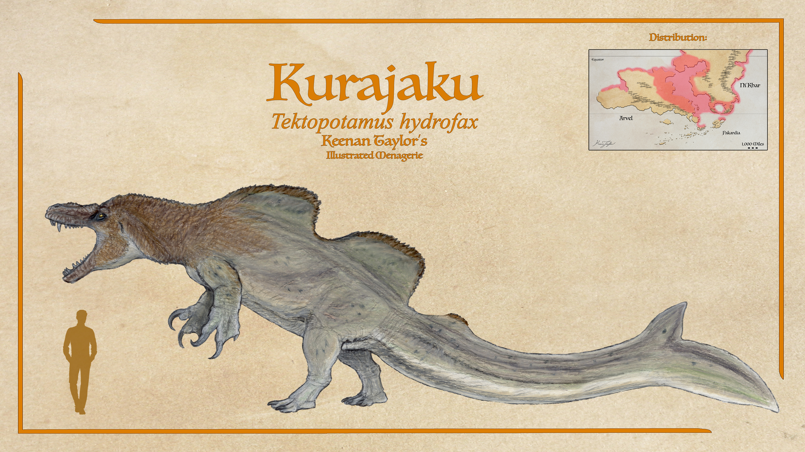
Adult females of both species remain within dimensions broadly comparable to those of the largest terrestrial theropods. Mature cows generally attain lengths of 12 — 14 meters and masses of approximately 9 — 14 tons, though exceptional individuals occasionally exceed these values. Their proportions remain relatively conservative because females must still haul themselves onto land to construct nests, incubate eggs, and defend hatchlings. Selection therefore imposes a practical upper limit beyond which terrestrial movement becomes prohibitively costly. Males are liberated from this constraint. Upon reaching sexual maturity, growth continues for decades beyond the point at which females approach asymptotic size. Mature bulls of T. hydrofax commonly attain lengths of 17 — 19 meters and masses of 20 — 28 tons, while exceptional transcontinental individuals may exceed 22 meters and approach or surpass 45 tons. The Kairulan species T. thalattanax pushes this trend even further. Mature bulls commonly exceed 20 meters, and the largest verified individuals rival small cetaceans in overall biomass. Rare nearly century-old specimens may surpass 25 meters and potentially exceed 60 tons, making them the largest predatory theropods known from either planet
Despite these dimensions, the kurajaku does not possess the towering silhouette associated with giant terrestrial predators. Instead, the body is remarkably low-slung and streamlined. The torso forms a broad fusiform cylinder tapering both anteriorly and posteriorly. Limb length is greatly reduced relative to body size, while the tail constitutes nearly half of total body length. In life, the animal presents an elongated, almost amphibious profile adapted for minimizing hydrodynamic resistance rather than maximizing terrestrial stride length.
02 · DISTRIBUTION
Habitat Range and Distribution
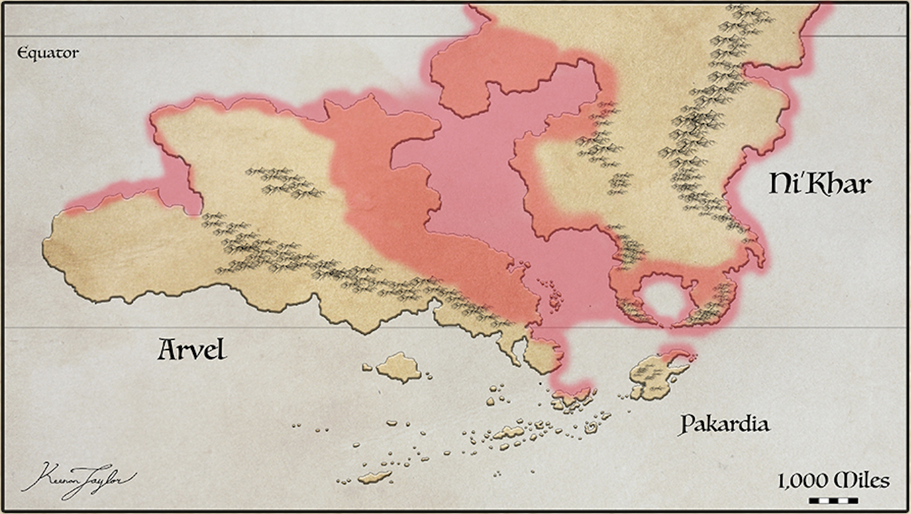
The kurajaku occupies one of the broadest geographic distributions of any theropod apex predator in Kaimere, yet its range is governed by a remarkably narrow set of ecological requirements. Across the Known World and far beyond its explored boundaries, the species is consistently associated with warm, permanently productive aquatic landscapes characterized by extensive shallow-water environments, predictable concentrations of large vertebrate prey, and continuous hydrological connectivity. Although its distribution stretches across thousands of kilometers and encompasses multiple climatic zones, the kurajaku is not a habitat generalist. Rather, it is a highly specialized semiaquatic predator whose ecological identity is fundamentally tied to the structure and dynamics of large tropical and subtropical wetland systems. Water, rather than vegetation, elevation, or temperature alone, serves as the primary determinant of habitat suitability.
The species ranges throughout much of eastern and western Arvel, the vast majority of Ni'Khar, the Spine Peninsula of Pakardia, the northern coasts of the Free-States of Qadan in the Great Khalin Sea, and extensive regions beyond the traditionally defined Known World. Its distribution follows major drainage networks, coastal floodplains, inland deltas, drowned river valleys, and shallow epicontinental waterways. In many respects its range resembles a vast interconnected aquatic biome rather than a conventional continental distribution. Populations separated by hundreds or even thousands of kilometers may remain genetically connected through dispersing males capable of traversing immense distances via coastal routes, estuaries, inland seas, and river systems. This connectivity explains the remarkable continuity observed across much of the genus despite the enormous geographic scale involved.
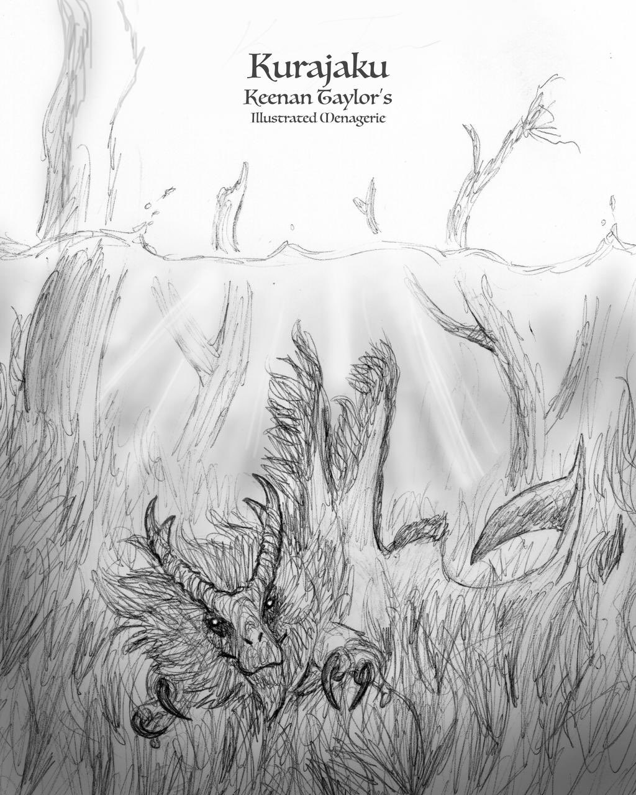
Despite occupying environments across multiple continents, the ecological requirements of the species remain consistent. Kurajaku are overwhelmingly associated with low-relief landscapes where shallow water persists throughout most or all of the year. Rivers, floodplains, marshes, oxbow systems, drowned forests, estuarine wetlands, inland deltas, and shallow seaways constitute the overwhelming majority of occupied habitats. Deep marine environments are generally avoided, as are highly seasonal waterways that periodically contract beyond the depths necessary to support submerged locomotion. Likewise, habitats lacking substantial aquatic connectivity rarely support resident populations, regardless of prey abundance. This specialization arises directly from the species' unique anatomy and locomotor strategy. Unlike crocodilians, mosasaurs, marine mammals, or other aquatic predators, kurajaku are poor swimmers. Their dense skeletons, reduced pneumaticity, thick integument, and immense muscle mass produce strongly negative buoyancy. Rather than swimming through the water column, they move primarily along submerged substrates. Habitat suitability is therefore constrained not merely by the presence of water, but by the presence of water bodies possessing appropriate depth, bottom composition, and structural complexity. Ideal environments allow the animal to remain submerged while maintaining contact with the substrate, enabling rapid bottom-running locomotion and concealed approach toward prey. Consequently, the species exhibits a strong preference for shallow aquatic systems. Rivers with gently sloping banks, broad floodplain channels, extensive marsh networks, and seagrass-rich coastal shallows are particularly favored. Water depths between several meters and approximately fifteen meters appear optimal for large adults, providing sufficient concealment without forcing prolonged swimming. Habitats exceeding these depths may still be utilized as travel corridors, particularly by large bulls, but are generally of secondary importance compared to shallower feeding grounds. Similarly, heavily braided river systems and floodplain mosaics support higher densities than narrow confined channels because they provide greater opportunities for ambush and greater concentrations of prey.
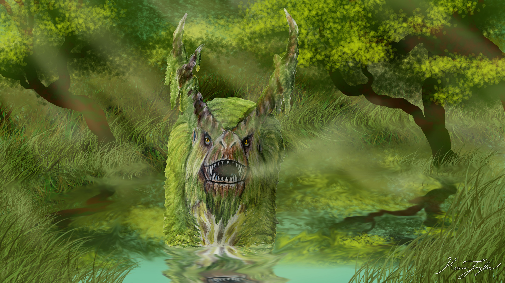
Throughout Arvel, kurajaku populations are concentrated primarily within the immense river systems draining toward the Trakaiam basin. Eastern Arvel supports some of the most stable populations outside Kairul itself. Here, broad tropical rivers meander through seasonally inundated forests and extensive wetland complexes. These environments closely resemble the ecological conditions believed to characterize the ancestral habitat of the genus. Flooding events create enormous temporary expansions of aquatic habitat, submerging forests and grasslands beneath several meters of water. During these periods, kurajaku disperse widely through flooded terrain, exploiting prey species forced into aquatic environments. As waters recede, herbivores become concentrated along remnant channels and shrinking floodplain lakes, creating seasonal pulses of hunting opportunity. Within western Arvel, populations become more fragmented and are largely restricted to coastal regions and into the Bay of Timugai. The increasing aridity generated by rain-shadow effects and continentality limits the extent of suitable habitat. These rare western visitors are mostly transient males are often characterized by larger home ranges and lower densities than their eastern counterparts, reflecting reduced hydrological connectivity and lower overall prey biomass.
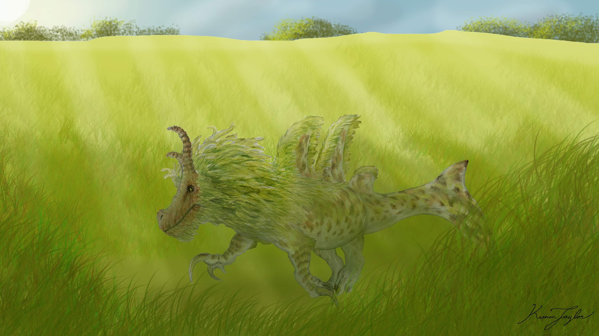
Ni'Khar supports an equally important component of the species' distribution. Along the western and southern margins of the continent, numerous river systems flow into the Trakaiam Sea and associated coastal basins. Here, kurajaku occupy extensive floodplain forests, freshwater marshes, estuarine systems, and drowned coastal lowlands. The species is especially common in monsoonal regions where seasonal rainfall produces predictable cycles of flooding and contraction. During wet periods, individuals disperse through vast flooded landscapes. During dry periods, prey concentrations increase dramatically as water becomes restricted to permanent channels and wetlands. Kurajaku movements track these hydrological oscillations closely. The Crescent Peninsula and its associated lowlands provide particularly favorable habitat. Sheltered by surrounding mountain systems and supplied by abundant runoff, these regions maintain stable aquatic productivity throughout the year. Large herbivores frequently move between grasslands and riparian environments, creating predictable hunting opportunities. The Seridic wetlands are an especially favored habitat due to its structure and prey density. Similar patterns occur along the N'dogash and Iraband peninsulas, where maritime influences moderate seasonal extremes and sustain extensive wetland systems. While kurajaku have populations more coastal in the N'dogash peninsula, they have a more extensive interior range in the Iraband peninsula. In contrast, the interior Houze Prairie and other open grassland regions support few resident kurajaku despite abundant herbivore populations. The absence of permanent aquatic cover severely limits hunting opportunities, rendering these environments unsuitable except as dispersal corridors.
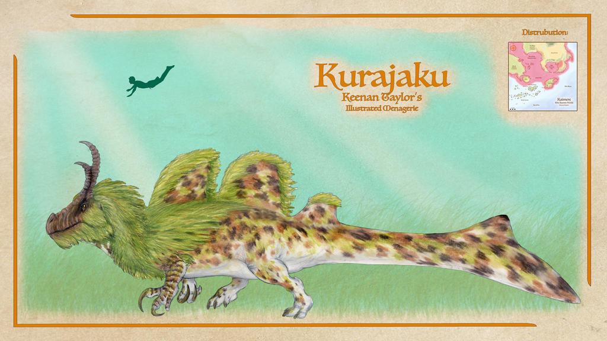
The Trakaiam Sea represents the single largest continuous marine habitat occupied by the kurajaku and is arguably the most unusual apex-predator ecosystem anywhere within the Known World. Unlike most inland seas, which are characterized by extensive pelagic environments beyond the reach of large semiaquatic predators, the Trakaiam is fundamentally a shallow-water system. Stretching approximately 3,200 kilometers across while rarely exceeding thirty meters in depth outside its major channels, the basin functions less as a conventional sea and more as an immense submerged prairie dominated by seagrass meadows, reef complexes, tidal wetlands, and shallow marine corridors. Nearly eighty percent of the sea floor is covered by dense seagrass vegetation, creating what marine ecologists often describe as the "Prairie Below the Waves," the largest continuous benthic grazing ecosystem presently known on Kaimere. For the kurajaku, this environment represents a marine extension of the floodplain and wetland systems that dominate the remainder of its range. The shallow depth of the basin allows individuals to employ the same bottom-running locomotion that characterizes populations inhabiting rivers, marshes, and drowned forests. Throughout much of the Trakaiam, even the largest adults remain capable of maintaining contact with the substrate while fully submerged. Rather than swimming through the water column, they traverse the seabed itself, moving through seagrass canopies, coral channels, and sediment plains much as terrestrial predators move through grasslands. The extraordinary shallowness of the basin therefore eliminates one of the primary constraints that normally prevents giant semiaquatic theropods from exploiting marine ecosystems. The highest densities occur throughout the southern and central sectors of the sea where vast seagrass meadows intersect major river deltas and coastal wetland complexes. These environments support the greatest concentration of marine megaherbivores on the planet. Sirenians, marine sloths, desmostylians, giant dicynodonts, odaga herds, spirit drakes, juvenile leviathans, and countless other grazers consume the immense productivity generated by the Prairie Below the Waves. The resulting biomass rivals that of the largest terrestrial herbivore communities. Consequently, the Trakaiam Sea supports predator populations that would be impossible elsewhere. Interestingly, males are the highest sex demographic in the Trakaiam Sea, as females need more access to sustainable territories that can support nesting. Male kurajaku routinely patrol migration routes linking feeding grounds, nesting areas, and seasonal grazing concentrations, often establishing territories centered upon particularly productive seagrass basins. Particularly important are the transition zones between seagrass meadows and the Braided Rivers. These deep channels constitute the principal hydrological arteries of the inland sea and create sharp ecological boundaries between shallow grazing habitats and deeper pelagic environments. Nutrient-rich upwelling along channel margins attracts enormous concentrations of fish, marine reptiles, cetaceans, and herbivorous megafauna. Kurajaku frequently patrol these interfaces, exploiting prey movements between shallow and deep habitats. Individuals are commonly observed lying motionless along channel edges where visibility declines, launching explosive ambushes against animals moving between feeding grounds. Large bulls often utilize the channels themselves as long-distance dispersal routes, traveling hundreds of kilometers between distant territories while remaining entirely within aquatic habitat. The Trakaiam Sea also serves as one of the most important dispersal corridors within the species' range. Whereas terrestrial barriers frequently isolate populations elsewhere, the inland sea provides uninterrupted habitat extending across much of the Known World. Adult males routinely traverse enormous distances through coastal shallows and meadow systems, connecting populations from Arvel, Ni'Khar, Pakardia, and the Free States. Genetic studies indicate that this marine connectivity plays a major role in maintaining gene flow across the species' continental distribution. In effect, the Trakaiam functions as a biological highway linking populations that would otherwise become isolated by mountains, forests, and arid interiors.
The southern limits of the species' range in the Known World extends into the northern tip of Pakardia and portions of the Great Khalin basin. Unlike the Traikaim basin, the Great Khalin Sea constitutes one of the most structurally and dynamically complex marine systems within the Known World, occupying a vast temperate basin. Unlike the comparatively enclosed and thermally uniform Trakaiam Sea, the Khalin basin exists in a state of continuous exchange with the greater southern oceans. This openness, combined with its irregular bathymetry and dense archipelagic interruptions, produces a marine environment defined by gradients rather than uniformity. This makes it a very insatiable habitat for the kurajaku in both temperature and habitat structure. As such, only transient males ever enter this region. Pakardia has seasonal salmon runs which draw in marine males to the migratory routes of these fish, alongside other predators in Pakarida.

Despite this extensive distribution, the true ecological center of the species lies within Kairul. No other region combines the climatic stability, hydrological scale, and prey abundance necessary to support kurajaku at their maximum size and density. Indeed, much of the evolutionary history of the genus appears inseparable from the development of Kairul's vast inland aquatic systems. Kairul differs fundamentally from the western continents. The immense Kairul Inland Sea dominates both climate and hydrology across much of the continent. Unlike the Trakaiam Sea, which occupies a relatively confined position within the Known World, the Inland Sea functions as a continental-scale climatic engine. Warm equatorial waters generate enormous quantities of atmospheric moisture which are subsequently transported across surrounding lowlands. The resulting precipitation supports an unparalleled network of rivers, wetlands, marshes, drowned forests, and floodplain basins. These systems collectively form perhaps the largest continuous semiaquatic habitat complex on the planet. Along the western coast of Kairul, especially throughout the great lowlands bordering the western peninsula, extensive wetland networks stretch across regions comparable in size to entire terrestrial nations. Here, kurajaku attain their greatest abundance. The landscape is dominated by shallow rivers, interconnected marshes, floodplain forests, permanent swamps, and channels excavated over generations by the movements of the animals themselves. In many areas aquatic connectivity is so extensive that an individual may travel hundreds of kilometers without ever leaving suitable habitat. The western Kairulan wetlands are particularly significant because they support extraordinary concentrations of megafauna. Unlike seasonal ecosystems elsewhere in the world, these environments experience no true dormant period. High temperatures persist year-round, rainfall remains abundant, and primary productivity rarely declines substantially. Consequently, prey populations remain continuously available. Hydrologically, these western wetlands function as enormous integrated ecosystems. Seasonal flooding still occurs, but rather than transforming habitat availability, it alters patterns of connectivity and prey distribution. During major flood events, kurajaku expand into newly inundated forests and floodplain basins. As waters recede, herbivores become concentrated along permanent channels and wetlands. This cyclical redistribution of prey resources likely contributes significantly to the species' extraordinary success within the region. The shallow coastal margins of the Kairulan Inland Sea represent another major center of abundance. Unlike deep marine environments, these coastal waters are characterized by broad continental shelves, extensive seagrass meadows, and relatively shallow depths. Such conditions permit kurajaku to exploit both freshwater and marine-derived food resources. Large herbivorous aquatic fauna congregate in these areas, creating hunting opportunities unavailable elsewhere. Mature bulls frequently establish travel routes linking inland wetlands with coastal feeding grounds, allowing access to multiple prey communities across enormous geographic areas. Conversely, several Kairulan environments remain largely unsuitable despite occurring within the broader range of the species. The Barricade Desert, interior arid basins, and portions of the Deadlands provide insufficient aquatic habitat and are effectively excluded from occupation. Similarly, steep mountain systems surrounding parts of the Inland Sea disrupt hydrological connectivity and restrict movement. Although river corridors crossing these regions may occasionally be utilized by dispersing individuals, stable populations are absent. The heavily elevated forests of certain upland regions likewise support few kurajaku due to confined waterways, steep gradients, and reduced opportunities for bottom-running locomotion.
Climatically, the species demonstrates a strong preference for environments characterized by high mean annual temperatures and minimal seasonal cooling. Water temperature appears particularly important. Most dense populations occur where aquatic temperatures remain above 27°C throughout the year and commonly exceed 30°C. Such conditions characterize much of Kairul, the Trakaiam basin, and the Great Khalin region. Colder environments may support transient individuals, but population density declines rapidly with decreasing temperature. This pattern likely reflects both physiological specialization and the distribution of large aquatic prey communities upon which the species depends.
03 · NOMENCLATURE
Etymology
The common name kurajaku is derived from the Amenetran or common tongue, in which kura denotes "ancient lord" and jaku denotes "flowing waters." The complete name is therefore translated as "ancient lord of the flowing waters." This designation reflects the animal's exceptional size, ecological dominance, and close association with the riverine, lacustrine, and coastal environments of Kaimere. The name is particularly appropriate given the kurajaku's evolutionary specialization for aquatic predation and its ability to traverse extensive networks of rivers, estuaries, and shallow seaways.
The scientific genus name Tectopotamus is derived from the Ancient Greek téktōn (τέκτων), meaning "builder," "craftsman," or "artisan," and potamós (ποταμός), meaning "river." The combination may be interpreted as "river builder," an appropriate designation for an animal whose ecological influence extends beyond predation. In particular, Kairulan populations construct and maintain extensive networks of channels through the wetlands they inhabit, connecting slow-flowing rivers and facilitating the movement of water through otherwise isolated aquatic environments. Although this channel-building behavior is most conspicuous among Kairulan populations, the genus name applies to the lineage as a whole.
The specific epithet hydrofax combines the Greek-derived element hydro-, from hýdōr (ὕδωρ), meaning "water," with -fax, from Latin faciō, "to make" or "to do," as used in compounds to denote an agent or producer. The epithet may therefore be interpreted as "water-maker" or "one that shapes water," reinforcing the association between the animal and its semiaquatic habitat. Together, Tectopotamus hydrofax may be rendered approximately as "the river-building water-shaper." The name reflects the species' close association with riverine and wetland ecosystems, as well as the substantial physical alterations produced by its movements and habitat-modifying activities.
The Kairulan kurajaku, designated Tectopotamus thalattanax, is named for its characteristic association with the extensive wetlands of Kairul. The specific epithet thalattanax combines thálatta (θάλαττα), an Ancient Greek form of thálassa (θάλασσα), meaning "sea," with ánax (ἄναξ), meaning "lord," "master," or "ruler." The resulting name may be interpreted as "lord of the sea" or, more broadly, "master of the waters." Although Kairulan populations inhabit predominantly freshwater and brackish wetlands rather than open marine environments, the epithet emphasizes the animal's dominance within aquatic landscapes. The designation also reflects the immense scale of the channel networks associated with these populations, which create a connected wetland system across a substantial portion of western Kairul.
04 · ANATOMY AND PHYSIOLOGY
Adaptations
The kurajaku represents one of the most specialized aquatic-associated theropod lineages known from Kaimere. Although taxonomically nested within Megaraptora, the genus has diverged profoundly from the ancestral cursorial predator body plan. Nearly every aspect of its anatomy reflects adaptation toward exploiting shallow marine environments, estuaries, floodplains, inland seas, vast wetland complexes, and river systems containing exceptionally large aquatic and semi-aquatic vertebrates. Unlike fully aquatic vertebrates, kurajaku remain fundamentally terrestrial archosaurs that reproduce on land and retain weight-bearing hindlimbs. However, they have evolved a suite of biomechanical, physiological, and sensory adaptations allowing them to operate as highly efficient benthic pursuit predators. The defining adaptive trend within the genus is the replacement of terrestrial speed with aquatic stability, negative buoyancy, endurance, and grappling capability. Selection has favored extreme skeletal robustness, dense musculature, reduced pneumaticity, powerful forelimbs, and massive caudal propulsion systems. These adaptations allow kurajaku to dominate environments where most large terrestrial predators become ineffective.
Skull
The skull of the kurajaku represents one of the most extreme cranial specializations known among modern apeirovenatorid megaraptorans. Although descended from predominantly terrestrial ancestors, the kurajaku has undergone extensive structural remodeling in response to a lifestyle centered on the capture, restraint, and dispatch of exceptionally large aquatic and semi-aquatic prey. The resulting cranium differs markedly from that of terrestrial relatives such as the zentaur. Rather than emphasizing rapid strike mechanics, repeated slashing attacks, or pursuit predation, the kurajaku skull functions primarily as a biomechanical anchoring apparatus. It is a reinforced grappling structure designed to maintain purchase on prey that may equal or exceed its own mass while resisting multidirectional loading generated by water currents, struggling victims, and prolonged underwater combat.
In overall proportions, the skull is relatively short, broad, and deep. Adult females possess skulls commonly measuring between 1.7 and 2.1 meters in length, while large resident bulls frequently exceed 2.3 meters. Exceptional transient males may possess skulls approaching or surpassing 2.8 meters in total length. Despite this immense size, the skull remains proportionally shorter relative to body length than in most giant megaraptorans. This shortening reduces bending stresses along the rostrum and places the tooth row closer to the rotational axis of the neck, increasing mechanical advantage during prey restraint. Viewed laterally, the skull forms a powerful wedge-shaped profile. The dorsal surface is relatively flat across much of its length, while the ventral margin descends deeply beneath the orbit. This produces a high dorsoventral depth throughout the posterior half of the cranium. Such proportions substantially increase resistance to vertical bending and torsional deformation. Unlike elongate-snouted piscivorous predators, whose cranial architecture prioritizes rapid lateral sweeps through water, the kurajaku exhibits a skull built to withstand violent rotational loads. This distinction reflects the species' primary prey base. Most feeding events involve animals weighing several tons, including cetaceans, aquatic ungulates, giant crocodilians, large fish, and semi-aquatic megafauna capable of generating tremendous resistance after capture.
The rostrum itself is among the most distinctive regions of the skull. Rather than tapering into a narrow crocodilian profile, the premaxillary region broadens anteriorly into a blunt, heavily reinforced structure. The snout possesses considerable transverse thickness, creating a broad U-shaped anterior profile. This morphology distributes stress across a larger surface area during initial prey contact. When the jaws close upon a struggling animal, force is not concentrated at a narrow point but spread across a broad contact region capable of tolerating significant loading. The premaxillae are exceptionally robust and extensively integrated with the maxillary complex. Sutural interlocking between these elements is pronounced, minimizing relative motion between bones during forceful biting. Internally, the region is characterized by extensive trabecular reinforcement and thick cortical walls. These structures collectively function as an anterior buttress that absorbs compressive and torsional stresses generated when prey attempts to twist free. In large bulls, the premaxillary complex is so heavily reinforced that it resembles the cranial architecture of certain giant marine reptiles more than that of typical theropods.
The maxillae are proportionally deep and house some of the largest teeth present within the dentition. Their vertical depth contributes significantly to overall skull rigidity. Unlike more gracile megaraptorans, in which the maxilla functions partly as a lightweight framework surrounding extensive pneumatic spaces, the maxillary bones of kurajaku are remarkably dense.
Pneumatization is reduced throughout much of the skull, reflecting the species' unusual relationship with buoyancy. The reduction of cranial air spaces contributes to the overall negative buoyancy that characterizes the genus and aids bottom-running locomotion.
The external nares occupy a highly modified position. Rather than being situated primarily along the lateral surface of the snout, they are elevated dorsally and displaced posteriorly. This arrangement permits respiration while the majority of the skull remains submerged. Field observations consistently demonstrate that hunting individuals expose only the upper cranial surface, nostrils, and eyes while stalking prey. Such positioning minimizes visual detection while maintaining access to atmospheric oxygen and airborne scent cues.
The olfactory system remains exceptionally developed despite this aquatic specialization. Unlike fully aquatic vertebrates that rely predominantly upon underwater sensory modalities, kurajaku continue to depend heavily upon atmospheric olfaction. The enlarged nasal chambers support an extensive sensory epithelium capable of detecting prey odors over considerable distances. This capability is particularly important for transient bulls navigating between distant breeding territories or searching for surfacing leviathans in coastal environments. The posterior placement of the nostrils further facilitates scent acquisition while minimizing exposure during ambush behavior.
The orbital region is likewise highly specialized. The eyes are positioned unusually high on the skull, forming the most elevated structures when the animal is submerged. This arrangement closely parallels adaptations seen in several semi-aquatic vertebrate lineages. Elevated orbital placement allows broad visual surveillance while exposing minimal body surface. The eyes themselves are proportionally large and supported by substantial bony reinforcement surrounding the orbit. Although binocular overlap remains extensive, it is somewhat reduced relative to highly predatory terrestrial megaraptorans. This reflects differing ecological requirements. The zentaur, for example, must accurately judge distances during rapid terrestrial lunges. Kurajaku typically engage prey at much closer range, often after prolonged stalking. Consequently, visual fields emphasize environmental monitoring and prey detection rather than extreme stereoscopic precision. Nevertheless, forward-facing vision remains sufficiently developed to permit accurate targeting during underwater grappling events.
Posterior to the orbit, the skull expands dramatically. The temporal region is among the most enlarged observed within Apeirovenatoridae. Massive supratemporal fenestrae occupy a substantial proportion of the skull roof and provide attachment surfaces for extraordinary jaw musculature. The temporal arches are thickened and reinforced to withstand repeated loading generated by sustained biting. The adductor musculature reaches exceptional development in mature adults. In large transient bulls, the adductor complexes may represent one of the largest proportional investments in jaw musculature known among terrestrial vertebrates. The posterior widening of the skull creates extensive origin surfaces that permit enormous muscle cross-sectional area. Unlike predators specialized for rapid jaw closure, kurajaku prioritize force generation and sustained clamping ability. The cranial roof itself is remarkably thick. Frontal and parietal bones form a broad, heavily reinforced platform characterized by extensive sutural interdigitation. Cranial kinesis is effectively absent. The skull behaves as a rigid structural unit rather than a collection of semi-mobile elements. This rigidity improves force transmission during prey restraint and minimizes energy loss during biting.
The mandible mirrors the robust construction of the cranium. The dentary is exceptionally deep, maintaining substantial vertical thickness throughout most of its length. This depth increases resistance to bending and twisting while prey struggles. The ventral border is reinforced by thick cortical bone and extensive internal buttressing. Particularly notable is the reinforced mandibular symphysis. The left and right dentaries are tightly integrated, producing a broad anterior platform resistant to torsional loading. This feature is critical because captured prey frequently attempts rotational escape movements. A weaker symphysis would experience significant risk of structural failure under such conditions. The jaw articulation is similarly specialized. The articular, surangular, and angular complexes form a highly stable hinge capable of tolerating extreme compressive loads. Lateral motion is restricted. The jaws close primarily in an orthal plane, maximizing transmission of force through the dentition. This configuration transforms the skull into an enormous biological clamp.
Adult bite force estimates are correspondingly impressive. Biomechanical reconstructions based upon skull proportions, muscle attachment areas, and mandibular leverage suggest average mature females generated approximately 3,500 — 4,500 PSI at the posterior dentition. Resident males commonly achieved values between 4,500 and 5,800 PSI. Large transient bulls likely exceeded 6,000 PSI under maximal contraction, with exceptional individuals potentially approaching 6,500 — 7,000 PSI. Such values place the kurajaku among the most powerful-biting theropods known from either Earth or Kaimere. Importantly, this force is not employed primarily for bone crushing. Rather, it serves to secure prey and maintain control during prolonged struggles. Once the jaws have established purchase, the bite functions as an anchoring mechanism while the forelimbs, body mass, and underwater environment contribute to prey incapacitation. Victims frequently succumb through exsanguination, organ trauma, shock, or drowning rather than direct skeletal destruction.
The dentition reflects this functional emphasis. Teeth are robust, laterally compressed, and deeply rooted. The anterior maxillary teeth are especially enlarged, forming prominent fang-like structures capable of penetrating thick hides and securing an initial grip. These teeth resist pull-out forces exceptionally well due to their deep implantation and extensive periodontal reinforcement.
Ontogenetically, cranial morphology changes substantially. Hatchlings possess comparatively narrow skulls with reduced temporal development and modest bite capabilities. Juvenile skulls emphasize rapid prey acquisition and handling of smaller vertebrates. As individuals mature, the skull broadens dramatically, temporal musculature expands, cortical bone thickens, and bite performance increases disproportionately relative to body size. This transformation parallels ecological development. Juveniles function primarily as opportunistic predators and scavengers. Adults become specialized grappling predators capable of subduing some of the largest aquatic animals in their ecosystems.
The skull therefore records the entire evolutionary trajectory of the species: from a relatively conventional megaraptoran predator to a colossal semi-aquatic apex carnivore whose cranial architecture is among the most mechanically specialized structures produced by the Apeirovenatoridae. Within the broader evolutionary history of megaraptorans, few anatomical systems illustrate adaptive divergence more dramatically than the skull of the kurajaku. It is not merely enlarged. It is fundamentally re-engineered for a mode of predation unlike that practiced by any other member of its lineage.
Dentition
The dentition of the kurajaku represents one of the most specialized feeding systems known among modern apeirovenatorid megaraptorans. Although superficially resembling the dentitions of other giant predatory theropods, closer examination reveals a suite of anatomical modifications associated with a highly unusual feeding ecology centered on the capture, restraint, drowning, and dismemberment of exceptionally large aquatic and semi-aquatic prey. Unlike terrestrial megaraptorans, whose dentitions are optimized primarily for tissue laceration and blood loss, the teeth of the kurajaku function principally as anchoring structures. Their role is not merely to wound prey but to maintain mechanical control over struggling animals in an environment where buoyancy, drag, and multidirectional resistance profoundly alter predator-prey dynamics.
The dentition is strongly heterodont and organized into distinct functional regions corresponding to different phases of prey capture. These regions include the premaxillary grasping complex, the hypertrophied maxillary caniniform complex, and the posterior retention dentition. Together they form a coordinated mechanical system capable of securing prey ranging from giant fish to multi-ton marine mammals and leviathans.
Overall tooth count is somewhat reduced relative to more generalized megaraptorans. This reduction reflects increased structural investment in individual teeth rather than reliance upon numerous smaller crowns. Each functional tooth is deeply rooted, heavily reinforced, and characterized by unusually robust construction. Dental replacement remains continuous throughout life, but replacement rates appear significantly slower than those documented in most theropod lineages. The energetic cost of producing each tooth is substantial, and replacement schedules are correspondingly prolonged.
The premaxillary dentition forms the anterior grasping apparatus of the skull. These teeth are proportionally short, broad-based, and only weakly compressed laterally. In cross section they approach a circular to suboval profile rather than the blade-like morphology characteristic of many terrestrial carnivores. Crown curvature is present but relatively modest. This morphology increases resistance to bending stresses during initial prey contact. The premaxillary teeth function primarily during the earliest stages of prey capture. Their broad bases and thick enamel coatings permit forceful penetration into dense tissue while minimizing fracture risk. When a kurajaku lunges at prey, these anterior teeth often make first contact. Because aquatic prey frequently collide with the jaws at oblique angles, the teeth must tolerate substantial lateral loading immediately upon impact. The robust construction of the premaxillary series reflects these requirements. Microscopic wear patterns indicate frequent abrasion against scales, osteoderms, keratinized tissues, and occasionally bone. Nevertheless, the crowns generally exhibit relatively low rates of catastrophic failure. This durability likely results from the combination of thick enamel, reduced lateral compression, and extensive root support.
Immediately posterior to the premaxillary series lies the most distinctive component of the dentition: the enlarged maxillary caniniform complex. These hypertrophied fangs are among the most recognizable anatomical features of the species and represent one of the most extreme examples of dental specialization within the Apeirovenatoridae. Unlike the pseudo-canines of terrestrial relatives, the caniniform teeth of Tectopotamus attain extraordinary dimensions. In large adult females, exposed crown length commonly exceeds thirty centimeters. In mature bulls, individual crowns may surpass forty centimeters, while the largest transient males possess caniniform teeth approaching half a meter in total exposed length. These teeth project conspicuously beyond the remainder of the tooth row. Despite their elongation, the caniniforms are not sabre-like structures. True sabre morphologies are characterized by extreme lateral compression and relative fragility. Kurajaku caniniforms instead remain exceptionally thick throughout their length. Cross sections are broadly oval, with extensive internal dentine reinforcement and unusually thick enamel deposition. The crowns exhibit pronounced recurvature, but the curvature remains gradual rather than extreme. Functionally, these teeth operate as biological grappling hooks. During prey capture they are driven deeply into soft tissue, often penetrating through thick blubber layers, dense cervical musculature, or the thoracic tissues of large prey animals. Once embedded, their recurved morphology greatly increases resistance to extraction. Escape attempts by prey frequently increase penetration depth rather than facilitating release. The structural demands placed upon these teeth are extraordinary. Unlike terrestrial predators that repeatedly release and reposition their bites, kurajaku often maintain a single grip for extended periods while prey struggles. Consequently, the caniniforms must withstand sustained bending moments, torsional loads, and repeated shock loading generated by powerful aquatic animals attempting to escape. Internal anatomy reflects these requirements. The roots of the caniniforms are exceptionally deep and occupy a disproportionate volume of the maxilla. Extensive alveolar reinforcement distributes stresses throughout the skull rather than concentrating them at individual sockets. Cortical bone surrounding the tooth roots is substantially thicker than that observed in most other megaraptorans.
Posterior to the caniniform complex, the dentition transitions into a series of shorter but extremely robust maxillary teeth. These crowns are laterally compressed and display a more traditionally ziphodont morphology. However, they remain broader and thicker than those of most terrestrial relatives. Crown height decreases progressively toward the rear of the tooth row while root diameter remains substantial. This configuration enhances resistance to bending and breakage. Unlike predators specialized for rapid flesh slicing, the kurajaku rarely relies upon repeated cutting motions. Instead, posterior teeth function primarily as retention devices that prevent prey from escaping once seized. Serrations are present along both mesial and distal carinae. Denticle size is relatively coarse, though serration density is lower than in many terrestrial hypercarnivorous theropods. The serrations function principally to increase frictional resistance and enlarge wound channels during head movements rather than maximizing slicing efficiency. The dentary dentition mirrors many characteristics of the posterior maxillary series. Lower-jaw teeth are deep-rooted, heavily reinforced, and moderately recurved. Their primary role is to stabilize prey against the upper dentition and maintain secure purchase during prolonged struggles.
Unlike many large theropods, the kurajaku does not rely heavily upon repeated lateral head shaking to dismember prey. Water resistance greatly reduces the effectiveness of such behaviors. Instead, prey processing often involves powerful backward pulling motions combined with forelimb assistance. The dentition is therefore adapted to withstand sustained tensile loading rather than rapid cyclical shearing.
Enamel thickness throughout the dentition is remarkable. Comparative studies indicate that enamel layers are substantially thicker than those present in most apeirovenatorids. This reinforcement is especially pronounced on the caniniform teeth and posterior retention crowns. The enamel microstructure appears optimized for crack resistance. Microscopic fractures frequently terminate before propagating through the full enamel layer, reducing the likelihood of catastrophic crown failure. Such reinforcement is essential given the mechanical challenges associated with capturing prey that may weigh several tons and possess substantial defensive capabilities. Dental wear accumulates progressively throughout life. Young individuals typically possess relatively pristine dentitions characterized by sharp serrations and intact crown tips. Older adults frequently exhibit extensive wear, including blunted serrations, enamel spalling, crown fractures, and occasionally complete tooth loss. Large transient bulls provide particularly dramatic examples of cumulative dental damage. Individuals that spend decades hunting leviathans, giant sirenians, marine multituberculates, crocodilians, and other megafauna often possess heavily scarred dentitions. Broken caniniforms are not uncommon among elderly males. Nevertheless, continual replacement ensures long-term maintenance of functional feeding capacity.
Ontogenetically, the dentition undergoes substantial transformation. Hatchlings possess comparatively uniform teeth that differ little from one another. These juvenile crowns are slender, moderately recurved, and adapted for capturing small vertebrates, fish, and invertebrates. As growth proceeds, the caniniform complex enlarges disproportionately relative to the remainder of the dentition. Crown thickness increases, root depth expands, and enamel deposition intensifies. By the subadult stage, clear functional differentiation between anterior anchoring teeth and posterior retention teeth has emerged. In mature adults this differentiation becomes extreme. The dentition effectively transforms into a specialized grappling system capable of securing prey that would be impossible for most theropods to control. This ontogenetic progression parallels ecological shifts from opportunistic predation to dominance of the aquatic megafaunal predator guild.
Particularly noteworthy is the relationship between dentition and feeding behavior. Kurajaku rarely consume prey through the repetitive slicing motions characteristic of many terrestrial theropods. Instead, feeding typically involves securing a carcass with the jaws and forelimbs before removing large sections of tissue through powerful posterior traction. Entire muscle groups may be detached in single feeding movements. This strategy explains several aspects of dental morphology. The robust caniniforms establish and maintain grip, the posterior teeth prevent slippage, and the coarse serrations facilitate tissue separation during pulling motions. Rather than functioning as a collection of cutting blades, the dentition operates as an integrated retention apparatus optimized for controlling massive prey in a fluid medium.
The evolutionary significance of this system cannot be overstated. Within Apeirovenatoridae, the ancestral condition involved moderately heterodont dentitions specialized for terrestrial predation. In the kurajaku, this ancestral pattern has been transformed into a highly derived feeding apparatus adapted for underwater grappling. Every major component of the dentition—from crown proportions and enamel thickness to root depth and replacement dynamics—reflects the demands imposed by a lifestyle centered on the capture of enormous aquatic vertebrates.
Oral Cavity
The oral cavity of the kurajaku is a highly specialized anatomical chamber adapted for the reception, manipulation, and retention of exceptionally large prey in shallow aquatic and semi-aquatic environments. In comparison with more terrestrial megaraptorans, the kurajaku exhibits a markedly enlarged oral volume, a reinforced palatal architecture, thickened soft-tissue margins, and an unusually secure sealing system at the mouth corners and throat. These features are not incidental byproducts of gigantism but integral components of a feeding apparatus evolved under prolonged selective pressure from prey animals capable of violent struggle, sustained dragging, and repeated rotational escape. The oral cavity is therefore best regarded not simply as an ingestion space, but as the internal continuation of a prey-subduing mechanism whose function extends from initial bite contact through retention, drowning, tissue stripping, and eventual deglutition.
The oral aperture itself is broad and vertically deep, with a gape capacity far exceeding that of most theropods of comparable length. In mature bulls, the mandible is capable of opening to a striking angle without catastrophic loss of structural integrity. This is made possible by the immense reinforcement of the jaw joint, the robust musculature of the pterygoid and adductor complexes, and the deep-set symphyseal region of the mandibles. The opening of the mouth does not simply create a large oval entrance; it produces a wide, highly stable capture chamber into which substantial portions of prey tissue or entire limbs may be drawn. The commissural region is heavily muscled and reinforced by dense connective tissue, reducing the risk of tearing when the jaws are forced apart by struggling victims.
The oral margins are thick and well protected. Unlike the exposed, relatively delicate soft tissue rims of many theropods, the kurajaku possesses sturdy lip-like margins and dense gingival tissue that protect the dental arcade and reduce hydrodynamic distortion during underwater feeding. These margins are not fleshy lips in the mammalian sense, but rather robust, keratinized and fibromuscular seals that help limit water ingress when the jaws are partially closed. This is particularly important because kurajaku frequently feed with the anterior portion of the skull submerged and may maintain a half-open bite while the animal stabilizes itself on the aquatic substrate. The oral margins therefore serve as both protective and hydrodynamic structures, reducing uncontrolled water flow into the oral cavity without preventing rapid opening during prey capture.
The palate is broad, rigid, and deeply reinforced. In mature individuals, the palatal vault is structurally integrated with the surrounding maxillary and premaxillary complex to form a load-bearing ceiling that resists deformation during prey restraint. The internal surfaces of the palate are lined with coarse mucosal folds and textured keratinized patches that improve grip on slippery or armored prey. These palatal ridges are especially useful when grasping fish, aquatic mammals, or any prey animal whose escape behavior relies on writhing and lateral torque. The rigidization of the palate is also significant in relation to aquatic feeding. When prey is pulled underwater or immobilized at the substrate, the oral cavity may be subject to abrupt pressure shifts; the reinforced palate prevents collapse during these events and preserves the structural integrity of the feeding chamber.
A notable feature of the kurajaku oral cavity is the marked development of the internal oral membranes. The lining of the cheeks, palate margins, and floor of the mouth is thick, highly vascularized, and capable of tolerating both mechanical abrasion and repeated immersion. This tissue is not merely passive lining. It contributes to tactile sensation, pressure monitoring, and the maintenance of a seal around captured prey. The oral mucosa appears especially sensitive in regions adjacent to the maxillary fang bases and the inner margins of the dentary, where tactile feedback is likely important for determining prey position. This sensory function is critical in murky or sediment-laden water, where visibility may be limited.
The tongue of the kurajaku is large, muscular, and firmly anchored at its base. It does not function as a highly mobile manipulative organ in the manner of some mammals, but rather as a stabilizing and repositioning structure within a comparatively capacious oral chamber. Its surface is thickly papillated and resistant to abrasion. During feeding, the tongue can assist in drawing prey tissue deeper into the oral cavity, repositioning loose flesh, and channeling water or debris posteriorly away from the primary bite surfaces. It may also contribute to the expulsion of excess water during surfacing and the initial stages of swallowing. In juveniles and subadults, the tongue is proportionally more flexible and is used more actively in handling smaller prey; in adults, it becomes increasingly specialized for stabilization rather than fine manipulation.
The floor of the mouth is likewise heavily muscled. The sublingual and hyoid-associated regions are robust, reflecting the need to resist downward deformation when prey is held in place. This is particularly important during underwater combat, when the entire ventral oral apparatus may be loaded by the weight and movement of prey. The hyoid complex provides support for the tongue and floor of the mouth while also contributing to the mechanical stability of swallowing. In large bulls, this system is powerful enough to withstand the dragging forces generated when prey is forced beneath the water and pinned against the substrate.
The salivary apparatus of the kurajaku is unusually developed for a giant theropod. Although the species does not rely on salivation for digestion to the same degree as mammals, the oral cavity is heavily lubricated by glandular secretions that reduce friction during the swallowing of large prey masses and help maintain oral tissues in a hydrated condition during prolonged feeding bouts. These secretions also likely assist in preserving the health of the oral mucosa under conditions of repeated immersion, exposure to saltwater in coastal individuals, and contact with blood, mucus, and decomposing tissue. In bulls that spend much of their life in marine or brackish systems, the salivary secretions appear to be especially copious, perhaps in part to facilitate osmotic stability and flush particulate matter from the mouth after feeding on large marine mammals.
The oral cavity also serves an important sensory role. The kurajaku relies heavily on olfaction, but because underwater olfactory detection is ineffective, the oral and nasal passages are closely coordinated during surfacing behavior. When the animal raises its head above the waterline, the oral cavity may be partially opened while the nostrils sample airborne chemical cues. The interior of the mouth thus becomes part of a broader sensory interface between the external environment and the highly specialized olfactory system. This is especially evident in bulls that pause between prey items to assess the scent of potential targets or detect social cues from nearby females. The oral cavity, in this sense, is not separated from the animal's chemosensory behavior but integrated into it.
Aquatic adaptation is most evident in the relationship between oral architecture and water management. The kurajaku frequently feeds with much of the head submerged, yet the oral cavity is protected from excessive flooding by its reinforced margins, rigid palate, and coordinated pharyngeal closure. Water entering the mouth is not avoided entirely; rather, the animal tolerates and manipulates it as part of the feeding process. During underwater prey restraint, some water is inevitably drawn into the oral chamber. The species accommodates this by maintaining an oral shape that allows partial flow without losing grip. The ability to hold prey while moving through or beneath the water would be severely compromised in a softer, less reinforced oral cavity. The kurajaku's mouth therefore operates as both a capture device and a pressure-tolerant chamber.
The posterior oral cavity transitions into a thick, muscular pharyngeal region. This posterior section is important in both swallowing and prey handling. Large tissue masses are often torn free and guided posteriorly in stages rather than swallowed in a single motion. The pharyngeal musculature is capable of generating significant propulsive force, helping to draw food away from the oral chamber and toward the esophagus. The throat also likely plays a role in drowning-related feeding behavior, since prey may be held in the mouth while the animal submerges and maintains a secure grip until the target is sufficiently weakened or expired. In this respect, the oral cavity and pharynx function as an extension of the kill mechanism rather than merely the first step in ingestion.
Ontogenetically, the oral cavity changes substantially with growth. Juveniles possess a comparatively narrower oral chamber, less massive soft tissue reinforcement, and proportionally smaller palatal ridges. Their oral anatomy is adapted to smaller prey and more frequent feeding movements, with greater reliance on rapid handling and less on prolonged restraint. As the animal matures, the oral cavity expands dramatically in width and depth, the internal tissues thicken, and the mechanical integration of the jaws with the throat becomes more pronounced. Mature females develop fully functional feeding cavities suited to heavy prey, but in males the oral cavity continues to enlarge in parallel with the rest of the head and body. In the largest bulls, the oral cavity is part of a feeding system capable of dealing with prey far beyond the scale tolerated by most terrestrial theropods.
Sexual variation is pronounced but not absolute. Bulls possess a larger oral cavity overall, with broader gape, deeper palatal vaults, and greater soft-tissue reinforcement. Cows retain the same fundamental plan, but their oral chambers are proportionally smaller and more compact. This reflects the different ecological demands placed on the sexes. Females must balance feeding efficiency with terrestrial nesting and territorial defense, whereas males are selected for large-scale prey acquisition during long-range travel. Nevertheless, both sexes share the same underlying oral specialization for aquatic grappling and tissue retention.
Cephalic Ornamentation
Cephalic ornamentation in the kurajaku is among the most conspicuous external features of the species and is especially pronounced in sexually mature males. The cranial apparatus consists of a composite ornament system rather than a single discrete horn or crest. In mature individuals, this system includes paired supraorbital elevations, an elongate nasofrontal projection, low midline ridges across the dorsal skull roof, and a posteriorly extended nuchal contour formed by reinforced integument and feathering. In aggregate, these elements produce the characteristic crown-like cranial silhouette for which the species is widely recognized. The ornamentation is not merely decorative in the trivial sense; it is structurally integrated with the skull, heavily keratinized in life, and closely associated with social display, individual recognition, and the assessment of competitive condition.
The most prominent element of the cephalic ornament complex is the nasofrontal projection situated above the anterior portion of the skull roof. In mature bulls this structure often develops into a tall, horn-like process that rises vertically or slightly anteriorly from the midline of the snout and upper frontal region. Its profile varies substantially among individuals. Some adults bear a relatively straight, spear-like projection, while others exhibit a more curved or posteriorly swept form. In exceptional bulls, the structure may appear nearly antler-like, with a substantial basal thickness tapering distally to a narrower, pointed apex. The base of the projection is broad and anchored over a heavily thickened bony core, indicating that the visible ornament is not a superficial keratin horn alone, but a composite structure of bone and keratin capable of withstanding considerable loading. Laterally, the ornament complex is accompanied by paired supraorbital ridges arising above the orbital margins. These ridges are lower than the primary nasofrontal projection in most mature adults, but they contribute significantly to the overall cranial impression. In some individuals the supraorbital pair remains modest and rounded, forming broad hornlets that frame the eyes; in others the ridges extend upward and backward into pronounced prongs that visually extend the apparent size of the skull. The development of these ridges appears asymmetrical in some adults, particularly among older bulls, suggesting that slight developmental deviations are tolerated and may even enhance individual distinctiveness. Their position above the orbit also places them in a region highly visible during lateral and frontal display postures, where they contribute to the impression of vertical height and cranial mass.
Posteriorly, the skull roof is often supplemented by a low but persistent median ridge extending toward the parietal region. This posterior crest is less dramatic than the frontal projection, yet it helps create a continuous cranial profile that rises above the eye line and falls gradually toward the neck. In life, this region is often covered by dense dorsal feathering that blends seamlessly into the nuchal plumage, thereby accentuating the height of the cranial ornamentation while softening its posterior margins. The result is a head that appears taller and more imposing than the bony skull alone would suggest. The bony framework is therefore best interpreted as the structural core of a more elaborate integumentary display complex.
In female kurajaku, the same general cranial regions are present but remain markedly reduced. Cows retain the nasofrontal and supraorbital elements in vestigial or low-profile form, usually as modest ridges rather than true horn-like projections. Their cranial ornamentation is nevertheless clearly homologous with that of males, indicating that sexual dimorphism in the species arises through differential exaggeration of a shared developmental template rather than the presence or absence of fundamentally distinct structures. Females therefore possess a subdued version of the male cranial profile, sufficient for species recognition and intra-specific signaling, but lacking the extreme verticality and visual impact of bulls.
The developmental trajectory of cephalic ornamentation is prolonged. Hatchlings and early juveniles possess only low cranial swellings and a relatively smooth skull roof. Ornament growth becomes more evident during subadult development, but the most rapid phase of elaboration occurs after sexual maturity, especially in males. The structures continue to enlarge throughout life, albeit at a decreasing rate in older individuals. This allometric persistence is particularly pronounced in long-ranging bulls, in which ornament growth appears to remain coupled to overall somatic condition. Individuals in excellent health possess more erect, thicker, and more sharply defined cranial projections than older or nutritionally stressed conspecifics. The ornament is therefore not simply age-dependent; it also serves as a continuously updated indicator of physiological state.
The outer surface of the cephalic ornament is heavily keratinized. In life, the osseous core would have been sheathed in a thick keratinous covering that increased apparent height and sharpened the profile of the ornament. The keratin sheath likely contributed to visual contrast between the dark, often brown or black terminal surfaces and the lighter bony base beneath. This sheath also would have protected the underlying bone from abrasion during intraspecific displays, environmental contact, and incidental impact while moving through dense vegetation or shallow water. The covering is likely maintained through continual abrasion and regrowth, particularly in mature bulls that use the head during display and conflict.
The ornamentation is closely integrated with the integument of the head and neck. Dense feathers extend from the nape onto the dorsal surface of the skull and down the sides of the neck, thereby increasing the apparent bulk of the head and upper cervical region. In display postures these feathers can be erected, especially along the dorsal crest and nuchal line, greatly exaggerating the vertical impression created by the cranial ornament itself. The ornamentation is thus not an isolated skeletal feature, but a focal point within a larger visual signaling system that includes feather texture, posture, head angle, and gape display. In mature bulls, the combined effect is formidable: the skull appears crowned, raised, and visually expanded beyond its true osseous dimensions.
The functional significance of cephalic ornamentation is primarily social and sexual rather than predatory. During close-range interactions, males frequently present the head in profile, elevate the neck, and exaggerate the visibility of the cranial horn and ridges. These behaviors are especially common during courtship and when assessing rivals. Ornament size, symmetry, and apparent structural integrity provide rapid information about maturity, dominance status, and physical condition. Because the structures continue to grow over much of the animal's life, they act as cumulative indicators of age and long-term success. A large, well-maintained ornament therefore signals not only current health but also the individual's ability to survive repeated environmental and social challenges over many years.
Although the cranial ornamentation is capable of incidental contact during conflict, it does not appear to function as a primary weapon in the strict sense. Injuries in intraspecific combat are more commonly inflicted by bites, claws, and body collisions than by deliberate horn thrusting. Nevertheless, the ornament is mechanically robust and almost certainly contributes to the management of close-range aggression. It may serve as a visual deterrent that prevents escalation by making the animal appear more dangerous than its opponent, and it may also permit limited pushing, bracing, or sideways contact during ritualized displays. The structures are sufficiently strong to tolerate such incidental contact, but the species does not appear to rely upon cranial impact as its principal combat strategy.
The cephalic ornament complex also has taxonomic significance. In different regional populations, the same general pattern is retained but expressed with notable variation. Bulls from some populations tend to exhibit taller and more sweeping horn-like structures, whereas others possess lower but broader cranial ridges. This variability is particularly marked in long-distance nomadic males, whose ornaments often reflect both local developmental conditions and the cumulative wear of extensive travel. Despite this variability, the overall organization of the ornamentation remains recognizable across the species. The shared plan reinforces the coherence of the kurajaku as a single morphologically and behaviorally integrated taxon, even in regions where males range widely and interbreed across large distances.
One of the most important aspects of the ornament is its relation to identity. In a species in which large bulls may travel vast distances, interact with unfamiliar populations, and encounter individuals from widely separated wetlands and seas, a conspicuous cranial profile is especially useful. The ornament allows rapid recognition at close range and may help distinguish healthy adult males from subordinate individuals, younger males, or females. This is particularly significant in situations where several large kurajaku gather near productive feeding grounds or territorial boundaries. The cranial display reduces uncertainty during interactions that might otherwise escalate into costly violence.
In older bulls, the ornamentation becomes increasingly individualized. No two mature males are exactly alike in horn angle, crest development, or ridge prominence. Some possess narrow, upright projections; others develop broader, more massive, and more weathered structures with irregular contours. Such individuality is of probable importance in a species whose males may spend decades traveling between populations, competing for access to females, and surviving in environments where social recognition can be advantageous. The cranial ornament therefore functions not only as a sex-specific and maturity-specific signal, but also as a visually salient individual marker.
Cervical Section
The cervical apparatus of the kurajaku is among the most heavily reinforced neck systems known among megaraptoran theropods, and its morphology is inseparable from the animal's unusually massive cranial architecture and semiaquatic predatory mode. In contrast to the more elongate, flexible cervical series exhibited by many giant theropods, the kurajaku possesses a comparatively shortened, deep, and powerfully constructed neck whose principal function is not reach, but mechanical stability. It is a cervical system optimized for transmitting force, resisting torsion, and maintaining precise cranial alignment during prolonged prey restraint in an aquatic medium where resistance is generated not only by the prey itself but by water drag, turbulence, and the animal's own body density. The result is a neck that functions less as a flexible levering structure and more as a reinforced load-bearing column, capable of sustaining extreme multidirectional stresses without collapse of the cervical posture.
In overall proportions, the neck is abbreviated relative to total body length but exceptionally voluminous in cross-section. Its dorsal and lateral profiles reveal a thick muscular cylinder rather than a slender, sinusoidal-shaped appendage, and in mature animals the underlying skeletal contours are nearly concealed by the volume of cervical musculature and overlying integument. This thickened profile reflects the extensive development of both epaxial and hypaxial systems. The cervical region must support a skull that is not only large but extremely robust, with a heavy rostrum, reinforced mandibular elements, and hypertrophied dentition. In a predator of this size, the neck is not merely a positional linkage between body and head; it is the primary structural component that permits the head to be used effectively at all. Without a neck of this caliber, the cranial mass of a mature bull would be mechanically unwieldy, especially during prey capture, lateral dragging motions, and the prolonged immobilization of large vertebrates.
The cervical vertebrae themselves are short anteroposteriorly but deep dorsoventrally and broad transversely. The centra are thick-walled and structurally massive, with enlarged articular surfaces that distribute compressive loads across wide contact zones. This design reduces the risk of localized failure when the animal is engaged with prey capable of violent resistance, such as large aquatic mammals, armored fish, or other megafaunal taxa. The vertebral architecture suggests strong resistance to bending, especially under combined compression and torsion. The zygapophyses are tightly interlocking and oriented to limit excessive lateral displacement. This is a critical adaptation, for the kurajaku frequently exerts asymmetric forces when it bites, braces, and pivots around struggling prey in water. If the cervical joints permitted undue lateral freedom, the skull would be vulnerable to dislocation or rotational strain during prey turning. Instead, the cervical column distributes force across multiple vertebrae, thereby preventing any single segment from bearing the full stress of a kill attempt.
The atlas and axis are particularly robust and are proportionally more heavily built than in many comparably sized theropods. Their articulation permits sufficient nodding and controlled head elevation for feeding and display, but rotation is markedly constrained relative to the extreme cervical mobility seen in more gracile forms. The axis, in particular, provides a stable foundation for the skull and the first major attachment surfaces for the axial musculature. Its neural spine is tall and reinforced, forming a powerful anchor for epaxial tissues that stabilize the cranium during the initiation of a bite. The arrangement suggests that the kurajaku does not rely upon rapid head whipping as a principal predatory mechanism. Instead, the animal delivers bites through positional stability and forceful closure, with the neck serving to hold the head in alignment against prey resistance. In this respect, the cervical system is functionally analogous to a suspension bridge's load-bearing pylons rather than a whip-like appendage.
The remaining cervical vertebrae are equally specialized. Their neural spines are enlarged and often tall enough to create a low dorsal ridge along the neck when viewed in profile. These spines provide extensive insertion area for the epaxial musculature and associated ligamentous structures. The cervical ribs are elongate, overlapping, and strongly integrated into the ventrolateral neck wall, forming a rigid brace that resists ventral flexion. This brace is especially important during underwater locomotion and prey grappling, when the head may be pulled downward, sideways, or rearward by struggling prey. The cervical ribs also likely support deep hypaxial musculature, which contributes to controlled ventral bracing and stabilization of the throat and lower neck. Together, the ribs and vertebrae create a structure that is both supple enough for the required motions of feeding and display, yet sufficiently stiff to resist dangerous deformation under load.
Musculature in the cervical region is extremely developed. The epaxial system forms the most conspicuous component of the neck's external bulk and includes enlarged analogues of the longissimus, transversospinalis, and related stabilizing groups. These muscles run along the tall neural spines and insert into the posterior skull and nuchal region, allowing the head to be held elevated or driven downward with substantial force. The hypaxial musculature is likewise hypertrophied, providing the ventral and lateral counterforce needed to prevent the skull from being wrenched backward or laterally during struggle. The balance between these systems is crucial. The kurajaku does not possess a neck built for extreme motion amplitude; rather, it possesses a neck capable of maintaining precise alignment under massive load. This makes it particularly effective during sustained grappling, when the jaws have already secured prey and the animal must hold position while the body and forelimbs complete the kill.
This cervical architecture is especially advantageous in water. Because kurajaku are highly dense and not adapted for true buoyant swimming, their aquatic locomotion often involves bottom-running and short bursts of active pursuit. During such movement, the head must remain stable relative to the body to prevent loss of balance and to maintain target acquisition. A long, flexible neck would be disadvantageous under these conditions, as it would introduce excess oscillation and complicate the animal's ability to keep its bite engaged. Instead, the shortened cervical series reduces the moment arm of the skull, keeping the head closer to the body's center of mass. This diminishes rotational leverage on the neck and improves hydrodynamic efficiency while moving through dense water, submerged vegetation, or shallow channels. The result is a neck that contributes directly to locomotor stability as well as predatory function.
The resting posture of the neck is gently sinusoidal, but the amplitude of curvature is low compared to that of many terrestrial theropods. In alert individuals, the head can be raised, angled, or laterally rotated to a moderate degree, but these movements are controlled and deliberate rather than rapid or expansive. Such posture is consistent with an animal that must both scan for prey at the water surface and engage in intimidating visual displays without sacrificing structural integrity. The neck can be elevated to enlarge the apparent size of the animal during agonistic encounters, but the elevation is achieved through muscular tension and joint alignment rather than through extreme flexibility. During display, the broad nuchal feathering further increases the apparent depth of the cervical region, making the animal appear even larger than its already immense physical form.
The dense feathering of the neck has both functional and visual significance. The cervical plumage is concentrated especially along the dorsal and dorsolateral surfaces, where it forms a raised mantle that accentuates the bulk of the neck and skull. In mature bulls, this feathering may be especially luxuriant and is often maintained through grooming with oils produced near the jaws, tail base, and palms. The feathers likely contribute to water shedding and insulation, but they also enhance the animal's display profile by enlarging the apparent volume of the upper neck. In this context, the cervical plumage operates as an extension of the structural neck itself. When the feathers are erected, the neck appears broader, taller, and more formidable, which is particularly important during social display and mate competition. In mature males, the neck is thus both a mechanical apparatus and a visual signal.
The cervical musculature also supports behaviors associated with prey restraint beyond simple jaw closure. Once prey is seized, the kurajaku commonly braces with the neck while the body and forelimbs reposition. The neck may be used to anchor the skull against the prey's movements, to pull struggling animals toward the predator, or to maintain grip while the tail and limbs supply additional leverage. The neck therefore participates in the entire predatory sequence, from initial strike to final immobilization. Its robust structure is especially important when the prey is large enough to generate substantial counterforce. In such instances the neck must absorb shock, maintain bite angle, and resist rotation while the animal works to subdue its quarry. The neck is not a passive conduit; it is an active stabilizer in the feeding apparatus.
Ontogenetically, the cervical system becomes progressively more robust with age. Juveniles possess proportionally longer and more flexible necks, a condition that facilitates head mobility and finer spatial adjustment during the capture of smaller prey. As the animal matures, the cervical vertebrae shorten proportionally, the neural spines enlarge, and the associated musculature thickens. This development parallels the shift in prey size and predatory strategy. By the time an individual reaches full adult size, especially in the largest males, the neck is transformed into a compact, immensely reinforced structure suited to the demands of large-prey predation. In females, the same general pattern is present, but the neck is typically less hypertrophied than in bulls because females do not attain the same somatic extremes. Even so, female cervical morphology remains highly robust and reflects the need to handle substantial prey while defending nests and territories.
Visual System
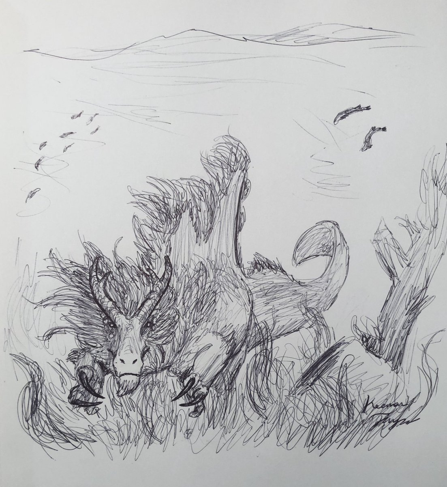
The visual system of the kurajaku is highly specialized for a semiaquatic predatory existence in which prey detection, distance estimation, and threat assessment must be performed across shifting optical environments. Unlike a strictly terrestrial theropod, the kurajaku must operate with equal competence above and below the water surface, often in habitats characterized by turbidity, glare, suspended sediment, broken reed cover, and highly variable light conditions. Its ocular system therefore represents a compromise between panoramic surveillance and the stereoscopic precision required for close-range prey capture. Vision is not the sole sensory modality employed by the species, but it is among the most important, particularly in final target acquisition, strike timing, and social display interpretation.
In the adult condition, the eyes are set high on the skull and moderately lateral, permitting a wide sweep of the surroundings while preserving a substantial forward binocular corridor. This arrangement is well suited to an animal that frequently hunts with most of the body submerged, exposing only the cranial apex, or that approaches prey from beneath the surface before rising to strike. The placement of the eyes reflects the kurajaku's dual reliance on observation and concealment. When resting or stalking in shallow water, the elevated orbits allow the animal to maintain visual contact with prey and conspecifics while minimizing exposure above the waterline. This reduces the visual profile of the predator and permits surveillance of the surrounding environment without requiring full cranial emergence.
The eyes are large relative to the depth of the skull, and the orbital rims are reinforced, indicating substantial mechanical protection. This is an important feature in an animal that engages in violent prey-handling behavior and must resist both impact and pressure changes while moving through water or bracing against struggling prey. The globe itself appears adapted to efficient performance under variable illumination, with a pupil that can widen substantially in dim light and constrict effectively in bright conditions. Such plasticity is advantageous in wetlands, estuaries, and shallow marine margins, where surface glare and cloud cover may alternate rapidly.
Each eye individually provides a wide monocular field, estimated at approximately 155 to 165 degrees. This is broader than that of many more forward-eyed theropods and reflects the need to monitor extensive lateral space while submerged. When both eyes are considered together, excluding binocular overlap, total monocular coverage approaches approximately 305 to 320˚. In practical terms, this leaves only a relatively restricted blind region behind the animal and slightly below the posterior trunk. The kurajaku therefore retains near-panoramic awareness of its environment without sacrificing the ability to judge distance directly ahead. This broad field is especially important in open wetland systems, where threats and prey may approach from multiple directions and where the predator itself may be partially concealed by water, emergent vegetation, or surface distortion.
Binocular vision remains substantial. The direct overlap of the two visual fields is estimated at approximately 45 to 60˚, concentrated in the anterior sector. This overlap is broad enough to support accurate stereoscopic depth perception during the final stages of attack, yet not so great as to eliminate meaningful lateral awareness. The binocular corridor aligns with the strike envelope of the jaws and forelimbs, permitting the predator to place its fangs, foreclaws, and cranial mass with high precision. This is critical because kurajaku hunting often involves very large prey that must be gripped, repositioned, and restrained rather than dispatched by a single strike. The animal must judge not only the location of the target but also the movement of water, the orientation of the prey body, and the relative position of the prey's defensive structures. The breadth of binocular overlap therefore represents a direct adaptation to grappling predation under conditions of high resistance and low margin for error.
The vertical field of view is likewise extensive. Each eye likely covers about 130 to 140˚ vertically, with the upper sector especially important for detecting aerial movement, surface ripples, and the silhouettes of birds, pterosaurs, or shoreline mammals. The lower field is equally important when the animal is submerged or bottom-running, since prey may be detected beneath the water column or at the substrate interface. This broad vertical range allows the kurajaku to monitor several ecological layers simultaneously. A bull can remain partly submerged while tracking surface breathing events above, aquatic movement below, and the movements of rival animals or scavengers at the margins. Such versatility is unusual among theropods and reflects the complexity of a habitat where prey may shift rapidly between air and water.
Visual acuity appears high, though it is tuned primarily toward movement detection and medium- to long-range discrimination rather than fine detail at extreme distance. In clear air over open wetlands or shallow marine flats, a large object such as a leviathan, large ungulate, or rival kurajaku can likely be detected at 6 to 10 kilometers under favorable light and atmospheric conditions. Recognition of general size, direction of movement, and surface disturbance is possible well before precise individual identification. In more turbid or vegetation-cluttered habitats, effective detection distances decrease sharply, often to a few hundred meters, but motion remains highly conspicuous. Underwater, visibility is naturally more limited and depends heavily on clarity, depth, and sediment load. In clear shallow water, large moving prey may be observed at 100 to 300 meters, while in murky or heavily vegetated water the range may shrink to a few tens of meters. The kurajaku compensates for this by combining visual surveillance with olfactory cues and by exploiting the predictable surface behavior of air-breathing prey. The visual system is especially effective in detecting changes in motion, contrast, and silhouette. This is consistent with the ecological demands of hunting in wetlands where prey may partially conceal themselves in reeds, drowned timber, or shallow channels. Large prey animals, even when stationary, often betray themselves through subtle ripples, splashes, reflected light, or body contour against a contrasting background. Kurajaku appear exceptionally sensitive to such irregularities. This sensitivity is particularly useful when tracking surfacing mammals such as leviathans or when locating fish schools during seasonal runs. A school of fish may be visually detected as a shifting patch of reflective movement, while a surfacing mammal may reveal itself through repeated disturbances in the water column and the sudden exposure of head or back above the surface.
The retina is likely rich in both rods and cones, permitting function across a broad range of illumination. The species is active in bright daylight, but it also remains effective during twilight and in shaded wetland interiors. The large pupils of the eye permit substantial light intake under low illumination, while cone-rich regions support color discrimination and social signaling. Color vision is probably important in recognizing conspecific displays, assessing integumentary condition, and distinguishing prey against varied environmental backgrounds. Mature bulls exhibit complex coloration and ornamentation that would be difficult to evaluate without robust chromatic vision. The eyes are therefore not simply predatory organs but also important mediators of social interaction and reproductive assessment.
The refractive challenges posed by an amphibious lifestyle have also shaped ocular function. In water, the corneal contribution to focusing is reduced, and the lens must do more of the optical work. Kurajaku evidently possess a highly accommodating lens system that can shift rapidly between air and water use. This is essential for a species that frequently transitions between the two media while hunting or traveling. A predator approaching prey from a submerged position must be able to focus through a water interface, then rapidly refocus when the head breaches the surface or when it begins targeting prey on land. The eye therefore functions as a flexible optical instrument rather than a fixed terrestrial camera.
A further adaptation of major importance is the nictitating membrane. In the kurajaku, this membrane is well developed, translucent to semi-translucent, and evidently capable of sweeping across the corneal surface to protect the eye during submerged movement, prey grappling, and rapid head motions through dense vegetation or muddy water. Its presence is a critical component of the species' semiaquatic lifestyle. When the animal submerges its head, the nictitating membrane functions as a protective barrier against silt, debris, detritus, and mechanical injury from prey strikes or shoreline abrasion. It also stabilizes the optical surface when the eye is exposed to alternating air and water, reducing the risk of corneal drying, contamination, or acute particulate damage. In prey capture, the membrane likely provides temporary protection during the most violent portion of the struggle, when the jaws are clamped and the head is forced laterally or downward against resisting bodies. Because the kurajaku must often maintain visual contact with prey even while the eye is exposed to splash, foam, and suspended material, a transparent third eyelid is functionally indispensable. Its use would have been particularly important in the ancestral semiaquatic habitats from which the lineage radiated, and it remains one of the most decisive anatomical features allowing safe visual operation in the modern ecological setting.
The sclerotic ring is strong and likely contributes to maintaining globe shape during abrupt movements, impacts, and changes in pressure. This reinforcement is particularly important when the animal lunges at prey, twists during grappling, or runs along the bottom with forceful propulsion. Such motions generate significant inertial and hydrodynamic stress, and a mechanically protected eye would be essential to preserve optical stability. The orbit itself, being set high and laterally, likely also shields the eye from direct impact when the animal drives its head into dense vegetation or into the bodies of struggling prey.
Ontogenetically, the visual system changes in emphasis. Juveniles possess proportionally larger eyes relative to skull size and likely broader practical vigilance, reflecting their vulnerability and reliance on smaller prey and scavenging. Their visual system supports rapid environmental assessment, predator avoidance, and the detection of subtle movement in vegetated shallows. As individuals mature, skull proportions broaden and orbital placement becomes integrated into a more powerful cranial architecture. Adult kurajaku retain the juvenile need for vigilance, but the emphasis shifts toward depth perception and long-range detection of large prey. This progression is consistent with the species' transition from dependent juvenile to highly mobile, wide-ranging adult predator.
The visual capabilities of the largest bulls are especially notable. A wandering mature male traveling through the Seridic wetlands, Kairul's coastal marshes, or the Trakaiam Sea must repeatedly orient across great expanses of water, locate prey from afar, identify females, and avoid unnecessary conflict with other large individuals. The visual system is therefore not only a hunting instrument but also a navigational and social one. It supports the life of a vagabond predator that may spend decades traversing multiple ecological zones, often in habitats where water surface, light conditions, and structural cover are constantly changing.
Auditory System
The auditory system of the kurajaku is specialized for a life conducted at the boundary between air and water, where sound behaves differently depending upon medium, substrate, and topography. In broad functional terms, hearing serves as an early-warning system, a mechanism for long-range social signaling, and an important adjunct to visual and olfactory assessment in habitats where visibility is frequently compromised by glare, turbidity, emergent vegetation, and atmospheric haze. Because the species is both enormous and semi-aquatic, its auditory demands are unusually complex. It must detect prey movement on shorelines and islands, interpret conspecific vocalizations across flooded basins and channels, remain aware of the approach of rival bulls, and monitor the low-frequency disturbances that often precede the movement of large animals through shallow water. The resulting system is not a narrow specialist adapted to a single acoustic niche, but a broad and resilient auditory apparatus capable of functioning across aerial, submerged, and substrate-borne conditions.
Externally, the auditory openings are placed posterolaterally relative to the orbits and are slightly recessed within the temporal region of the skull. This placement protects the canal from direct impact during grappling, submersion, and movement through reeds or shoreline debris while preserving effective acoustic access from the sides and rear quadrants. The ear openings are not bordered by a prominent feather disc of the type seen in some other large megaraptorans. Instead, they are framed by shorter, denser integument and fine contour feathering that forms a low stabilizing margin around the canal entrance. This configuration reduces drag and shedding loss during immersion while still providing modest shielding against particulate intrusion. The absence of an exaggerated auricular feather disc is significant. In a predator that frequently submerges the head, any large projecting rim would increase drag, trap detritus, and compromise the clean flow of water and air around the lateral skull. The kurajaku therefore exhibits a more subdued external auditory morphology, one that favors hydrodynamic efficiency and mechanical durability over exaggerated external sound-gathering structures.
The internal ear is correspondingly robust. The tympanic region is reinforced by dense cranial bone and thickened surrounding tissues, which help preserve structural integrity during rapid head movements, underwater strikes, and violent prey thrashing. The tympanic membrane is likely large and responsive, but it is not exposed in a delicate, protruding way. Rather, it is set deep enough within the cranial recess to resist abrasion and sudden pressure changes. In aquatic contexts, this is particularly important because the ear must tolerate repeated transitions between air and water, as well as intermittent immersion in turbid, sediment-laden channels. Water pressure, especially when combined with abrupt head turns or a closing jaw bite, can impose substantial mechanical stress on the cranial temporal region. The kurajaku auditory apparatus is therefore built as a sealed, protected system rather than as an open, highly projecting one.
Hearing in the kurajaku is strongly biased toward low and mid frequencies. The estimated functional range extends from approximately 20 — 25 hertz at the low end to about 16,000 — 18,000 hertz at the upper limit, with peak sensitivity concentrated between roughly 60 and 4,000 hertz. This is a broad range, but not a generalized one in the sense of small terrestrial mammals or birds. The system is tuned to the frequencies most relevant to the animal's ecological needs. Low frequencies are especially important because they travel efficiently through water, through muddy substrates, and across the open expanses of marshes and flooded channels. Deep vocalizations by large bulls, splashing prey, the pounding locomotion of large herbivores, and the distant displacement waves generated by moving bodies all produce acoustically rich low-frequency signatures. Mid frequencies, by contrast, are particularly useful for close-range territorial and reproductive communication, because they carry detail more effectively through variable atmospheric conditions and permit discrimination between calls, challenge notes, and warning barks.
The auditory range of the kurajaku is not merely a matter of frequency limits, but of medium-specific sensitivity. In open air, particularly in humid wetlands and along calm shorelines, loud low-frequency vocalizations can likely be detected at distances of approximately 3 to 6 kilometers, and in exceptionally favorable conditions even farther when the source is elevated or when wind and terrain align favorably. The calls of large bulls are especially far-reaching, not only because of their sheer volume but because the lower frequencies produced by large bodies propagate with relatively low attenuation across water-saturated landscapes.
Underwater, detection distances are often greater for the same type of low-frequency signal, though the precise range depends strongly on depth, turbidity, bottom composition, and the presence or absence of vegetation. In shallow coastal waters or broad channels, large calls may be detectable at 5 to 10 kilometers under optimal conditions. In cluttered marshes, the effective range is shorter, but the animal still gains a substantial long-distance acoustic advantage over purely terrestrial predators. By contrast, fine-resolution hearing for quiet rustling, close vocal exchanges, or small prey movements is necessarily more local, generally on the order of tens to a few hundred meters depending on ambient noise.
The kurajaku's acoustic ecology is closely tied to its own vocal behavior. The species emits a rich set of booms, croaks, hisses, and resonant calls that carry effectively over water and through vegetation. These calls are especially prominent during reproductive periods, when males advertise presence, size, and stamina across large territories. In such contexts, the voice is not merely communicative but competitive. A bull's call can signal health, dominance, body condition, and readiness to engage. Females respond to these calls, and rival males use them to assess proximity and willingness to escalate. The species' auditory sensitivity therefore supports both detection and display. A male that can broadcast a signal effectively across channels and at the same time localize the calls of others has a substantial reproductive advantage. The same applies to cows, which must remain alert to distant vocalizations that may indicate the approach of a bull, a rival female, or an intruding predator.
Directional hearing is achieved through the combination of interaural time and intensity differences, aided by the breadth of the skull and the lateral placement of the ears. Because the head is broad and heavily built, the two ears are separated by a considerable distance, allowing useful localization of low-frequency sound. The system is most effective for determining general bearing rather than pinpointing a tiny source. This is entirely appropriate for an animal that must locate large moving bodies, not pinpoint small rustling insects. In a flooded environment, the directionality of sound is often distorted by reflected waves and by the acoustics of shallow water, yet the kurajaku's broad skull and recessed ear openings preserve enough spatial resolution to distinguish the side, approximate range, and probable elevation of a source. This ability is essential when detecting prey surfacing to breathe, when evaluating a rival's challenge from across a channel, or when orienting toward the movement of a distant herd.
The auditory system is also strongly supported by bone conduction and substrate vibration. When a kurajaku stands in shallow water or on muddy ground, low-frequency tremors are transmitted through the feet, pelvic girdle, and trunk to the inner ear. This is particularly useful in wetlands where direct line-of-sound may be masked by reeds, wind, rainfall, or water noise.
Large prey animals moving through swamp margins or along compacted shoreline substrate generate low amplitude vibrations that can be detected even when their vocal output is limited. This is especially important for tracking large semi-aquatic mammals, nesting rivals, or prey that are partially submerged and therefore acoustically difficult to identify at a distance. The body mass of the kurajaku enhances this effect because heavy animals are efficient receivers of low-frequency ground-borne vibration. The animal is effectively listening not only with the ears but with the entire skeleton.
The inner ear also likely reflects an important balance between auditory and vestibular requirements. Because the animal undergoes rapid head turns, underwater lunges, and sudden changes in posture during prey grappling, the semicircular canals must provide reliable spatial orientation. Their size and curvature are likely substantial, though not exaggerated in a way that would compromise balance under the high mechanical loads generated by the skull and neck. Accurate vestibular input is necessary because hearing alone is insufficient when the animal is submerged in a visually and acoustically unstable medium. The integration of audition and balance therefore supports coordinated turning, braking, and prey acquisition in an environment where a momentary loss of orientation could result in a failed attack or collision with the substrate.
Ontogenetically, the auditory system shifts in emphasis. Chicks likely possess relatively acute responsiveness to high-pitched close-range cues, particularly maternal calls and the acoustic signatures of feeding. Their vulnerability makes rapid detection of disturbance critical. Juveniles, which spend much of their time near the mother and within natal territory, rely heavily on the ability to recognize maternal vocalizations at a distance, even through reed beds and shallow water. As the animal matures, its hearing becomes increasingly oriented toward low-frequency long-range cues associated with conspecifics, prey movement, and territorial contests. Adult bulls, especially the largest nomadic individuals, are thus effectively long-distance acoustic broadcasters and receivers whose lives are structured around the interpretation of resonant signals. Their calls announce presence across wetlands and their hearing allows them to map the locations of rivals, potential mates, and prey with sufficient precision to guide movement through complex landscapes.
Olfactory System
Among the sensory systems of the kurajaku, olfaction is arguably the most influential in governing large-scale movement, navigation, territorial assessment, reproductive behavior, and prey acquisition. Whereas vision provides precise spatial information and hearing supplies awareness of events occurring beyond visual range, smell functions as the species' primary landscape-scale sensory network. A mature kurajaku does not merely perceive the immediate environment. Through olfactory sampling it interprets the chemical history of entire wetlands, coastlines, estuaries, river systems, and shallow marine habitats. Every body of water, shoreline, migration route, nesting area, and feeding ground contains a constantly changing mosaic of biological compounds. The olfactory apparatus of the kurajaku is specialized to extract information from this chemical environment with extraordinary efficiency.
The importance of smell is reflected in cranial anatomy. The rostrum houses an immense nasal cavity that occupies a substantial proportion of the skull's anterior volume. Unlike many aquatic vertebrates that experience a reduction in olfactory capability following adaptation to marine environments, the kurajaku has retained and expanded its terrestrial chemosensory heritage while simultaneously evolving mechanisms that allow effective operation within coastal and semi-aquatic ecosystems. The nasal passages are long, complex, and extensively folded. Internally, elaborate conchal structures create a vast surface area lined with olfactory epithelium. These scroll-like bony and cartilaginous folds dramatically increase receptor density while simultaneously regulating airflow through the nasal chamber. Air entering the nostrils does not move directly toward the respiratory tract. Instead, a series of internal ridges and chambers induce controlled turbulence, increasing contact time between odor-bearing molecules and sensory receptors. This architecture maximizes extraction of chemical information even when odor concentrations are extremely low. Such a design is particularly advantageous in aquatic-edge environments, where airborne odor plumes are frequently fragmented by humidity gradients, shoreline winds, vegetation barriers, and temperature inversions. Rather than relying on concentrated scent trails, the kurajaku is capable of reconstructing environmental conditions from minute and dispersed chemical signals.
The olfactory bulbs are enormous relative to total brain volume. Comparative neuroanatomical reconstructions suggest that the proportion of neural tissue devoted to odor processing exceeds that observed in most other megaraptorans and rivals that of the most scent-oriented terrestrial predators known within Kaimere. The forebrain devotes substantial computational capacity to odor discrimination, plume tracking, memory association, and chemical pattern recognition. Odors are not interpreted merely as isolated stimuli but as complex environmental datasets. A single scent plume may simultaneously provide information regarding prey species, approximate abundance, direction of movement, physiological condition, reproductive status, age of passage, and environmental context.
Two overlapping chemosensory systems appear to operate within the kurajaku nasal complex. The primary olfactory system is specialized for detection of biologically relevant volatile compounds, including blood-derived molecules, decomposition products, metabolic waste compounds, reproductive pheromones, skin lipids, microbial byproducts, and respiratory emissions. This system governs long-range detection and environmental assessment. Complementing it is a highly developed trigeminal-associated chemosensory pathway. This secondary system is particularly responsive to irritants, smoke, sulfur-containing compounds, advanced decomposition gases, algal toxins, microbial blooms, and chemically reactive environmental substances. Rather than identifying specific organisms, this pathway functions as a hazard detection network. It provides rapid assessment of environmental quality and biological risk. The distinction between a freshly killed whale carcass and one entering dangerous stages of bacterial decomposition, for example, depends heavily upon trigeminal interpretation.
The nostrils themselves are positioned unusually high upon the snout relative to most terrestrial megaraptorans. This placement allows efficient respiration and scent sampling while the majority of the head remains submerged. Individuals frequently expose only the dorsal portion of the skull above the waterline during surveillance. In this posture the nostrils occupy one of the highest points on the head, permitting continuous acquisition of airborne chemical information without requiring full emergence. This arrangement represents a significant adaptation for ambush predators inhabiting wetlands, estuaries, mangrove systems, and shallow marine environments.
Olfactory performance varies substantially depending upon habitat and atmospheric conditions. Under ideal circumstances, fresh blood originating from large prey can be detected at distances of approximately 8 — 12 kilometers downwind. Particularly large kill sites, whale strandings, or active feeding events involving marine mammals may generate scent plumes detectable beyond 15 kilometers. In coastal environments where stable sea breezes carry odor molecules across open water, detection distances may become even greater. Wandering bulls traversing shallow seas frequently locate feeding opportunities primarily through scent long before visual confirmation becomes possible.
The odor of decomposition exhibits even greater range. Large carcasses entering early decomposition stages produce complex mixtures of sulfur compounds, ketones, aldehydes, and microbial metabolites that travel efficiently through humid air masses. Such scent signatures may be detected at distances of 15 — 25 kilometers under favorable conditions. Mature bulls routinely investigate these signals, particularly during periods of energetic recovery following breeding migrations. The ability to locate carrion at such distances significantly expands the effective foraging radius of transient individuals.
Detection of living prey operates differently. Rather than identifying specific animals at extreme range, the kurajaku perceives broad chemical gradients generated by groups of organisms. Herds of large mammals, breeding colonies, aggregations of marine vertebrates, or concentrations of nesting animals generate distinctive odor fields. These chemical landscapes may be recognized from 5 — 10 kilometers away depending upon wind direction, humidity, and prey abundance. Once within several kilometers, finer-scale information becomes available. Individual species can often be distinguished, and general assessments of population density become possible.
At intermediate ranges of approximately 500 meters to 3 kilometers, olfaction transitions from landscape interpretation to directional tracking. The animal repeatedly samples the air while slowly altering head orientation. Differential odor concentrations between the two nostrils permit gradual refinement of bearing. Unlike canids or other terrestrial scent-trackers that frequently follow continuous ground-level odor trails, the kurajaku interprets large-scale odor plumes. It moves through gradients rather than along tracks.
Within approximately 200 meters, olfaction becomes increasingly diagnostic. At this distance the predator can identify subtle physiological cues associated with individual prey. Blood chemistry, infection, parasite burden, reproductive status, recent injury, metabolic stress, and nutritional condition all alter an animal's chemical profile. These differences are detectable to a mature kurajaku. Consequently, prey selection is often highly selective. Individuals displaying signs of illness, exhaustion, injury, or reproductive stress are disproportionately targeted because their chemical signatures reveal vulnerability before visual confirmation is complete.
Marine prey generate especially distinctive odor profiles. Whales, seals, giant sirenians, desmostylians, marine crocodilians, and large fish each possess characteristic combinations of skin oils, microbial communities, respiratory compounds, and metabolic byproducts. Experienced adults learn to associate these odors with specific prey types.
Long-distance wandering bulls that spend years feeding in marine habitats develop particularly refined discrimination abilities. Chemical cues alone may indicate whether a scent source originates from a healthy adult whale, an injured juvenile, a breeding aggregation, or a recently deceased carcass.
Social communication represents another major function of the olfactory system. Kurajaku habitats are saturated with scent information deposited through feces, urine, glandular secretions, shed integument, feathers, mucus residues, and simple physical contact with vegetation and substrate. These deposits function as chemical records of occupancy and movement. Large adults routinely sample such signals while traveling through wetlands, river systems, and coastal territories. The scent signature of another kurajaku can often be detected at distances exceeding 3 — 5 kilometers under favorable conditions. Within several hundred meters, detailed information becomes available. Sex, approximate age, reproductive status, health condition, and recency of passage can all be inferred through repeated sampling. Mature females nearing reproductive receptivity produce particularly distinctive chemical profiles that can attract transient bulls from remarkable distances. This capability is critical given the species' reproductive ecology, in which females generally remain within established territories while males undertake extensive migrations between breeding areas.
For enormous wandering bulls such as Baal Dasheroq and others of similar ecological role, olfaction becomes an indispensable navigational tool. These individuals may travel thousands of kilometers over the course of a lifetime, moving between distant breeding grounds, feeding areas, and migratory corridors. Chemical familiarity with major waterways, coastlines, and seasonal habitats appears to play an important role in route selection. Long-term scent memory likely allows individuals to recognize previously visited regions years or even decades after earlier occupation.
Ontogenetically, olfactory development begins extremely early. Hatchlings possess functional scent discrimination abilities that facilitate recognition of their mother and nest environment. During juvenile stages, olfaction assists in identifying food items, family members, territorial boundaries, and potential threats. As individuals mature, the olfactory bulbs expand disproportionately relative to overall brain growth, reflecting increasing reliance upon chemical information. Adult sensory performance represents the culmination of decades of neural refinement and experiential learning.
Cerebral Adaptations
Among the many specializations that distinguish the kurajaku from other large Apeirovenatoridae, few are as significant as the extensive neurological modifications associated with its cerebrum. The kurajaku occupies one of the most cognitively demanding predatory niches found anywhere within the Known World. Unlike terrestrial macropredators that primarily navigate two-dimensional landscapes, it operates within a fluid, constantly changing three-dimensional environment where visibility, current strength, water depth, salinity, prey density, and hydrological conditions may fluctuate on hourly timescales. Success under such circumstances depends not merely upon sensory acuity or physical power but upon the ability to integrate enormous volumes of environmental information into coherent behavioral decisions. Consequently, the cerebral hemispheres of the kurajaku are proportionally enlarged and exhibit a degree of sensory integration, behavioral flexibility, and spatial processing that exceeds that of most other known megaraptoran lineages.
The forebrain dominates a substantial portion of the endocranial cavity. Reconstruction of cranial volume indicates pronounced expansion of the dorsal ventricular ridge and associated pallial structures responsible for multisensory integration, long-term memory formation, motor planning, and behavioral regulation. As in other advanced apeirovenatorids, the kurajaku does not exhibit intelligence analogous to that of primates, corvids, or cetaceans. Rather, its neural architecture is optimized for a different form of cognition: the rapid construction and continuous updating of environmental models that permit efficient navigation and predation within highly variable aquatic ecosystems.
At the foundation of this cognitive system lies an extraordinary capacity for sensory integration. Visual, auditory, olfactory, tactile, vestibular, and proprioceptive information converge within expanded associative centers that synthesize these inputs into unified representations of the surrounding environment. A hunting kurajaku does not process a scent plume, a distant splash, a visual disturbance, and a change in current direction as separate phenomena. Instead, these stimuli become components of a single predictive model regarding prey location, movement, size, and vulnerability.
This capacity is particularly important in aquatic habitats, where direct observation is often impossible. Water turbidity, submerged vegetation, wave action, suspended sediment, and low-light conditions frequently obscure visual information. Under such circumstances, the cerebrum compensates by assigning greater significance to alternative sensory streams. A partially hidden prey animal may be identified not through sight alone but through the combined interpretation of chemical traces, pressure disturbances, sound propagation patterns, and subtle visual cues. The resulting perceptual picture is often remarkably accurate despite the absence of complete sensory information.
Spatial cognition is among the most highly developed cerebral functions in the species. Adult kurajaku routinely traverse territories encompassing thousands of square kilometers. Large males may migrate between distant river systems, estuaries, coastal wetlands, and breeding grounds separated by extraordinary distances. Such movement requires sophisticated navigational capabilities far beyond simple instinctive orientation. The cerebrum maintains extensive cognitive maps of waterways, coastlines, channels, river mouths, tidal flats, nesting sites, migration corridors, and seasonal feeding grounds.
These maps appear to be multidimensional in nature. Individuals not only remember geographic locations but also associate them with ecological context. A particular estuary may be remembered as productive during certain months, dangerous during others, or favorable only under specific tidal conditions. Locations where prey concentrations were previously encountered are retained in memory for years. Regions associated with injury, territorial disputes, or unsuccessful hunting attempts may similarly influence future decision-making. Evidence from observed movement patterns suggests that mature individuals possess exceptional long-term memory. Adults frequently revisit specific feeding areas after absences lasting many years. The precision with which these returns occur implies durable storage of geographical information and the ability to recognize familiar environmental features across long temporal intervals.
Learning capacity is equally advanced. Juveniles emerge into an ecological niche of enormous complexity. Unlike many large predators that rely heavily upon instinctive behavioral programs, young kurajaku must acquire extensive knowledge through experience. Hunting techniques vary considerably between habitats. Methods effective within shallow reed marshes differ from those employed in mangrove forests, estuaries, river deltas, or coastal marine environments. Consequently, much of juvenile development involves prolonged experimentation. Young animals engage in repeated trial-and-error interactions with prey, terrain, and water conditions. Early hunting attempts are often inefficient and frequently unsuccessful. Over time, however, individuals accumulate a vast repository of experiential knowledge. The cerebrum continuously refines behavioral algorithms based upon previous outcomes, producing increasingly effective predatory strategies.
Particularly noteworthy is the species' capacity for regional behavioral specialization. Populations occupying different habitats often employ distinct hunting techniques despite belonging to the same species. Some become specialists in ambushing large shoreline mammals. Others focus heavily on aquatic prey. Certain populations regularly exploit tidal dynamics, while others concentrate upon riverine bottlenecks. These differences appear to arise largely through learning rather than genetic divergence. Juveniles acquire local traditions through prolonged observation of older individuals and repeated participation in regional ecological conditions.
Behavioral flexibility is one of the defining characteristics of kurajaku cognition. The species rarely relies upon rigid motor programs. Instead, individuals continuously modify behavior according to changing circumstances. Water depth, current velocity, prey size, prey species, visibility, substrate composition, and competition levels all influence hunting decisions. For example, the strategy employed against a large marine mammal differs fundamentally from that used against a school of fish or a shoreline herbivore. The cerebrum rapidly evaluates environmental variables and selects among numerous possible behavioral responses. If an approach proves ineffective, individuals frequently abandon it and adopt alternative tactics rather than persisting with a failing strategy. This capacity for adaptive problem-solving becomes especially evident during encounters with large and potentially dangerous prey. Adult kurajaku often engage targets capable of inflicting severe injury. Under such circumstances, impulsive behavior carries significant risk. Neural circuits associated with behavioral inhibition and risk assessment appear particularly well developed.
Mature individuals demonstrate remarkable patience, often delaying attack until environmental conditions become favorable. This inhibitory control represents a major ontogenetic development. Juveniles frequently display impulsive behavior characterized by premature lunges, poorly timed attacks, and excessive risk-taking. As the cerebrum matures, these tendencies diminish. Adults become increasingly selective regarding when and how they commit to predatory action. The transition from impulsive opportunism to calculated decision-making constitutes one of the most important neurological transformations occurring during development.
Social cognition is similarly sophisticated. Although kurajaku are not cooperative pack hunters, they maintain complex social relationships throughout life. Individuals recognize conspecifics through combinations of visual, auditory, and chemical cues. These recognitions may persist for years or even decades. The cerebrum appears capable of maintaining detailed social memories involving individual identity, prior interactions, dominance status, reproductive condition, and territorial history. Such memory reduces the frequency of unnecessary conflicts. Encounters between adults are rarely random confrontations. Instead, behavioral responses are strongly influenced by previous experiences with the same individual.
Maternal behavior places especially significant demands upon cognitive processing. Juvenile dependency is prolonged, requiring mothers to coordinate protection, teaching, and resource acquisition over many years. Effective parental care depends upon individual recognition, behavioral prediction, and flexible responses to changing developmental needs. Expanded cerebral regions associated with social behavior likely play a critical role in facilitating these complex interactions.
Cerebral lateralization appears strongly developed. Many individuals exhibit consistent side preferences during prey capture, environmental exploration, and social interactions. Such asymmetries suggest hemispheric specialization analogous to that observed in numerous modern vertebrates. One hemisphere appears to emphasize rapid sensory assessment and threat detection, while the other contributes more heavily to motor planning and behavioral sequencing. This division of cognitive labor increases processing efficiency during complex tasks. Hunting within dynamic aquatic environments often requires simultaneous monitoring of multiple sensory inputs while executing precisely coordinated movements. Hemispheric specialization permits parallel processing of these demands.
The cerebrum also exhibits extensive integration with vestibular and proprioceptive systems. Aquatic locomotion presents unique neurological challenges. Unlike terrestrial environments, movement through water involves continuous three-dimensional adjustments influenced by buoyancy, drag, turbulence, and current flow. Maintaining precise control of body orientation under such conditions requires constant recalculation of position and momentum. Expanded associative regions allow seamless coordination between sensory feedback and motor output. As a result, even enormous adults are capable of surprisingly precise maneuvering in complex aquatic habitats. Minute adjustments of tail position, limb orientation, neck posture, and body angle occur continuously, often without conscious deliberation.
Ontogenetically, cerebral development continues for an exceptionally long period. Neural maturation parallels the species' prolonged physical growth. Synaptic density, interregional connectivity, and myelination increase steadily throughout adolescence. Learning accumulated during early life becomes integrated into increasingly sophisticated cognitive frameworks as the brain matures. Older adults often display behavioral capabilities that appear qualitatively different from those of younger individuals. They exhibit greater patience, superior environmental awareness, enhanced navigational accuracy, and more refined prey-selection strategies. Much of this improvement likely reflects the interaction between neural maturation and accumulated experience rather than either factor alone.
Cognitive variability exists throughout the species. Some individuals consistently demonstrate superior memory retention, faster learning rates, and greater behavioral flexibility. Such animals frequently become dominant territory holders or exceptionally successful long-distance wanderers. Over decades, these advantages compound, producing substantial differences in ecological success among otherwise similar individuals.
Axis Section
The axial skeleton of the kurajaku represents one of the most extensively modified vertebral systems known among Apeirovenatoridae. Whereas most members of the clade retain an axial column optimized primarily for terrestrial locomotion, rapid acceleration, and dynamic balance, the kurajaku exhibits a fundamentally different architectural philosophy. Its vertebral column functions simultaneously as a load-bearing framework, a hydrodynamic stabilizer, a buoyancy-management structure, and a transmission system for the enormous forces generated during aquatic predation. The result is an axial complex that combines the rigidity of a terrestrial grappling predator with the hydrostatic efficiency of a large semi-aquatic pursuit specialist.
The overall body profile is remarkably fusiform. The trunk forms a broad, tapered cylinder that transitions smoothly into the cervical region anteriorly and the massive caudal propulsion complex posteriorly. Such streamlining reduces turbulence and pressure drag during sustained swimming while preserving sufficient thoracic volume to house extensive musculature and enlarged visceral organs.
Unlike the highly pneumatic trunks characteristic of many giant theropods, the axial skeleton of the kurajaku exhibits a marked reduction in skeletal lightening. Pneumatic diverticula remain present but are substantially diminished relative to those of terrestrial relatives. Much of the trunk skeleton is instead composed of dense cortical bone and heavily reinforced trabecular architecture. This reduction in pneumaticity is closely associated with hydrostatic demands. Excessive skeletal air volume would increase buoyancy and hinder submerged locomotion. By decreasing the proportion of air-filled skeletal spaces, the species achieves greater overall body density, allowing it to descend rapidly, maintain position within the water column, and travel along submerged substrates without excessive energetic expenditure. The trunk therefore contributes directly to hydrostatic control rather than serving solely as a mechanical support structure.
The dorsal vertebral series is comparatively short relative to total body length but exceptionally robust. Individual vertebrae possess broad centra, enlarged articular surfaces, and strongly interlocking zygapophyses. These features substantially restrict excessive lateral and rotational movement. Unlike the flexible trunks of many aquatic reptiles, which generate propulsion through large-amplitude body undulations, the kurajaku relies primarily upon its caudal region for thrust generation. Consequently, excessive trunk mobility would be detrimental rather than advantageous. The vertebral articulations create a semi-rigid axial beam extending from the cervicothoracic junction to the sacrum. During locomotion, this beam minimizes energy loss caused by unnecessary spinal deformation. Hydrodynamic forces generated by swimming are transmitted efficiently along the body axis without dissipating through excessive vertebral flexion. The trunk therefore behaves less like a flexible swimming organ and more like a stabilized platform from which the tail generates propulsion.
Neural spines throughout the dorsal series are enlarged, but their most extraordinary modification occurs within two distinct regions of vertebral elongation that produce the species' characteristic dorsal sails. These structures arise from dramatic expansion of specific neural spine complexes rather than continuous elongation across the entire dorsal column.
The anterior sail occupies approximately dorsal vertebrae five through eleven. This structure forms the tallest region of the body and reaches its greatest development in mature males. Neural spines within this region may exceed several times the height of their associated centra and are heavily reinforced internally by dense networks of bony trabeculae.
Contrary to interpretations emphasizing purely display-related functions, biomechanical evidence strongly suggests substantial hydrodynamic significance. When moving through water, the anterior sail functions as a vertical stabilizing surface analogous to the dorsal keel of a marine vertebrate. By increasing lateral resistance above the center of mass, it reduces rolling tendencies generated by uneven currents, sudden turns, or asymmetrical limb movements. The sail effectively acts as a passive stabilizer, improving directional control while minimizing energetic costs associated with active postural correction.
A second sail arises approximately between dorsal vertebrae thirteen and eighteen. Although generally lower than the anterior structure, it is often broader and exhibits considerable surface area. Together, the two sails create a segmented stabilization system rather than a single continuous fin.
This arrangement appears particularly advantageous from a hydrodynamic perspective. A continuous sail extending along the entire trunk would generate substantial drag during turning maneuvers and could increase turbulence around the body's midsection. By separating the sails into discrete structures, the animal preserves stabilizing benefits while reducing hydrodynamic penalties. Water flow remains relatively streamlined through the intervening low-spined region, preventing excessive vortex formation.
An additional reduced caudal sail is also present. The tripe-keel arrangement also contributes to yaw control. During rapid directional changes, hydrodynamic forces acting upon the three sails help resist unwanted rotational movement. This stabilization is especially important during underwater prey pursuits, when sudden course adjustments must occur without compromising balance or momentum.
The epaxial musculature associated with these sails is immense. Neural spine elongation dramatically increases available attachment area for the major dorsal muscle groups. These muscles function primarily as stabilizers rather than generators of extensive vertebral movement.
During swimming, powerful epaxial contractions maintain trunk rigidity against hydrodynamic forces generated by the tail. During terrestrial locomotion, they support the immense weight of the body while preventing excessive spinal oscillation. During prey capture, they become critical force-transmission structures linking skull, neck, trunk, and tail into a single integrated mechanical system.
Particularly during encounters with large aquatic prey, the trunk functions as a reinforced transmission column. When the jaws secure a struggling target, forces generated by the prey propagate throughout the body. Rather than allowing these loads to concentrate at individual joints, the rigid axial skeleton distributes stress across the entire torso. This distribution dramatically reduces the risk of vertebral injury while enhancing mechanical efficiency.
The ribcage is among the broadest known within the family. Ribs sweep ventrolaterally to produce a deep, barrel-shaped thorax characterized by exceptional internal volume. Unlike the relatively compressed thoracic cavities of many cursorial theropods, the kurajaku possesses a trunk optimized for volumetric capacity rather than weight reduction.
This enlarged thoracic region houses extensive axial musculature, massive respiratory structures, and substantial hydrostatic reserves. Internal soft tissues contribute significantly to overall body density and buoyancy regulation. The thoracic cavity acts not merely as a housing structure but as an active participant in hydrostatic balance.
The hydrostatic properties of the trunk are further enhanced by the distribution of musculature throughout the body wall. Thick layers of epaxial, hypaxial, and intercostal musculature create a dense muscular cylinder surrounding the axial skeleton. These tissues contribute substantial ballast while simultaneously providing the force-generating capacity required for swimming and prey restraint.
Particularly important is the reduction of empty internal volume. Large air-filled spaces increase buoyancy and destabilize submerged posture. The kurajaku minimizes such effects through dense tissue packing and reduced pneumatic expansion. As a result, the body naturally assumes a stable submerged orientation with relatively little active correction.
The gastral basket is correspondingly reinforced. Gastralia form a substantial ventral support structure that helps maintain abdominal integrity during rapid acceleration, diving, and prey restraint. Rather than serving merely as protective elements, the gastralia function as integral components of the hydrostatic support system. They provide anchoring surfaces for abdominal musculature while preventing excessive deformation of the ventral body wall under pressure.
The lumbosacral region represents the most heavily reinforced portion of the vertebral column. Multiple sacral vertebrae are fused into an exceptionally robust unit that integrates tightly with the pelvis. Sacral ribs are broad and deeply anchored within the iliac blades, creating an extraordinarily strong connection between axial and appendicular skeletons.
This reinforcement serves several functions. During terrestrial locomotion it efficiently transmits propulsive forces from the hindlimbs into forward movement. During aquatic locomotion it acts as a structural bridge connecting the relatively rigid trunk to the immensely powerful tail base. During prey struggles it distributes torsional loads generated by violent twisting motions.
The sacral complex effectively anchors the entire posterior locomotor apparatus. Without such reinforcement, forces generated by the tail could produce destabilizing stress concentrations within the lower spine.
Hydrostatic considerations also influence vertebral proportions throughout the posterior trunk. Vertebral centra become progressively broader and more heavily built approaching the tail base. This increase in mass lowers the center of buoyancy relative to the center of gravity, enhancing submerged stability. Such modifications allow the animal to maintain neutral or slightly negative buoyancy despite possessing lungs and residual air sac structures. The body therefore behaves less like a floating terrestrial animal and more like a specialized aquatic predator capable of precise depth control.
Ontogenetically, axial specialization intensifies dramatically with age. Juveniles retain relatively lighter trunks, reduced sail development, and somewhat greater vertebral flexibility. These characteristics improve maneuverability and facilitate rapid growth. As maturity approaches, vertebral reinforcement increases substantially. Neural spines elongate, thoracic breadth expands, musculature hypertrophies, and hydrostatic density rises. Mature adults consequently possess trunks that are far more rigid, stable, and specialized for submerged predation than those of younger individuals.
Growth and Size Adaptations
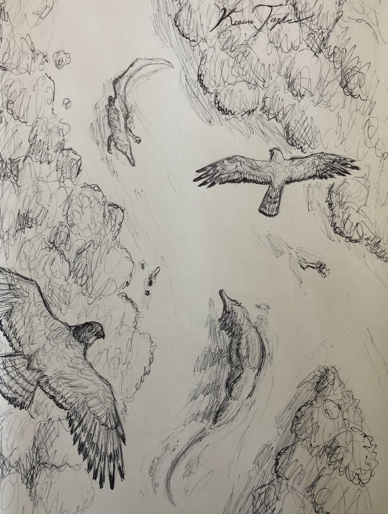
Among the numerous specializations that distinguish the kurajaku from other apeirovenatorids, none is more fundamental than its extraordinary growth strategy and resulting body size. Kurajaku are among the largest semiaquatic predators ever to evolve on Kaimere, occupying a unique biomechanical and ecological position between terrestrial macropredators and fully aquatic megacarnivores. Their immense dimensions are not merely a consequence of abundant resources or relaxed environmental constraints. Rather, gigantism is a deeply integrated adaptation that influences nearly every aspect of their biology, including locomotion, buoyancy regulation, thermodynamics, social structure, reproduction, predation, and sensory performance.
Adult kurajaku exhibit pronounced size variation across populations, sexes, and ecological conditions. Mature females commonly attain total lengths between 10 and 13 meters and masses ranging from approximately 8 to 14 tons. Mature males are substantially larger, with most adults measuring between 14 and 18 meters in total length and weighing between 16 and 28 tons. Particularly successful territorial bulls inhabiting highly productive coastal systems may exceed 20 meters in length and approach or surpass 35 tons under exceptional circumstances. Such individuals rank among the largest predatory theropods known from any ecosystem.
Unlike terrestrial apex predators whose mass is constrained primarily by locomotor limitations, the semiaquatic lifestyle of the kurajaku partially alleviates gravitational loading. Water supports a significant proportion of body weight during routine activity. This reduction in effective mass permits the evolution of dimensions that would impose severe mechanical penalties upon a fully terrestrial animal. Consequently, the species has evolved a growth strategy that actively exploits aquatic support systems to achieve levels of gigantism that would otherwise be unattainable.
The distribution of mass throughout the body differs substantially from that observed in terrestrial apeirovenatorids. Whereas forms such as the zentaur concentrate mass in the skull, neck, and forequarters, the kurajaku exhibits a far more posteriorly balanced body plan. The trunk is exceptionally elongated and voluminous, while the tail constitutes a substantial proportion of total body length and mass. This distribution reflects the importance of aquatic stability and hydrostatic balance.
The torso serves not merely as a container for internal organs but as a massive hydrostatic core. Dense musculature, reinforced connective tissues, enlarged digestive structures, and extensive vascular networks occupy much of the thoracic and abdominal volume. The resulting body resembles a living ballast system capable of maintaining stability in both shallow and deeper water environments.
Growth within the species is remarkably prolonged. Although hatchlings emerge at lengths of roughly 40 to 60 centimeters, they possess growth potential unmatched by nearly any other predator. The early juvenile phase is characterized by rapid skeletal elongation and neurological development. During the first five years of life, individuals commonly increase their length by more than an order of magnitude. Growth during this stage is strongly directed toward increasing mobility, sensory capability, and feeding efficiency rather than sheer mass accumulation.
Juveniles differ dramatically from adults in both proportions and ecological role. Their bodies are relatively narrow, tails proportionally shorter, sails reduced, and limbs comparatively longer relative to trunk volume. These characteristics permit greater agility and maneuverability. Rather than targeting large prey, young kurajaku focus on fish, aquatic reptiles, amphibians, crustaceans, and small shoreline vertebrates. This juvenile morphology effectively occupies a different ecological niche from that of mature individuals. By reducing direct competition between age classes, ontogenetic niche partitioning increases overall population carrying capacity and improves juvenile survival.
Between approximately five and ten years of age, growth accelerates further. This interval corresponds to a major developmental transition in which the body begins acquiring the structural characteristics of adulthood. Neural spines elongate, trunk depth increases, musculature expands, and the tail undergoes substantial enlargement. Bone deposition rates become exceptionally high during this period. Histological examination of limb bones suggests growth rates comparable to those of large hadrosaurids and titanosaurs despite the species' predatory lifestyle. Dense vascularization within cortical bone indicates sustained rapid osteogenesis supported by high caloric intake and efficient nutrient assimilation.
The adolescent period represents the most important developmental stage in determining final adult size. Between approximately ten and twenty years of age, individuals experience a prolonged phase of positive allometric growth. During this interval, many anatomical structures grow disproportionately relative to overall body length. Trunk depth increases dramatically. The ribcage expands laterally and vertically. The tail becomes broader and more muscular. Limb bones thicken at a faster rate than they lengthen. Neural spines elongate to form the characteristic segmented sail structures. Cranial elements become progressively more robust, allowing greater bite forces and improved prey handling capabilities.
Environmental conditions experienced during this developmental window exert enormous influence over final body size. Individuals inhabiting highly productive estuarine systems rich in fish, marine reptiles, coastal mammals, and large herbivores often achieve substantially larger dimensions than counterparts occupying inland wetlands or seasonally stressed environments. The species therefore exhibits pronounced developmental plasticity. Genetics establish an upper growth potential, but nutritional conditions largely determine how much of that potential is realized.
Sexual dimorphism emerges progressively during adolescence. Prior to roughly ten years of age, males and females are difficult to distinguish morphologically. Thereafter, endocrine differences begin influencing growth trajectories. Males undergo a prolonged period of accelerated skeletal expansion. Growth hormone activity remains elevated for longer durations, delaying epiphyseal closure and extending the period of active bone deposition. As a result, males continue increasing in length and mass long after females have begun approaching adult dimensions. Females generally prioritize earlier reproductive maturation. Although they remain formidable predators, their growth trajectory shifts toward energetic efficiency and reproductive capacity rather than maximum size attainment. Consequently, females typically mature sooner and at somewhat smaller dimensions than males. Male growth continues for an exceptionally long period. Sexual maturity may occur before somatic growth is complete, allowing individuals to reproduce while still increasing substantially in size. Dominant territorial bulls frequently continue accumulating mass well into their third decade of life. Indeed, true physical maturity often occurs significantly later than reproductive maturity.
While an individual may be capable of breeding by approximately fifteen years of age, maximum dimensions may not be reached until twenty-five years or older. This prolonged growth period contributes to the remarkable size variation observed among adult males. Younger territorial individuals may weigh less than half as much as older dominant bulls despite belonging to the same population.
The hydrostatic environment occupied by kurajaku profoundly influences the evolution of gigantism. Large body size provides several important aquatic advantages. First, increased mass improves stability. Large individuals are less susceptible to displacement by currents, waves, or struggling prey. Their greater inertia allows them to maintain position within turbulent environments that might challenge smaller predators.
Second, larger size enhances thermal stability. The species frequently inhabits coastal waters, estuaries, and broad river systems where temperatures may fluctuate substantially. Gigantic body mass provides considerable thermal inertia, reducing the energetic costs associated with maintaining physiological performance.
Third, increased size enhances diving capability. Greater oxygen reserves stored within blood, muscle, and respiratory tissues allow larger individuals to remain submerged longer than smaller conspecifics. This capability improves hunting efficiency and facilitates movement through complex aquatic environments.
Predatory performance also scales strongly with body size. Large prey species that are inaccessible to juveniles become increasingly available as individuals mature. Adult bulls are capable of targeting prey weighing several tons. The combination of mass, bite force, hydrostatic stability, and immense muscular strength allows them to overpower animals that would be effectively immune to predation from smaller carnivores.
However, gigantism is not without costs. Large individuals require enormous caloric intake. Growth itself represents a major energetic investment, and maintaining adult body mass demands substantial nutritional resources. Consequently, productive aquatic habitats are essential for supporting the largest populations. The species compensates through highly efficient feeding ecology. Large prey items provide tremendous energetic returns relative to hunting effort. A successful kill may sustain an adult for extended periods, reducing the need for constant foraging.
Bone structure exhibits numerous adaptations supporting extreme growth. Limb bones are exceptionally thick-walled and heavily reinforced. Cortical bone remains dense throughout life, reflecting the species' reliance upon skeletal ballast and hydrostatic stability. Unlike many giant theropods, extensive skeletal pneumaticity is reduced. This reduction increases overall density and improves submerged performance. Vertebral growth is similarly remarkable. Neural spines undergo prolonged development, continuing to enlarge well after much of the remainder of the skeleton has approached maturity. This delayed growth contributes to the increasing prominence of dorsal sails in older individuals and likely reflects both hydrodynamic and social functions.
Growth eventually slows as epiphyseal fusion progresses. However, even after skeletal dimensions become fixed, body mass continues increasing through muscular hypertrophy and accumulation of connective tissues. Older bulls frequently become significantly heavier without appreciable increases in length. The oldest individuals therefore represent the culmination of decades of continuous growth and physiological investment. Such animals function as ecological superpredators whose size alone shapes the behavior of entire communities.
Sexual Dimorphic Adaptations
Sexual dimorphism in the kurajaku is among the most extreme known within Apeirovenatoridae and represents a profound divergence in anatomy, physiology, life history, ecology, and behavioral role between the sexes. Unlike the comparatively modest dimorphism observed in most large theropods, where males and females differ primarily in ornamentation, display structures, or slight variations in body mass, kurajaku exhibit a condition approaching ecological bifurcation. Mature bulls and cows occupy overlapping habitats and remain fully capable of interbreeding, yet the selective pressures acting upon each sex have become so different that they effectively represent two alternative adaptive solutions to the same ancestral body plan.
The fundamental driver of this divergence is reproduction. Female kurajaku remain permanently constrained by the necessity of terrestrial oviposition. Despite spending the overwhelming majority of their lives in water, cows must periodically abandon aquatic environments, travel across shorelines and wetlands, excavate nests, deposit eggs, and defend vulnerable nesting territories. Every aspect of female anatomy remains influenced by these requirements. Males, by contrast, possess no equivalent obligation. Once sexually mature, bulls may spend years without venturing far from aquatic habitats. The resulting asymmetry in ecological constraints has allowed sexual selection and natural selection to act upon each sex in radically different ways.
In females, selection favors the maintenance of a versatile amphibious morphology. Mature cows typically attain lengths of approximately 9 — 12 meters and masses between 6 and 12 tons, with exceptional individuals occasionally exceeding these figures. While immense by conventional standards, female growth remains bounded by practical terrestrial limitations. Nesting requires locomotion across unstable substrates such as mudflats, marshes, barrier islands, mangrove-like forests, and riverbanks. Excessive body mass would dramatically increase energetic costs during haul-outs while simultaneously elevating the risk of becoming trapped in soft sediments. Consequently, female morphology represents a compromise between aquatic specialization and terrestrial functionality. The female pelvis remains proportionally broader relative to body mass than that of comparable males. This expansion facilitates egg production and passage while also improving weight distribution during terrestrial movement. Hindlimb musculature remains comparatively more developed, particularly in the muscles responsible for supporting body weight during excursions onto land. Although female kurajaku are far from efficient terrestrial locomotors, they retain sufficient mobility to traverse significant distances when necessary. This capability is especially important in regions where suitable nesting habitats may be widely separated from preferred feeding grounds. Female growth follows a more conventionally asymptotic trajectory than that observed in males. Skeletal growth slows markedly following reproductive maturity, and resources are increasingly diverted toward egg production, territorial defense, and offspring investment. Although cows continue to gain mass throughout adulthood, the rate of increase is generally modest. This developmental pattern ensures that energetic resources remain available for successful reproduction rather than perpetual somatic expansion.
Male development follows a dramatically different course. Bulls experience prolonged post-maturational growth characterized by continued skeletal thickening, muscular hypertrophy, and increasing cranial and axial elaboration. Although growth rates decline with age, they rarely cease entirely. The result is a population structure in which exceptionally old males may achieve dimensions vastly exceeding those of reproductively mature females. Large bulls commonly exceed 14 meters in total length and may attain masses of 15 — 20 tons. Exceptional individuals inhabiting highly productive coastal systems likely surpass these figures substantially. Such animals rank among the largest predatory theropods known from Kaimere and approach the upper biomechanical limits of amphibious vertebrate gigantism. Importantly, this size disparity is not merely a consequence of prolonged growth but reflects fundamental differences in resource allocation. Whereas females must maintain a degree of terrestrial competence, males can increasingly optimize their anatomy for aquatic dominance. As growth proceeds, bulls become progressively denser, more muscular, and more specialized for life within shallow marine and estuarine environments.
One of the most conspicuous manifestations of sexual dimorphism occurs within the cranial complex. Male skulls are substantially broader, deeper, and more heavily reinforced than those of females. Cranial ornamentation becomes increasingly elaborate with age, often involving extensive development of crests, bosses, rugose integumentary structures, and display surfaces. These features serve multiple functions, including species recognition, mate attraction, intimidation, and assessment during intrasexual competition. The skull of an old bull functions not only as a feeding apparatus but also as a display structure. Large cranial ornaments provide immediate visual information regarding age, health, body size, and competitive ability. Because males frequently encounter one another while traversing coastal territories and breeding ranges, rapid assessment reduces the frequency of dangerous physical confrontations. Neck morphology exhibits equally pronounced divergence. Bulls possess massively hypertrophied cervical musculature supported by enlarged neural spines and expanded muscle attachment surfaces. The resulting neck is substantially thicker and more powerful than that of a female of equivalent length. This development serves several purposes simultaneously. First, enlarged neck musculature improves prey handling capabilities. Large males routinely target prey species that would be impractical or dangerous for most females. Second, cervical hypertrophy enhances combat performance during male-male interactions. Third, the neck functions as a structural support for the increasingly massive skull and display apparatus characteristic of mature bulls. The dorsal sails also display marked sexual differentiation. Although present in both sexes, sail development becomes substantially exaggerated in males. Neural spine elongation produces larger hydrodynamic surfaces and more conspicuous visual profiles. These structures likely perform multiple functions simultaneously. Hydrodynamically, enlarged sails increase stability during slow aquatic maneuvering by functioning as vertical keels that resist unwanted rolling and yaw. Socially, they transform the body into a highly visible display platform. The silhouette of a mature bull is unmistakable even at considerable distances. Large sail surfaces allow individuals to advertise size, maturity, and condition without requiring close physical interaction. Sexual selection appears to have driven a positive feedback cycle in sail development. Females preferentially selecting larger, more impressive males would favor increasingly exaggerated sail morphology over evolutionary time. Simultaneously, rival males would benefit from structures that maximize apparent size while minimizing the need for direct combat.
Behavioral dimorphism parallels anatomical divergence. Female behavior centers around territorial maintenance, reproductive investment, and habitat selection. Nesting territories must be defended against predators, environmental disturbance, and competing females. Consequently, cows exhibit a behavioral profile emphasizing vigilance, site fidelity, and risk management. Male behavior is substantially more itinerant. Bulls routinely travel enormous distances through coastal waterways, estuaries, deltas, and shallow seas while searching for receptive females. This wandering lifestyle imposes unique selective pressures. Males capable of sustained movement between widely dispersed breeding sites gain disproportionate reproductive opportunities.
The enormous size of mature bulls may therefore represent not merely a product of sexual competition but also an adaptation for large-scale aquatic movement. Greater body mass improves momentum retention, increases resistance to wave action and current displacement, and enhances energetic efficiency during prolonged cruising. In many respects, mature bulls function as biological analogues of large marine vertebrates despite retaining reproductive dependence upon terrestrial environments.
Feeding ecology diverges accordingly. Females generally exploit prey resources that balance energetic return against injury risk and reproductive obligations. A nesting female cannot afford debilitating injuries that might compromise future reproductive success. Consequently, prey selection tends toward predictability and reliability.
Males experience different selective pressures. Because reproductive success is heavily skewed toward the largest and most dominant individuals, bulls benefit from maximizing growth whenever possible. This encourages exploitation of larger, more dangerous prey. The energetic rewards obtained from such prey facilitate continued somatic expansion, creating a feedback mechanism linking predatory success with reproductive competitiveness.
Ontogenetically, sexual divergence begins surprisingly early. Juveniles exhibit relatively modest differences, but developmental trajectories begin separating during adolescence. Hormonal influences increasingly direct growth toward sex-specific structures. Males experience prolonged periods of anabolic growth characterized by enhanced muscle deposition, neural spine expansion, cranial thickening, and ornament development. Females increasingly allocate resources toward pelvic expansion, reproductive tissue development, and maintenance of terrestrial competence. These divergent trajectories become progressively amplified throughout adulthood. A twenty-five-year-old bull may bear only superficial resemblance to a fifteen-year-old reproductive female despite belonging to the same species. The differences extend far beyond simple size variation and encompass nearly every major anatomical system.
The evolutionary consequences of this dimorphism are profound. By partitioning ecological roles between the sexes, the kurajaku effectively expands the species' overall adaptive envelope. Females maintain access to terrestrial reproductive environments while preserving considerable aquatic predatory capability. Males exploit ecological opportunities unavailable to nesting individuals, including larger prey, deeper aquatic habitats, and extensive migratory ranges. This division reduces intraspecific competition while simultaneously maximizing total resource utilization across the population. Rather than competing directly for identical ecological niches, bulls and cows occupy overlapping but distinct adaptive zones shaped by their differing reproductive obligations.
Forelimb Morphology
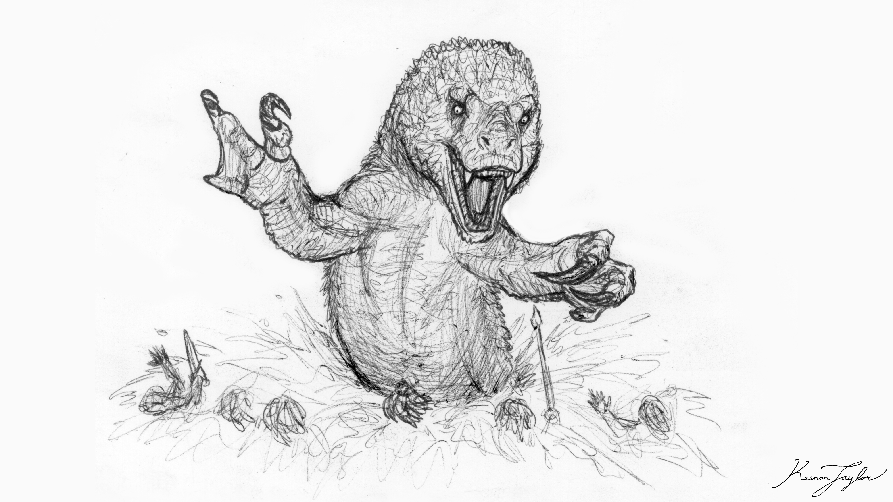
The forelimbs of the kurajaku represent one of the most remarkable examples of evolutionary retention and functional transformation within Apeirovenatoridae. While the lineage preserves the characteristic megaraptoran condition of hypertrophied manual claws and exceptionally powerful grasping musculature, these structures have undergone extensive modification in response to an increasingly aquatic lifestyle. The result is a forelimb complex that functions simultaneously as a predatory weapon, locomotor stabilizer, hydrodynamic control surface, substrate anchor, social display structure, and manipulative organ. Unlike the forelimbs of more terrestrial apeirovenatorids, which are optimized primarily for grappling prey on land, the forelimbs of kurajaku operate within a dense fluid medium where drag, buoyancy, turbulence, and hydrostatic resistance fundamentally alter the mechanics of force production.
The forelimbs remain among the primary killing structures of the animal. Although the jaws deliver the terminal bite and maintain final prey control, successful prey capture often begins with manual engagement. In many circumstances the forelimbs secure contact before the jaws fully commit. This sequence is particularly important during underwater predation, where water resistance reduces strike velocity and increases the difficulty of rapidly repositioning the head. By establishing an initial anchor point through the forelimbs, kurajaku can effectively convert prey movement into opportunities for cranial engagement.
The pectoral girdle is enormous and constitutes one of the most heavily reinforced regions of the skeleton. The scapula is broad, thick, and extensively expanded dorsally, providing immense attachment surfaces for shoulder stabilizers, humeral retractors, and adductors. Unlike the relatively lightweight shoulder girdles of many giant theropods, which rely heavily upon skeletal pneumaticity to reduce mass, the scapular complex of kurajaku is dense and heavily ossified. This increased density contributes to overall hydrostatic stability while simultaneously resisting the tremendous stresses generated during underwater prey struggles.
The coracoid is similarly enlarged and forms a massive articulation with both the scapula and sternum. Together these structures create a rigid scapulocoracoid complex capable of transmitting force directly into the thoracic core. Such reinforcement is essential because prey captured underwater often generate forces from multiple directions simultaneously. Fish, marine reptiles, giant amphibians, aquatic mammals, and even rival kurajaku may twist violently while attempting escape. Without an exceptionally rigid pectoral foundation, much of the force generated by the forelimbs would be dissipated through skeletal deformation rather than transferred efficiently into prey restraint.
The glenoid cavity exhibits substantial modification relative to terrestrial relatives. Rather than emphasizing the broad range of motion advantageous for terrestrial grappling, the shoulder joint prioritizes controlled power generation throughout a narrower but mechanically advantageous arc. The humerus can be elevated and abducted sufficiently for prey capture, but its greatest leverage occurs during powerful retraction and adduction. These motions pull prey inward toward the chest and jaws, where escape becomes increasingly difficult.
The humerus itself is extraordinarily robust. Relative to body length it is shorter than in many terrestrial apeirovenatorids, but significantly thicker. The shaft is broad and resistant to bending from multiple directions, reflecting the unpredictable loading conditions associated with aquatic predation. A massive deltopectoral crest extends along much of the proximal shaft, indicating immense development of the pectoral, deltoid, and supracoracoideus musculature.
These muscles serve several critical functions. During prey capture they generate powerful inward pulling motions. During underwater maneuvering they act as stabilizers, controlling forelimb position against hydrodynamic forces. During benthic locomotion they allow the animal to push against substrate surfaces while maintaining body orientation. Consequently, the shoulder musculature of kurajaku is not merely enlarged but exceptionally versatile.
Distal to the humerus, the radius and ulna are shortened and heavily built. Their reduced length increases mechanical advantage while minimizing bending stresses. The forearm functions less as a reach-extending structure and more as a compact power transmission unit. This shortening also reduces rotational inertia, allowing rapid forelimb repositioning despite enormous overall body mass.
The ulna possesses a greatly enlarged olecranon process that provides substantial leverage for elbow flexion. Flexor muscles inserting upon this process generate tremendous pulling forces. Once prey is hooked by the manual claws, elbow flexion becomes one of the primary mechanisms by which victims are drawn toward the body. Underwater, where prey frequently attempts escape through rapid acceleration rather than brute force, this ability to maintain continual inward pressure is particularly important.
The wrist retains sufficient mobility for prey manipulation while remaining structurally reinforced. Excessive flexibility would create instability under high loading conditions. Consequently, the wrist functions as a controlled articulation rather than a highly mobile joint. Limited pronation allows adjustment of claw orientation, but the manus remains optimized primarily for power rather than dexterity.
The manus preserves the ancestral megaraptoran three-fingered arrangement, although substantial specialization has occurred. The first and second digits remain massively developed and form the principal predatory apparatus. Each supports an enormous recurved ungual whose dimensions rank among the largest known within Apeirovenatoridae.
These claws differ functionally from those of terrestrial relatives. In land-based predators, enlarged claws frequently serve to destabilize prey through slashing and hooking. While kurajaku retain this capability, aquatic predation places greater emphasis upon anchoring. Water reduces effective body weight and allows prey greater freedom of movement. Consequently, once a prey animal is contacted, maintaining purchase becomes more important than delivering immediate tissue damage. The claws therefore function primarily as biological grappling hooks. Their extreme curvature resists extraction once embedded. Serrated internal ridges along the keratinous sheath further increase grip within flesh, connective tissue, or scales. During prey struggles, the claws may penetrate deeply enough to engage underlying musculature or skeletal structures. Adult bulls possess particularly impressive unguals. In the largest males, exposed keratinous claw length may exceed half a meter, while total ungual length is substantially greater. These structures can penetrate deeply into even massive prey and remain secure despite violent resistance. The first digit is especially robust and serves as the primary anchoring claw. The second digit complements it, creating a two-point grasping system capable of securing prey from multiple angles. Together these digits allow kurajaku to establish extraordinary purchase upon struggling animals.
The third digit has undergone partial reduction but remains functionally important. Although considerably smaller than the first two digits, it retains substantial musculature and independent mobility. The ungual is shorter, broader, and less recurved. Rather than functioning as a primary weapon, the third digit acts as a stabilizer and control structure. During prey handling, the third digit helps distribute pressure and prevent excessive torsional loading on the larger claws. It may also assist in manipulating prey orientation, particularly when repositioning a captured animal for swallowing or drowning. In effect, the third digit serves as an auxiliary support that increases overall grasping precision.
One of the most distinctive adaptations of the manus is the development of extensive interdigital webbing. Palmation is particularly pronounced between the second and third digits, although connective tissue extends throughout much of the hand. This webbing represents a major departure from the ancestral megaraptoran condition and reflects the increasing importance of aquatic locomotion. The webbed manus functions as a hydrodynamic control surface. During swimming, subtle adjustments in forelimb position alter local water flow patterns around the body. These changes assist in steering, stabilization, and maneuvering. While propulsion is generated primarily by the tail and posterior body, the forelimbs contribute significantly to directional control. During rapid turns, the webbed hands can generate substantial drag differentials. By extending one forelimb while retracting the other, the animal creates rotational forces that aid maneuverability. This capability is particularly valuable within complex habitats such as mangrove channels, flooded forests, estuaries, and shallow coastal environments. The webbing also improves benthic locomotion. Kurajaku frequently move along submerged substrates rather than swimming continuously through open water. In these circumstances the forelimbs function similarly to stabilizing outriggers. The webbed manus increases contact area against mud, sand, gravel, and vegetation, reducing sinking while improving traction.
Forelimb involvement in hydrostatic control extends beyond locomotion. Because kurajaku possess exceptionally dense skeletons and reduced pneumaticity, they are naturally negatively buoyant. The forelimbs contribute to maintaining equilibrium within the water column. Small adjustments in forelimb position alter drag distribution and help regulate body orientation during ascent, descent, and station-holding behavior.
Ontogenetically, forelimb morphology changes dramatically throughout growth. Juveniles possess proportionally longer forearms, smaller claws, and less extensive webbing. These characteristics reflect their occupation of different ecological niches. Young animals capture smaller prey and rely more heavily upon maneuverability than brute force. As growth proceeds, forelimb proportions shift steadily toward power generation. Humeral robustness increases disproportionately. Flexor musculature expands dramatically. Ungual size accelerates relative to body length. Webbing becomes more extensive. By adulthood the forelimbs have transformed into highly specialized aquatic grappling organs.
Sexual dimorphism further amplifies these trends. Mature females retain formidable forelimbs but must balance aquatic specialization with periodic terrestrial nesting behavior. Males, freed from many terrestrial constraints, continue developing increasingly massive forelimb musculature throughout life. Old bulls possess forelimbs of astonishing power, capable of generating immense restraint forces against prey, rivals, or environmental substrates.
Hindlimb Morphology
The hindlimbs of the kurajaku represent one of the most radically modified locomotor systems known among derived megaraptoran theropods. Whereas the ancestral apeirovenatorid condition emphasizes elongated distal limb elements, efficient terrestrial stride mechanics, and high-speed pursuit over solid substrates, the kurajaku hindlimb has been reshaped by a fundamentally different set of biomechanical demands. Its environment is neither wholly terrestrial nor fully pelagic. Instead, it occupies an intermediate domain of shallow seas, tidal channels, estuaries, floodplains, mangrove systems, submerged forests, and broad coastal wetlands. Locomotion within these environments requires the ability to move efficiently through water while simultaneously maintaining firm interaction with the substrate below. As a result, the hindlimbs function less as cursorial running organs and more as powerful hydrostatic propulsion devices specialized for benthic progression.
The most immediately striking feature of the hindlimb is its extreme proportional reduction. Relative to total body length, the legs are among the shortest known in any giant predatory theropod lineage. This shortening is not merely a consequence of increasing body size but a direct adaptation to aquatic life. Long distal limbs create substantial drag during underwater movement. Every additional centimeter of exposed appendage increases resistance and generates turbulent flow. Consequently, evolutionary pressures consistently favored reduction of limb length while preserving or enhancing force production. The resulting morphology produces an animal whose hindlimbs appear disproportionately small relative to its immense body. However, this apparent reduction is deceptive. Although shortened, the limbs are extraordinarily powerful. Virtually every component of the hindlimb exhibits enlargement of muscle attachment surfaces, thickening of cortical bone, and reinforcement of articulations. Rather than sacrificing performance, the reduction in length allows a greater proportion of muscular effort to be directed toward propulsion rather than overcoming hydrodynamic resistance.
The pelvic girdle forms the foundation of this locomotor system. The ilia are massive and extensively fused to the sacral complex, creating a rigid structural platform capable of transmitting immense forces between trunk and limbs. Unlike highly cursorial theropods, whose pelves emphasize stride length and rapid limb cycling, the pelvis of kurajaku is optimized for torque generation. The dorsal margins of the ilia provide extensive attachment surfaces for enlarged femoral protractors and retractors. These muscles rank among the largest in the entire body. In mature bulls, the musculature surrounding the pelvis and proximal tail may constitute a significant proportion of total body mass. This concentration of muscle reflects the importance of generating powerful thrust against both substrate and water.
The acetabulum remains characteristically theropodan but exhibits increased reinforcement around its margins. The hip joint must withstand unusual loading conditions compared with terrestrial relatives. During benthic locomotion, forces originate not only from body weight but also from water resistance acting across the entire body. As the animal advances, drag attempts to retard forward movement while buoyancy partially unloads the skeleton. The hip therefore experiences complex multidirectional stresses rarely encountered by land-dwelling predators.
The femur is exceptionally robust and constitutes the principal power-generating segment of the hindlimb. Relative to body size it is shorter than expected for a terrestrial theropod but substantially thicker. The shaft is broad and heavily reinforced against bending. Massive attachment scars indicate hypertrophied caudofemoral musculature, reflecting the continued importance of femoral retraction in generating propulsion. Unlike cursorial theropods that derive speed from rapid limb cycling, kurajaku derive movement primarily through forceful, deliberate strokes. Each hindlimb extension pushes against submerged substrates while simultaneously generating reaction forces through surrounding water. The femur functions as a short but immensely powerful lever optimized for maximum torque rather than maximum excursion.
The caudofemoralis remains one of the dominant locomotor muscles. Enlarged transverse processes and chevrons throughout the anterior tail provide extensive attachment areas for this system. During locomotion, contraction of the caudofemoralis retracts the femur powerfully, driving the body forward. In aquatic environments this mechanism becomes particularly effective because reduced body weight allows more muscular force to be translated into acceleration rather than merely supporting mass against gravity.
Distal to the femur, the knee joint exhibits substantial specialization. The articulation is broad and heavily buttressed, emphasizing stability over flexibility. Excessive rotational mobility would be detrimental during bottom-running because it would compromise force transmission and increase injury risk on uneven substrates. Ligamentous reinforcement appears particularly extensive. Strong collateral ligaments likely prevent lateral displacement while allowing powerful flexion and extension. The knee effectively functions as a constrained hinge optimized for repeated generation of high propulsive loads.
The crus is dramatically abbreviated. Both tibia and fibula are shortened relative to femoral length, creating a compact lower limb unlike that of most large theropods. This shortening produces several important mechanical consequences. First, it reduces overall drag. The distal limb represents one of the most hydrodynamically expensive regions of the body because it moves rapidly through water during each locomotor cycle. By minimizing its length, the animal reduces resistance substantially. Second, shortening increases mechanical advantage. A shorter distal limb requires less muscular effort to move and allows greater force transmission through the foot. Although stride length decreases, propulsive efficiency during benthic locomotion increases. Third, reduction of the lower limb lowers rotational inertia. Massive animals often struggle to reposition long appendages rapidly. Compact distal segments can be accelerated and decelerated more efficiently, improving maneuverability in confined aquatic environments.
The ankle joint remains surprisingly mobile despite extensive reinforcement elsewhere in the limb. This mobility is essential because the foot must maintain effective contact with irregular substrates. Mudflats, submerged vegetation, tidal sands, gravel bars, and estuarine sediments all present unique challenges. A flexible ankle allows the foot to conform to local topography while preserving traction.
One of the most remarkable adaptations of the hindlimb is the structure of the pes. Unlike the tridactyl condition typical of most theropods, kurajaku possess a functionally tetradactyl foot. The first digit, which is reduced or elevated in many theropod lineages, has regained substantial functional significance. This expansion of the weight-bearing surface reflects the unique demands of soft-substrate locomotion. A broader foot distributes pressure more evenly across mud and sediment, reducing the risk of sinking. The additional digit also improves stability when traversing uneven terrain beneath shallow water.
The metatarsals themselves are short, broad, and heavily reinforced. Unlike the elongated arctometatarsalian feet of many cursorial theropods, the kurajaku metatarsus resembles a compact load-distribution platform. Forces generated by the proximal limb are spread across a wider contact area before being transmitted into the substrate.
The digits are proportionally stout and terminate in broad unguals. These claws differ dramatically from the enormous grappling weapons of the forelimbs. Hindlimb claws are optimized primarily for traction. Their curvature allows secure purchase within mud, sand, vegetation, and submerged debris. When accelerating from rest, the claws penetrate the substrate and function as anchors against which the limb can push. This mechanism allows powerful bursts of speed despite the animal's immense mass. During ambush strikes, rapid acceleration generated through these anchoring structures may determine whether prey escapes or is captured.
The plantar surface is equally specialized. Extensive soft tissue pads increase contact area and improve grip. These pads likely contain dense networks of mechanoreceptors capable of detecting subtle substrate variations. Such sensory feedback would be invaluable in murky environments where visual information is limited.
Perhaps the most distinctive feature of the foot is the development of extensive totipalmate webbing. All four digits are connected by broad interdigital membranes, producing a paddle-like structure unlike that seen in any terrestrial theropod. This webbing serves multiple functions simultaneously. During swimming, it increases effective surface area and contributes modestly to propulsion. Although the tail remains the principal swimming organ, the feet can generate supplementary thrust when necessary. More importantly, the webbing acts as a hydrodynamic stabilizer. As the animal moves along the substrate, water flowing across the feet creates forces that help maintain balance and directional control. The broad surface area also prevents excessive penetration into soft sediments. In muddy habitats, the webbed feet function similarly to snowshoes. Pressure is distributed across a larger area, reducing sinking depth and improving mobility. This adaptation likely permits exploitation of environments inaccessible to many competing predators.
The hindlimbs also play an important role during prey capture. Although not primary weapons, they contribute significantly to stabilization and force generation. When the forelimbs and jaws engage large prey, the hindlimbs brace against the substrate and resist counterforces generated by struggling victims. In large bulls this capability becomes especially important. Massive prey may generate tremendous resistance during capture attempts. The hindlimbs anchor the body while the forequarters perform the killing actions. Without this stable posterior foundation, much of the force generated by the jaws and forelimbs would be lost through bodily displacement.
Ontogenetic changes in hindlimb morphology are substantial. Hatchlings and juveniles possess relatively longer legs, narrower feet, and less extensive webbing. These proportions reflect their greater reliance upon terrestrial locomotion and shallow-water maneuverability. Young animals spend considerable time in protected coastal habitats, marshes, and vegetated shorelines. Increased limb length improves agility and allows rapid escape from predators. At this stage they resemble generalized semi-aquatic theropods rather than the highly specialized benthic predators they will become. As growth proceeds, the hindlimbs undergo profound allometric transformation. The femur thickens disproportionately. The crus shortens relative to body size. Webbing expands. The metatarsus broadens. Muscular development accelerates dramatically. By adulthood, locomotor emphasis has shifted almost entirely from terrestrial efficiency toward aquatic power generation. The mature hindlimb no longer functions primarily as a running apparatus. Instead, it serves as a compact hydrostatic engine capable of driving one of the largest predatory theropods in the Known World through shallow aquatic ecosystems with remarkable efficiency.
Caudal Section
The tail of the kurajaku is the single most specialized anatomical region of the entire body and represents the culmination of the lineage's transition from terrestrial megaraptoran ancestry into a highly derived amphibious apex predator. While the skull, forelimbs, hindlimbs, and vertebral column all exhibit substantial aquatic modification, none have undergone transformation as extensive as the caudal complex. The tail is no longer merely a balancing organ or a reservoir for locomotor musculature. Instead, it has become the primary engine of aquatic propulsion, the principal stabilizing structure of the body, and one of the most distinctive functional innovations among all known theropods.
In mature adults, the tail accounts for approximately 56 — 61% of total body length, making it proportionally longer than that of most terrestrial megaraptorans and substantially exceeding the relative caudal proportions observed in the majority of large theropod lineages. Exceptional old bulls may approach the upper end of this range as continued growth preferentially lengthens the posterior body. In practical terms, more than half of the animal's total linear dimensions are devoted to the caudal apparatus. Such proportions immediately indicate that the tail is not functioning merely as a counterbalance but as a major locomotor structure whose performance has become central to the animal's ecology.
At its base, the tail forms an enormous muscular column that emerges from the pelvis with little visible distinction from the trunk. In cross-section, the proximal tail is neither circular nor strongly compressed. Instead, it forms a broad dorsoventrally deep oval with flattened lateral surfaces, resembling an elongated rounded rectangle. This geometry reflects competing functional demands. The structure must simultaneously house massive caudofemoral musculature, transmit force generated by the hindlimbs, resist torsional loading during aquatic maneuvering, and provide the foundation for powerful lateral oscillation.
The first several caudal vertebrae are among the most heavily built elements of the entire skeleton. Neural spines remain tall and robust, transverse processes are enlarged, and vertebral centra possess exceptionally thick cortical walls. Attachment surfaces for the M. caudofemoralis longus and associated musculature are immense. These muscles remain recognizable descendants of the locomotor system that powered terrestrial megaraptoran running, yet their functional role has expanded dramatically. In kurajaku, the caudofemoral complex not only retracts the hindlimb but also participates directly in tail propulsion. Consequently, locomotion becomes highly integrated. Every hindlimb stroke reinforces tail movement, and every tail stroke contributes to hindlimb power production.
Muscle volume reaches its maximum immediately posterior to the pelvis. In very large bulls, this region may comprise a substantial fraction of total body mass. Externally, the tail base forms a deep, thick, muscular pedestal that gradually narrows only after several meters of posterior extension. Unlike terrestrial theropods, where rapid tapering reduces inertial costs, kurajaku retain considerable caudal depth throughout much of the anterior tail. This delayed taper reflects selection for hydrodynamic thrust generation rather than inertial balancing.
Posterior to the pelvic region, the vertebral column enters a highly specialized transition zone. The caudal sail originates within this region and is supported primarily by elongated neural spines extending from approximately the eighth caudal vertebra onward. Unlike the paired dorsal sails of the trunk, the caudal sail forms a single continuous median structure. The sail is comparatively lower than the dorsal pair but extends over a significantly greater proportion of the body.
Internally, the sail is not a thin membranous sheet analogous to that of pelycosaurs or certain speculative reconstructions of spinosaurids. Instead, it consists of dense connective tissues, vascularized support structures, substantial musculature, and thick integument. The resulting structure behaves mechanically more like a flexible hydrodynamic keel than a passive display surface. Its considerable mass indicates that it evolved under strong functional selection rather than solely sexual or social pressures.
Hydrodynamically, the caudal sail performs several roles simultaneously. Most importantly, it increases lateral surface area without requiring equivalent increases in body width. During swimming, this enlarged vertical profile improves resistance against unwanted rolling and enhances directional stability. It also increases the effectiveness of lateral tail strokes by providing additional area with which to interact with surrounding water. The structure functions analogously to the vertical stabilizers of aquatic vertebrates and engineered submarines, reducing yaw instability during high-speed movement.
Moving farther posteriorly, the vertebral column undergoes another dramatic transformation. Neural spines progressively shorten while the body of the tail becomes increasingly laterally compressed. Muscular volume declines, but external depth remains considerable due to the development of extensive soft-tissue structures. The tail gradually shifts from a muscular force-generating region into a hydrodynamic thrust-transmitting organ.
This transition produces a body plan unlike that of any terrestrial theropod. In cross-section, the middle and distal tail increasingly resemble the caudal peduncle of large aquatic vertebrates. Width decreases steadily while depth remains relatively high, creating a tall blade-like profile optimized for efficient movement through water. Such geometry minimizes drag generated by lateral oscillation while maximizing the transfer of muscular force into forward thrust.
The swimming mode employed by the kurajaku is best described as a highly modified subcarangiform-thunniform continuum. It is not fully thunniform in the manner of tunas, lamnid sharks, or cetaceans because a substantial portion of the posterior body remains involved in generating propulsion. However, it also differs markedly from the anguilliform or crocodilian condition in which large portions of the trunk participate in broad undulations. Instead, locomotor force is concentrated primarily within the posterior half of the body. The trunk remains comparatively stable while oscillatory movements increase progressively toward the tail tip. Most lateral displacement occurs in the posterior third of the animal. Consequently, the swimming motion occupies an intermediate position between subcarangiform and true thunniform locomotion. The undulatory pattern itself is predominantly lateral and sinusoidal. Waves of muscular contraction originate near the tail base and travel posteriorly through the caudal column. As each wave progresses, amplitude increases steadily until maximum displacement occurs near the fluke. Because much of the body remains relatively rigid, energy losses associated with excessive trunk flexion are minimized. This configuration allows substantial thrust generation despite the animal's enormous mass.
The terminal fluke represents the final stage of this transformation and constitutes one of the most unusual structures known among theropod descendants. Unlike cetacean flukes, which are oriented horizontally and operate through dorsoventral oscillation, the kurajaku fluke remains vertically oriented and functions through lateral movement. Consequently, its evolutionary origins and biomechanical operation differ fundamentally from those of whales. The fluke itself forms a broad hypocercal hydrofoil composed of enlarged dorsal and ventral lobes arranged around a laterally compressed central axis. Although often described as leaf-shaped, detailed examination reveals a more sophisticated geometry. The leading edge is thick and rounded, while the trailing margin narrows considerably. This configuration reduces flow separation and minimizes turbulence during rapid oscillation. Hydrodynamic analysis suggests that the fluke functions simultaneously as a thrust generator, stabilizer, steering surface, and energy-storage structure. During routine swimming, lateral oscillations of the fluke produce the majority of forward thrust. Elastic connective tissues within the distal tail store kinetic energy during each stroke and release it during directional reversal, improving overall locomotor efficiency. At cruising speeds, propulsion is generated primarily through moderate-amplitude oscillations concentrated in the distal third of the tail. During pursuit events, amplitude and frequency increase substantially, transforming the entire posterior body into a powerful propulsive engine. Under these conditions, thrust generation rises dramatically while the trunk remains relatively stable. Such stability likely contributes to the species' remarkable underwater acceleration. The fluke also provides extraordinary maneuverability. By altering stroke amplitude asymmetrically, the animal can generate differential thrust on either side of the body. This permits rapid turning despite enormous size. Large adults are capable of surprisingly tight directional changes while moving through complex submerged environments such as river channels, flooded forests, mangrove-like wetlands, and shallow coastal lagoons.
The tail further serves critical stabilizing functions during benthic locomotion. Because much of the animal's movement occurs while maintaining contact with submerged substrates, shifts in center of mass must be continuously corrected. The caudal complex acts as a dynamic counterbalance capable of making constant micro-adjustments. These corrections stabilize pitch, roll, and yaw while the hindlimbs generate propulsive force against the substrate. During prey capture, caudal importance becomes even more pronounced. When attacking large animals, enormous reaction forces travel through the body as prey struggles against the jaws and forelimbs. The tail counters these forces by functioning as a massive inertial anchor. Lateral sweeps stabilize body position, while muscular contractions along the proximal tail maintain alignment between the trunk and pelvis. Without this stabilization, the predator would risk rotational instability during violent encounters.
Ontogenetically, caudal specialization intensifies throughout growth. Hatchlings possess relatively conventional megaraptoran tails. These remain long but are narrower, more flexible, and less hydrodynamically specialized. Juveniles employ a swimming style resembling that of semi-aquatic crocodilians, with greater participation of the trunk and more extensive body undulation. As individuals mature, the caudal musculature hypertrophies dramatically. The sail enlarges, lateral compression increases, and the terminal fluke expands. Simultaneously, the trunk becomes increasingly rigid, shifting propulsion rearward. Adult locomotion therefore relies far more heavily upon distal caudal oscillation than juvenile locomotion.
Locomotion and Speed
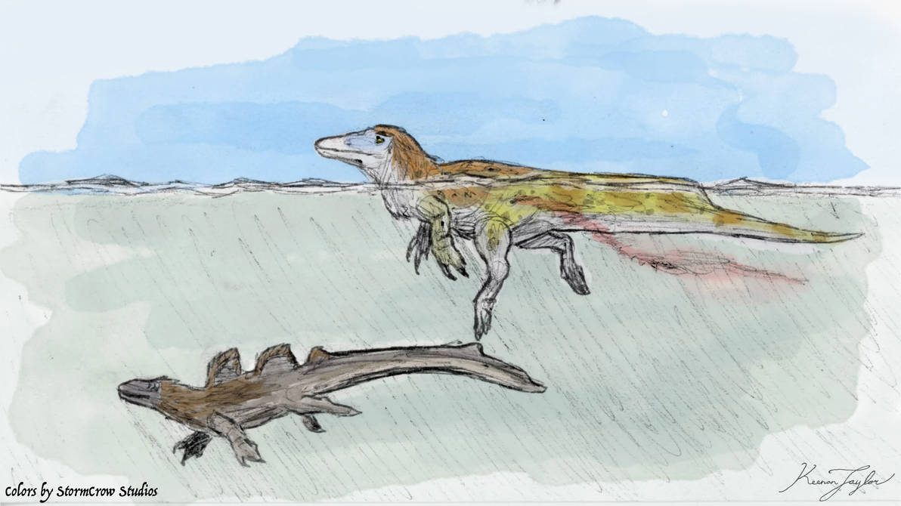
Locomotion in the kurajaku represents one of the most unusual biomechanical systems known among large terrestrial vertebrates on Kaimere. Although superficially descended from highly cursorial megaraptoran ancestors, the kurajaku has undergone such extensive adaptation to an amphibious and benthic existence that many conventional assumptions regarding theropod movement no longer apply. Its locomotor apparatus cannot be accurately described as either terrestrial or aquatic in the traditional sense. Instead, the species occupies a functional intermediate condition in which the substrate itself remains the primary medium of force transmission regardless of whether the animal is moving through air or water.
Unlike truly pelagic marine vertebrates, kurajaku are not optimized for neutral buoyancy or continuous swimming. Equally, unlike terrestrial megaraptorans, they are not optimized for efficient overland travel. The species instead achieves its highest locomotor performance while moving along submerged substrates, where the mechanical properties of water reduce effective body weight while the riverbed, lakebed, marsh floor, or seafloor provides a solid surface against which muscular force can be applied. The result is a predator whose greatest locomotor efficiency occurs in precisely the environments where most large terrestrial animals become slow and vulnerable. The fundamental locomotor challenge facing the lineage derives from body density. Adult kurajaku possess extraordinarily massive skeletons, dense musculature, extensive dermal reinforcement, and reduced internal air spaces compared to most theropods. This density serves numerous functions, including stability during underwater ambush, resistance to currents, and maintenance of bottom contact. However, it also produces a body that is substantially less buoyant than expected for an animal of comparable dimensions. Large adults entering deep water often sink passively with little active effort. Rather than representing a disadvantage, this tendency forms the foundation of their entire locomotor strategy. A mature bull descending into a river channel or coastal embayment does not attempt to remain suspended within the water column. Instead, it settles onto the substrate and begins moving across the bottom in a manner analogous to a gigantic predatory crocodilian combined with a benthic marine mammal. In aquatic environments, propulsion derives from the coordinated action of three major systems: the hindlimbs, the caudal musculature, and the flexible posterior trunk. The hindlimbs generate the initial propulsive impulse by pushing against the substrate. This force is then amplified by lateral oscillation of the tail, which functions as the primary propulsive organ once forward momentum has been established. The broad caudal fin contributes additional thrust while simultaneously stabilizing yaw and roll. The mechanics of this movement differ significantly from conventional swimming. Most aquatic vertebrates generate propulsion by pushing directly against water. Kurajaku instead push primarily against the substrate itself. Water serves as a supportive medium that reduces effective body mass and decreases impact loading while the ground provides the reaction force necessary for acceleration. Consequently, locomotor efficiency increases dramatically in shallow water and decreases in open-water environments where substrate contact becomes intermittent. The tail plays an especially important role in this system. The posterior half of the body contains immense caudofemoral and axial musculature derived from the same ancestral muscle groups that powered terrestrial theropod locomotion. In most theropods these muscles primarily retract the hindlimb. In kurajaku they additionally power lateral tail strokes. Each hindlimb push initiates a corresponding wave of muscular contraction through the tail, generating a synchronized propulsive cycle in which substrate reaction force and hydrodynamic thrust reinforce one another. Hydrodynamic modeling suggests that large adults moving along firm submerged substrates can maintain cruising speeds of approximately 12 — 18 kilometers per hour (7.5 — 11 miles per hour). These speeds exceed those achievable by most similarly sized terrestrial predators while requiring surprisingly modest energetic expenditure. At such velocities, individuals are capable of covering 40 — 70 kilometers during routine daily movements through river systems, coastal lagoons, or marsh networks. When urgency increases, locomotor performance rises substantially. Hunting individuals frequently accelerate to 25 — 35 kilometers per hour (15.5 — 22 miles per hour) during attack runs across submerged substrates. Because water partially supports body mass, the stresses normally associated with moving such enormous weight are reduced considerably. The limbs therefore operate under loading conditions that would be impossible on land. Maximum burst speed in large adult females is estimated at approximately 38 — 42 kilometers per hour (23.5 — 26 miles per hour) underwater during short attack sequences. Mature bulls, despite their vastly greater mass, may achieve similar or slightly higher velocities of approximately 40 — 45 kilometers per hour (25 — 28 miles per hour) due to disproportionately enlarged tail musculature and greater absolute force production. These bursts are generally sustainable for 300 — 600 meters before muscular fatigue and oxygen debt begin to accumulate. Such figures make the species among the fastest large benthic predators in Kaimere. Importantly, these speeds occur beneath the surface, where prey animals often receive little warning of an approaching attack. Surface-swimming predators inevitably generate visible wakes, pressure waves, and turbulence. A kurajaku moving several meters below the surface produces remarkably little visible disturbance. In turbid rivers or marshes, prey may remain entirely unaware of its presence until the final seconds of an attack. Acceleration is arguably more impressive than maximum velocity. A mature bull resting motionless on the substrate can transition to full attack speed within only a few tail strokes. The combination of powerful hindlimb extension and immediate tail engagement produces tremendous forward thrust. Calculations based on estimated muscle cross-sectional areas suggest that an adult bull can reach 25 kilometers per hour (15.5 miles per hour) in less than five seconds while underwater. In practical terms, this allows a predator concealed among submerged vegetation or riverbank shadows to cover 30 — 40 meters almost instantaneously. Maneuverability remains surprisingly high despite enormous body size. The shortened hindlimbs reduce rotational inertia while the extensive tail fin provides powerful steering authority. During pursuit, the animal can execute abrupt directional changes through asymmetrical hindlimb loading combined with differential tail movement. Large individuals are capable of turning within remarkably confined spaces for animals exceeding fifteen meters in length. The locomotor behavior of juveniles differs substantially from that of adults. Hatchlings and young animals possess proportionally longer limbs, shallower tails, and considerably lower body density. These characteristics reflect their ancestry as more generalized semi-aquatic predators. Young individuals swim freely throughout the water column and display locomotor repertoires resembling those of large aquatic birds or crocodilians.
Juveniles routinely employ active swimming rather than benthic locomotion. Their lower mass permits greater buoyancy, allowing efficient movement near the surface and throughout deeper water. Swimming speeds of 15 — 20 kilometers per hour (9 — 12.5 miles per hour) are attainable even in relatively young animals. Maximum burst speeds may exceed 30 kilometers per hour. As growth proceeds, however, increasing body density gradually shifts locomotor emphasis toward substrate-based movement. Adolescents occupy an intermediate condition. They remain competent swimmers but increasingly rely upon bottom-running during hunting and travel. By full adulthood, especially in males, true swimming becomes secondary to benthic locomotion.
Terrestrial locomotion presents a very different picture. Although fully capable of moving overland, kurajaku are no longer specialized terrestrial runners. Their shortened limbs, dense bodies, and posteriorly concentrated mass impose substantial limitations on speed and endurance compared to their ancestors. Walking gait is characterized by relatively short strides and prolonged stance phases. The body remains low and stable while vertical oscillation is minimized. This gait reduces energetic expenditure and decreases mechanical stress on joints. Typical walking speeds range from 3 — 6 kilometers per hour (2 — 3.5 miles per hour) in large adults. At these speeds, individuals can travel considerable distances when necessary. Females migrating toward nesting sites may cover 10 — 20 kilometers in a day across marshes, coastal plains, or island chains. A faster terrestrial travel gait exists but is employed sparingly. During purposeful movement, adults may sustain speeds of 8 — 12 kilometers per hour (5 — 7.5 miles per hour) for several kilometers. This represents the practical upper limit for economical overland travel. Beyond this threshold, energy expenditure increases rapidly and thermal stress becomes significant. Maximum terrestrial speed is considerably lower than aquatic speed. Mature females likely achieve sprint velocities of approximately 24 — 28 kilometers per hour (15 — 17 miles per hour) over short distances. Such bursts are sustainable for only a few hundred meters before fatigue becomes prohibitive.
The discrepancy between terrestrial and aquatic performance highlights the degree to which locomotor evolution has shifted away from conventional theropod patterns. Whereas ancestral megaraptorans achieved their greatest performance on land, kurajaku attain peak locomotor efficiency beneath the surface. Substrate type strongly influences terrestrial movement. Firm sandbars, packed mudflats, and grassy floodplains permit relatively efficient travel. Deep mud, however, dramatically reduces performance. Although broad feet prevent catastrophic sinking, heavy adults nevertheless expend substantial energy extracting each step from saturated substrates. Consequently, many individuals preferentially travel through shallow water rather than across adjacent marshland.
One of the most remarkable aspects of kurajaku locomotion is energetic economy during aquatic travel. The combination of partial buoyant support and substrate-based propulsion allows extremely large individuals to move long distances at relatively low metabolic cost. Mature bulls are capable of sustained aquatic journeys exceeding 80 kilometers in a single day when motivated by breeding opportunities, territorial patrol, or seasonal prey movements. Such movements would be prohibitively expensive if conducted entirely on land.
Cardiovascular System
The cardiovascular system of the kurajaku represents one of the most extensively modified physiological systems in the entire organism. As a gigantic semi-aquatic macropredator that routinely alternates between terrestrial movement, benthic locomotion, prolonged submersion, explosive predatory acceleration, and sustained underwater pursuit, it faces circulatory challenges unlike those encountered by either fully terrestrial theropods or entirely aquatic vertebrates. The cardiovascular architecture must simultaneously support extreme body mass, enormous muscular demands, variable hydrostatic pressures, prolonged apnea, rapid changes in body orientation, and the thermoregulatory requirements of warm tropical and subtropical environments. Consequently, the circulatory system combines ancestral megaraptoran characteristics with numerous derived specializations associated with aquatic life.
At the center of the system lies an exceptionally large four-chambered heart. As in other advanced theropods, complete separation of oxygenated and deoxygenated blood permits highly efficient oxygen transport and supports elevated aerobic performance. However, the heart of the kurajaku is proportionally larger than that predicted for a terrestrial theropod of equivalent mass. Estimates suggest that cardiac mass may comprise approximately 0.9 — 1.2% of total body mass in healthy adults, significantly exceeding values typical of most large terrestrial archosaurs.
The ventricles are especially enlarged. The left ventricle possesses extraordinarily thick muscular walls capable of generating substantial systemic pressures, while the right ventricle is also unusually robust compared with terrestrial relatives. This bilateral ventricular enlargement reflects the dual demands placed upon the cardiovascular system. The left ventricle must deliver blood throughout an enormous body while maintaining cerebral perfusion despite considerable vertical distances between heart and brain. Simultaneously, the right ventricle must accommodate fluctuating pulmonary pressures associated with repeated diving cycles and varying respiratory states.
Cardiac output is dominated primarily by stroke volume rather than heart rate. Resting adults possess comparatively slow pulse rates for animals of their size. In large mature bulls, resting heart rates likely average between 18 and 28 beats per minute during inactive periods. Yet each contraction moves an immense volume of blood. This strategy minimizes energetic expenditure while maintaining adequate tissue perfusion.
During activity, cardiac performance can increase dramatically. Heart rate may double or even triple during intense exertion, but the greatest increase occurs through enhanced ventricular filling and stronger contractions. As a result, total cardiac output rises rapidly without requiring the extremely elevated pulse frequencies characteristic of smaller animals. This ability to transition quickly between resting and active circulatory states is particularly important during hunting.
A submerged kurajaku may remain motionless for extended periods before suddenly initiating an attack. Within seconds, circulatory priorities shift from energy conservation toward maximal oxygen delivery. Massive quantities of blood are redirected toward the caudal musculature, hindlimbs, cervical muscles, and forelimb flexors. Such transitions occur repeatedly throughout the animal's life and have likely exerted powerful selective pressure on cardiovascular regulation.
Arterial architecture is correspondingly specialized. The aorta is enormous and heavily reinforced, possessing exceptionally thick elastic walls capable of storing substantial energy during systole and releasing it during diastole. This elastic recoil smooths blood flow, reduces pressure fluctuations, and enhances circulatory efficiency throughout the body.
Large arterial trunks extend toward the neck, tail, hindlimbs, and forelimbs. These vessels possess unusually thick layers of elastic fibers and collagen, enabling them to withstand substantial pressure variation. This reinforcement becomes particularly important during aquatic maneuvering, when rapid body movements generate transient hydrostatic shifts that could otherwise destabilize circulation.
The carotid system demonstrates especially noteworthy adaptations. In mature bulls, the head may be positioned several meters above the heart during terrestrial locomotion. Maintaining stable cerebral perfusion under such conditions requires elevated systemic pressure. Yet the same animal may subsequently lower its head below heart level while submerged or feeding underwater.
To accommodate these changes, the carotid arteries incorporate extensive pressure-regulating structures. Elastic expansions function as temporary pressure reservoirs, dampening abrupt fluctuations generated by postural changes. Dense networks of smooth muscle permit fine regulation of cerebral blood flow. These mechanisms reduce the risk of either cerebral hypoperfusion or excessive cranial pressure during rapid shifts in orientation.
The venous system is equally specialized. One of the principal challenges faced by giant animals is returning blood from distant tissues back to the heart. In the kurajaku, this challenge is magnified by enormous body length and the substantial distances separating the tail, hindlimbs, and brain from the central circulation. Large venous sinuses are distributed throughout the body, particularly within the tail base and pelvic region. These structures function as temporary blood reservoirs capable of accommodating sudden shifts in circulatory demand. Extensive venous valves prevent backflow and maintain directional circulation even during dramatic changes in posture.
The hindlimbs and tail serve as powerful auxiliary circulatory pumps. Contraction of the immense locomotor musculature compresses surrounding veins, actively propelling blood toward the heart. During underwater locomotion, each tail stroke contributes not only to propulsion but also to venous return. This coupling between movement and circulation significantly improves cardiovascular efficiency during sustained activity.
Particularly remarkable are the adaptations associated with diving physiology. Although the kurajaku is not a pelagic diver comparable to marine mammals, it frequently remains submerged for extended periods while hunting, traveling, or resting on riverbeds and lake bottoms. During submersion, the cardiovascular system undergoes substantial functional reorganization. A pronounced diving response is initiated through autonomic control mechanisms. Heart rate decreases significantly, reducing oxygen consumption and extending available dive duration. Simultaneously, peripheral vasoconstriction redirects blood away from less immediately essential tissues. Under these conditions, circulation becomes concentrated primarily within the brain, heart, major locomotor muscles, and critical sensory organs. Peripheral tissues experience reduced perfusion but remain protected through extensive metabolic adaptations and substantial local oxygen reserves.
The spleen appears to play an important role during these episodes. Like many diving vertebrates, kurajaku likely possess a large splenic reservoir containing concentrated erythrocytes. During prolonged exertion or extended dives, splenic contraction releases additional red blood cells into circulation, temporarily increasing oxygen-carrying capacity. This mechanism provides a physiological reserve that can be mobilized when oxygen demand exceeds normal supply.
Blood chemistry itself reflects adaptation to intermittent hypoxia. Erythrocytes exhibit exceptionally high hemoglobin concentrations, permitting efficient oxygen transport even when respiratory exchange is temporarily interrupted. Hemoglobin affinity appears carefully balanced. Oxygen loading remains efficient within the lungs, yet unloading in active tissues occurs readily under conditions of elevated carbon dioxide and decreased pH.
Total blood volume is substantial. Estimates suggest circulating blood may constitute 9 — 11% of body mass, somewhat higher than expected for comparably sized terrestrial theropods. This expanded volume improves oxygen storage, stabilizes blood pressure, and provides thermal buffering capacity.
Capillary density varies considerably among tissues. The caudal musculature, hindlimbs, and forelimbs exhibit extraordinarily dense capillary networks. Such vascularization reflects the enormous oxygen demands generated during underwater pursuit. Even though the tail serves as the primary propulsive organ, the forelimbs and hindlimbs remain heavily involved in benthic locomotion and prey capture, necessitating continuous oxygen delivery under high workloads.
The myocardium itself is among the most highly vascularized tissues in the body. Coronary circulation remains exceptionally well developed, ensuring that the heart receives adequate oxygen even while operating at elevated workloads. This characteristic is particularly important because prolonged hunting events often involve repeated transitions between apnea, exertion, and recovery.
Thermoregulation forms another major function of the cardiovascular system. The habitats occupied by the kurajaku are frequently warm, humid, and thermally challenging. Large body size confers substantial thermal inertia, reducing the rate at which body temperature changes. While beneficial during brief fluctuations, this same inertia can create problems when metabolic heat production rises dramatically. The cardiovascular system therefore functions as a primary heat distribution network. Extensive vascular beds beneath the skin facilitate controlled heat exchange with surrounding water. During aquatic activity, blood flow to superficial tissues increases substantially. Heat generated by the locomotor muscles is transferred into the circulating blood and subsequently dissipated through contact with cooler water. The tail plays an especially important role in this process. Because of its enormous surface area and rich vascular supply, it functions as a major thermal radiator. Blood passing through caudal vessels can exchange significant quantities of heat before returning to the core circulation. The dorsal sails contribute similarly. Dense vascular networks permeate their internal tissues, allowing them to function as adjustable heat exchangers. Increased blood flow during periods of thermal stress transforms these structures into effective radiators capable of shedding large amounts of excess heat. Conversely, vasoconstriction reduces heat loss when conservation becomes advantageous.
The cardiovascular system also contributes to wound tolerance and recovery. Large apex predators routinely experience injuries resulting from territorial disputes, prey resistance, and environmental hazards. Consequently, blood clotting mechanisms are highly developed. Platelet analogs aggregate rapidly at injury sites, while clotting proteins initiate swift coagulation responses.
Ontogenetically, cardiovascular specialization increases steadily throughout growth. Juveniles possess relatively higher heart rates, lower blood volumes, and reduced diving capacities. Their physiology resembles that of more generalized megaraptoran ancestors. As body mass increases, ventricular walls thicken, arterial reinforcement becomes more pronounced, and oxygen storage capacity expands substantially.
Respiratory System
The respiratory system of the kurajaku is among the most profoundly modified organ systems within the entire animal and reflects a complex evolutionary compromise between two competing demands. On one hand, the species remains a gigantic, highly active megaraptoran predator descended from ancestors possessing the exceptionally efficient flow-through pulmonary system characteristic of advanced theropods. On the other hand, it has adopted a predominantly aquatic lifestyle in which buoyancy control, hydrostatic stability, prolonged submersion, benthic locomotion, and underwater predation exert powerful selective pressures against the extensive skeletal pneumaticity seen in most large terrestrial theropods.
The resulting respiratory apparatus retains the fundamental archosaurian configuration of rigid parabronchial lungs ventilated by an air-sac system, yet virtually every component has been altered by the requirements of aquatic existence. The system cannot be understood simply as a reduced version of a terrestrial megaraptoran lung. Instead, it represents a specialized respiratory complex in which gas exchange efficiency, oxygen storage capacity, hydrostatic regulation, pressure tolerance, and buoyancy management have become intimately integrated.
The lungs themselves remain dorsally anchored against the vertebral column and posterior ribcage, as in other derived theropods. They are relatively non-expansile organs composed of densely packed parabronchial networks through which air moves in a largely unidirectional fashion. This arrangement preserves one of the principal advantages of theropod respiration: oxygen-rich air passes continuously across gas exchange surfaces during both inhalation and exhalation. Consequently, pulmonary extraction efficiency remains substantially higher than that achieved by the tidal lungs of mammals of comparable size. However, the lungs of the kurajaku differ significantly from those of terrestrial relatives in overall construction. The pulmonary tissue is denser, more compact, and more heavily vascularized. Alveolar-equivalent exchange surfaces occupy a greater proportion of total lung volume, while non-respiratory pneumatic spaces have been reduced. The lungs therefore function less as lightweight ventilation organs and more as high-efficiency oxygen extraction units capable of maximizing gas exchange from every inhaled breath. This modification reflects a recurring pattern throughout the anatomy of the species: structures that once contributed primarily to weight reduction have been transformed into denser, more powerful systems optimized for life beneath the water surface.
The most dramatic respiratory changes involve the air-sac system. In terrestrial megaraptorans, cervical, clavicular, anterior thoracic, posterior thoracic, and abdominal air sacs collectively occupy a tremendous proportion of internal body volume. Their diverticula invade numerous bones, producing extensive skeletal pneumaticity and substantial reductions in body density. In the kurajaku, such a condition would be highly disadvantageous. Large volumes of internal air would increase buoyancy, reduce stability on submerged substrates, and require constant energetic expenditure to remain underwater. As a consequence, the air-sac system has undergone extensive reduction.
The abdominal air sacs exhibit the greatest degree of modification. In terrestrial relatives, these structures form enormous posterior bellows occupying much of the abdominal cavity. In the kurajaku, they are reduced to less than half their ancestral volume. While still functioning in ventilation, they no longer serve as massive reservoirs of low-density air. Their walls are thicker, more muscular, and better supported against compression. Posterior thoracic air sacs have likewise been substantially diminished. These chambers remain important for maintaining unidirectional airflow but contribute far less to overall body volume than in typical megaraptorans. The anterior thoracic sacs persist in relatively functional form, although they too are reduced. Their principal role is maintaining airflow continuity rather than maximizing internal pneumatic volume. The clavicular air sacs have undergone moderate reduction. Small diverticula continue to extend into portions of the pectoral region, but the extensive skeletal invasion observed in terrestrial species is absent. The cervical air sacs represent an intermediate condition. Complete elimination would compromise respiratory efficiency and increase neck mass substantially. Consequently, they remain present but restricted. Pneumatic invasion of the cervical vertebrae is limited primarily to proximal regions, while distal cervical pneumaticity has been greatly curtailed.
Especially noteworthy is the near-complete loss of cranial pneumatic expansion. Large sinus systems and extensive skull pneumatization would increase buoyancy in precisely the region where hydrostatic stability is most critical. As a result, much of the ancestral cranial air space has been replaced by denser structural tissues. These reductions collectively explain the species' remarkable loss of skeletal pneumaticity. Most major limb bones are effectively solid. Vertebral pneumatic chambers are smaller, fewer, and often partially infilled with trabecular bone. The skeleton consequently possesses significantly greater density than that of virtually any terrestrial megaraptoran.
Despite this reduction, complete elimination of air sacs has not occurred. The fundamental efficiency of theropod respiration depends upon them. Evolution has therefore favored minimization rather than abandonment.
An equally important adaptation involves resistance to hydrostatic compression. Although the kurajaku is not a deep-ocean diver, large adults routinely descend to substantial depths within rivers, lakes, estuaries, and coastal marine environments. Repeated exposure to elevated hydrostatic pressures imposes stresses that would deform or damage the more delicate air-sac systems of terrestrial relatives. The respiratory tissues are therefore reinforced throughout. Air-sac walls contain increased connective tissue support. Fibrous septa subdivide larger chambers into smaller compartments, preventing catastrophic collapse under pressure. Cartilaginous reinforcements occur in major conducting airways, maintaining lumen integrity even during prolonged submersion.
The trachea itself is unusually robust. Its rings are thicker and more extensively ossified than those of most theropods. This prevents compression during deep dives and ensures continuous airflow during resurfacing.
Particularly striking are the modifications associated with oxygen storage. Because hunting frequently occurs underwater, the kurajaku cannot rely solely upon immediate pulmonary oxygen acquisition. Instead, multiple physiological reservoirs function together to create a substantial internal oxygen reserve. The lungs store oxygen directly within their extensive respiratory surfaces. Blood volume is exceptionally high, providing a second reservoir. Hemoglobin concentrations exceed those predicted for terrestrial theropods of similar size. Finally, the locomotor musculature contains extraordinarily high concentrations of myoglobin-like oxygen-binding proteins. The latter adaptation is especially pronounced within the tail, hindlimbs, neck, and shoulder musculature. These tissues often continue functioning during prolonged dives when pulmonary oxygen uptake has temporarily ceased. The dark coloration expected in freshly exposed muscle tissue likely reflects these elevated oxygen-storage pigments.
As a result, adult individuals can remain submerged for surprisingly long periods. Routine dives likely last 15 — 25 minutes with little physiological strain. During resting or ambush conditions, considerably longer durations are possible. Exceptional individuals may remain submerged for 40 minutes or more when activity levels are minimal.
The respiratory system also exhibits a highly developed diving response. Upon submersion, autonomic mechanisms immediately alter pulmonary and cardiovascular function. Respiratory movements cease. Heart rate declines. Blood flow becomes concentrated within the brain, heart, and major locomotor muscles. Simultaneously, oxygen consumption throughout peripheral tissues decreases. Metabolic activity shifts toward conservation rather than expenditure. These adjustments dramatically extend available dive time and reduce the rate at which oxygen reserves are depleted.
The nares possess specialized aquatic adaptations as well. Muscular valves permit complete closure during submersion. These valves are capable of resisting considerable hydrostatic pressure and prevent accidental water intrusion during rapid pursuit, feeding events, or violent struggles with prey. Further protection is provided by elongated nasal passages lined with extensive vascular and mucosal tissues. These structures serve several functions simultaneously. They filter airborne debris, humidify inhaled air, recover moisture during exhalation, and help regulate cranial temperature.
The respiratory system also contributes substantially to buoyancy control. Unlike marine mammals, which frequently rely on large pulmonary air volumes for buoyancy adjustment, the kurajaku uses a more subtle approach. Limited modulation of residual air-sac volume allows fine control over body density without generating excessive positive buoyancy. Small changes in respiratory volume can therefore influence depth maintenance and submerged stability. This capability is particularly important during benthic locomotion. Individuals moving along riverbeds or shallow marine substrates benefit from slight negative buoyancy. The reduced air-sac system allows them to maintain contact with the bottom without continuous muscular effort.
Thermoregulation remains another major respiratory function. The warm environments inhabited by the species create substantial thermal challenges, particularly following intense underwater pursuits. Large quantities of heat generated by locomotor musculature must be dissipated efficiently. Respiratory airflow provides an important avenue for heat exchange. During recovery periods, ventilation rates increase dramatically. Moist respiratory surfaces facilitate evaporative cooling, while extensive vascularization transfers heat away from core tissues. Although water itself serves as the primary thermal sink, respiratory cooling contributes significantly during periods spent on land.
Ontogenetically, respiratory anatomy undergoes a gradual transformation. Hatchlings and young juveniles possess considerably larger relative air-sac volumes and greater skeletal pneumaticity. This reflects their more terrestrial ancestry and their need for rapid growth. As individuals mature and increasingly adopt aquatic lifestyles, progressive reductions occur throughout the pneumatic system. Bone density rises. Air-sac diverticula retract. Pulmonary tissues become more compact and vascularized. Oxygen-storage capacities increase dramatically. By adulthood, the respiratory system has become one of the defining physiological specializations of the species. It preserves the unparalleled efficiency of theropod flow-through ventilation while simultaneously functioning as a hydrostatic control system, a diving apparatus, an oxygen-storage network, and a buoyancy-regulation mechanism.
Osmotic Regulation
The osmotic regulatory system of the kurajaku represents one of the most remarkable physiological innovations within the genus and is fundamental to understanding its extraordinary ecological distribution. Unlike most large vertebrate predators, which remain physiologically constrained to either freshwater, brackish, or marine environments, the kurajaku routinely occupies all three. Individuals may spend months within inland river systems before migrating through estuaries into coastal waters, and large mature bulls are known to undertake journeys spanning thousands of kilometers across shallow continental seas. Such movements expose the animal to extreme fluctuations in salinity, osmotic pressure, mineral concentration, and hydration status. The ability to function efficiently under these varying conditions requires an exceptionally sophisticated suite of osmoregulatory adaptations.
At its most basic level, the challenge faced by the kurajaku derives from the differing osmotic properties of aquatic environments. Freshwater continuously enters body tissues through diffusion while promoting the loss of electrolytes. Marine water creates the opposite problem, drawing water from tissues while introducing potentially harmful quantities of dissolved salts. Brackish environments fluctuate unpredictably between these extremes, often changing salinity dramatically over the course of a single tidal cycle. An animal that regularly moves among all three habitats must therefore possess regulatory mechanisms capable of rapidly adjusting to shifting osmotic gradients.
The primary organs responsible for maintaining internal homeostasis are the kidneys, salt-secreting glands, intestinal epithelium, circulatory system, and integumentary barriers. Together these structures form an integrated physiological network capable of maintaining remarkably stable internal conditions despite substantial environmental variation.
The kidneys are among the most specialized components of this system. Compared to terrestrial megaraptorans, renal mass is substantially enlarged. Individual kidneys are elongated, highly vascularized organs occupying a significant proportion of the posterior coelomic cavity. Histological reconstruction suggests an exceptionally dense concentration of filtration units, allowing precise regulation of water and electrolyte balance. Unlike the kidneys of most terrestrial reptiles, which often exhibit relatively limited urine-concentrating abilities, the renal system of the kurajaku possesses extensive specialization for both water conservation and salt elimination. The nephron architecture incorporates elongated concentrating segments that permit substantial reabsorption of water before excretion. This capability becomes particularly important during prolonged marine residence, where minimizing freshwater loss is essential. Urine composition varies dramatically according to environmental conditions. Individuals inhabiting freshwater environments produce large volumes of dilute urine. Excess water absorbed through food and incidental ingestion is rapidly eliminated while valuable ions are retained. Conversely, animals occupying marine habitats produce smaller volumes of highly concentrated waste products. In these circumstances, water conservation becomes the dominant physiological priority. Renal function is closely integrated with hormonal regulation. Endocrine control systems continuously monitor blood osmolarity, electrolyte concentrations, and hydration status. Small deviations from optimal physiological ranges trigger adjustments in renal filtration rates, tubular reabsorption, and glandular secretion. These feedback mechanisms allow rapid adaptation to changing salinity conditions.
Particularly noteworthy are the specialized salt glands, which represent the most conspicuous osmotic adaptation within the species. These glands are located within the cranial region and are evolutionarily derived from ancestral archosaurian salt-secreting structures. In the kurajaku, however, they have undergone extraordinary enlargement. Large paired glandular complexes occupy recesses adjacent to the orbital and nasal regions, forming dense masses of secretory tissue supplied by extensive vascular networks. Their primary function is the active removal of excess sodium, chloride, potassium, magnesium, and other dissolved ions from the bloodstream. During periods of marine residency, blood entering these glands is subjected to intense ionic extraction. Concentrated saline solutions are then expelled through specialized ducts associated with the nasal passages. The resulting secretions are considerably more concentrated than seawater itself. This allows large quantities of salt to be removed while sacrificing relatively little water. Such efficiency is essential for a giant predator that may remain within marine environments for months without returning to freshwater. Salt gland activity is highly dynamic. Freshwater individuals exhibit relatively low secretory rates. Marine residents may experience several-fold increases in glandular output. Histological examination suggests that secretory tissues can undergo reversible hypertrophy in response to prolonged exposure to elevated salinity, allowing physiological capacity to expand when required.
The circulatory system contributes significantly to osmotic regulation as well. Blood volume within the kurujaku is exceptionally large, creating a substantial buffering reservoir against sudden osmotic fluctuations. Large plasma volumes dilute transient changes in electrolyte concentration and reduce the physiological impact of short-term environmental variation. Plasma proteins also play important roles in maintaining osmotic stability. Elevated concentrations of circulating proteins contribute to colloid osmotic pressure, helping retain water within vascular compartments even during prolonged exposure to saline environments. This reduces the risk of dehydration while preserving stable blood pressure and tissue perfusion.
The gastrointestinal tract represents another critical component of the osmoregulatory network. Individuals inhabiting marine environments inevitably ingest seawater while feeding. Rather than allowing this water to pass directly into systemic circulation, the digestive tract selectively regulates fluid absorption through specialized epithelial tissues. These tissues possess extensive ion transport mechanisms capable of extracting useful water while limiting the uptake of excessive salts. The intestinal lining is densely supplied with active transport proteins that move sodium and chloride ions against concentration gradients. Such transport systems require substantial metabolic energy but provide fine control over electrolyte balance. In effect, the digestive tract functions as a secondary osmoregulatory organ alongside the kidneys and salt glands. Water absorption efficiency appears especially high within the distal intestine. As digesta progresses through the gut, progressively greater quantities of water are recovered. This adaptation minimizes fluid loss and enhances hydration efficiency during periods of limited freshwater access.
The liver also participates indirectly in osmotic regulation through its role in metabolic processing. Nitrogenous waste production influences water balance, and the hepatic system of the kurujaku appears optimized to minimize unnecessary fluid expenditure during excretion. Metabolic pathways favor waste products that can be eliminated efficiently without excessive water loss.
The integument serves as the first line of osmotic defense. Unlike the permeable skin of amphibians, the skin of the kurujaku forms a highly effective barrier against uncontrolled water and ion exchange. Thick keratinized scales cover most exposed surfaces, greatly reducing passive diffusion. Lipid-rich extracellular layers further inhibit water movement across the skin. This barrier is particularly important in marine habitats. Without such protection, osmotic gradients would continuously draw water from underlying tissues. The heavily armored epidermis minimizes this process, allowing internal regulatory systems to function more efficiently. Areas of thinner skin are generally associated with regions where sensory or thermoregulatory functions require greater vascularization. Even here, however, specialized epithelial structures limit excessive permeability.
Juveniles exhibit somewhat different osmoregulatory characteristics than adults. Young individuals spend proportionally more time within freshwater environments and generally possess less developed salt glands. Their kidneys remain highly capable regulators, but marine tolerance is lower than in mature adults. As growth proceeds, salt gland size increases dramatically. Renal concentrating ability improves. Circulatory buffering capacity expands alongside increasing body mass. These changes gradually broaden the range of environments that can be occupied successfully.
Large mature bulls represent the culmination of this process. Their osmoregulatory systems allow almost unrestricted movement across continental-scale hydrological networks. Individuals may travel from inland floodplains through estuarine systems and into shallow marine habitats without experiencing significant physiological disruption. One of the most remarkable consequences of gigantism is increased osmotic stability. Large body size creates enormous fluid reservoirs within blood, muscle, connective tissues, and internal organs. Because total body water volume is so substantial, environmental fluctuations exert proportionally smaller effects on internal conditions. In many respects, a mature bull functions as a moving physiological ocean, possessing sufficient internal buffering capacity to absorb considerable osmotic challenges before homeostasis is threatened.
Seasonal migrations provide some of the strongest evidence for the effectiveness of these adaptations. Certain populations routinely traverse environmental gradients that would prove lethal to many aquatic vertebrates. Salinity may increase tenfold or more along these routes, yet individuals maintain stable hydration, electrolyte concentrations, and metabolic performance throughout the journey.
At the cellular level, tissues exhibit additional biochemical adaptations. Cells contain carefully regulated concentrations of organic osmolytes—small molecules that stabilize intracellular fluid balance without disrupting metabolism. These compounds permit tissues to tolerate moderate osmotic shifts while maintaining normal protein function and cellular architecture.
Integument and Dermis
The integumentary covering of the kurajaku presents one of the most unusual feather distributions known among large theropods. Unlike terrestrial apex predators that employ plumage primarily for insulation, display, or aerodynamic stabilization, the feather system of the kurajaku has evolved under the simultaneous selective pressures of gigantism, amphibious locomotion, prolonged aquatic immersion, hydrodynamic efficiency, thermoregulation, parasite defense, and social communication. The result is a highly regionalized bicutaneous integument composed of scales, keratinized skin, and specialized feather tracts distributed according to functional necessity rather than uniform body coverage.
At first glance, the species appears considerably less feathered than most large derived coelurosaurs. This impression is misleading. Feather coverage remains extensive, but the feathers are concentrated into specific anatomical regions where their physiological and behavioral value outweighs the costs imposed by increased drag, water retention, and maintenance requirements.
The most extensive plumage occurs across the head, throat, neck, sail margins, shoulder region, and portions of the dorsal trunk. These regions support dense coverings of coarse contour feathers interspersed with insulating plumulaceous bases. Individual feathers are considerably more robust than those of most terrestrial theropods. Feather shafts are thick, barbs are strongly interconnected, and the distal portions possess exceptional structural durability. This architecture reflects continual exposure to water, suspended sediments, vegetation, blood, and mechanical abrasion.
Unlike the soft insulating plumage of many terrestrial species, the feathers of the kurajaku are noticeably water-resistant even before oil application. Microscopic examination reveals tightly interlocking barbules that minimize water penetration into deeper feather layers. The plumage therefore functions as a semi-waterproof insulating mantle rather than an absorbent coat.
The cervical region exhibits the highest feather density on the body. A thick mantle extends from the posterior skull to the anterior dorsal sails, forming a heavily insulated collar around the neck. This concentration reflects several physiological demands. The neck contains major blood vessels supplying the brain, extensive sensory structures, and large muscle groups that frequently emerge above the water surface even while much of the body remains submerged. Maintaining thermal stability in this region is therefore critical. Additionally, the cervical mantle serves a hydrodynamic role. During surface swimming or slow aquatic stalking, water flowing around the neck encounters a streamlined feather covering that reduces localized turbulence while preserving insulation. Because the neck frequently transitions between air and water, thermal fluctuations in this region can be extreme. The dense feather mantle acts as a buffer against rapid heat exchange.
The head itself supports a more specialized plumage pattern. Feathers are concentrated along the cheeks, posterior skull, throat, and cranial ornamentation while remaining sparse around the jaws, nostrils, and sensory structures. Facial feathers tend to be shorter and more tightly packed than those of the neck. These feathers protect sensitive tissues from ultraviolet radiation, reduce heat loss during prolonged surface exposure, and shield skin from abrasive contact with prey and vegetation.
The dorsal sails represent one of the most distinctive feather-bearing regions. Rather than terminating in naked skin or thin membranes, the sail margins support dense feather tracts that run along their edges and surfaces. These feathers differ substantially from those covering the neck. They are shorter, stiffer, and highly resistant to deformation. Their primary functions appear to be thermoregulatory, protective, and visual. The sails possess extensive vascularization and serve as important heat exchange structures. Feather coverage is therefore carefully balanced. Complete nakedness would expose delicate tissues to mechanical damage and excessive solar loading, while dense insulation would interfere with thermal regulation. The resulting plumage pattern allows controlled airflow across sail surfaces while maintaining protection from environmental abrasion. Behavioral observations suggest that sail feathers may also contribute significantly to visual signaling. Changes in feather orientation alter the apparent size and outline of the sail complex, producing substantial variation in silhouette during social interactions. Erection of these feather tracts dramatically increases apparent body dimensions.
Posterior to the sail-bearing region, feather density decreases gradually across the trunk. The lateral flanks are predominantly scaled, while the ventral surfaces possess little plumage. This reduction represents a major hydrodynamic adaptation. Continuous dense feathering would trap water, increase drag, and impose substantial energetic costs during aquatic locomotion. By restricting extensive plumage to specific dorsal regions, T. hydrofax preserves insulation while minimizing resistance during swimming.
The ventral body wall remains largely featherless. Exposed scales and thickened skin dominate these surfaces. Such reduction is particularly advantageous for an animal that routinely rests on riverbeds, lake bottoms, and coastal substrates. Feathered ventral surfaces would accumulate sediment, microorganisms, and parasites at significantly higher rates.
The forelimbs possess an intermediate condition. Proximal portions retain feather coverage that blends into the shoulder plumage, while distal segments become increasingly scaled. This arrangement protects major muscle groups while preserving manual dexterity and reducing hydrodynamic interference during swimming. The claws and grasping surfaces remain entirely featherless.
The hindlimbs exhibit even greater feather reduction. Dense plumage is absent from most locomotor surfaces. Instead, scales dominate the thighs, shanks, ankles, and feet. This condition improves underwater maneuverability, enhances heat dissipation, and reduces fouling from mud and aquatic vegetation.
The tail exhibits another unique pattern of feather distribution. Proximally, short contour feathers cover portions of the muscular base and the third sail. These feathers provide insulation for the enormous caudofemoral musculature and protect underlying tissues from environmental exposure. However, as the tail transitions into its specialized aquatic propulsion structure, feather density declines dramatically. The distal half of the tail is largely featherless. This reduction reflects powerful hydrodynamic constraints. The tail functions as the primary propulsive organ during aquatic locomotion, generating thrust through lateral oscillation of the posterior body and terminal fluke. Dense feather coverage would disrupt water flow, increase drag, and reduce propulsive efficiency. Consequently, the distal propulsion surfaces are dominated by smooth scales and thickened skin rather than plumage. The terminal fluke itself lacks true feather covering. Instead, it is sheathed in highly specialized integument optimized for hydrodynamic performance. This represents a striking departure from many terrestrial theropods, in which distal caudal feathers remain important display structures.
Feather coloration appears highly variable among populations, but several broad patterns emerge. Neck plumage often exhibits richer pigmentation than trunk feathers, suggesting an important display role. Sail margins frequently support contrasting feather coloration relative to adjacent tissues, enhancing visibility during territorial interactions. Juveniles typically possess more extensive and often brighter feathering than adults.
Ontogenetically, feather distribution changes substantially throughout life. Hatchlings emerge with dense insulating plumage covering much of the body. This extensive feather coat compensates for their high surface-area-to-volume ratio and limited thermal inertia. Young individuals lose significant portions of this coverage as they mature.
Subadults retain more extensive feathering than mature adults, particularly along the trunk and limbs. Only with increasing body size does the definitive adult pattern emerge. Gigantism itself reduces dependence upon extensive insulation, allowing progressive feather reduction in many regions.
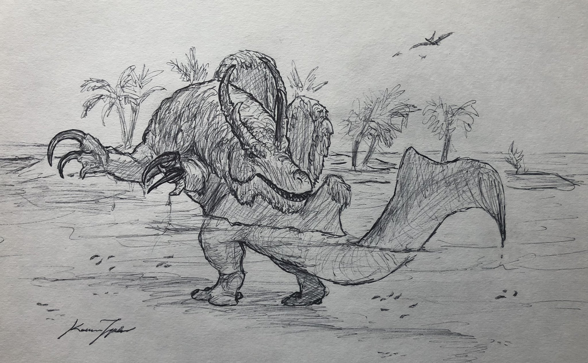
Preening behavior occupies a central role in the biology of the kurajaku. No feather system subjected to continual immersion, repeated transitions between freshwater and marine environments, and frequent contact with prey could remain functional without intensive maintenance. Consequently, grooming behavior is exceptionally elaborate and highly developed.
Adult individuals devote considerable portions of inactive periods to feather maintenance. Grooming sessions commonly occur after feeding, following prolonged swimming, after territorial encounters, and during daily resting periods. The jaws serve as the primary grooming instruments. Despite their immense size and predatory specialization, the anterior portions of the jaws remain capable of surprisingly delicate manipulation. Individual feathers may be grasped and drawn through the margins of the mouth, removing debris and restoring alignment. This process maintains proper barbule interlocking and preserves feather integrity.
The remarkable flexibility of the cervical column allows access to nearly all feather-bearing regions. Individuals can groom the neck, shoulders, sail margins, dorsal trunk, and proximal tail without repositioning the entire body. Such flexibility is essential because large adults are particularly vulnerable when resting or exposing themselves on land.
Preening serves several critical functions simultaneously. The first is waterproofing. The species possesses an exceptionally enlarged uropygial gland situated near the base of the tail. This gland produces large quantities of lipid-rich secretions. During grooming, these oils are collected and distributed throughout the plumage. The resulting coating dramatically increases water repellency. Water beads and sheds rapidly from properly maintained feathers, preventing saturation and preserving thermal performance.
Second, the oils possess antimicrobial properties. The warm, humid environments inhabited by the kurajaku create ideal conditions for bacterial and fungal growth. Without chemical protection, feather degradation would occur rapidly. Glandular secretions inhibit microbial colonization and help preserve feather structure.
Third, preening provides parasite control. Feather mites, ticks, aquatic ectoparasites, and other organisms accumulate within plumage despite the species' semi-aquatic lifestyle. Mechanical grooming removes many of these organisms before infestations become severe. Juveniles, possessing denser feather coverage and less efficient grooming behavior, generally exhibit higher parasite burdens than adults.
Additional glandular systems contribute to feather maintenance. Paired glands located near the jaw base and carpal glands on the forelimbs produce secondary secretions that are incorporated into the plumage during grooming. These substances likely serve antimicrobial and communicative functions. The resulting scent signatures may provide information regarding identity, sex, reproductive status, territorial ownership, and health condition.
Molting occurs continuously rather than seasonally. Given the species' dependence upon functional waterproofing and insulation, simultaneous loss of large feather tracts would be physiologically dangerous. Instead, feathers are replaced gradually throughout the year. Individual tracts undergo asynchronous renewal, ensuring that the overall integument remains operational at all times.
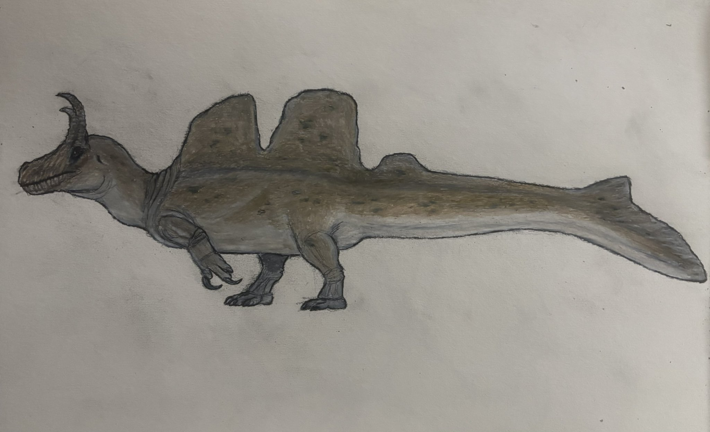
The scales and dermis of the kurajaku represent one of the most extensively modified integumentary systems known among derived theropods. Whereas the feather system is concentrated into thermoregulatory and display regions, the overwhelming majority of the body surface is dominated by highly specialized scales supported by an extraordinarily thick dermal foundation. Together these tissues form a multifunctional protective envelope that serves simultaneously as armor, hydrostatic ballast, thermal regulator, abrasion shield, sensory interface, and structural reinforcement system. In many respects, the integument of the kurajaku resembles a composite biological armor more than the comparatively lightweight skin coverings typical of terrestrial theropods.
The evolution of this system is intimately tied to the species' unusual ecological niche. Unlike terrestrial apex predators, the kurajaku spends much of its life moving through environments capable of imposing severe mechanical stresses on the skin. Riverbeds, estuarine mudflats, submerged forests, rocky shorelines, mangrove root systems, coral fields, and marine sediments all present continuous abrasive challenges. Simultaneously, the animal must withstand attacks from large prey, bites from rivals, impacts from horns and tusks, and the pressures associated with prolonged submersion. These selective pressures have produced an integument that prioritizes durability and structural resilience to a degree rarely observed among feathered theropods.
The epidermal scales covering most of the body are not uniform. Instead, they exhibit extensive regional specialization according to local functional requirements. Across much of the trunk, flanks, and tail, the dominant scale type consists of irregular polygonal scales arranged in tightly interlocking mosaics. Individual scales possess thick beta-keratin layers and deep anchoring into the underlying dermis. Unlike the thin scales of many terrestrial reptiles, these structures are remarkably three-dimensional. Their surfaces are subtly domed and pebbled, creating a rough texture that improves abrasion resistance while minimizing localized stress concentrations.
The dorsal body surface is characterized by particularly robust scalation. Here the scales are larger and more heavily keratinized than those of the ventral body. This region is continuously exposed to ultraviolet radiation, environmental abrasion, and aggressive interactions. The scales exhibit thick outer keratin layers capable of resisting cracking despite repeated exposure to cycles of wetting, drying, heating, and cooling.
Surrounding the sail structures, the scales become even more specialized. The bases of the sails experience significant mechanical loading due to water resistance, muscular tension, and display movements. Consequently, the scales in these regions form dense overlapping arrangements that function almost as biological reinforcement plates. Their keratin layers are thicker than those of adjacent body regions, and they are supported by unusually dense collagenous attachments within the dermis.
The lateral trunk presents a somewhat different condition. Here the scales are smaller and more flexible, permitting body expansion during respiration and locomotion while still maintaining substantial protection. Although flexibility is preserved, these scales remain considerably thicker than those observed in most terrestrial theropods. Their arrangement allows the body wall to deform under muscular contraction without compromising overall structural integrity.
The ventral surface is among the most heavily reinforced regions of the body. Unlike many terrestrial predators that rely upon relatively flexible abdominal skin, the kurajaku routinely encounters abrasive substrates while resting, feeding, or moving along the bottoms of rivers and shallow marine environments. The ventral scales therefore form a dense pavement of broad polygonal elements supported by exceptionally thick dermal tissues. These scales resist abrasion from sand, gravel, shell fragments, roots, and submerged rock surfaces.
Particularly noteworthy is the scalation of the throat and lower neck. These areas are frequently exposed during feeding and social interactions and often contact prey directly. Consequently, the scales become thicker and more tightly packed than those of neighboring feathered regions. In mature individuals, this creates a partial protective collar capable of absorbing significant mechanical stress.
The head exhibits some of the most specialized integumentary adaptations in the species. Facial scales are smaller than those of the trunk but substantially thicker. The snout, orbital margins, jaw surfaces, and cranial ornamentation are sheathed in dense keratinized scales possessing exceptional impact resistance. These tissues protect underlying sensory organs and skeletal structures during prey capture and intraspecific combat.
Around the nostrils and sensory openings, however, scale size decreases dramatically. Fine sensory scales dominate these regions, preserving tactile sensitivity while maintaining protection. Numerous mechanoreceptors are embedded within these smaller scales, allowing detection of subtle pressure changes and water movement.
The limbs possess yet another pattern of specialization. The forelimbs combine flexibility with protection. Proximal segments bear relatively small scales that accommodate muscular expansion, while distal regions support larger scales capable of resisting abrasion during prey manipulation. Around the wrists and manual joints, the scales subdivide into smaller units that preserve mobility without sacrificing durability. The hindlimbs exhibit some of the most heavily reinforced scalation on the body. These limbs transmit enormous forces during terrestrial locomotion and bottom-walking behaviors. Consequently, the scales of the thighs, shanks, and ankles are exceptionally thick and tightly anchored.
The feet are particularly remarkable. The pedal surfaces are covered by enlarged scutes supported by massive keratin deposits. These structures function simultaneously as protective armor and traction devices. Their surfaces remain rough even when submerged, improving grip on slippery substrates. Constant wear from contact with sediment is compensated through continuous keratin growth.
The tail is covered by progressively changing scale types along its length. At the base, scales remain relatively broad and flexible, accommodating the massive musculature responsible for propulsion. Moving distally, the scales become increasingly streamlined and longitudinally aligned. This arrangement minimizes hydrodynamic drag while allowing the tail to undergo powerful lateral undulations. Near the terminal propulsion structures, scale morphology becomes highly specialized. The scales become smaller, smoother, and more tightly packed. Their arrangement reduces turbulence and promotes efficient water flow over the tail surface. These modifications are essential because the tail serves as the primary propulsive organ during aquatic locomotion.
Beneath this epidermal covering lies one of the most extraordinary dermal systems known among theropods. The dermis of the kurajaku is exceptionally thick throughout the body and contributes significantly to overall body mass. Unlike most theropods, whose integument emphasizes lightness and mobility, the kurajaku has evolved a dermis that functions as a major structural tissue.
Histologically, the dermis consists of multiple layers of densely packed collagen fibers arranged in complex cross-laminar patterns. Rather than running in parallel directions, successive collagen sheets intersect at varying angles. This architecture dramatically increases resistance to tearing and puncture. Mechanical stresses applied to one area of skin are distributed across broad regions of the body wall. Consequently, localized injuries are less likely to propagate into catastrophic tears.
Dermal thickness varies considerably according to anatomical region. The thinnest skin occurs around highly mobile joints, sensory structures, and portions of the throat. Even here, however, thickness remains substantial by theropod standards. Across most of the trunk, dermal thickness in mature adults commonly ranges between 20 and 40 millimeters. In exceptionally large males, thickness frequently exceeds 50 millimeters along portions of the lateral body wall.
The shoulders, neck base, and pelvic flanks exhibit even greater development. Measurements from these regions suggest dermal thicknesses of 60 — 80 millimeters in large adults. These tissues form massive collagenous cushions capable of absorbing tremendous impacts. The thickest dermis occurs along the dorsal neck, shoulder girdle, sail bases, and proximal tail. In dominant mature bulls, these regions may exceed 100 millimeters in combined dermal and subdermal connective tissue thickness. Such values rival or surpass those documented in many large mammals renowned for thick skin. The result is a form of passive armor that provides extraordinary resistance to bites, tusks, claws, and blunt impacts.
Importantly, protection does not rely solely upon thickness. The collagen architecture itself possesses remarkable mechanical properties. When penetrated, fibers tend to deform and distribute forces rather than tear cleanly. This greatly increases the energy required for predators or rivals to inflict deep wounds.
Embedded within portions of the dermis are numerous microscopic and mesoscopic mineralized nodules. These structures do not form true armor plates but act as reinforcement elements. Particularly common around the neck, shoulders, and sail bases, they increase resistance to compression while preserving flexibility.
The dermis also contributes significantly to hydrostatic regulation. Its sheer density adds substantial mass to the body and forms part of the species' overall strategy for achieving negative buoyancy. Combined with reduced skeletal pneumaticity and dense musculature, the integument helps prevent uncontrolled flotation. This adaptation is particularly important during bottom-walking locomotion. Animals moving along submerged substrates benefit from remaining securely coupled to the bottom rather than constantly fighting positive buoyancy. The heavy dermal envelope contributes meaningfully to this stability.
The vascularization of the dermis is extensive and highly specialized. Dense networks of blood vessels support thermoregulation, tissue maintenance, wound healing, and scale growth. In many regions, vascular channels extend surprisingly close to the epidermal surface, allowing controlled heat exchange. This is especially important in warm tropical and subtropical waters where overheating may become a significant challenge.
Healing capacity is similarly impressive. The combination of dense vascularization and abundant collagen-producing cells allows wounds to close rapidly relative to body size. Scar formation is common and often results in localized thickening of the dermis. Older individuals frequently accumulate numerous layers of scar tissue, further increasing skin thickness in frequently injured regions.
Ontogenetically, the integument undergoes dramatic changes. Juveniles possess comparatively thinner skin, smaller scales, and greater flexibility. As body mass increases, collagen deposition accelerates and scales enlarge. The transition from juvenile to mature adult is accompanied by progressive thickening of virtually every dermal layer.
By full maturity, the skin of the kurajaku has become one of the defining structural components of the animal. Far from serving merely as an external covering, it functions as an integrated biomechanical system that supports aquatic locomotion, hydrostatic control, thermal regulation, physical defense, sensory performance, and long-term survival in some of the most mechanically demanding environments occupied by any known theropod lineage.
Coloration
The coloration of the kurajaku represents a highly derived integumentary system shaped by the competing demands of aquatic concealment, terrestrial camouflage, social signaling, ontogenetic development, and thermoregulation. Unlike many large terrestrial theropods whose coloration is primarily adapted for concealment within forests or open plains, the kurajaku occupies an ecological interface between water and land. Consequently, its pigmentation is optimized not for a single visual environment but for a complex mosaic of habitats including freshwater wetlands, river systems, estuaries, mangrove forests, seagrass meadows, tidal mudflats, coastal shallows, and offshore marine environments.
Across the genus, coloration is dominated by muted earth-derived and water-associated tones. Gray, charcoal, olive, brown, slate, green-gray, and cream constitute the foundational palette from which most individual variation is derived. These colors correspond closely to the visual characteristics of aquatic environments, where suspended sediments, tannins, algae, submerged vegetation, and variable light penetration create backgrounds dominated by diffuse greens, browns, and grays rather than the sharper contrasts often encountered in terrestrial habitats. Unlike highly cursorial terrestrial predators that rely upon breaking up their silhouette against vegetation or horizon lines, the kurajaku is frequently viewed through water. This distinction has profound implications for pigmentation. Water naturally reduces contrast, shifts spectral perception, and obscures fine patterning. As a result, the species exhibits coloration dominated by broad tonal gradients rather than sharply defined markings. At moderate distances underwater, individuals often appear as indistinct gray-green masses whose outlines merge seamlessly with surrounding vegetation, sediments, and shadow.
The most consistent coloration pattern throughout the genus is a pronounced dorsoventral gradient. Dorsal surfaces are invariably darker than ventral surfaces, producing a form of countershading that functions effectively in both aquatic and terrestrial settings. The dorsal trunk, neck, sail surfaces, and upper tail generally range from dark olive-gray to charcoal brown. In some populations these regions may approach nearly black pigmentation. Such dark coloration reduces visibility when viewed from above, blending with the dark substrates of river channels, mangrove shadows, seagrass beds, and coastal waters.
Conversely, the ventral body is considerably lighter. Cream, pale gray, silver-gray, and muted ivory tones dominate the lower jaw, throat, abdomen, and ventral tail surfaces. When viewed from below through the water column, these lighter regions blend with filtered sunlight and brighter surface conditions. This countershading significantly reduces visual detection by both prey and potential competitors.
The transition between dorsal and ventral coloration is rarely abrupt. Instead, it occurs through a gradual series of intermediate tones across the flanks. This soft gradient further reduces outline recognition by eliminating high-contrast boundaries.
Particularly characteristic is the coloration of the neck and anterior trunk. These regions support the greatest concentration of feathering in the species and consequently display the highest degree of chromatic variation. While females and younger individuals typically retain subdued earth-toned plumage, mature males undergo progressive color transformation throughout adulthood.
In juveniles, cervical feathering is generally composed of muted browns, gray-browns, and olive tones. These colors provide excellent concealment within shoreline vegetation and floating aquatic plant communities. Juvenile plumage often exhibits a mottled appearance in which individual feathers possess slightly different shades of brown, gray, and green. This creates visual noise that disrupts body outlines and enhances camouflage.
As individuals mature, particularly males, the cervical plumage gradually develops increasing concentrations of green pigmentation. This transformation occurs over many years and is closely linked to age, hormonal status, nutritional condition, and social dominance. Rather than producing bright avian greens, the resulting coloration remains relatively subdued. The pigments generate deep moss-green, olive-green, jade-gray, and forest-green hues that remain cryptic within vegetated habitats while simultaneously functioning as social signals. The degree of green development serves as an important indicator of maturity. Young adult males typically display scattered green feather tracts intermixed with brown plumage. Middle-aged individuals exhibit more continuous green coverage across the neck and upper shoulders. Fully mature dominant bulls may possess extensive green feather mantles extending from the cranial crest to portions of the anterior sail complex. These green structures are particularly conspicuous during social interactions. While remaining cryptic against vegetation, they become highly visible at close range to conspecifics, allowing assessment of age and condition without sacrificing camouflage.
Females generally retain much more conservative coloration throughout life. Although some mature females may develop subtle greenish tones within portions of the neck plumage, they rarely approach the intensity observed in dominant males. Instead, female coloration remains dominated by olive-brown and gray-green tones that maximize concealment. This limited sexual dichromatism reflects the ecological demands placed upon females. Because they frequently occupy nursery habitats and invest heavily in offspring protection, cryptic coloration remains advantageous throughout adulthood.
The sail structures represent another important component of the color pattern. Rather than exhibiting bright display coloration, the sails generally maintain muted pigmentation closely integrated with surrounding body colors. The exposed sail surfaces often display marbled, mottled, or clouded patterns composed of gray, brown, olive, and charcoal tones. These patterns appear to function primarily as disruptive camouflage. The large vertical profile of the sails could potentially increase visibility. However, diffuse mottling breaks the sail into irregular visual segments. Underwater, this patterning mimics the shifting shadows produced by vegetation, floating debris, and rippled sunlight. Along shorelines, it resembles weathered bark, mud-stained reeds, and fragmented vegetation.
The margins of the sails frequently exhibit subtle color differentiation. Feathered edges often appear slightly lighter or greener than the central sail surfaces. In mature males these feathered margins may develop significant green pigmentation, creating a visually striking outline during display postures while remaining relatively inconspicuous when the animal is stationary.
The head displays some of the most regionally variable pigmentation in the species. Most individuals possess darker dorsal cranial surfaces contrasted with somewhat lighter cheeks and lower jaw regions. The snout commonly exhibits gray-brown or charcoal pigmentation, while the orbital regions often contain darker periocular shading. This dark facial mask likely serves several functions. First, it reduces visual glare in brightly illuminated aquatic environments. Second, it obscures eye position during hunting. Predatory animals frequently benefit from concealing gaze direction, and dark periocular pigmentation reduces the visibility of eye movement. Third, the facial mask contributes to overall camouflage by disrupting recognizable facial features. Cranial ornamentation frequently displays slightly different pigmentation from adjacent skin. Horns, crests, and keratinized structures generally range from dark horn-brown to black. Older males often exhibit worn surfaces revealing lighter streaking or marbling resulting from age-related abrasion.
The trunk and tail are generally less colorful than the neck. These regions are dominated by gray, charcoal, olive-gray, and brown tones arranged in irregular patterns. Large-scale mottling is especially common. Rather than producing stripes or discrete spots, pigmentation tends to form diffuse blotches and gradients. This coloration is remarkably effective in aquatic environments. When viewed through turbid water, the blotched pattern merges with suspended sediment and vegetation shadows. Against muddy banks or mangrove roots, the same coloration blends seamlessly into the background.
The tail frequently exhibits the strongest dorsoventral gradient in the body. Its upper surface is often significantly darker than the lower surface, enhancing countershading during swimming. Because the tail functions as the primary propulsive organ, reducing its visibility is advantageous during hunting. Prey frequently detect motion before recognizing shape, and disruptive pigmentation helps conceal tail movement.
Population-level variation is substantial. Individuals inhabiting heavily vegetated wetlands often display stronger olive and green influences. These colors correspond closely with algae-covered substrates, seagrass meadows, and mangrove environments. Populations occupying estuarine mudflats and sediment-rich river systems generally exhibit more brown, tan, and gray coloration. These individuals often appear lighter overall, reflecting the visual characteristics of muddy aquatic habitats. Marine populations tend toward slate-gray and charcoal tones. Such coloration blends effectively with open-water environments, rocky coastlines, and offshore shallows.
The most dramatic variation occurs within the Kairulan lineage, Tectopotamus thalattanax. This species exhibits an ontogenetic progression in coloration that parallels its ecological development. Juveniles possess relatively subdued brown and gray coloration suitable for concealment in protected coastal wetland habitats. As growth proceeds, increasing olive and green pigmentation develops within feathered regions. Mature males frequently display extensive green mantles covering much of the neck, shoulder region, and portions of the sail margins. These colors likely function as honest indicators of age and physiological condition. Because pigment maintenance requires substantial energetic investment, extensive green feathering may advertise foraging success, health, and social status. Older males with the most developed green plumage often occupy dominant positions within breeding aggregations.
Eye coloration provides another noteworthy source of variation. Most individuals possess irides ranging from amber and golden-brown to copper, reddish-brown, and dark mahogany. Very dark eyes are particularly common among mature adults. Brightly colored eyes are relatively rare. The exposed sclera remains limited, minimizing conspicuous contrast and preserving the cryptic appearance of the head.
Ontogenetically, coloration undergoes predictable changes. Young animals generally exhibit higher-contrast mottling and greater pattern complexity. These markings improve concealment among shoreline vegetation and fragmented habitats. As individuals mature, patterns become broader and more diffuse. Adult coloration emphasizes mass concealment rather than fine-scale disruption. The oldest males often display the greatest degree of chromatic specialization. Their green cervical mantles, sail-margin feathering, and enlarged display structures create a distinctive appearance unlike that of younger animals. Nevertheless, even these individuals remain fundamentally cryptic.
05 · LIFE HISTORY
Reproduction and Growth
The reproductive biology of the kurajaku represents one of the most extreme life-history strategies known among theropod vertebrates. Reproduction is characterized by exceptionally high parental investment, prolonged juvenile dependency, extreme sexual dimorphism, delayed maturity, and extraordinary post-maturational growth. Unlike most apex predators, reproductive dynamics are shaped not only by the energetic requirements of producing offspring, but also by the radically divergent ecological roles occupied by bulls and cows. The life history of the genus reflects the unique constraints imposed by a semi-aquatic existence.
Cows must periodically abandon the highly productive aquatic environments that sustain adult growth in order to construct terrestrial nests safe from flooding, aquatic predators, and tidal disturbance. Bulls, by contrast, remain largely freed from these reproductive constraints and can devote nearly their entire adult existence to feeding, migration, growth, and mate acquisition. This asymmetry has produced one of the most pronounced examples of sexual divergence among large vertebrates. Throughout their range, reproductive timing is synchronized with hydrological cycles governing wetland productivity, prey abundance, and nesting stability. Chicks emerge into environments experiencing seasonal pulses of biological productivity, ensuring maximum access to food during the most vulnerable stages of development.
Seasonality
Reproduction in the kurajaku is among the most strongly seasonally regulated aspects of its biology and reflects the ecological realities of an enormous semi-aquatic apex predator whose offspring must survive within dynamic aquatic environments. Unlike smaller theropods capable of exploiting short-lived reproductive opportunities, the kurajaku invests extraordinary energetic resources into gamete production, territorial behavior, nest construction, incubation, and juvenile protection. Consequently, successful reproduction is dependent upon precise synchronization with hydrological and ecological cycles that govern productivity throughout its range.
Although the genus occupies habitats extending from tropical inland seas and equatorial mangrove systems to temperate estuaries, coastal wetlands, and continental floodplains, breeding chronology is remarkably consistent in its underlying ecological logic. Across all populations, reproductive timing is determined primarily by water dynamics rather than temperature alone. Seasonal flooding, rainfall patterns, salinity fluctuations, fish recruitment cycles, and wetland productivity exert far greater influence on breeding schedules than ambient temperature.
The fundamental reproductive objective is simple: eggs must be laid during a period when nests can remain stable and incubation can proceed safely, while hatching must coincide with the annual peak in ecological productivity. Virtually every aspect of reproductive seasonality is organized around achieving this outcome.
Across most of the genus' range, courtship activity begins during the terminal phase of the wet season, typically as floodwaters begin stabilizing and seasonal rainfall declines. This period represents one of the most favorable energetic conditions experienced by adults throughout the year. Aquatic food webs remain highly productive following months of nutrient influx, prey populations have expanded dramatically, and both males and females generally attain peak body condition. During this transition period, endocrine activity increases substantially. Mature males enter a state of heightened reproductive readiness characterized by increased territorial patrols, elevated aggression toward rivals, intensified display behavior, and greatly increased scent-marking activity. Simultaneously, females begin developing reproductive follicles and preparing for ovulation.
Importantly, breeding does not generally occur during peak flooding. Although aquatic productivity is often greatest during maximum inundation, such conditions create severe challenges for nesting. Floodwaters may destroy nesting sites, alter substrate stability, increase egg mortality, and expose incubating adults to greater environmental risks. Consequently, natural selection has favored reproduction during the transitional interval when productivity remains high but hydrological conditions become increasingly predictable.
Females are seasonally polyestrous within a relatively narrow reproductive window. Individual estrous cycles may occur multiple times during a breeding season if fertilization fails, but the overall reproductive period remains tightly constrained. Most females exhibit receptivity only during a span of several weeks to several months depending upon latitude and regional climate. The onset of estrus appears heavily dependent upon physiological condition. Large females must accumulate substantial energetic reserves before reproduction can occur. Egg production requires enormous investments of protein, lipids, minerals, and micronutrients. Consequently, females assess internal energetic status through endocrine feedback systems that regulate reproductive activation. If body condition fails to exceed critical thresholds, reproductive cycling may be delayed or entirely suppressed. This condition-dependent reproduction is particularly important in a species whose offspring require prolonged developmental investment. Producing eggs under unfavorable conditions would risk both maternal survival and juvenile mortality. As a result, reproductive restraint is often more adaptive than unsuccessful breeding.
Mating typically reaches its peak shortly after major floodwaters begin receding. At this time, newly exposed shorelines, elevated islands, sediment banks, and stabilized wetland margins provide potential nesting substrates. Simultaneously, prey abundance remains exceptionally high, allowing adults to sustain the energetic costs associated with reproduction.
Regional breeding schedules vary according to local hydrology. In equatorial mangrove systems and tropical estuaries, reproductive timing often follows monsoonal cycles. Courtship begins near the end of the rainy season, mating occurs during the transitional period, and oviposition takes place as waters gradually retreat. In temperate wetlands and tropical floodplain systems, reproduction is frequently delayed until late summer or early autumn. Here, seasonal flooding and temperature regimes combine to create a narrower reproductive window. Nevertheless, the underlying ecological pattern remains identical: nesting begins after peak inundation but before productivity declines substantially. Marine populations exhibit additional complexity. Individuals inhabiting coastal systems often synchronize breeding with seasonal fish migrations, spawning events, and estuarine productivity pulses. These biological cycles can provide vast quantities of food necessary to support reproductive investment. In such populations, timing may shift slightly from year to year depending upon oceanographic conditions, prey recruitment, and regional climate patterns.
Following successful copulation, oviposition occurs during a period of hydrological stability. This timing is critical because incubation periods are exceptionally long for a theropod. Eggs typically require approximately five to six months of incubation before hatching.
Such extended developmental periods mean that conditions present during egg deposition may differ dramatically from those experienced by emerging hatchlings. Consequently, females do not merely optimize conditions for laying eggs. Rather, they optimize conditions for the future emergence of offspring. This distinction explains the remarkable precision of reproductive timing throughout the genus. Eggs deposited during the receding-water phase develop throughout the seasonal transition toward renewed environmental productivity. By the time incubation nears completion, ecosystems are entering a period of increasing biological abundance.
In tropical regions, hatching commonly occurs shortly before or during the expansion of monsoonal wetlands. This timing provides several important advantages. Rising water levels create new nursery habitats, aquatic prey populations undergo explosive recruitment, and dense vegetation provides cover for vulnerable juveniles. Insects, amphibians, crustaceans, fish, and numerous small vertebrates become abundant, creating ideal foraging conditions for rapidly growing chicks. Similarly, in temperate populations, hatching generally coincides with spring productivity. As temperatures rise and aquatic ecosystems reactivate, prey availability increases dramatically. Fish spawning events, amphibian breeding migrations, and seasonal population booms among numerous aquatic organisms provide abundant food resources precisely when juvenile nutritional demands are greatest.
The synchronization between hatching and ecosystem productivity is so pronounced that it represents one of the defining characteristics of Kurajaku reproductive ecology. Young that emerge outside this productivity window face dramatically reduced survival probabilities. Food resources may be scarce, environmental conditions less favorable, and predator pressure proportionally greater. Natural selection has therefore strongly favored breeding schedules that maximize alignment between juvenile emergence and ecological abundance.
Interannual variation occurs but remains constrained. Populations exhibit considerable flexibility in the exact timing of reproductive events. Delayed monsoons, prolonged droughts, unusually severe storms, prey collapses, or major ecosystem disturbances can shift breeding schedules by several weeks or even months. However, these adjustments occur within relatively narrow limits. The long incubation period prevents unlimited reproductive flexibility. If breeding is delayed excessively, hatching may occur after peak productivity has already passed. Consequently, populations balance short-term environmental conditions against long-term developmental requirements.
One of the most remarkable aspects of kurajaku seasonality is the frequency of reproductive suppression. Unlike many reptiles that reproduce whenever conditions permit, the kurajaku frequently forgoes breeding entirely during unfavorable years. Females experiencing nutritional stress often fail to enter estrus. Others may initiate reproductive development but subsequently resorb follicles before ovulation. In extreme cases entire regional populations may exhibit dramatically reduced reproductive participation.
Several environmental factors can trigger suppression. Extended droughts may reduce prey abundance and nesting habitat quality. Flood regimes may become unpredictable. Marine productivity may decline following oceanographic disruptions. Severe storms may destroy traditional nesting sites. Disease outbreaks or ecosystem collapses can similarly reduce reproductive investment. Under such circumstances, females prioritize survival over reproduction. This strategy is especially advantageous for a long-lived species. Mature females can often reproduce successfully in future years if they survive current unfavorable conditions. Attempting reproduction during ecological crises would frequently result in complete reproductive failure while simultaneously compromising maternal health.
Males also exhibit seasonal plasticity. During poor years, territorial behavior, display intensity, and reproductive aggression decline noticeably. Large males may maintain territories but invest less energy in courtship. Subordinate males frequently abandon reproductive competition altogether. As environmental conditions improve, reproductive behaviors rapidly intensify once again.
At the population level, this creates dramatic year-to-year variation in breeding participation. Some years may witness extensive reproductive activity throughout entire regions, while others produce only a fraction of normal nesting output.
Breeding System
The breeding system of the kurajaku is a highly derived form of condition-dependent polygyny structured around extreme sexual size dimorphism, extensive male dispersal, female territorial fidelity, and substantial reproductive investment by both sexes. Although superficially similar to the mating systems observed in many large semiaquatic vertebrates, the reproductive ecology of the kurajaku is distinguished by the enormous geographic scale over which breeding interactions occur and by the unusual integration of marine and freshwater habitats into the reproductive cycle.
At its most fundamental level, the breeding system is organized around a spatial asymmetry between the sexes. Mature cows function as relatively stable reproductive anchors within the landscape, maintaining long-term associations with specific nesting territories and nursery habitats. Mature bulls, by contrast, operate as highly mobile reproductive dispersers whose movements may encompass entire watersheds, coastal regions, inland seas, and in some cases multiple continental drainage systems. This asymmetry produces a breeding structure in which female distribution determines the location of reproduction while male movement determines the flow of genetic material between populations.
Unlike many large terrestrial predators, reproductive opportunity in the kurajaku is not concentrated around temporary breeding grounds or seasonal aggregations alone. Instead, breeding occurs within a network of female-centered territories distributed across productive wetland habitats. These territories serve not only as feeding areas but also as locations containing the environmental conditions necessary for successful nesting and juvenile development.
Suitable reproductive territories typically possess several characteristics simultaneously. They contain stable nesting substrates that remain above seasonal flood levels, access to shallow aquatic nursery habitats, abundant prey resources capable of supporting growing chicks, and sufficient vegetative or geomorphological complexity to reduce juvenile exposure to predators. Because such environments may remain productive for decades or even centuries, females frequently demonstrate remarkable fidelity to particular reproductive landscapes. Many cows occupy overlapping home ranges centered upon the same wetland complexes throughout much of their adult lives. Although territorial boundaries are neither rigid nor constantly defended, mature females exhibit strong spatial attachment to established nesting regions and often return repeatedly to familiar breeding grounds. Long-term occupancy allows intimate knowledge of local hydrology, seasonal prey movements, nesting substrates, and predator distributions. Consequently, the reproductive geography of kurajaku populations is largely defined by female behavior.
Bulls operate under an entirely different ecological framework. Mature males may spend substantial portions of the year exploiting productive marine habitats, estuarine systems, or major river networks far removed from active breeding populations. Outside the breeding season, many bulls function essentially as nomadic apex predators whose movements are driven primarily by prey availability rather than reproductive considerations. As breeding season approaches, however, these movement patterns change dramatically. Hormonal activation initiates extensive reproductive migrations during which males begin searching for receptive cows. These journeys can be extraordinary in scale. Large dominant bulls routinely travel hundreds of kilometers between breeding territories, while exceptional individuals may traverse distances measured in thousands of kilometers over the course of a single reproductive season. This mobility represents one of the most significant features of the kurajaku breeding system. Rather than defending fixed territories year-round, bulls effectively patrol networks of reproductive habitats distributed across vast landscapes. A single male may encounter numerous female territories during one breeding season, moving continuously between river systems, wetlands, estuaries, and coastal breeding grounds.
Because reproductive success depends heavily upon locating receptive females, endurance becomes a major determinant of breeding performance. The energetic costs associated with these movements are immense. Large bulls must simultaneously maintain body condition, travel long distances, compete with rival males, engage in courtship displays, and continue acquiring sufficient prey to sustain their enormous metabolic requirements. Only the most physically capable individuals can consistently achieve these demands. As a consequence, reproductive success is highly skewed. Genetic analyses suggest that a relatively small proportion of males account for a disproportionately large fraction of successful fertilizations within most populations. Prime-aged bulls in peak physical condition often achieve repeated reproductive success across multiple breeding territories, while many younger, smaller, or nutritionally compromised males reproduce rarely or not at all.
Importantly, this reproductive skew does not arise solely from size differences. While body mass and physical condition are undeniably important, successful breeding also depends upon mobility, experience, endurance, health, and social competence. Large males incapable of sustaining extensive seasonal movements may be less reproductively successful than somewhat smaller individuals possessing superior stamina and environmental familiarity.
Competition among bulls is intense but differs significantly from the stereotypical image of constant violent combat. Direct physical confrontation certainly occurs, particularly when similarly matched males encounter one another near receptive females. However, such conflicts remain relatively uncommon relative to the scale of reproductive competition. The reasons are primarily biomechanical and ecological. Kurajaku are apex predators whose survival depends upon maintaining exceptional physical performance. Severe injuries can compromise hunting efficiency, reduce swimming capability, impair territorial mobility, and increase vulnerability to infection. Even victorious combatants may suffer reproductive consequences if injuries reduce their ability to continue searching for females. Consequently, natural selection has favored competitive mechanisms that minimize unnecessary physical risk. Most competition occurs through display, assessment, and persistence. Large males advertise their condition through posture, vocalization, scent marking, sail presentation, feather erection, and spatial dominance.
Rival males engage in prolonged assessment behaviors during which body size, physical condition, and motivational state are evaluated. Frequently, one individual withdraws without direct physical confrontation. This assessment-based competition resembles the systems observed in many large mammals, despite the profound evolutionary differences between the groups.
The ability to maintain reproductive activity throughout the entire breeding season is often more important than winning any single confrontation. Males that remain active, healthy, and mobile over extended periods gradually outcompete rivals through persistence. Weaker individuals often withdraw voluntarily as energetic reserves decline. Older dominant bulls frequently achieve reproductive success not because they defeat every challenger but because they continue functioning effectively long after subordinate males have abandoned competition.
Courtship itself is largely controlled by female choice. Although dominant males gain greater access to reproductive opportunities, fertilization is not solely determined by male competition. Cows exhibit considerable selectivity and frequently reject courting males despite their physical dominance. Several factors appear to influence female mate selection. Physical condition is among the most important. Healthy males signal superior foraging ability, disease resistance, and overall genetic quality. Age also appears influential, as older males possess demonstrated survival capability and extensive ecological experience.
Movement behavior may provide another important source of information. Males capable of repeatedly returning to breeding territories over multiple seasons demonstrate both navigational competence and physiological resilience. Such reliability may serve as an indirect indicator of fitness.
Olfactory communication is believed to play a particularly important role. Kurajaku possess sophisticated scent-marking systems, and females likely obtain substantial information regarding identity, health, reproductive status, and potentially genetic compatibility through chemical cues. Given the immense geographic scale over which males disperse, olfactory assessment may help females distinguish unrelated migrants from closely related local individuals.
The breeding system therefore incorporates multiple layers of selection simultaneously. Male-male competition determines access to reproductive opportunities. Female choice influences final mating outcomes. Environmental conditions regulate overall breeding participation. Energetic constraints limit reproductive monopolization.
These interacting factors prevent any single male from achieving complete reproductive dominance. Even highly successful bulls rarely monopolize entire populations. The enormous geographic scale of breeding habitats, combined with the mobility of both males and females, creates continual opportunities for alternative reproductive success. Younger males may secure fertilizations in peripheral territories. Migrant bulls may introduce novel genetic lineages into established populations. Females may mate with multiple males during a breeding season. Such dynamics promote substantial genetic diversity.
Perhaps the most remarkable consequence of this breeding system is its effect on population connectivity. Because mature bulls routinely move between distant breeding populations, gene flow remains extraordinarily high across much of the genus' range. Populations separated by hundreds or even thousands of kilometers often exhibit surprisingly low levels of genetic differentiation relative to what would be expected for an animal of such immense size. Marine corridors appear particularly important in this regard. Large males frequently utilize coastal routes, inland seas, and estuarine networks as dispersal pathways linking otherwise isolated freshwater populations. These movements effectively transform the ocean from a barrier into a conduit for genetic exchange.
Reproductive Signaling
Reproductive signaling in the kurajaku is among the most sophisticated communication systems known among large predatory archosaurs, integrating acoustic, chemical, visual, tactile, and hydrodynamic components into a multimodal signaling network capable of functioning across vast aquatic landscapes. Because sexually mature individuals may spend much of the year separated by hundreds of kilometers of river channels, estuaries, coastal shallows, inland seas, and wetland complexes, successful reproduction depends upon the reliable transmission of biological information over extraordinary distances. Consequently, reproductive communication has evolved into a highly developed system through which individuals advertise reproductive status, assess potential mates, establish social rank, and minimize the risk of costly physical confrontation.
The signaling environment occupied by the kurajaku differs fundamentally from that of most terrestrial theropods. Sound travels efficiently through water and humid air, chemical cues can persist within stable aquatic systems for extended periods, and visual displays must remain effective in environments characterized by variable turbidity, emergent vegetation, changing light conditions, and extensive sightline obstruction. The result is a communication strategy in which no single signaling modality dominates. Instead, information is distributed redundantly across multiple sensory channels. Reproductive signaling begins well before the onset of actual courtship. As breeding season approaches, endocrine changes alter behavior, scent production, vocal activity, plumage condition, posture, and movement patterns in both sexes. These modifications create a progressively strengthening signal landscape that allows mature individuals to identify one another long before direct interaction occurs.
Among females, reproductive signaling is primarily associated with the onset of estrus. Cows approaching reproductive receptivity exhibit measurable increases in territorial movement and boundary patrol behavior. Areas that may remain relatively inactive throughout much of the year suddenly become focal points of repeated visitation. Females travel established routes linking nesting grounds, feeding areas, resting locations, and territorial margins, depositing scent markers with increasing frequency as reproductive condition intensifies.
Chemical communication appears to constitute the primary long-distance reproductive signal within the species. Specialized glandular secretions produced around the jaw, cloacal region, forelimbs, and tail base undergo substantial hormonal modification during the breeding season. The biochemical composition of these secretions changes predictably with reproductive state, producing chemical signatures that encode information regarding sex, identity, physiological condition, hormonal status, and fertility timing. These chemical signals are exceptionally well suited to the environments occupied by the species. River currents, tidal movements, shoreline vegetation, mudbanks, and repeatedly used travel corridors all function as reservoirs and transmission pathways for scent information. Mature bulls moving through a watershed may encounter chemical evidence of numerous females without ever making direct visual contact. In some regions, heavily utilized reproductive corridors become saturated with overlapping chemical signals during peak breeding periods, creating information-rich environments through which bulls can assess the reproductive landscape. The importance of olfactory communication is reflected in male movement behavior. Reproductive migrations are not random exploratory events but appear heavily guided by chemical information accumulated throughout the environment. Bulls frequently alter travel routes after encountering fresh scent deposits and often investigate territorial boundaries extensively before approaching resident females.
Acoustic communication represents the second major component of the reproductive signaling system. Both sexes increase vocal activity substantially during the breeding season, although the structure and function of these vocalizations differ. Female calls primarily advertise reproductive receptivity and territorial occupancy. Male vocalizations communicate physical condition, body size, social status, and continued presence within a reproductive landscape. The calls themselves are among the lowest-frequency sounds produced by any terrestrial-origin predator. Many components occupy frequency ranges capable of traveling considerable distances through humid air while simultaneously coupling effectively into water. This dual transmission pathway is particularly advantageous in estuarine and wetland environments where both aerial and aquatic receivers may be present. Female reproductive calls are generally prolonged, resonant, and rhythmically repeated. Their primary function appears to be advertisement rather than intimidation. Calling rates increase as estrus approaches and often peak immediately before maximum fertility. The energetic costs associated with repeated vocalization ensure that call intensity functions as an honest signal of physiological condition. Females in poor nutritional condition typically vocalize less frequently and produce shorter display sequences. Male vocalizations differ considerably in structure. Mature bulls produce deeper and more powerful calls characterized by extensive low-frequency components. These sounds communicate body size with remarkable reliability. Because larger vocal resonating chambers inherently produce lower dominant frequencies, vocal performance serves as an honest indicator of physical dimensions that cannot easily be falsified. In many populations, mature bulls engage in prolonged vocal exchanges that may continue for hours. These interactions appear to function primarily as mutual assessment rather than direct aggression. Individuals compare vocal stamina, resonance, repetition rate, and overall performance. Frequently, one male gradually withdraws from the interaction without any escalation to physical conflict.
Hydrodynamic signaling likely represents a uniquely important but often overlooked component of reproductive communication. Because kurajaku spend much of their lives in aquatic environments, movement itself generates information. Large individuals produce distinctive pressure waves, surface disturbances, wake patterns, and substrate vibrations that may be detectable over considerable distances. Reproductive individuals appear unusually sensitive to these signals. Observations suggest that mature bulls can often identify the approximate size and movement direction of distant conspecifics based solely upon hydrodynamic disturbances. Similarly, females may assess approaching males long before visual contact occurs. Such signaling likely provides an additional layer of information within turbid environments where direct observation is frequently impossible.
Visual signaling becomes increasingly important as distance between individuals decreases. The visual display system of the kurajaku is strongly influenced by sexual dimorphism and age-dependent ornament development. Mature bulls possess substantially more elaborate display structures than females, particularly within the feathered regions associated with the head, neck, and dorsal display surfaces. These structures function as condition-dependent ornaments.
Unlike fixed skeletal features, feather-based display structures respond dynamically to health, nutrition, hormonal state, parasite burden, and age. Consequently, they provide unusually reliable information regarding overall physiological quality. Among mature males, the cervical plumage becomes the principal visual signaling structure during the breeding season. Hormonal changes stimulate feather condition, pigmentation intensity, and display behavior. Healthy dominant bulls often exhibit extensive development of richly colored cervical feathering that can be erected, expanded, and manipulated during social interactions. The biological significance of this ornament lies in its cost. Maintaining extensive feather condition requires nutritional surplus, effective parasite control, regular preening, intact endocrine function, and overall physiological health. Individuals suffering from disease, malnutrition, chronic stress, or injury typically experience rapid degradation of plumage quality. Feather condition therefore serves as an honest signal of current health rather than merely genetic potential.
Visual displays are further enhanced through specialized postural behaviors. When signaling reproductive readiness or social dominance, mature bulls elevate the head, arch the cervical region, expand the torso, and partially raise the dorsal display structures. These postures exaggerate body dimensions while simultaneously showcasing musculature, symmetry, and overall physical condition. Particularly important is movement quality. Because the species depends upon exceptional locomotor performance for both hunting and long-distance migration, females appear highly sensitive to subtle indicators of mechanical competence. During reproductive interactions, bulls frequently perform slow, deliberate movements that highlight balance, flexibility, muscular control, and coordination. These displays are functionally analogous to gait assessment in many large mammals. A bull capable of moving smoothly through complex aquatic and terrestrial environments demonstrates neurological integrity, structural health, and freedom from debilitating injury.
Scarring also contributes to reproductive signaling. The bodies of mature bulls frequently bear evidence of previous conflicts, hunting injuries, and environmental hazards. However, scars function as positive signals only when fully healed and integrated into otherwise healthy tissue. Well-healed scars may indicate resilience, survival ability, and long-term dominance. Fresh wounds, infections, or poorly healed injuries communicate the opposite.
Close-range interactions introduce additional signaling modalities. As individuals approach one another, direct scent assessment becomes increasingly important. Face-to-face investigation, jaw contact, flank inspection, and prolonged olfactory sampling allow detailed evaluation of chemical cues that cannot be assessed at distance. These close-range examinations likely provide information regarding immune function, genetic compatibility, stress levels, and precise reproductive timing. Females frequently engage in extensive chemical assessment before permitting further social interaction, suggesting that olfactory information may ultimately carry greater weight than visual display alone.
Importantly, the entire reproductive signaling system functions to reduce physical conflict. In a predator of such enormous size, injury represents a major threat to survival and future reproductive success. Natural selection has therefore favored communication systems capable of transmitting large amounts of biological information before direct confrontation becomes necessary. By the time two mature bulls encounter one another physically, they have often already exchanged chemical, acoustic, visual, and hydrodynamic signals for days or even weeks. Similarly, females typically possess substantial information regarding a male's condition before courtship formally begins.
Courtship and Mating Behavior
Courtship in the kurajaku is among the most elaborate and prolonged reproductive behaviors known among large aquatic archosaurs. Unlike many apex predators in which courtship serves primarily to identify reproductive readiness, courtship in the kurajaku functions as a comprehensive assessment process through which both sexes evaluate physical condition, neurological integrity, locomotor competence, social status, genetic quality, and behavioral restraint. Because mature individuals are enormous, heavily armed predators capable of inflicting catastrophic injuries, successful reproduction depends upon a gradual progression of ritualized interactions that minimize risk while maximizing the accuracy of mate assessment.
Courtship occurs almost entirely within aquatic environments. While reproductive signaling may begin over vast distances through acoustic and chemical communication, actual courtship generally unfolds within shallow coastal waters, estuaries, river channels, lagoons, marsh complexes, submerged floodplains, and protected nearshore environments. Water fundamentally shapes every aspect of the process. Buoyancy reduces the mechanical risks associated with close interaction between massive animals, while the aquatic medium simultaneously enhances acoustic transmission, chemical communication, and hydrodynamic signaling.
The courtship sequence typically begins after a mature bull locates a receptive cow through a combination of scent tracking, vocal communication, and territorial investigation. Initial contact rarely involves direct approach. Instead, both individuals spend considerable time observing one another from a distance. This assessment phase can persist for many hours and occasionally several days. During this period the cow remains the primary evaluator. Although bulls actively display, females ultimately determine whether courtship progresses. The bull therefore attempts to remain within visual and chemical range while avoiding behaviors that might be interpreted as threatening or unstable.
Much of the initial assessment centers on locomotion. Movement quality provides extraordinarily reliable information regarding physical condition because virtually every major physiological system contributes to effective aquatic locomotion. A bull's cardiovascular fitness, respiratory performance, neurological coordination, skeletal integrity, muscular development, sensory function, and overall health are all reflected in the manner in which he moves through water. Consequently, cows devote substantial attention to evaluating swimming posture, bottom-running mechanics, turning precision, acceleration control, buoyancy regulation, and general coordination.
Particularly important is bilateral symmetry. Individuals suffering from injury often display subtle asymmetries in stride length, tail movement, body alignment, or forelimb deployment. Even minor deviations become apparent during prolonged observation. Since injuries can dramatically reduce hunting efficiency and long-term survival, females strongly favor individuals exhibiting smooth, balanced, symmetrical locomotion.
Hydrodynamic efficiency also appears to be evaluated. Healthy dominant bulls move through water with remarkable stability. Their movements generate consistent wake patterns, controlled pressure waves, and highly coordinated tail oscillations. Animals exhibiting excessive body roll, unstable heading control, or inefficient propulsion generally experience reduced reproductive success.
Once a bull has remained within a female's vicinity without triggering avoidance behavior, he begins active display. The first stage of display emphasizes controlled body presentation rather than dramatic movement. The bull typically positions himself laterally relative to the female, maximizing the visible profile of his body. This orientation highlights overall length, trunk depth, neck thickness, sail development, tail dimensions, and general physical proportions. Because body size is strongly correlated with age, hunting success, and social dominance, simple lateral presentation conveys substantial information.
Unlike terrestrial display systems that often rely upon rapid movement, aquatic displays frequently emphasize stillness. A mature bull may maintain an almost motionless posture while subtly adjusting buoyancy and finelike control surfaces. Sustaining such stability requires continuous neuromuscular regulation. The ability to remain perfectly balanced within moving water serves as an honest demonstration of physical competence.
Following lateral presentation, display behavior becomes increasingly dynamic. The bull begins a series of slow, deliberate maneuvers designed to showcase maneuverability and coordination. These include controlled turns, precise changes in depth, gradual body rotations, and carefully regulated accelerations followed by equally controlled decelerations. These movements are not intended to demonstrate speed. Rather, they demonstrate mastery.
A large kurajaku possesses enormous momentum. Rapid changes in direction require substantial muscular power and precise neurological control. The ability to execute such maneuvers smoothly without visible instability communicates both physical strength and refined motor coordination.
Neck displays become increasingly important during this phase. The cervical region contains many of the species' most conspicuous display structures, and mature bulls invest considerable effort in presenting these features to potential mates. The neck may be arched dramatically, twisted laterally, elevated toward the surface, or curved into exaggerated display postures that maximize the visibility of ornamented feather tracts.
Feather erection reaches its greatest expression during courtship. Specialized musculature allows cervical plumage to expand substantially, increasing apparent body dimensions and enhancing visual contrast. The extent and quality of this display provide direct information regarding nutritional status, endocrine health, parasite resistance, and overall physiological condition.
Coloration plays a particularly important role. The characteristic green pigmentation associated with mature males functions as one of the most reliable visual indicators of age and condition. Because maintaining extensive pigment expression requires substantial energetic investment, only individuals in excellent physical condition can sustain the most elaborate displays. Females appear highly attentive to these differences. Older dominant bulls frequently possess extensive display fields that extend across much of the neck and dorsal display surfaces. Younger or nutritionally stressed males often exhibit reduced expression, creating an immediately visible indicator of relative quality.
Acoustic displays intensify as visual assessment progresses. At closer distances, vocalizations become more frequent and structurally complex. Rather than simply advertising location, these calls now communicate information regarding stamina, respiratory efficiency, and physical condition. Some courtship vocalizations continue for extended periods. The energetic cost of repeatedly producing powerful low-frequency calls serves as an honest indicator of physiological capacity. Bulls unable to sustain prolonged vocal performance generally fail to compete successfully with larger, healthier rivals.
Hydrodynamic displays also become increasingly elaborate. Mature bulls frequently generate controlled waves, pressure pulses, and water disturbances through carefully choreographed body movements. These displays may involve tail sweeps, forelimb movements, controlled surfacing events, or synchronized oscillations of the body and sails. Such behaviors appear particularly important in turbid environments where visual communication is partially restricted. Because pressure waves travel efficiently through water, females can assess the force, precision, and coordination of display movements even when visibility is limited.
Competition between males frequently occurs during this stage. Most rival interactions remain highly ritualized. When two bulls encounter one another near a receptive female, direct combat is usually preceded by extensive display exchanges. Rival males often position themselves parallel to one another while simultaneously presenting their bodies toward the female. These confrontations may continue for many hours. Participants compare body size, display intensity, vocal performance, maneuverability, and endurance. Frequently one individual gradually withdraws after prolonged assessment, avoiding physical conflict entirely.
When neither bull yields, displays escalate. Body postures become increasingly exaggerated. Vocalizations intensify. Tail movements become more forceful. Individuals may approach within a few body lengths while maintaining rigid display postures. Only after all assessment mechanisms have failed does physical conflict occur.
Actual combat is dangerous and often violent. Bulls employ biting, pushing, grappling, and body impacts. Because these encounters typically occur in shallow water, participants exploit both aquatic maneuverability and substrate traction. However, even during combat, restraint remains evident. The evolutionary costs of serious injury are immense. A damaged jaw, impaired tail, infected wound, or compromised limb can drastically reduce hunting success. Consequently, most fights conclude before catastrophic injury occurs. The victor is not necessarily the strongest individual in absolute terms but often the one capable of sustaining dominance displays and controlled aggression for the longest period.
Once a female accepts a male, courtship transitions into an intimate phase characterized by close-range interaction. The pair begin swimming together for extended periods. This synchronized movement phase is among the most distinctive components of kurajaku courtship. Individuals match speed, heading, depth, and body posture with remarkable precision. Such synchronization requires continuous mutual adjustment and serves as a final test of behavioral compatibility and neurological coordination.
Physical contact gradually increases. Initial contact typically involves gentle brushing of the neck, snout, and facial regions. This is followed by prolonged periods of close parallel swimming during which both individuals repeatedly sample one another's scent. Chemical assessment remains critical throughout this stage. Both sexes investigate glandular regions around the jaw, neck, tail base, and cloacal area. These examinations provide detailed information regarding hormonal condition, immune function, stress levels, and reproductive readiness.
Controlled jaw contact is common. Partners frequently touch, grasp, or gently hold one another's snouts, necks, and facial regions. These interactions demonstrate bite inhibition and behavioral restraint. Given the extraordinary power of the jaws, the ability to modulate force accurately is itself an important signal.
As courtship reaches its final stage, synchronized movement becomes increasingly precise. Pairs often travel together for several days, maintaining close association while repeatedly engaging in tactile, chemical, visual, and acoustic communication. During this period, the female retains complete control over progression toward mating.
Copulation itself is relatively brief compared to the courtship process that precedes it. The act typically occurs in shallow water where both individuals can maintain stable positioning. The bull approaches from behind while carefully distributing body mass to avoid destabilizing the female. Buoyancy substantially reduces mechanical stress, allowing successful copulation even among the largest individuals. Multiple copulations commonly occur over several days. Repeated mating increases fertilization probability while allowing continued assessment of partner condition. Throughout this period, the pair often remain loosely associated and may continue engaging in many of the same synchronized behaviors observed during courtship.
Unlike many birds and some mammals, no permanent pair bond forms. However, reproductive associations frequently persist longer than those observed in most large theropods. A successful bull may remain within a female's territory for days or even weeks following copulation, particularly if additional reproductive opportunities remain possible. Eventually the association dissolves. The female gradually redirects attention toward nesting territory preparation, energetic accumulation, and reproductive investment. The bull resumes his extensive ranging behavior, continuing his search for additional receptive females elsewhere within the vast aquatic landscapes occupied by the species.
Post Mating Behavior and Gravidity
Following successful copulation, the behavioral relationship between male and female kurajaku differs markedly from that observed in many other large Apeirovenatorids. Whereas species such as the zentaur will often maintain temporary reproductive associations extending into the early stages of gravidity deeding on the individuals, kurajaku exhibit an almost immediate post-copulatory dissolution of pair bonds. Once fertilization has been achieved and reproductive behavior concludes, the interests of the two sexes diverge rapidly. Bulls resume their nomadic existence across aquatic habitats, while cows begin a prolonged physiological transition toward egg production, nesting, and eventual parental investment.
This separation reflects the profound sexual specialization that characterizes the species. The reproductive role of males is fundamentally centered upon locating receptive females across vast geographic ranges, successfully competing for mating opportunities, and transmitting genetic material between otherwise isolated populations. Females, by contrast, bear nearly the entire energetic burden of reproduction. Egg production, nest construction, incubation, nest defense, and juvenile care all fall primarily upon the cow. Consequently, once fertilization occurs, continued male association provides relatively little benefit while potentially increasing competition for local resources.
Post-copulatory separation is therefore generally rapid and deliberate. Many bulls depart within hours of mating. Others may remain in the vicinity for several days if additional receptive females are present within the same watershed or coastal region. However, prolonged pair maintenance appears uncommon. Even exceptionally successful courtships rarely result in stable associations extending beyond the immediate reproductive period. Behavioral observations suggest that cows actively encourage this separation. As reproductive hormones associated with ovulation decline and gravidity progresses, female tolerance toward male proximity decreases noticeably. Courtship behaviors disappear, vocal interactions become infrequent, and territorial responses gradually intensify. Males that remain excessively close often encounter increasing aggression, ultimately encouraging departure.
This transition marks the beginning of gravidity. Gravidity in the kurajaku lasts approximately five to six months and represents one of the most metabolically demanding phases in the entire life history of the species. During this period the female must simultaneously maintain her own immense body mass while producing one of the largest reproductive investments known among predatory archosaurs. Unlike mammals, where much of embryonic development occurs internally, the energetic burden of gravid kurajaku centers upon the production of enormous yolk reserves and heavily mineralized eggs. The physiological costs are immense. Developing follicles accumulate extraordinary quantities of lipids, proteins, trace minerals, calcium, phosphorus, sodium, and other nutrients necessary to support embryonic growth. Eggshell formation alone requires substantial mobilization of calcium reserves.
As gravidity progresses, mineral metabolism undergoes dramatic reorganization throughout the body. Specialized endocrine pathways regulate this process. Elevated concentrations of reproductive hormones stimulate ovarian growth, increase nutrient assimilation efficiency, and redirect metabolic resources toward follicular development. Simultaneously, skeletal tissues become temporary reservoirs from which calcium and phosphorus may be mobilized for shell production.
The cardiovascular and respiratory systems undergo corresponding adjustments. Blood volume increases noticeably during gravidity. Enhanced circulation supports the transport of nutrients to developing follicles while simultaneously maintaining the metabolic demands of the adult body. Respiratory efficiency remains high despite increasing abdominal volume, ensuring adequate oxygen delivery to both maternal tissues and developing reproductive structures. Externally, early gravidity produces relatively subtle changes. For the first several months, gravid females often remain difficult to distinguish from non-reproductive individuals. The ovaries enlarge gradually, and overall body mass increases incrementally rather than abruptly. Most changes initially occur internally.
As gravidity advances, however, visible transformations become increasingly apparent. The abdominal cavity expands significantly as developing follicles accumulate mass. Body profile becomes deeper and broader, particularly through the posterior trunk. The center of gravity shifts slightly rearward and ventrally. These changes alter locomotor dynamics, buoyancy regulation, and overall movement patterns.
Hydrostatic considerations are particularly important. Because kurajaku are highly specialized aquatic predators whose locomotion depends upon precise control of buoyancy and body orientation, increasing reproductive mass creates unique mechanical challenges. Developing eggs alter weight distribution throughout the body and can significantly influence underwater stability. Gravid females compensate through behavioral modification. Swimming depth becomes more conservative. Rapid accelerations become less common. Complex maneuvers requiring abrupt changes in direction are increasingly avoided. The animal instead favors steady, energy-efficient movement patterns that minimize metabolic expenditure while maintaining hydrodynamic stability.
Perhaps the most dramatic changes occur in feeding behavior. The nutritional requirements of gravidity are extraordinary. Large quantities of energy must be acquired and converted into yolk reserves. Consequently, feeding rates often increase substantially during the first half of gravidity. Females become highly selective regarding prey choice. Rather than maximizing prey numbers, they increasingly target food sources providing exceptional nutritional returns. Large fish aggregations, marine reptiles, aquatic mammals, dense concentrations of waterfowl, and nutrient-rich carrion become particularly valuable resources. Prey rich in lipids and proteins are strongly favored. This dietary shift appears directly linked to yolk formation. Developing eggs require enormous quantities of stored energy, and females actively seek food sources capable of supplying these resources efficiently.
Injury during gravidity threatens not only maternal survival but also the viability of the developing clutch. Consequently, females increasingly avoid situations that carry elevated risk of trauma. Large dangerous prey that might normally be pursued are frequently ignored. Competitive interactions with other apex predators become less common. Territorial confrontations are shortened. Feeding opportunities requiring extreme exertion are often abandoned in favor of safer alternatives.
Energetic efficiency becomes the dominant organizing principle of behavior. As gravidity progresses into later stages, movement patterns become increasingly restricted. Home ranges contract substantially. During non-reproductive periods females may range across extensive aquatic systems, moving between river channels, estuaries, wetlands, coastal lagoons, and offshore feeding grounds. By contrast, late-stage gravid females gradually reduce these movements and begin concentrating activity within regions that contain suitable nesting habitat.
Nest-site evaluation begins surprisingly early. Females often investigate potential nesting areas months before oviposition occurs. Elevated shorelines, stable islands, marsh ridges, river terraces, coastal berms, and other flood-resistant locations receive repeated inspection. These exploratory visits become increasingly frequent as egg development progresses. Selection pressures governing nest-site choice are complex because kurajaku reproduction requires balancing multiple competing environmental variables simultaneously. Sites must remain above seasonal flood levels. They must possess substrates suitable for excavation. They must allow relatively easy access from aquatic habitats. They must be defensible against predators and rival females. They must also remain thermally stable throughout incubation. No single factor appears sufficient by itself. Instead, females evaluate nesting landscapes through a sophisticated integration of hydrological, geological, ecological, and thermal criteria.
As oviposition approaches, behavioral withdrawal becomes increasingly pronounced. Late-stage gravid females spend less time in open-water habitats and increasingly concentrate activity near selected nesting regions. Long-distance travel largely ceases. Feeding remains important but becomes focused on locations close to future nest sites.
Social interactions decline significantly during this phase. Even females that normally tolerate neighboring individuals become increasingly territorial. Aggressive responses toward conspecifics intensify. Vocalizations associated with reproduction diminish, replaced by behaviors focused on territory establishment and site defense.
Physiologically, the final weeks of gravidity are characterized by accelerated eggshell deposition and rapid completion of yolk formation. Metabolic demands reach their highest levels during this interval. Food consumption often increases further, although physical activity simultaneously decreases. The female enters a period of energetic accumulation, converting acquired resources into the final reproductive investment that will eventually be deposited within the nest. By the time oviposition approaches, the transformation is profound. The highly mobile aquatic predator that entered the breeding season months earlier has become a reproductive specialist focused almost entirely upon the successful production of eggs. Hunting behavior, movement patterns, territorial dynamics, habitat selection, physiology, and energy allocation have all been reorganized around a single objective: the successful deposition of a viable clutch.
The gravidity period therefore represents a critical transitional phase linking mating and nesting. It is a prolonged interval of physiological reconfiguration during which reproductive investment steadily accumulates and maternal behavior increasingly shifts away from aquatic predation and toward terrestrial reproductive preparation. By the conclusion of gravidity, the female has already committed enormous energetic resources to the next generation, setting the stage for the equally demanding processes of oviposition, incubation, and parental care that follow.
Nesting Behavior and Incubation
Nesting represents the most terrestrial phase of the kurajaku life cycle and constitutes one of the most extraordinary behavioral transitions exhibited by any member of Apeirovenatoridae. For most of the year adult females function as highly aquatic apex predators, spending the overwhelming majority of their lives within rivers, estuaries, coastal shallows, inland seas, marshes, and floodplain systems. Reproduction temporarily reverses this ecological specialization. As gravidity approaches completion, females abandon much of their aquatic existence and undertake a deliberate migration toward carefully selected terrestrial nesting grounds. This transition exposes them to a variety of risks normally absent from their aquatic lifestyle, but it remains essential because embryonic development cannot occur successfully within permanently submerged environments.
Nest site selection begins long before oviposition. Evidence suggests that females may investigate potential nesting locations several months before eggs are laid. During the latter half of gravidity, repeated excursions to terrestrial habitats become increasingly common. Individual cows often inspect numerous potential nesting areas before committing to a final site. Site selection is extraordinarily conservative. Many females return repeatedly to the same nesting regions throughout their lives, suggesting long-term memory of successful nesting locations. Some nesting grounds may remain active for generations, functioning as traditional reproductive centers utilized by multiple females over extended periods.
The environmental requirements governing nest placement are exceptionally strict. Flooding represents perhaps the greatest threat to reproductive success. Consequently, nesting sites are almost always positioned above predictable flood levels. Elevated river levees, ancient shoreline ridges, coastal berms, stabilized dunes, forested islands, sedimentary terraces, and raised wetland margins are among the most commonly utilized locations.
Drainage characteristics are equally important. Substrates must retain sufficient moisture to support microbial decomposition while simultaneously preventing prolonged water saturation. Excessively dry soils inhibit decomposition and destabilize thermal regulation. Excessively wet soils increase the risk of fungal growth, egg suffocation, structural collapse, and catastrophic flooding. The ideal nesting substrate consists of moderately cohesive sediments capable of maintaining mound integrity while remaining sufficiently workable for excavation and manipulation.
Solar exposure also influences site selection. Unlike many terrestrial reptiles that rely almost entirely upon solar heating, kurajaku incubation depends primarily upon microbial thermogenesis. Nevertheless, moderate solar exposure remains advantageous because it contributes supplemental heat and helps maintain stable internal nest temperatures. Females generally avoid both dense forest shade and completely exposed open environments. Instead, they favor ecotonal habitats where intermittent sunlight can reach the mound while vegetation provides protection from overheating, desiccation, and visual detection.
Following site selection, nest construction begins. Nest building represents one of the most physically demanding activities performed by gravid females. Despite their enormous size, the process may require several days of continuous labor and substantial energetic expenditure. The resulting structure is not merely a nest but a highly engineered incubation system.
Mature nesting mounds frequently reach remarkable dimensions. Large females may construct structures measuring 6 — 10 meters in diameter and 2 — 4 meters in height, with exceptional individuals occasionally exceeding these dimensions. Such mounds represent the largest reproductive structures produced by any predatory archosaur in Kaimere.
Construction begins with excavation of the surrounding area. Forelimbs rake vegetation, sediments, roots, leaf litter, driftwood, peat, reeds, and organic debris toward a central location. Hindlimbs then push and compact material into a growing mound. The tail frequently serves as a stabilizing structure during these operations, allowing females to manipulate enormous quantities of material with surprising precision. The mound develops through successive layers. Mineral sediments form the structural foundation. Above this base, females accumulate thick deposits of organic matter including grasses, reeds, leaves, aquatic vegetation, woody debris, mosses, and partially decomposed plant material. Additional sediment layers are subsequently added to stabilize the structure and regulate moisture retention. This stratified architecture is critical. The organic core functions as a heat-generating compost mass, while outer mineral layers regulate moisture and thermal exchange. Together these components create a remarkably stable incubation environment capable of maintaining favorable developmental temperatures for many months.
As construction progresses, females deliberately shape the mound into a broadly conical or dome-like structure. The elevated geometry serves multiple functions. Rainwater is directed away from the egg chamber. Groundwater intrusion is minimized. Thermal stability is enhanced. Structural collapse becomes less likely. The entire mound effectively functions as a biological incubator specifically engineered to withstand seasonal weather fluctuations. The chamber itself is carefully lined with softer materials. Finely shredded vegetation, mosses, reeds, and partially decomposed plant matter create a cushioned substrate that protects eggs from mechanical stress while facilitating proper moisture regulation.
Oviposition typically occurs shortly after mound completion. The process generally unfolds over a relatively long period lasting several hours to a few days. During oviposition, the female remains highly vigilant and may interrupt egg laying to investigate potential disturbances. Because terrestrial mobility is reduced during late gravidity, vulnerability is temporarily elevated.
Clutch size typically ranges from approximately five to fifteen eggs. However, clutch composition reflects substantial maternal investment strategies rather than simple numerical output. Large, well-conditioned females frequently produce smaller clutches consisting of exceptionally large eggs. Such individuals invest heavily in individual offspring quality. Females experiencing moderate environmental conditions may produce somewhat larger clutches containing slightly smaller eggs, they may even produce "fairy-eggs” depending on how nutrient deprived they are. In years of poor resource availability, many females suppress reproduction entirely rather than risk producing low-quality offspring.
Egg morphology reflects the enormous size and prolonged developmental period of the species. Kurajaku eggs are among the largest known archosaur eggs in Kaimere. Individual eggs are elongated ovoid structures typically measuring approximately 45 — 65 centimeters in length and 20 — 30 centimeters in diameter, though exceptional females may produce even larger specimens. Mass commonly ranges between 8 and 18 kilograms per egg. The shell is heavily calcified and extraordinarily robust. Shell thickness often exceeds that observed in most terrestrial theropods, reflecting both the large embryonic mass and the demanding incubation environment. The shell must withstand prolonged exposure to decomposing organic material, fluctuating moisture conditions, microbial activity, and occasional compression from overlying nest materials. Despite this thickness, gas exchange remains highly efficient. The shell contains an extensive network of microscopic pores arranged in patterns that optimize oxygen diffusion while minimizing water loss and microbial infiltration. Coloration is distinctive. Freshly laid eggs are typically pale ivory, cream, or off-white, overlaid with irregular green, olive, or muted gray spotting. These markings vary considerably among females and may reflect differences in pigment chemistry, genetics, health, and environmental conditions. The green spotting likely serves several functions. Camouflage is one possibility, particularly during periods when eggs become partially exposed during maintenance. Pigments may also strengthen portions of the shell or provide antimicrobial benefits.
Once oviposition is complete, the eggs are arranged within the chamber and covered. Unlike birds that brood directly upon eggs, kurajaku rely primarily upon microbial incubation. Large quantities of fresh vegetation are added above the clutch. As decomposition proceeds, microbial communities generate substantial metabolic heat. Temperatures within active nests often exceed ambient conditions by considerable margins.
The female continuously regulates this process. Incubation lasts approximately 150 — 170 days, making it one of the longest incubation periods among large predatory archosaurs. Throughout this interval the nest functions as a living thermodynamic system requiring constant management. Temperature regulation is especially important. Excessive decomposition can generate dangerous heat levels capable of killing embryos. Insufficient decomposition can slow development or result in mortality through chilling. Females actively manipulate vegetative cover to maintain favorable conditions. Additional vegetation may be added during cool weather. Excess material may be removed during unusually warm periods. Portions of the mound are frequently opened, inspected, and reconstructed as conditions change. Moisture regulation receives equal attention. Rainfall, drought, and seasonal weather patterns continuously influence mound stability. Females repair erosion, reinforce weakened sections, and alter drainage pathways as necessary. Nest maintenance becomes a nearly continuous activity.
Perhaps the most remarkable aspect of incubation behavior is the extensive use of torpor. Unlike zentaur, which often remain fully active throughout incubation, nesting kurajaku frequently enter prolonged periods of reduced metabolic activity. During these intervals the female remains close to the mound, often partially concealed nearby. Activity levels decrease dramatically. Feeding becomes infrequent. Energy expenditure is minimized. This torpor-like state serves several functions. It conserves energy during a period when hunting opportunities are reduced. It minimizes unnecessary movement away from the nest. It allows the female to remain near the clutch continuously for months.
Despite this apparent inactivity, vigilance remains extraordinarily high. Incubating females are among the most dangerous animals in the Known World. Nest defense behavior reaches extreme levels during this period. Virtually any potential threat may trigger aggressive responses. Predators, scavengers, rival kurajaku, ba'khar, large herbivores, and even non-threatening animals approaching too closely may be attacked without hesitation. Unlike courtship aggression or territorial disputes, incubation aggression exhibits very little restraint. The female's entire annual reproductive investment is concentrated within the nest. Loss of the clutch represents a catastrophic reproductive failure. Consequently, natural selection strongly favors uncompromising defensive behavior. Attacks are often immediate and overwhelming. Females frequently launch ambushes from concealed positions near the nest. Many predators learn to avoid active nesting territories entirely, creating localized zones of reduced animal activity around occupied mounds.
Egg maintenance includes periodic repositioning. Using the snout and forelimbs, females gently rotate eggs within the chamber. This behavior promotes even temperature distribution, prevents membrane adhesion, and improves embryonic development. The practice continues throughout incubation.
By the final weeks, the mound has become a highly stable developmental environment. Internal temperatures fluctuate only minimally despite changing external conditions. Embryos approach hatching size within a protected chamber maintained through a combination of microbial heat generation, mound architecture, maternal engineering, environmental selection, and constant vigilance.
Hatching and Early Development
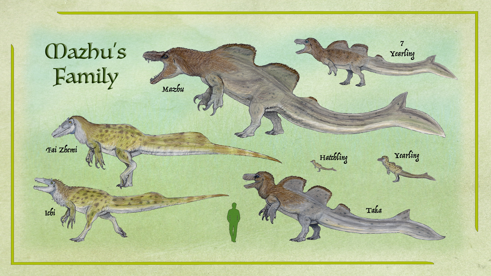
Hatching in the kurajaku represents one of the most critical transitions in the species' life history, marking the moment at which an organism that has spent approximately five to six months developing within a highly controlled incubation mound enters an environment characterized by predation, environmental instability, competition, and rapid physiological change. Although embryonic development occurs entirely within the protected confines of the nesting mound, the hatching process itself is neither passive nor random. Instead, it is a highly coordinated event involving embryo-to-embryo communication, maternal intervention, physiological synchronization, and behavioral responses that collectively maximize brood survival during the vulnerable transition between embryonic and postnatal life.
As embryos approach full development, substantial physiological changes occur within the egg chamber. Metabolic rates increase significantly as final skeletal ossification, muscular maturation, pulmonary development, and neurological refinement near completion. Oxygen consumption rises dramatically during this period, resulting in measurable alterations in the microenvironment surrounding the clutch. Carbon dioxide concentrations increase while oxygen levels gradually decline within the enclosed nesting chamber. These environmental changes serve as important developmental signals that help initiate the hatching sequence.
The first visible stage of hatching actually begins days before any egg is physically opened. Near-term embryos become increasingly active and begin producing a variety of vocalizations while still enclosed within the egg. These calls are considerably more complex than simple distress sounds. Acoustic communication appears to serve multiple functions simultaneously. Individual embryos respond to the calls of neighboring clutch-mates, creating a cascade of synchronized developmental activity throughout the brood. As more embryos become active, vocalization rates increase, effectively coordinating the timing of emergence across the entire clutch.
Synchronization is particularly important for a species whose hatchlings face substantial predation risk immediately after leaving the nest. A single chick emerging several days before its siblings would experience heightened vulnerability. Coordinated emergence ensures that multiple hatchlings enter the environment simultaneously, reducing the risk that individual offspring become isolated from maternal protection.
The vocalizations also function as communication with the attending female. Incubating cows spend months monitoring subtle changes within the mound. As hatching approaches, they become increasingly responsive to embryonic sounds. Females often enter a heightened state of vigilance during this period, spending longer intervals near the egg chamber and reducing even the limited foraging activity characteristic of incubation.
Upon detecting sustained embryonic vocalizations, the female initiates a series of preparatory behaviors. Large portions of the mound's upper vegetation layer are carefully removed. Decomposing plant matter that previously generated incubation heat is gradually thinned. This process increases airflow throughout the chamber while simultaneously reducing internal temperatures slightly. The environmental changes created by maternal excavation appear to function as additional hatching stimuli. Improved oxygen availability facilitates increased embryonic activity while changing temperature gradients signal that incubation has reached its final stage. Similar responses are observed in numerous mound-incubating archosaurs, although the degree of maternal control exhibited by kurajaku is exceptional.
Within the egg itself, hatchlings undergo a final developmental transition from embryonic to pulmonary respiration. Like many oviparous vertebrates, each embryo first penetrates the internal air space located beneath the shell. This allows the developing lungs to begin functioning before external emergence occurs. Pulmonary respiration may continue for many hours before the shell is actually breached. To escape the egg, hatchlings possess a temporary keratinous structure known as an egg tooth located near the tip of the upper jaw. This structure is considerably enlarged relative to that seen in most reptiles and birds, reflecting the exceptional thickness of kurajaku eggshells. The egg tooth functions as a specialized chisel capable of repeatedly striking and fracturing calcified shell material.
The hatching process is physically demanding. Unlike species with relatively thin eggshells, kurajaku embryos must expend considerable energy to create an exit opening. Repeated muscular contractions of the neck and torso drive the egg tooth against the shell interior. Small fractures gradually expand into larger cracks over a period that may extend from several hours to more than a full day.
Periods of activity are interspersed with extended resting phases. During these pauses the hatchling recovers energy while continuing pulmonary respiration through developing cracks. This pattern of intermittent effort prevents exhaustion before emergence is complete.
Maternal assistance occurs more frequently than in many other large theropods. Although females are generally careful not to interfere prematurely, they actively monitor the progress of individual eggs. If a hatchling appears unable to complete emergence due to shell thickness, unfavorable orientation, or exhaustion, the mother may intervene. Such intervention is remarkably precise. Using the sensitive anterior portions of the jaws, the female gently grasps weakened shell sections and applies controlled pressure to enlarge existing fractures. Importantly, females do not simply crush eggs open. Instead, they remove fragments gradually while responding to hatchling movements and vocalizations. This behavior reduces the risk of injury while substantially increasing successful emergence rates.
The entire clutch typically hatches within a relatively narrow temporal window. Most broods complete emergence within twenty-four to seventy-two hours of the first successful hatchling. This high degree of synchronization is among the most important anti-predator adaptations observed during early development.
Newly emerged chicks are strongly precocial. Unlike altricial birds or many reptiles that remain helpless after hatching, kurajaku hatchlings emerge with fully functional sensory systems, advanced locomotor capabilities, and considerable behavioral independence. The eyes are open immediately upon emergence. Visual acuity is already well developed, allowing chicks to identify movement, locate the mother, and respond to environmental threats within minutes of hatching. Auditory perception is similarly advanced, facilitating continued communication among siblings and maternal recognition.
Eye coloration differs markedly from that of adults. Freshly hatched chicks typically possess vivid blue irises ranging from pale azure to deep cobalt. This coloration gradually changes during ontogeny, transitioning through gray and amber stages before ultimately reaching the darker adult condition. The bright neonatal eye coloration may function as a recognition signal that allows the mother to rapidly distinguish offspring during the chaotic period immediately following hatching.
Locomotor development is equally advanced. Within minutes of emergence, hatchlings are capable of standing and maintaining balance. Initial movements are somewhat unstable, reflecting the sudden transition from the confined egg environment to open terrestrial space. However, coordination improves rapidly. Most chicks can walk effectively within the first hour. By the end of the first day they are capable of sustained movement across uneven terrain, climbing over vegetation, navigating mud, and following the mother away from the nesting mound.
The musculoskeletal system at hatching reflects the species' unusual ecology. Although adult kurajaku are highly specialized aquatic predators, hatchlings initially possess proportions more suitable for terrestrial movement. The hindlimbs are relatively longer, the body is more lightly built, and overall negative buoyancy is less pronounced. These characteristics facilitate movement through nesting environments and reduce drowning risk during early life.
Thermoregulation during the first weeks remains challenging despite advanced development. To compensate, hatchlings emerge covered in a dense coat of insulating down. This plumage differs substantially from adult feathering. Individual filaments are softer, denser, and more uniformly distributed across the body. The resulting coat traps substantial volumes of air and provides effective thermal protection against both cool nighttime temperatures and prolonged exposure to water.
Coloration is highly cryptic. Most hatchlings exhibit complex patterns of mottled browns, grays, muted greens, and dark striping. These patterns effectively break up body outlines among reeds, shoreline vegetation, leaf litter, mudbanks, and marsh substrates. Compared to the more uniform coloration of adults, hatchling patterning is considerably more disruptive. Such camouflage is essential because mortality pressure is extraordinarily high. Despite maternal protection, newly hatched chicks remain vulnerable to a wide variety of predators. Large reptiles, aquatic ambush predators, smaller theropods, opportunistic scavengers, and even unrelated adult kurajaku may prey upon young chicks when opportunities arise.
Feeding begins remarkably quickly. Residual yolk reserves continue providing nutrition for approximately one to three days after emergence. Nevertheless, active feeding behavior often begins within hours of hatching. Initially, prey items are extremely small. Aquatic invertebrates, insects, crustaceans, mollusks, amphibians, small fish, carrion fragments, and other readily captured food sources dominate the early diet. Chicks display strong exploratory behavior, investigating virtually any moving object within reach.
Maternal involvement in feeding is substantial. Unlike many reptiles that abandon offspring after hatching, female kurajaku remain closely associated with the brood. Mothers frequently capture prey and deliberately dismember it into smaller pieces within the crop, before regurgitating it for the chicks to consume. Food sharing behavior is especially common during the first weeks when hunting proficiency remains poorly developed.
Learning begins immediately. Young chicks carefully observe maternal behavior and rapidly acquire information regarding prey recognition, predator avoidance, movement patterns, vocal communication, and habitat use. Much of the complex behavioral repertoire characteristic of adult kurajaku begins developing during these earliest post-hatching stages.
The nesting mound itself is abandoned relatively quickly. Once most hatchlings have emerged and achieved basic mobility, the female begins leading the brood away from the nesting site. Remaining near the mound increases predation risk because the disturbed nest produces strong odors and remains highly visible to scavengers. Movement away from the nest generally occurs within several days of hatching.
Broods travel cautiously and remain tightly clustered around the mother. Vocal communication remains constant throughout this period, allowing the female to monitor offspring location even within dense vegetation.
Mortality nevertheless remains highest during early development. Environmental exposure, predation, disease, flooding, starvation, accidents, and simple developmental failure collectively eliminate a significant proportion of hatchlings before they reach several months of age. However, individuals surviving this initial bottleneck enter a period of rapid growth characterized by increasing independence, expanding ecological competence, and gradual transition toward the distinctive aquatic lifestyle that defines mature members of the species.
Juvenile Growth and Development
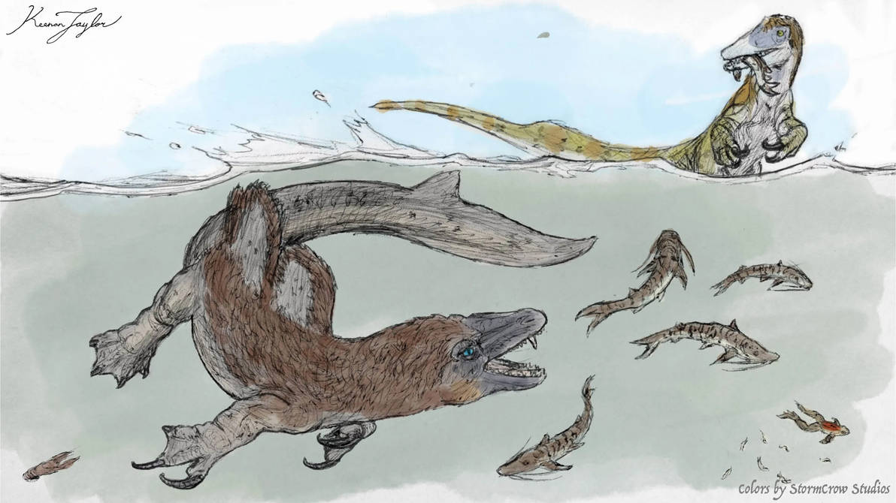
Juvenile development in the kurajaku is among the longest and most complex ontogenetic processes known among Apeirovenatorid megaraptorans. Unlike many theropods that rapidly transition from parental dependence to ecological independence, kurajaku and other Agnostornian megaraptorans undergo a prolonged developmental sequence characterized by extensive behavioral learning, dramatic anatomical transformation, progressive habitat shifts, and delayed dispersal. This extended juvenile period reflects the extraordinary specialization of the adult body plan. A newly hatched chick bears only superficial resemblance to a mature bull. The transition from a lightly built terrestrial wetland predator into one of the largest semi-aquatic apex predators on Kaimere requires years of skeletal remodeling, muscular development, neurological maturation, and ecological education.
The earliest post-hatching stage is dominated by survival and sensory development rather than rapid increases in body mass. During the first several months, chicks remain closely associated with their mother and typically occupy dense shoreline vegetation, reed beds, marsh islands, flooded forests, and other structurally complex habitats that provide concealment from predators. Although locomotion is well developed immediately after hatching, endurance remains limited and young animals spend substantial periods resting beneath vegetation or near the maternal body.
Growth during the first year is rapid but uneven. Much of the nutritional energy acquired during this period is directed toward expansion of the nervous system, sensory organs, and locomotor apparatus. The limbs lengthen rapidly, particularly the hindlimbs, producing a body form that is considerably more cursorial than that of adults. Relative leg length during the first year exceeds that of mature individuals by a substantial margin. At this stage juveniles actively participate in hunting rather than merely scavenging food provided by the mother. Small fish, amphibians, crustaceans, aquatic invertebrates, juvenile reptiles, and wetland birds constitute the majority of prey. Hunting attempts are frequently unsuccessful. Juveniles often misjudge distance, strike prematurely, or lose balance during pursuit. Nevertheless, repeated failures are developmentally important. Neural pathways governing coordination, balance, depth perception, and prey recognition are refined through continual practice.
Learning plays a central role throughout juvenile development. Although many predatory behaviors possess innate components, successful hunting techniques are not entirely instinctive. Young kurajaku spend enormous amounts of time observing maternal behavior. They accompany the mother during hunting excursions, watch prey selection, monitor stalking techniques, and observe responses to changing environmental conditions. This observational learning becomes particularly important because prey availability varies dramatically across the species' range. Juveniles raised in estuarine systems often become proficient fish hunters at an early age. Those developing within inland wetlands may specialize on amphibians, waterfowl, or shoreline vertebrates. Coastal populations frequently acquire techniques for exploiting marine prey, while floodplain populations often focus on ambush strategies among dense vegetation. As a result, local hunting traditions emerge. Different populations may utilize remarkably different techniques despite possessing nearly identical anatomy. These traditions are transmitted primarily through observation and repeated practice rather than genetic inheritance alone. Consequently, behavioral variation becomes geographically structured throughout the range of the genus.
At approximately one year of age, juveniles undergo one of the most important transitions in their development. The dense natal down is replaced through a complete juvenile molt. This process significantly alters both appearance and physiology. Juvenile plumage is coarser, more durable, and more regionally differentiated than hatchling down. Thermoregulatory efficiency improves substantially, allowing individuals to spend longer periods exposed to water and variable weather conditions. The molt also coincides with important behavioral changes. Confidence increases noticeably. Juveniles become more exploratory and spend increasing amounts of time away from direct maternal supervision. Although still dependent upon the mother for protection and occasional food acquisition, they begin investigating larger portions of the maternal territory. By this stage, many individuals routinely travel several kilometers from nesting areas during daily activities.
The second year marks the beginning of partial nutritional independence. Growth remains rapid, with many juveniles reaching lengths of 2 — 2.5 meters and masses approaching 50 — 100 kilograms depending upon environmental productivity. Maternal provisioning continues but becomes increasingly supplementary. Most daily caloric intake is now acquired through independent hunting.
Social dynamics within broods become increasingly complex during this period. Older juveniles frequently dominate younger siblings at feeding opportunities. Temporary hierarchies emerge based upon age, size, and aggression. However, these hierarchies remain fluid and rarely result in serious injury. Instead, they function primarily to regulate access to resources. The transition toward aquatic specialization begins gradually rather than abruptly. Early juveniles remain predominantly terrestrial hunters despite their association with wetlands. Their body density is significantly lower than that of adults. Skeletal pneumaticity remains more extensive, musculature is less massive, and negative buoyancy is comparatively weak.
Beginning during the second and third years, however, profound anatomical changes accelerate. The trunk deepens noticeably. Limb proportions begin shifting toward the adult condition. The caudal musculature expands dramatically as the tail increasingly assumes its future role as the primary locomotor engine. Dorsal sail structures become more prominent and begin acquiring their characteristic hydrodynamic functions. Simultaneously, skeletal density increases. Air-filled spaces within the skeleton progressively diminish. Bone cortices thicken. Overall body mass rises more rapidly than body length. The result is a steady increase in negative buoyancy.
These changes fundamentally alter habitat use. Whereas younger juveniles often avoid deeper water, older juveniles increasingly exploit aquatic environments. Initial excursions into deeper channels are typically cautious and brief. Over time, confidence grows as locomotor competence improves. By approximately three to four years of age, most juveniles spend substantial portions of their lives within aquatic habitats. During this period they begin practicing the benthic locomotor strategies that will eventually dominate adult behavior. Rather than swimming continuously through the water column, they increasingly utilize substrate-assisted movement along river bottoms, lake margins, and shallow coastal environments.
Growth during the middle juvenile years is extraordinary. Individuals commonly exceed four meters in length by age four and may approach several hundred kilograms in mass under favorable conditions. Muscular development becomes increasingly important. The neck thickens, forelimb strength increases, and the jaws become progressively more powerful. Importantly, juveniles do not simply become larger versions of hatchlings. Instead, nearly every major anatomical system undergoes reorganization. The respiratory system gradually sacrifices buoyancy-enhancing pneumaticity. The cardiovascular system adapts to increasing body mass. The osmoregulatory system becomes progressively more effective, allowing extended use of brackish and marine environments. Feather distribution shifts toward the adult pattern. Scale thickness increases. Dermal tissues become denser and more protective.
By five to six years of age, many juveniles are already formidable predators. Individuals of this age are capable of subduing prey far larger than those targeted during early development. Medium-sized fish, aquatic reptiles, shoreline herbivores, and numerous wetland vertebrates become important dietary components. Yet despite their increasing competence, they remain behaviorally immature. Learning continues throughout this stage. Hunting efficiency improves through experience rather than simple growth. Juveniles repeatedly refine stalking techniques, ambush timing, prey selection, and environmental awareness. The prolonged duration of maternal association is therefore critically important. Unlike many large theropods, kurajaku do not achieve complete independence immediately upon becoming capable hunters. Mothers continue providing indirect protection, access to established territories, and opportunities for observational learning long after offspring can feed themselves.
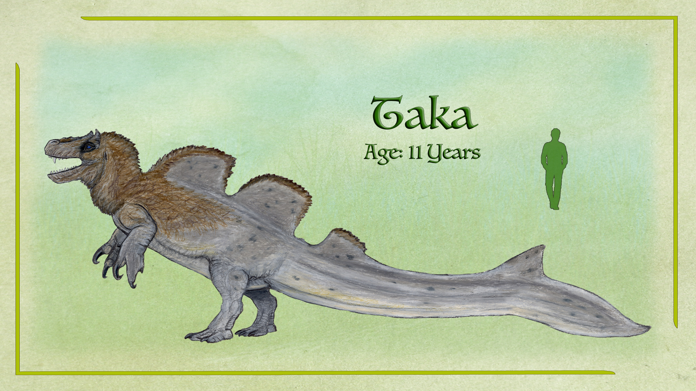
Dispersal timing is remarkably variable. Among most apeirovenatorids, juveniles typically leave natal territories relatively early often between size months to four years of age. Kurajaku differ dramatically from this pattern. Some individuals disperse as early as one to two years of age, particularly in densely populated habitats where competition is intense. Such early dispersers often experience elevated mortality but may benefit from access to unoccupied territories. More commonly, however, dispersal occurs much later. Many juveniles remain associated with maternal territories for five to eight years. In some cases, particularly in highly productive coastal or estuarine systems, offspring may remain within the maternal range until nine or even ten years of age. This represents one of the longest juvenile dependency periods known among apeirovenatorid megaraptorans. Several factors contribute to delayed dispersal. The first is the complexity of the adult ecological niche. Successful exploitation of marine environments, estuaries, and large aquatic prey requires extensive experience. The second is the relative safety provided by maternal territories. Established females possess intimate knowledge of local resources, predator distributions, nesting areas, and seasonal environmental changes. Remaining within such territories substantially increases juvenile survival. Dispersal itself is usually gradual rather than sudden. Juveniles first begin making exploratory excursions beyond the maternal range. These journeys become progressively longer over months or years. Eventually, periods spent away from the maternal territory exceed periods spent within it. At this stage, functional dispersal has occurred even though occasional returns may continue. Sex-based differences become increasingly pronounced during late juvenile development. Young females generally establish territories relatively close to their natal regions. Males, in contrast, often undertake extraordinary dispersal journeys. Even before reaching reproductive maturity, young bulls may travel hundreds of kilometers through interconnected river systems, coastlines, inland seas, and wetlands. These movements establish the foundation for the immense genetic connectivity characteristic of the species.
By the conclusion of the juvenile period, individuals are already among the dominant predators within many aquatic ecosystems. Lengths frequently exceed six to eight meters, masses may approach or exceed one metric ton, and most major anatomical transformations have already begun.
Nevertheless, they remain far from fully mature. The most dramatic increases in body mass, sail development, skeletal density, sexual dimorphism, and ecological specialization still lie ahead. The juvenile stage therefore serves as a prolonged developmental bridge between the highly terrestrial, lightly built hatchling and the colossal semi-aquatic adult.
Through years of growth, learning, environmental exploration, and gradual anatomical transformation, young kurajaku acquire the physical capabilities and behavioral knowledge necessary to survive within some of the most demanding aquatic ecosystems in the Known World. Few other apex predators invest so much time in development, and few derive such profound ecological advantages from that extended juvenile apprenticeship.
Sexual Maturity and Lifespan
Kurajaku exhibit one of the most prolonged growth trajectories known among theropods. Sexual maturity generally occurs between twelve and fifteen years of age. Females typically mature somewhat earlier than males, reflecting the divergent growth strategies of the sexes. Cows approach somatic maturity relatively soon after reaching reproductive capability. Most adult females stabilize at lengths of approximately 12 — 14 meters and masses between 9 and 14 tons. Additional growth thereafter is limited. Bulls follow a radically different trajectory. Although reproductively functional by their mid-teens, males continue growing throughout most of their lives. Growth slows with age but rarely ceases entirely. As a consequence, mature bulls exhibit extraordinary positive allometry and can attain dimensions unmatched by any other known theropod. Resident males occupying freshwater systems commonly reach 18 — 22 tons. Nomadic bulls exploiting large marine and coastal ecosystems frequently exceed these values. Average mature bulls measure approximately 17 — 19 meters in length and weigh 20 — 28 tons, while exceptional individuals may surpass 25 meters and exceed 65 tons. This gigantism is not primarily an adaptation for combat. Rather, it appears closely linked to long-distance movement between reproductive populations, exploitation of large aquatic prey resources, and the absence of nesting constraints that limit female growth. Longevity is similarly exceptional. Most individuals surviving juvenile mortality reach 50 — 70 years of age. Large bulls commonly exceed eight decades. Because males continue growing for decades after sexual maturity, the most reproductively successful bulls are often not young adults but middle-aged or elderly individuals. These enormous animals represent the culmination of many decades of survival, feeding success, migration, and social competition, making reproductive success in kurajaku fundamentally tied to longevity as much as physical strength.
06 · NATURAL HISTORY
Behavior
The kurajaku is among the most behaviorally specialized apex predators known from Kaimere. Although descended from terrestrial megaraptorans, it has evolved a lifestyle centered around shallow aquatic ecosystems. Much of its behavior is dictated by a unique biomechanical reality: despite spending the majority of its life in water, the kurajaku is not a proficient swimmer. Instead, it is a negatively buoyant predator that exploits the substrate beneath wetlands, estuaries, inland seas, and coastal shallows as its primary locomotor medium.
Behavior throughout the genus is profoundly influenced by sexual dimorphism. Bulls and cows effectively occupy partially separate ecological roles despite belonging to the same species. Cows are resident semi-aquatic predators tied to nesting grounds and local prey communities. Bulls are highly mobile megafaunal hunters capable of traversing immense geographic distances between breeding populations. Consequently, the behavior of a mature bull may differ as dramatically from that of a nesting cow as that of entirely separate species.
Across their range, kurajaku function as ecological engineers, apex predators, scavengers, migratory consumers, and occasionally even ecosystem connectors. Their movements transport nutrients between watersheds, their excavations modify wetland hydrology, and their feeding behavior influences the structure of prey communities across continental scales.
Activity Patterns
Activity patterns in the kurajaku differ substantially from those observed in most large theropods and even from many other semi-aquatic apex predators. Their behavior is governed not only by prey availability, seasonality, reproductive condition, and thermoregulation, but also by the unique physiological constraints imposed by an immense, negatively buoyant body adapted for bottom-running locomotion. Because the species occupies environments ranging from inland marshes and river systems to coastal estuaries, shallow seas, and continental shelf ecosystems, no single daily activity rhythm characterizes the entire genus. Instead, activity schedules exhibit considerable flexibility while remaining structured around predictable environmental opportunities.
Across most populations, kurajaku are best described as crepuscular — cathemeral predators. Peak activity generally occurs during the hours immediately surrounding sunrise and sunset, but substantial activity may occur at any time of day or night depending upon prey abundance, tidal conditions, seasonal migrations, reproductive state, and local climate. The crepuscular preference is driven by several ecological advantages. At dawn and dusk, water temperatures are typically lower and more stable than during midday. Reduced thermal stress allows sustained activity while minimizing the physiological costs of heat dissipation. Many prey species likewise exhibit heightened movement during these periods. Large herbivores approach shorelines to drink, fish schools move into shallower waters, aquatic reptiles become active after nighttime inactivity, and numerous wetland organisms undergo predictable daily transitions. The optical properties of crepuscular light further favor ambush predation. Low-angle illumination creates complex reflections, shadows, and surface glare that interfere with visual detection. A submerged predator positioned beneath turbid water can approach significantly closer to prey before being detected than during periods of direct overhead sunlight. As a result, many of the species' most successful hunting attempts occur during dawn and dusk.
Unlike highly terrestrial predators, however, kurajaku activity is not rigidly synchronized to daylight cycles. Large adults, particularly mature bulls, frequently remain active throughout entire twenty-four-hour periods when ecological conditions favor continuous feeding. Seasonal fish spawning events, mass migrations of aquatic herbivores, carcass accumulations, breeding aggregations of marine fauna, and other episodic food bonanzas often override normal circadian rhythms. During such periods, individuals may feed, travel, rest, and hunt in irregular intervals for days or even weeks. This flexibility reflects the ecological realities of aquatic systems, where prey distributions are often driven more strongly by tides, currents, rainfall, flooding, and seasonal productivity than by solar illumination alone.
Activity also varies considerably between sexes. Adult cows generally maintain more predictable schedules than bulls. Because females remain associated with established territories centered around nesting sites and productive wetlands, their movements tend to follow recurring patterns. Hunting periods, territorial patrols, resting behavior, and seasonal movements frequently occur within relatively stable temporal windows. Bulls exhibit far greater variability. Large males often travel enormous distances between reproductive populations and may spend weeks or months traversing coastlines, estuaries, inland seas, and major river systems. During these journeys activity becomes opportunistic. Feeding occurs whenever prey becomes available, while rest periods are often dictated by environmental conditions rather than fixed daily schedules.
Seasonal changes exert profound influence on activity budgets. During cooler periods, particularly in temperate populations, individuals may remain active for much larger portions of the day. Reduced thermal stress allows prolonged hunting, territorial patrols, and travel. In contrast, tropical populations inhabiting the vast wetlands of Kairul, southern Ni'Khar, and equatorial coastlines frequently exhibit pronounced midday inactivity.
Thermoregulation is among the most important factors governing daily behavior. Despite their aquatic lifestyle, kurajaku are gigantic endotherms possessing substantial metabolic heat production. Dense musculature, thick dermal tissues, extensive fat reserves, and highly developed insulation all contribute to heat retention. During periods of intense solar radiation, internal heat accumulation can become significant. To mitigate overheating, individuals commonly retreat into deeper channels, submerged depressions, tidal basins, shaded river corridors, offshore waters, or thermally stable aquatic refugia. Here they often remain largely inactive for extended periods.
This inactivity should not be interpreted as sleep. Rather, it represents a state of energy conservation and thermal management. Animals remain alert and responsive while minimizing muscular activity. Sensory systems continue monitoring the surrounding environment, and sudden prey opportunities may trigger immediate predatory responses despite apparent inactivity. Resting behavior is among the most distinctive aspects of kurajaku ecology. During inactive periods individuals frequently position themselves within shallow water, submerged channels, mud-bottom lagoons, or protected estuarine environments. Only the eyes, nostrils, cranial crest, and portions of the dorsal sails may remain visible above the surface.
In heavily vegetated habitats, such animals become extraordinarily difficult to detect. The combination of cryptic coloration, minimal movement, and partial submergence often renders even massive adults virtually indistinguishable from floating debris, submerged logs, or patches of emergent vegetation. Individuals may remain motionless in such positions for several consecutive hours. This behavior serves multiple functions simultaneously. Thermal stability is maintained through conductive heat exchange with surrounding water. Energy expenditure declines dramatically. Potential prey become habituated to the animal's presence. Simultaneously, the predator remains prepared for sudden ambush opportunities.
Surface breathing behavior introduces an additional layer of complexity to activity patterns. Although fully air-breathing animals, kurajaku spend the majority of their lives partially or completely submerged. Consequently, respiration occurs through periodic surfacing events rather than continuous aerial exposure. Under resting conditions, surface intervals are remarkably infrequent. Large adults typically surface every 20 — 40 minutes while resting in cool water. During these events, only the nostrils and upper portions of the skull emerge above the surface. Ventilation is efficient and rapid, often requiring less than twenty seconds before the animal submerges once more. In cold water or during deep resting states, intervals may occasionally extend to approximately 45 — 60 minutes. Such durations are facilitated by large oxygen reserves, extensive blood volume, elevated hemoglobin concentrations, and physiological diving responses that reduce oxygen consumption during inactivity. Active movement shortens these intervals considerably. During routine bottom-running locomotion, adults generally surface every 10 — 20 minutes depending upon water temperature, current strength, and exertion level. Breathing events become more frequent during sustained travel because locomotor activity substantially increases oxygen demand. High-speed pursuit produces even greater respiratory demands. During rapid hunting events, individuals may require surfacing every 5 — 10 minutes. However, actual pursuit sequences are typically much shorter than these intervals, meaning that prey encounters rarely force immediate respiratory limitations.
Dive duration varies according to behavior. Routine foraging dives generally last between 15 and 40 minutes. Territorial patrols along submerged substrates commonly involve dive durations of 20 — 30 minutes. Long-distance travel through marine or estuarine environments typically consists of repeated dives averaging approximately 15 — 25 minutes separated by brief surface ventilations. Exceptional dive capacities occur during ambush behavior. When positioned motionless within productive hunting areas, large adults may remain submerged for 45 — 60 minutes with minimal movement. Rare observations suggest that exceptionally large bulls in cold water may occasionally exceed one hour of continuous submergence. Such durations are achieved through profound reductions in heart rate, peripheral blood flow, and metabolic activity. These physiological responses parallel diving adaptations observed in marine mammals, large turtles, and certain aquatic birds, although they evolved independently within a theropod framework.
Sleep behavior itself remains somewhat unusual. Unlike terrestrial megaraptorans, which commonly rest on land, adult kurajaku spend most inactive periods partially submerged. Fully terrestrial resting is relatively uncommon among mature individuals and becomes increasingly rare with body size. This pattern reflects important biomechanical constraints. The enormous body mass and highly specialized hydrostatic adaptations of large adults make prolonged terrestrial recumbency energetically costly. Extremely large bulls, in particular, may experience significant compressive stress on the thorax and abdomen when entirely removed from water.
For this reason, many mature males spend the overwhelming majority of their lives either submerged or partially buoyed by water. Shallow channels, tidal flats, estuarine basins, coastal lagoons, and deep marsh pools function not only as feeding grounds but also as resting sites. Females retain somewhat greater terrestrial competence due to nesting requirements. Consequently, cows are more likely to rest on mudbanks, islands, levees, elevated marsh ridges, and shoreline habitats, particularly during reproductive periods. Nevertheless, even females spend substantial portions of their inactive time partially submerged.
Weather also influences activity patterns. Heavy rainfall frequently stimulates movement. Flooding expands accessible habitat, disperses prey, and increases aquatic connectivity between isolated wetlands. Many individuals become highly active during storms and immediately afterward. Conversely, severe drought often concentrates activity around permanent water sources. Travel distances may decrease while hunting intensity increases as prey become concentrated within shrinking aquatic refugia.
Throughout all of these behavioral contexts, the defining characteristic of kurajaku activity remains flexibility. Rather than being constrained by rigid circadian schedules, they operate according to a dynamic balance of environmental opportunity, thermal physiology, prey distribution, reproductive demands, and respiratory requirements. This adaptability allows them to function effectively across an extraordinary range of aquatic ecosystems while maintaining their position as one of the dominant apex predators of the Known World.
Movement and Migrations
Movement ecology in kurajaku differs fundamentally from that of both terrestrial theropods and fully aquatic marine predators. The species occupies an unusual biomechanical and ecological position in which negative buoyancy, benthic locomotion, long-distance aquatic travel, and seasonal reproductive migrations have become integrated into a single behavioral system. Rather than treating water as a medium through which they swim continuously, kurajaku interact with aquatic environments as three-dimensional landscapes analogous to terrestrial terrain.
Rivers, estuaries, coastal shelves, submerged forests, seagrass meadows, tidal flats, continental shallows, inland seas, and floodplain channels function as movement corridors in much the same way that forests, valleys, and grasslands function for terrestrial predators. The result is a spatial ecology unlike that of any other known megaraptoran. Throughout most of their lives, kurajaku exist within extensive cognitive maps composed not merely of territories but of interconnected hydrological networks. Individuals memorize channel systems, seasonal flood routes, submerged ridges, estuarine passages, coastal migration corridors, breeding territories, prey concentrations, and thermal refugia. Mature animals navigate these landscapes with remarkable precision, often returning repeatedly to the same locations over periods spanning decades.
Movement begins with the species' highly unusual relationship with buoyancy. Unlike most theropods, kurajaku possess greatly reduced skeletal pneumaticity, exceptionally dense cortical bone, massive dermal tissues, and substantial soft-tissue density. These adaptations create strongly negative buoyancy. Consequently, individuals entering sufficiently deep water naturally sink toward the substrate. Rather than representing a limitation, this condition forms the foundation of their locomotor strategy. Once on the bottom, the animal transitions into a specialized form of underwater progression best described as benthic running. The hindlimbs operate as primary propulsive structures while the tail functions as a secondary propulsion organ, stabilizer, and steering system. Movement is generated through powerful alternating hindlimb strokes synchronized with controlled lateral undulations of the caudal region. Unlike crocodilians, which primarily swim through whole-body lateral flexion, or cetaceans, which rely upon dorsoventral oscillation, kurajaku locomotion is concentrated within the posterior half of the body. The trunk remains comparatively stable while the tail generates controlled sinusoidal waves. These waves are propagated laterally through the distal caudal region and amplified by the fluke. The resulting movement produces thrust while maintaining exceptional stability against the substrate. Because the feet retain broad webbing and enlarged weight-bearing surfaces, traction remains effective even across mud, sand, gravel, shell beds, submerged vegetation, and soft sediment. Locomotor efficiency increases dramatically once substrate contact is established.
Large adults commonly maintain underwater cruising speeds between 10 and 18 kilometers per hour while traveling along riverbeds, estuarine channels, and coastal shelves. Sustained travel speeds of approximately 15 kilometers per hour can be maintained for many hours with only brief interruptions for respiration. When necessary, substantially greater performance is possible. During hunting events, territorial disputes, or rapid repositioning, large adults frequently reach speeds of 25 — 35 kilometers per hour underwater. Exceptional bursts may exceed 40 kilometers per hour over short distances. Such performance allows them to overtake many aquatic prey species despite their immense size. Importantly, these speeds are often achieved with surprisingly little visible disturbance at the surface. Because locomotion occurs along the substrate rather than at the water-air interface, prey frequently receives little warning of an approaching predator. Surface ripples, bow waves, and other cues commonly associated with swimming predators are largely absent. This stealth represents one of the defining advantages of the kurajaku body plan.
Spatial use varies substantially between cows and bulls. Adult cows maintain relatively stable home ranges centered around nesting territories, productive feeding grounds, and reliable aquatic refugia. These territories often encompass interconnected marsh systems, river channels, floodplain lakes, coastal lagoons, and estuarine environments. Home range size varies according to habitat productivity. In exceptionally productive wetlands, cows may occupy territories of only 200 — 500 square kilometers. In more marginal environments, territories frequently exceed 1,000 square kilometers and occasionally approach 2,000 square kilometers. Within these territories, movement follows highly predictable patterns. Individuals repeatedly utilize established underwater corridors linking hunting grounds, resting areas, nesting sites, and thermal refugia. Many of these routes are reused for decades and become deeply ingrained within the animal's spatial memory.
Daily travel distances for territorial cows are generally moderate. Most adult females travel between 5 and 25 kilometers per day under ordinary conditions. During periods of intensive foraging or nest maintenance, movement may decline to only a few kilometers daily. Following seasonal flooding or prey redistribution, daily movements may temporarily increase to 30 — 40 kilometers.
Bulls exhibit dramatically different spatial behavior. Mature males are among the most wide-ranging apex predators on Kaimere. Rather than maintaining permanent territories, they operate within vast movement networks spanning multiple ecosystems, watersheds, and even continents. Their ranges are not territories in the traditional sense but enormous migratory circuits linking feeding grounds and breeding populations. Many adult bulls regularly travel hundreds of kilometers between reproductive seasons. Annual movement distances commonly exceed 2,000 — 5,000 kilometers. Particularly old and successful individuals may travel over 8,000 kilometers during a single year while moving between coastal feeding grounds, estuarine systems, inland waterways, and breeding territories. Some of the largest documented bulls appear to maintain migratory circuits extending across much of Kaimere. Individuals have been recorded moving repeatedly between eastern Arvel, southern Ni'Khar, Pakardia, and the wetlands of Kairul. These journeys may involve cumulative lifetime travel distances measured in hundreds of thousands of kilometers. Remarkably, these movements are not random. Migratory bulls repeatedly utilize the same routes, often revisiting specific channels, estuaries, feeding grounds, and breeding territories with extraordinary consistency. Certain migratory pathways appear to persist across generations, suggesting a combination of learned behavior and inherited movement tendencies.
Deep open-ocean crossings are relatively uncommon. Although capable swimmers when necessary, kurajaku remain most efficient when substrate contact can be maintained. Consequently, migration routes frequently follow continental shelves, shallow marine basins, submerged plateaus, coastal shallows, and island chains. Many migratory pathways closely parallel bathymetric contours. Individuals appear to preferentially select routes where water depth remains sufficient for submergence while still permitting effective bottom-running locomotion.
Seasonal hydrology strongly influences movement patterns. During wet seasons, extensive flooding dramatically expands available habitat. Temporary waterways connect isolated basins. Marshes enlarge. River systems overflow their banks. Floodplains become navigable. As a result, movement networks expand considerably. Individuals gain access to feeding grounds that may remain inaccessible for most of the year. Travel distances often increase as predators exploit newly available resources. The dry season produces the opposite effect. As water levels decline, movement becomes concentrated along permanent channels, major rivers, estuaries, and deep wetlands. These aquatic refugia serve as critical movement corridors linking otherwise fragmented habitats.
Prey migrations also influence spatial use. Many aquatic herbivores, fish populations, marine reptiles, and semi-aquatic megafauna undertake predictable seasonal movements. Kurajaku frequently track these migrations over remarkable distances. Some bulls appear to synchronize portions of their annual movement cycles with the migrations of large prey species.
Rather than remaining within a single region, they travel alongside moving food resources for weeks or months. This strategy allows access to highly productive feeding opportunities while simultaneously facilitating long-distance dispersal.
Ontogeny further influences movement behavior. Young juveniles remain closely associated with maternal territories and initially explore only limited portions of the local environment. As they mature, exploratory movements gradually increase. Subadults often undertake extensive wandering behavior prior to establishing adult movement patterns. These exploratory phases may last several years and frequently cover hundreds or even thousands of kilometers. During this period individuals learn hydrological networks, identify productive habitats, and develop the spatial knowledge necessary for adult life.
Dispersal distances among subadults are extraordinary. Some individuals settle only tens of kilometers from their natal territories. Others disperse over 1,000 kilometers before establishing adult ranges. Rare long-distance dispersers may travel several thousand kilometers during adolescence.
This extensive movement contributes significantly to genetic connectivity across the genus. Despite occupying enormous geographic ranges, populations remain surprisingly interconnected because migratory bulls and dispersing juveniles continuously transport genetic material between regions.
Disposition
Despite their immense size, formidable weaponry, and reputation as some of the most dangerous apex predators in aquatic ecosystems, kurajaku are not behaviorally characterized by indiscriminate aggression. Rather, they exhibit a highly regulated social psychology in which assessment, risk calculation, spatial awareness, and conflict avoidance dominate the majority of interactions. Violence certainly occurs and can be catastrophic when it does, but direct combat represents the endpoint of a complex behavioral sequence rather than the default response to conspecific presence.
This pattern is unsurprising when viewed through the lens of life history. Kurajaku are extraordinarily long-lived animals that require many years to reach maturity, invest heavily in reproduction, and depend upon sustained physical performance throughout adulthood. Even relatively minor injuries can compromise hunting efficiency, reduce migratory capacity, interfere with reproduction, or create vulnerabilities to infection. Natural selection has therefore strongly favored behavioral systems that maximize information gathering while minimizing unnecessary physical confrontation.
Consequently, most intraspecific encounters are governed by communication rather than violence. The overall disposition of adult kurajaku can best be described as cautiously tolerant. Individuals generally prefer awareness over engagement, display over combat, and displacement over direct conflict.
Mature animals spend much of their lives navigating environments in which encounters with conspecifics may occur unexpectedly within turbid waterways, dense marsh vegetation, estuarine channels, mangrove forests, seagrass meadows, flooded forests, and coastal shallows. Under such conditions, reliable mechanisms for assessing intent and condition become essential.
Detection of another kurajaku almost always precedes visual contact. Olfactory information serves as the primary early-warning system. Scent deposits along shorelines, nesting territories, haul-out sites, feeding grounds, submerged pathways, and territorial boundaries allow individuals to evaluate nearby conspecifics long before direct encounters occur. Hormonal condition, sex, reproductive state, age class, and even approximate body size can often be inferred from these chemical signals.
As a result, many potential conflicts are resolved without either individual ever seeing the other. A subordinate bull detecting the recent passage of a larger male may simply alter his travel route. A non-breeding cow encountering fresh nesting scents may avoid the area entirely. Migratory individuals often modify movement patterns after detecting territorial females. Such avoidance behaviors likely prevent countless confrontations.
Intraspecific Interactions
When direct encounters do occur, interactions typically begin with prolonged assessment. Individuals usually become aware of one another at considerable distance. In open wetlands this may occur visually, while in densely vegetated systems acoustic and olfactory cues often dominate initial detection.
Approach behavior is generally cautious. Rather than moving directly toward one another, individuals frequently assume oblique orientations. This posture permits simultaneous observation and retreat while reducing the appearance of overt aggression. The head is elevated, the neck partially extended, and the body positioned to maximize visual assessment.
At this stage, information gathering becomes the primary objective. Each animal evaluates body condition, size, locomotor symmetry, feather quality, sail condition, evidence of injury, respiratory stability, and behavioral confidence. Particular attention appears to be directed toward movement quality. Because successful hunting, migration, and reproduction all depend heavily upon locomotor competence, abnormalities in gait provide exceptionally valuable information regarding an individual's condition. Large adults often spend extended periods simply observing one another. These assessments may continue for hours in certain circumstances.
Acoustic communication frequently follows. Kurajaku possess an extensive repertoire of low-frequency vocalizations capable of traveling considerable distances through both air and water. These sounds communicate identity, arousal state, body size, and intent. Low resonant calls are commonly associated with neutral assessment. Deeper, longer vocalizations often function as territorial advertisements. Shorter, more forceful calls frequently accompany elevated tension. Importantly, vocal exchanges often serve as conflict-resolution mechanisms. Many encounters terminate following vocal assessment alone.
The aquatic environment adds an additional layer of complexity to intraspecific communication. Submerged sound transmission is remarkably efficient, and kurajaku appear highly sensitive to underwater acoustic signals. Individuals can likely detect conspecific vocalizations over distances far exceeding visual range. This capacity allows territorial spacing to be maintained even within highly turbid environments where visibility is severely restricted.
Spatial tolerance varies dramatically according to sex, reproductive status, and resource availability. Adult bulls are generally the most socially tolerant segment of the population outside the breeding season. This tolerance is largely a consequence of their ecology. Unlike territorial females, bulls do not depend upon fixed nesting sites. Their immense migratory ranges expose them to frequent interactions with unfamiliar individuals, making constant aggression energetically impractical. Consequently, multiple adult males may utilize the same feeding grounds simultaneously when resources are abundant. Large estuaries, fish migrations, marine carcasses, spawning aggregations, and seasonal prey concentrations often attract numerous bulls. Under such circumstances, direct aggression is surprisingly uncommon.
Dominance relationships certainly exist, but these are usually maintained through posture, movement, and spatial positioning rather than violence. Larger males generally gain preferential access to resources simply through presence. Subordinate individuals often yield voluntarily. This dynamic resembles the feeding hierarchies observed among large marine predators more than the rigid territorial systems typical of terrestrial carnivores. Conflict becomes substantially more likely when resources become limited. During droughts, seasonal contractions of wetlands, prey collapses, or breeding periods, tolerance decreases significantly. Individuals become less willing to share productive habitats and more likely to engage in prolonged assessment displays.
Even under these circumstances, however, direct combat remains relatively rare. Most confrontations are resolved through ritualized escalation. These displays frequently involve parallel movement, lateral presentation, neck elevation, sail expansion, feather erection, tail positioning, and vocal signaling. Each behavior provides information regarding body size, health, confidence, and motivation. Because these displays are energetically inexpensive compared to fighting, they represent an efficient means of establishing dominance relationships.
Adult females display markedly different social tendencies. Cows are substantially less tolerant of one another than bulls. This difference emerges primarily from reproductive ecology. Suitable nesting territories represent limited and highly valuable resources. Successful reproduction requires stable access to elevated nesting sites, predictable prey supplies, freshwater access, and protection from seasonal flooding. Consequently, neighboring females often function as direct competitors. Female territories are generally maintained year-round and may remain occupied across multiple reproductive seasons. Territory boundaries are monitored continuously through scent marking, patrol behavior, and acoustic communication. Intrusions are rarely ignored. Unlike the comparatively tolerant interactions observed among feeding bulls, encounters between adult cows frequently exhibit elevated hostility from the outset. Assessment still occurs, but escalation thresholds are considerably lower. Female conflicts are also often more consequential. Whereas males frequently compete over transient breeding opportunities, females compete over resources directly tied to reproductive success. Loss of territory can mean loss of nesting opportunities, reduced chick survival, or complete reproductive failure. As a result, female aggression tends to be more persistent and less ritualized. Physical confrontations between cows frequently involve sustained attempts to displace opponents from valuable habitat.
Maternal females represent the most aggressive individuals in the species. During nesting and chick-rearing periods, normal behavioral thresholds undergo dramatic alteration. Activities that might otherwise provoke only assessment or display often trigger immediate aggression. Nesting territories become exclusion zones. Even large bulls generally avoid active nests. The risks associated with provoking a nesting female are substantial. Maternal cows exhibit reduced tolerance, heightened vigilance, increased territorial patrol frequency, and exceptionally rapid escalation responses. Many attacks appear preventative rather than reactive. Potential threats are often confronted before they approach critical distances. This behavior likely reflects the enormous reproductive investment associated with each clutch.
Interactions involving juveniles differ substantially from those involving adults. Young individuals are generally tolerated by their mothers for extended periods, often far longer than observed in most large theropods. Because dispersal may not occur until nearly a decade of age, maternal territories frequently contain multiple developmental stages simultaneously. Relationships among siblings are structured but not overtly cooperative. Dominance hierarchies emerge early and regulate access to food, resting locations, and maternal attention. Larger juveniles frequently displace smaller individuals during feeding events, although outright lethal aggression appears uncommon. Play behavior is widespread. Young kurajaku engage in mock ambushes, pursuit games, wrestling, jaw sparring, and simulated territorial displays. These interactions likely serve important developmental functions, allowing juveniles to refine hunting techniques, motor coordination, social assessment skills, and combat behaviors under relatively low-risk conditions.
Dispersing subadults experience the most challenging period of social life. As they leave maternal territories and enter unfamiliar habitats, they encounter adults with little incentive for tolerance. Many confrontations during this phase involve territorial rejection by resident females or dominance displays from larger males. Mortality rates increase significantly during dispersal. Individuals must simultaneously learn new environments, establish independent hunting strategies, and navigate increasingly complex social interactions. Those that survive eventually transition into the comparatively stable social dynamics characteristic of adulthood.
Territorial Behavior and Preference
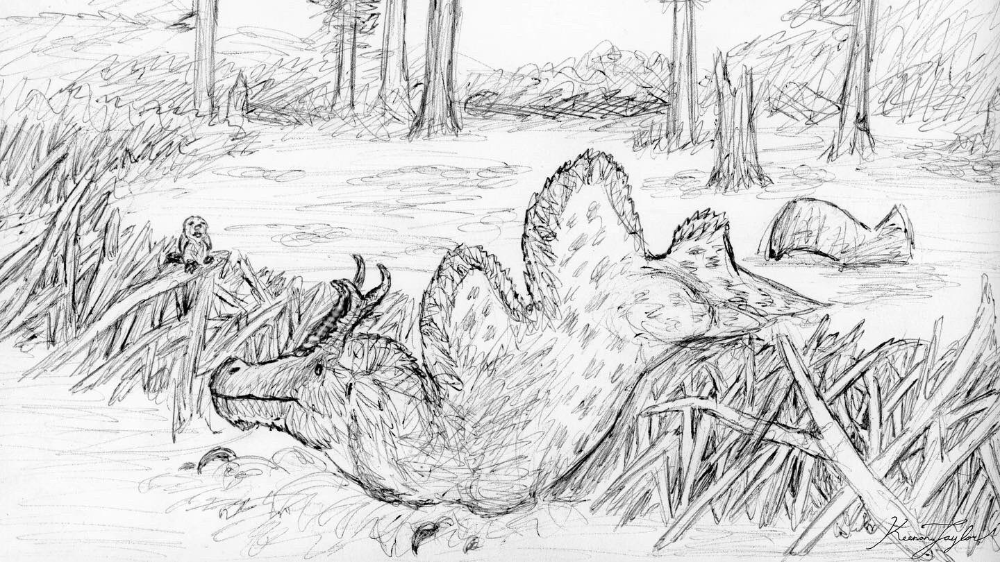
Territorial organization in kurajaku is strongly influenced by sex, age, reproductive status, and habitat productivity. Although the species is generally solitary throughout most of its life, it does not exist within a simple framework of uniformly defended territories. Instead, spatial organization is divided between highly territorial reproductive females, wide-ranging and often semi-nomadic males, and extensive dispersal-stage juveniles and subadults. The result is a complex system of overlapping home ranges, defended nesting territories, migratory corridors, feeding grounds, and seasonally important aquatic routes that together structure population distribution across much of the Known World.
Territorial behavior begins developing during the late juvenile and subadult stages. Following gradual separation from the maternal territory, young kurajaku enter an extended dispersal period that may last many years. During this interval, individuals do not possess permanent territories. Instead, they occupy enormous exploratory home ranges while moving between river systems, estuaries, wetlands, coastal shelves, inland seas, and floodplain networks. These temporary ranges are highly fluid and may encompass anywhere from 500 to over 10,000 square kilometers (190 — 3,860 square miles), depending upon local prey availability and the density of resident adults. Subadult movement is largely governed by avoidance. Young animals actively avoid areas heavily utilized by mature bulls and especially by territorial cows. Chemical signals, vocalizations, feeding traces, and repeated observations of adult activity provide information regarding occupied territories. Consequently, dispersing individuals often utilize marginal habitats, secondary waterways, offshore shoals, isolated marshes, and seasonal wetlands where adult densities are lower. Mortality during this phase is substantial. Many dispersers perish through starvation, predation, environmental hazards, or conflicts with resident adults before ever acquiring suitable breeding territories or stable home ranges.
Adult cows represent the primary territorial component of the species. Upon reaching full maturity and entering reproductive life, females establish stable territories centered around nesting opportunities and long-term reproductive success. Unlike males, whose movement patterns remain flexible throughout life, females exhibit extraordinary site fidelity. Successful territories may be occupied continuously for decades, and some nesting regions appear to have been utilized by successive generations for centuries or even millennia. Female territories function as integrated reproductive landscapes rather than simple feeding areas. Several critical resources must occur simultaneously within a single territory for it to be considered suitable. Elevated nesting sites are perhaps the most important requirement. These locations must remain safely above seasonal flood levels while still maintaining proximity to aquatic habitats. Slightly elevated ridges, forested islands, natural levees, coastal dunes, river terraces, and stable sedimentary rises are strongly favored. Areas vulnerable to annual inundation are typically avoided regardless of prey abundance. Reliable aquatic access is equally essential. Kurajaku are physiologically and behaviorally dependent upon water for locomotion, thermoregulation, feeding, and predator avoidance. Consequently, ideal territories contain permanent channels, deep wetlands, coastal lagoons, estuaries, or interconnected river systems that remain navigable throughout seasonal hydrological fluctuations. Territories lacking year-round aquatic access are rarely occupied by reproductive females.
Prey availability exerts a major influence on territory size. In highly productive environments such as major estuarine complexes, rich coastal marshes, inland deltas, and large tropical wetland systems, female territories may encompass only 50 — 250 square kilometers (19 — 97 square miles). Such regions support dense populations of fish, aquatic tetrapods, waterfowl, semi-aquatic herbivores, and shoreline prey. Resource concentration reduces the need for extensive movement and allows relatively compact territories to satisfy energetic demands. More commonly, female territories range between approximately 300 and 1,500 square kilometers (116 — 579 square miles). This size appears typical across much of the species' distribution and provides sufficient access to nesting habitat, feeding grounds, movement corridors, and refugia. Within these territories, cows maintain detailed familiarity with local hydrology, seasonal prey movements, shoreline structure, and ambush locations. This accumulated ecological knowledge likely contributes substantially to reproductive success. In marginal environments, territory size may increase dramatically. Arid floodplain systems, seasonal wetlands, fragmented coastal habitats, and regions with low prey density may require territories exceeding 2,000 — 4,000 square kilometers (772 — 1,544 square miles). Such enormous territories reflect the necessity of encompassing multiple feeding areas and alternative nesting locations capable of supporting reproduction during fluctuating environmental conditions.
Territorial boundaries among cows are generally well defined and actively defended. Overlap between unrelated reproductive females is minimal. Neighboring cows may occasionally utilize the same waterways or feeding grounds, but nesting areas and core territory zones remain largely exclusive. Intrusions are often met with immediate investigation and frequently provoke aggressive responses. This exclusivity is understandable given the importance of stable nesting habitat. A single successful nesting location may determine reproductive output for many years, making territorial defense a highly advantageous strategy.
Communication of territorial ownership relies upon multiple sensory modalities. Chemical signaling appears particularly important. Females deposit scent markers along shorelines, vegetation, nesting routes, resting locations, and movement corridors. These markers communicate occupancy, reproductive status, and individual identity. Regular patrols ensure that scent information remains current and continuously reinforces territorial boundaries. Vocal signaling also plays a significant role. Low-frequency calls carry efficiently across wetlands, estuaries, and shallow marine environments. Territorial vocalizations are most common during dawn and dusk when atmospheric conditions enhance sound transmission. These calls function both as advertisements of occupancy and as deterrents to potential intruders. Large females frequently possess distinctive vocal signatures recognizable to neighboring individuals. Substrate modification represents a third form of territorial communication. Repeated movement along established routes creates visible pathways through vegetation and shoreline environments. Nest construction, resting depressions, feeding sites, and frequently used haul-out areas further reinforce territorial occupation. Over years of use, some territories acquire extensive physical evidence of long-term residency.
Male spatial behavior differs fundamentally from that of females. Adult bulls generally do not maintain exclusive territories. Instead, they possess expansive home ranges that overlap numerous female territories, seasonal feeding grounds, migratory corridors, and aquatic travel routes. These ranges are among the largest known for any terrestrial or semi-aquatic predator. Typical adult male home ranges vary from approximately 5,000 to 25,000 square kilometers (1,930 — 9,650 square miles). In highly productive regions with dense female populations, ranges may remain near the lower end of this spectrum. In sparsely populated environments or among highly migratory individuals, home ranges can exceed 50,000 square kilometers (19,300 square miles). Importantly, these home ranges are not defended uniformly. Instead, bulls exhibit selective territoriality focused on valuable resources. Productive feeding grounds, breeding areas, migratory bottlenecks, and favored resting locations receive disproportionate attention. Other portions of the range may be traversed only periodically. Overlap among male home ranges is common. Mature bulls frequently utilize the same coastal systems, estuaries, and feeding grounds without establishing rigid territorial boundaries. Outside the breeding season, this overlap often results in remarkable tolerance. Multiple large males may exploit the same resource concentrations while largely ignoring one another. However, breeding season substantially alters this dynamic. Competition for receptive cows intensifies territorial behavior and increases the frequency of aggressive encounters.
Seasonal environmental changes produce major shifts in territorial structure. During wet seasons, expanded waterways and increased prey abundance often reduce territorial rigidity. Resource availability becomes widespread, decreasing competition and permitting greater overlap among individuals. Conversely, dry-season contraction concentrates prey and suitable habitat into smaller areas. Territorial defense becomes more intense, and boundary disputes increase correspondingly. Certain habitats are consistently favored regardless of geographic location. Estuaries rank among the most valuable territory types due to their combination of high productivity, stable hydrology, and access to both freshwater and marine prey resources. Large river deltas, coastal marshes, inland wetland complexes, and sheltered lagoons are similarly preferred. These environments provide abundant food, numerous ambush opportunities, and reliable nesting habitat. Open marine environments are generally less important as permanent territories despite being frequently utilized by traveling bulls. The absence of suitable nesting habitat and the reduced availability of substrate-contact locomotion limit their value for long-term residency. Likewise, highly seasonal wetlands are often occupied only temporarily unless supplemented by permanent aquatic refugia.
Nonverbal Communication
Nonverbal communication in kurajaku is extraordinarily developed and represents one of the most important mechanisms through which individuals regulate social interactions, establish dominance relationships, assess reproductive condition, maintain maternal bonds, and avoid the potentially catastrophic consequences of physical conflict. As giant aquatic apeirovenatorid megaraptorans equipped with immense jaws, powerful forelimbs, and the ability to inflict devastating injuries, kurajaku cannot afford frequent misunderstandings. Natural selection has therefore favored an elaborate system of visual, postural, tactile, and hydrodynamic signaling derived from the ancestral communication repertoire of megaraptorans but profoundly modified by an aquatic existence.
Unlike many terrestrial members of the family, where visual communication often occurs across open landscapes or forest clearings, much of kurajaku signaling evolved within wetlands, estuaries, shallow seas, river channels, and submerged environments where visibility is variable and body posture must remain recognizable through water-distorted light. Consequently, their displays emphasize large-scale body movements, silhouette modification, sail presentation, feather manipulation, and deliberate locomotor patterns that remain visible even under poor viewing conditions.
The neutral resting posture of a kurajaku communicates a remarkable amount of information. In a relaxed individual, the neck is held low to moderate in elevation, the cervical feathers lie flat against the body, the dorsal sails remain unstressed, and the forelimbs are carried close to the torso. The tail remains aligned with the body axis and executes only minor corrective movements necessary for balance and station-holding within the water column. Breathing is slow and regular. When partially submerged, only the eyes, nostrils, and portions of the cranial crest may be visible above the surface. This posture signals awareness without hostility. Other kurajaku encountering an individual in this condition generally continue their own activities without altering movement patterns significantly. The absence of display structures indicates that the animal has not entered a heightened motivational state.
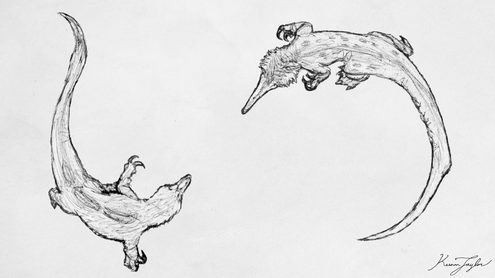
When attention becomes focused upon another individual, subtle changes occur long before overt displays begin. The head elevates slightly. The neck straightens. Eye orientation becomes fixed. Tail movements become more deliberate and less associated with locomotion. The sails may become marginally more erect as underlying musculature increases tension. These changes function as the earliest stage of social assessment. At this point neither aggression nor submission is being communicated. Instead the individual is gathering information regarding identity, size, condition, and behavioral intent. Such assessment periods can last many minutes and frequently occur without escalation. In aquatic environments where visual distortion can complicate recognition, these prolonged observation phases appear especially important.
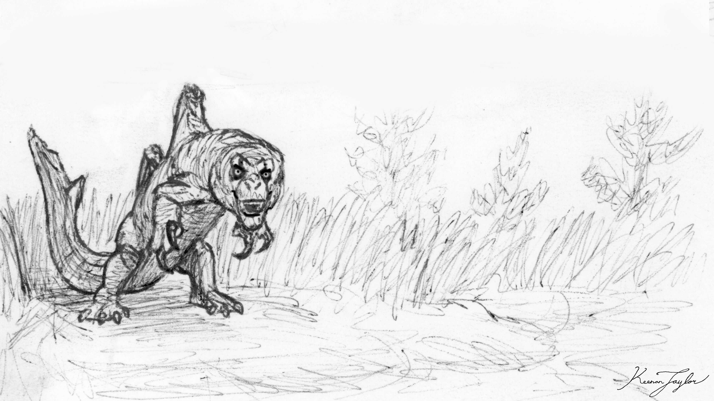
Broadside presentation forms the foundation of most dominance and assessment displays. Like many other megaraptorans, kurajaku communicate body size primarily through lateral exposure rather than frontal confrontation. The animal rotates its body until one flank faces the observer. The neck arches slightly, the torso becomes laterally expanded, the mouth is opened to expose their teeth and the sails are positioned to maximize apparent surface area. Because the dorsal and caudal sails are among the most visually conspicuous structures on the body, their presentation dramatically alters perceived size. Water further magnifies these effects. Light filtering through the sail tissues can create shifting patterns of contrast and shadow, causing the individual to appear even larger than its actual dimensions. This broadside posture is particularly common among mature bulls evaluating one another at feeding sites, migration bottlenecks, or breeding grounds.
The cervical plumage inherited from ancestral apeirovenatorids remains one of the most important signaling structures in the species. In a relaxed animal, the feathers form a relatively streamlined mane along the neck and upper torso. Through specialized dermal musculature, however, these feathers can be erected dramatically. When fully raised, the neck appears substantially thicker and taller. The effect is especially pronounced in older males, whose extensive green pigmentation becomes increasingly visible as the feathers spread outward. Because feather quality depends heavily upon nutrition, endocrine condition, and grooming investment, the cervical mane functions as an honest signal of health. Damaged feathers, parasite infestations, poor coloration, or incomplete feather erection are immediately apparent to observers. Consequently, the display communicates not only size but physiological condition.
The sails themselves serve major communicative functions beyond their hydrodynamic roles. During social interactions the dorsal and caudal sails can be subtly repositioned through changes in posture and muscle tension. Fully elevated sail displays are associated with high arousal, territorial defense, and reproductive advertisement. A dominant bull approaching a receptive female often presents the sails at maximum visibility, using slow movements that allow the structures to remain continuously exposed. Conversely, sail compression is associated with reduced aggression and behavioral withdrawal. Subordinate individuals frequently flatten the sails against the body profile, minimizing visual prominence and reducing perceived threat.
Movement quality is among the most important nonverbal signals in the species. Because kurajaku locomotion depends upon precise integration of hindlimbs, tail musculature, buoyancy control, and hydrodynamic stabilization, movement accuracy serves as an exceptionally reliable indicator of physical condition. Slow deliberate advances communicate confidence and control. An individual capable of moving smoothly through complex underwater terrain demonstrates intact musculature, proper balance, and freedom from significant injury. Observers appear highly sensitive to these cues. Slight asymmetries in gait, reduced tail coordination, or irregular body roll often trigger behavioral responses from competitors and potential mates.
A particularly common display involves controlled underwater circling. Two individuals may swim or walk along the substrate in broad arcs around one another while maintaining visual contact. During these movements each animal exposes different portions of its body while simultaneously evaluating the other. Such circling behavior appears functionally analogous to the lateral display sequences observed in many terrestrial megaraptorans. The display allows assessment of body mass, sail dimensions, feather condition, and locomotor competence without requiring direct confrontation.
Tail signaling is exceptionally important in kurajaku because the tail serves both locomotor and communicative functions. Rapid tail movements often indicate agitation or uncertainty. Slow deliberate tail sweeps communicate confidence and control. During dominance encounters the tail is frequently elevated and held in a rigid posture that accentuates the size of the caudal sail and terminal fluke. Subordinate individuals tend to lower the tail slightly and reduce its visual prominence. Abrupt lateral tail strikes against the water generate pressure waves that can be detected by nearby individuals. These are not typically intended as attacks but rather as warning signals demonstrating readiness to escalate.
Hydrodynamic communication likely represents one of the most unique aspects of kurajaku social behavior. Movements of the body, tail, sails, and limbs generate complex water disturbances that can be detected through mechanoreceptive systems. Large individuals produce particularly powerful pressure signatures. Slow approach movements generate predictable hydrodynamic patterns associated with calm intent. Rapid accelerations create entirely different signatures linked to aggression, alarm, or pursuit. It is likely that much social information is conveyed through these disturbances even when direct visibility is poor.
Submission displays are highly stereotyped and generally effective at preventing violence. A subordinate kurajaku lowers its profile, reduces sail visibility, flattens cervical plumage, and angles its body away from the dominant individual. Direct eye contact is reduced. Locomotion becomes slower and more cautious. The tail is held closer to the body axis and exaggerated movements cease. These signals communicate non-aggression while preserving the ability to flee if necessary. In most situations dominant individuals accept such displays and allow withdrawal without pursuit. This behavioral restraint is critical given the immense injury potential of physical conflict.
Tactile communication remains important despite the species' large size. Gentle jaw contact, facial rubbing, snout-to-snout contact, and controlled face-biting occur frequently during courtship and within maternal groups. The facial tissues of kurajaku are richly innervated, a characteristic inherited from their megaraptoran ancestry. These regions function as major tactile communication surfaces. During courtship, individuals often press the sides of their jaws together while remaining nearly motionless. Such interactions allow close-range assessment and reinforce social tolerance. Mothers similarly use facial contact to regulate offspring behavior and maintain cohesion among young chicks. Jaw holding represents a more specialized tactile interaction. One individual gently encloses the jaws of another within its own without applying damaging pressure. This behavior occurs during courtship, reconciliation, play, and social assessment. Its central communicative feature is force inhibition. The participating animal demonstrates that it possesses the strength to inflict severe injury but voluntarily refrains from doing so. A successful jaw-holding sequence may last several seconds, while repeated sequences during courtship can continue for several minutes. Escalation occurs if pressure becomes excessive, making bite control itself a measurable component of social competence.
Juveniles exhibit exaggerated versions of nearly all adult displays. Sail presentation is often excessive and poorly coordinated. Feather erection may occur in inappropriate contexts. Mock dominance displays are frequently directed toward siblings, floating debris, or even reflections in calm water. These behaviors function as developmental rehearsals through which young animals learn the graded communication system used by adults. Play interactions frequently incorporate broadside displays, tail posturing, controlled biting, and exaggerated locomotor movements. Through repetition, juveniles gradually refine these actions into the precise and economical signals characteristic of mature individuals.
Maternal communication relies heavily upon posture and movement. Cows possess a repertoire of visual signals used to direct offspring without vocalization. A slight elevation of the head may signal alertness. Tail positioning often indicates movement direction. Feather erection can function as a warning signal. During dangerous situations, chicks appear highly responsive to subtle changes in maternal posture, often seeking cover before any overt threat becomes visible. This responsiveness likely enhances survival in complex wetland environments where rapid reaction is essential.
Auditory Communication
Auditory communication in kurajaku is among the most sophisticated known within Apeirovenatoridae and differs substantially from that of more terrestrial megaraptorans. Although the species retains the deep thoracic resonance, extensive pneumatic resonating chambers, and low-frequency vocal capabilities characteristic of large megaraptorans, its semi-aquatic and benthic lifestyle has profoundly altered the structure and function of its vocal repertoire. Sound must travel not only through humid air, marsh vegetation, river corridors, and coastal fog, but also through water itself. Consequently, kurajaku communication incorporates exceptionally low-frequency sounds capable of propagating over great distances, powerful broadband calls that remain recognizable in acoustically cluttered wetlands, and numerous close-range signals associated with courtship, territoriality, maternal care, and social assessment.
The deepest and most commonly produced vocalization is the contact rumble. This call serves much the same role as contact calls in other giant apeirovenatorids, allowing individuals to advertise their presence without initiating confrontation. Acoustically, the sound resembles a deep, rolling vibration produced with nearly closed jaws. Human observers often describe it as resembling "mrrrooomm," "brrruuuhhmm," or a distant boat engine heard through heavy fog. The sound possesses a gradual onset, a sustained resonant center, and a long fading termination. Most contact rumbles last between two and six seconds. When produced by mature bulls, portions of the call likely extend into infrasonic frequencies detectable through both water and substrate. Neighboring individuals frequently answer with similar rumbles, creating loose acoustic awareness networks across extensive wetland systems.
One of the most distinctive vocalizations recorded is a deep territorial boom. This sound begins as a low inhalation followed by a sudden explosive release of air through the throat and chest. The resulting call resembles "WHOOOMMMP" or "BROOOHHM." Unlike a roar, the boom lacks substantial harshness. Instead it possesses remarkable resonance and carries exceptionally well across open water. Territorial booms are most commonly produced by adult bulls during breeding season and appear to communicate body size, physical condition, and occupancy of important feeding grounds. Large males often repeat the call every several minutes while remaining stationary within waterways or estuarine channels.
Closely related to the boom is the breeding bellow. This is among the loudest sounds produced by the species. The call begins with a deep chest resonance before rising into a drawn-out bellow that can be rendered as "WOOOOAAAHHH-rrrroooom." Unlike territorial booms, breeding bellows contain pronounced harmonic structure and frequently last six to ten seconds. The sound carries across vast wetland landscapes and serves both to attract receptive cows and to advertise male condition to competitors. Old bulls often possess particularly powerful bellows whose harmonic complexity appears correlated with body size and age
Cows possess their own territorial vocalization. Female territorial calls are generally shorter, lower in amplitude, and more repetitive than those of bulls. Acoustically they resemble "hrooom... hrooom... hrooom." The rhythm is deliberate and measured. Rather than advertising dominance, these calls primarily announce occupancy of nesting territories and function as warnings to neighboring females. During incubation periods the frequency of these calls increases substantially.
A remarkable vocalization recorded from subadult and young adult individuals is the resonant bark. This call is abrupt and surprisingly loud. It resembles "KHROFF!" or "BRAHK!" and is produced during surprise encounters, mild alarm, or feeding disputes. The bark occupies a higher frequency range than the deeper booms and bellows but still retains considerable chest resonance. Because it is short and broadband, it remains highly effective in dense vegetation where longer calls may become distorted by echoes.
Close-range aggressive encounters are frequently accompanied by guttural growls. This vocalization is common during territorial disputes, feeding competition, courtship assessment, and maternal defense. Acoustically, the growl is deep, rough, and heavily textured. Rather than a continuous roar, it consists of rhythmic pulses of resonance layered beneath coarse broadband distortion. It can be rendered as "GRRRRROOOHHH," "HRRRAAAUMMM," or "VRRROOOUGH." The sound originates deep within the thoracic cavity and produces substantial vibration within surrounding water. Growls communicate agitation, confidence, and readiness to escalate. Larger individuals produce lower-frequency growls with greater harmonic complexity. Because vocal characteristics correlate strongly with body size and respiratory capacity, growls function as reliable indicators of physical condition.
When arousal increases further, growls may transition into full threat roars. Kurajaku roars differ noticeably from those of many terrestrial predators. Rather than beginning with a sharp explosive onset, they often begin as a deep growl before building into a prolonged harsh bellow. A typical roar sounds something like "GRRRAAAUUUHHH-WHOOOORR." The first portion contains substantial rasping distortion, while the latter portion transitions into deep resonance. These vocalizations are rare because they are energetically expensive and generally reserved for severe territorial conflicts, maternal defense, or intense competition between breeding males.
The most basic aggressive vocalization documented in adults is the hiss. This sound is typically produced during close-range confrontations when escalation remains possible but physical combat has not yet occurred. Acoustically, the hiss is broad-spectrum and highly forceful. Rather than the simple serpentine hiss familiar from reptiles, the kurajaku hiss resembles the rapid venting of pressurized steam combined with a guttural undertone. Human listeners often describe it as "HHHSHHHHHHHH-KHHHHH" or "SSSHHHHRAAAHH." The sound is generated with partially closed jaws and forceful pulmonary exhalation. Duration varies from one to several seconds. Because the call lacks strong directional harmonics, it is difficult to localize precisely, creating uncertainty in nearby animals. Hissing frequently accompanies feather erection, sail elevation, broadside presentation, and slow forward advances. It serves primarily as a warning signal indicating elevated aggression without immediate commitment to violence.
Maternal communication is exceptionally developed. The most frequently recorded maternal vocalization is the assembly call. This sound resembles a series of rhythmic low-frequency notes: "woom... woom... woom..." repeated every few seconds. Chicks respond rapidly to the call and often converge on the cow even when partially concealed by vegetation. Because dependent offspring may remain associated with their mother for many years, assembly calls remain important long after the hatchling stage.
Feeding calls are acoustically distinct from assembly calls. They are more rapid, more repetitive, and slightly higher in pitch. A typical feeding sequence sounds like "guk-guk-guk-rruum." These calls are often produced immediately after successful prey capture or scavenging opportunities. Juveniles frequently arrive within moments of hearing them.
Among the most emotionally intense vocalizations documented is the maternal defensive bellow. This call is most frequently produced in response to juvenile distress signals and represents one of the strongest acoustic expressions of maternal aggression known among megaraptorans. The call begins with a deep inhalation followed by an explosive, resonant bellow that rapidly expands into a prolonged roar-like resonance. Acoustically it resembles "WHOOOOAAARRRHHHHH!" or "BRAAAUUUMMM-WHOOOHHH!" The onset is sudden and forceful, while the terminal portion contains powerful low-frequency harmonics capable of carrying across considerable distances. The sound is physically imposing. Nearby animals frequently respond immediately with flight behavior. In many respects this vocalization functions as both a summons to offspring and a warning to potential predators. It communicates not merely awareness but active intervention. Observations suggest that cows often begin moving toward the source of disturbance before the vocalization has fully concluded.
Alarm calls used by cows possess a remarkably sharp quality. They resemble "KRAHK!" or "SKRAAAK!" and are often repeated in rapid succession. Unlike territorial vocalizations, alarm calls are designed for immediate attention rather than long-distance propagation. Chicks hearing such calls typically freeze or seek concealment.
Hatchlings and young juveniles produce an entirely different suite of vocalizations. Contact calls are high-pitched peeps and whistles resembling "piii," "chee," or "tsee-tsee." These sounds maintain cohesion among siblings while minimizing detection by predators. Distress calls are much louder and resemble piercing squeals such as "SKREEEE!" or "CHRAAAA!" Such vocalizations elicit rapid maternal responses and may trigger aggressive defensive behavior from older siblings as well.
Subadults occupy an intermediate acoustic stage. Their calls are lower than those of hatchlings but lack the profound resonance of adults. Their contact calls often resemble soft grunts, hollow barks, and short booming notes. Many vocalizations appear exaggerated and poorly controlled, reflecting developmental practice of the adult communication repertoire.
Underwater communication remains the least understood component of kurajaku acoustics. Observational evidence strongly suggests that many deep booms and contact rumbles possess underwater components detectable at considerable distances. Large bulls frequently vocalize while partially submerged, allowing vibrations to enter both air and water simultaneously. Given the species' reliance on benthic locomotion and extensive aquatic movement, it is probable that substrate-transmitted vibrations form an important secondary communication channel. These signals may allow individuals to detect one another even when visibility is effectively zero.
Olfactory Communication
Olfactory communication in kurajaku is among the most sophisticated chemical signaling systems known in any apeirovenatorid and forms a critical component of the species' behavioral ecology. Although the immense size, elaborate visual displays, and powerful vocal repertoire of the species are immediately apparent to observers, chemical communication often exerts an even greater influence on daily behavior. Much of a kurajaku's social world exists beyond direct sight or sound. Territorial occupancy, reproductive condition, individual identity, recent movements, health status, and even aspects of emotional state can be communicated through scent alone.
In the vast wetlands, estuaries, inland seas, mangrove forests, and floodplain complexes inhabited by the species, olfactory information frequently remains available long after visual and acoustic signals have faded. Unlike many terrestrial theropods, kurajaku inhabit environments where visibility is often severely restricted. Dense reed beds, flooded forests, floating vegetation mats, fog banks, muddy water, and extensive shoreline vegetation frequently obscure visual contact. Under such conditions, scent provides a reliable means of gathering information about both conspecifics and prey.
Individuals are commonly observed interrupting feeding, resting, or patrol behavior in order to sample air currents. Even when largely submerged, kurajaku frequently elevate only the nostrils and upper snout above the water surface to assess airborne chemical signals. This behavior occurs so regularly that it represents one of the most characteristic elements of the species' daily activity pattern.
Chemical sampling involves both conventional olfaction. When investigating scent deposits, individuals often perform a specialized flehmen-like response. The head elevates slightly, the jaws part, and airflow is temporarily altered to direct odor molecules toward sensory structures within the palate. This response is particularly common during reproductive investigations and territorial assessments. Bulls may remain motionless for several minutes while analyzing scent traces deposited by estrous cows, suggesting that chemical information is processed with extraordinary detail.
The most widespread form of scent communication involves territorial marking. Kurajaku possess specialized scent-producing glands concentrated around the tail base, lower jaws, cervical skin, and forelimb wrists. Secretions from these regions vary chemically according to sex, age, reproductive condition, health, and social status. During territorial patrols, individuals deliberately deposit these secretions onto prominent environmental structures. Shoreline vegetation, exposed roots, driftwood accumulations, mangrove trunks, boulders, levees, and nesting ridges frequently serve as scent-posts. In some regions, heavily utilized scent-marking stations may persist for decades and are repeatedly visited by successive generations.
Tail-base secretions appear particularly important for long-term territorial advertisement. These secretions are thick, oily, and highly persistent. Their odor has been described as musky, saline, and faintly metallic, reflecting both the marine influence present throughout much of the species' range and the biochemical composition of the secretions themselves. Because these compounds degrade slowly, they provide a long-lasting record of occupancy. Individuals encountering such deposits can often determine not only who deposited the scent but approximately when the marking occurred.
Jaw gland secretions serve a somewhat different purpose. These are deposited through deliberate rubbing behavior against vegetation, shoreline structures, and frequently traveled pathways. Jaw marks appear to function primarily as identity signals. Neighboring individuals become familiar with one another's scent signatures and respond differently to known versus unknown animals. Established territorial neighbors often ignore familiar scents entirely while reacting strongly to unfamiliar chemical profiles. This ability likely reduces unnecessary aggression and allows long-term territorial stability despite limited direct interaction.
Forelimb scent glands are especially active during periods of heightened social activity. During courtship, reproductive competition, and territorial disputes, individuals frequently rake vegetation, sediment, or exposed soil with their enlarged forelimbs. While these actions create conspicuous visual markers, they simultaneously deposit glandular secretions onto disturbed substrates. The resulting scent traces are often richer and more chemically complex than routine territorial markings. Such deposits may communicate elevated hormonal condition, recent physical activity, and aggressive motivation.
Defecation also serves important communicative functions. Although waste elimination occurs naturally throughout the home range, deliberate defecation during social interactions is well documented. During territorial confrontations, encounters between rival bulls, or defensive displays directed toward large predators or rival interspecific species, individuals may intentionally deposit feces in prominent locations. These deposits function as powerful chemical advertisements. Rich in metabolic byproducts, microbial communities, and dietary signatures, fecal markers provide detailed information regarding body size, health, feeding success, and territorial occupancy.
Particularly notable is the tendency for aggressive defecation during highly aroused encounters. An individual confronting a rival may deliberately position itself broadside, elevate the sails, erect cervical feathers, and simultaneously deposit feces before retreating or continuing the display sequence. While seemingly unusual, this behavior creates an immediate and highly conspicuous chemical signal that may persist long after the visual interaction has ended. Similar behavior has been documented among several large archosaurs and appears to represent an extension of territorial communication rather than simple physiological stress.
Reproductive communication relies heavily upon scent. Among all known chemical signals, those associated with estrus are arguably the most important. Cows entering reproductive condition undergo pronounced changes in glandular chemistry. Secretions become more volatile and chemically distinctive, allowing detection over considerable distances. Bulls routinely investigate scent trails left by reproductive females and may follow such trails for many kilometers through complex wetland systems. The reproductive significance of these scent trails cannot be overstated. Visual encounters between mature bulls and receptive cows may be separated by days or weeks of chemical tracking. In many cases, bulls appear to locate potential mates primarily through olfactory information rather than direct observation. Mature males often travel enormous distances between reproductive populations, and scent provides the primary mechanism by which these journeys are directed.
Maternal olfactory communication is equally sophisticated. Cows recognize offspring individually through scent from an early age. Newly hatched chicks possess a distinctive odor profile derived from natal down, skin secretions, and residual egg compounds. As offspring mature, these chemical signatures gradually change. Nevertheless, mothers remain capable of identifying individual juveniles for many years. This ability is particularly important within multi-generational family groups where several age classes may coexist simultaneously. Juveniles likewise learn to recognize maternal scent early in development. During periods of poor visibility, heavy vegetation, or nighttime activity, young animals frequently rely upon olfactory cues to maintain contact with the family unit. Maternal scent trails may function as navigational guides through dense wetland environments where visual orientation is unreliable.
Environmental olfaction also plays a central role in the species' ecology. Kurajaku possess remarkable abilities to detect prey-related odors. Blood, injured animals, fish spawning events, decomposing carcasses, and concentrations of aquatic vertebrates all generate characteristic chemical signatures. Individuals can often locate feeding opportunities through scent alone, particularly in turbid water where visual hunting becomes difficult.
Because much of the species' range consists of interconnected waterways, chemical information may be transported considerable distances by wind and current. Kurajaku appear highly adept at interpreting these moving scent landscapes. Individuals regularly orient themselves relative to prevailing winds before beginning travel, suggesting that olfactory navigation forms an important component of long-distance movement. Mature bulls undertaking migrations of hundreds or thousands of kilometers likely integrate chemical information with spatial memory and environmental cues when locating breeding territories and feeding grounds.
Intelligence and Behavioral Plasticity
Intelligence and behavioral plasticity in kurajaku rank among the most advanced known within Megaraptora and arguably represent the cognitive apex of the Apeirovenatoridae. While they do not approach the abstract reasoning capabilities observed in certain sophont-adjacent lineages of Kaimere, their intelligence is nevertheless remarkable when evaluated within the ecological context in which it evolved. Rather than emphasizing object manipulation or complex symbolic cognition, kurajaku intelligence is centered upon environmental prediction, long-term memory, adaptive decision-making, social recognition, and highly flexible behavioral responses to changing conditions. In practical ecological terms, they function as extraordinarily intelligent predators whose cognition is optimized for managing vast territories, complex aquatic environments, variable prey communities, and prolonged social relationships.
The most immediately apparent component of kurajaku cognition is spatial intelligence. Few vertebrates on Kaimere routinely navigate the immense geographic scales traversed by mature bulls. Individuals may spend decades moving between distant estuaries, inland seas, river basins, floodplain networks, and breeding territories distributed across multiple continents. These journeys are not random wanderings. Mature animals repeatedly return to specific feeding grounds, nesting regions, migratory bottlenecks, and shoreline corridors separated by hundreds or even thousands of kilometers.
Evidence suggests that adult kurajaku possess highly detailed cognitive maps of their environments. These maps are not simple geographic memories but dynamic mental models incorporating seasonal changes, hydrological fluctuations, prey movements, competitor distributions, and breeding opportunities. A mature bull appears capable of remembering not only where a location exists but also when it is likely to be productive. Feeding grounds are revisited during predictable fish migrations. Estuarine corridors are entered during seasonal prey concentrations. Breeding territories are approached during periods when cows are most likely to become receptive. Such behavior implies sophisticated temporal memory in addition to spatial memory. The animal must retain information gathered years earlier and integrate it with current environmental conditions. This capacity likely explains the extraordinary success of older bulls. Many of the largest and most reproductively successful individuals are also among the oldest. Their advantage does not arise solely from size. Rather, decades of accumulated environmental knowledge allow them to exploit opportunities unavailable to younger competitors.
Behavioral plasticity is particularly evident in hunting behavior. Unlike many large predators that rely upon a relatively fixed suite of predatory strategies, kurajaku exhibit remarkable flexibility in prey acquisition. Hunting methods vary significantly between populations and often between neighboring individuals. Throughout the genus, local traditions emerge that appear to be culturally transmitted through observation and prolonged juvenile association. In some regions individuals specialize in ambushing shoreline herbivores. Elsewhere they focus primarily upon aquatic prey, marine megafauna, migratory fish aggregations, nesting colonies, scavenging opportunities, or estuarine bottlenecks. These differences cannot be explained entirely by instinct because juveniles raised in different regions frequently adopt the dominant hunting techniques utilized by local adults. The prolonged dependency period characteristic of apeirovenatorids likely plays a critical role in this process. Juveniles spend years observing maternal behavior. During this period they witness thousands of hunting attempts under varying environmental conditions. Rather than relying exclusively upon innate predatory responses, they gradually acquire specialized knowledge regarding local prey species, terrain usage, seasonal movements, and risk management.
Observational learning appears exceptionally important. Juveniles often imitate successful adult behaviors while abandoning unsuccessful techniques. Over time these learned behaviors become refined through personal experience. The result is a predator capable of substantial individual variation. Two adult kurajaku occupying similar habitats may employ noticeably different hunting strategies depending upon their developmental history. This learning capacity extends beyond predation. Individuals regularly adapt to novel environmental circumstances. Floods, droughts, storms, volcanic disturbances, titan-induced ecological changes, shifting prey distributions, and even anthropogenic modifications are routinely incorporated into behavioral decision-making. Rather than responding rigidly to environmental disruption, kurajaku typically enter exploratory phases characterized by increased investigation and experimentation. For example, when traditional migratory routes become blocked or degraded, individuals frequently establish alternative pathways rather than abandoning affected regions entirely. Similarly, newly created waterways may be rapidly incorporated into movement networks. Some populations have demonstrated the ability to exploit recently established habitats within only a few generations, indicating strong behavioral flexibility relative to many other giant predators.
Problem-solving abilities are similarly well developed. Kurajaku regularly encounter situations requiring adaptive responses rather than fixed behavioral programs. During hunting attempts they frequently modify attack strategies in real time when prey behave unexpectedly. Individuals may reposition, alter ambush locations, change pursuit directions, or abandon hunts entirely when conditions become unfavorable.
Perhaps most impressive is their apparent capacity for predictive reasoning. Experienced adults often position themselves where prey are expected to appear rather than where prey are currently present. This behavior is especially common during fish migrations and seasonal herbivore movements. Animals frequently arrive at strategic locations days before prey concentrations develop. Such actions suggest the ability to integrate multiple environmental cues into forecasts regarding future resource availability. Risk assessment represents another major component of kurajaku intelligence. Among large predators, they display unusually sophisticated cost-benefit evaluation. Individuals frequently abandon potentially profitable hunting opportunities when danger exceeds expected reward. This behavior is especially noticeable among mature adults. Young animals often pursue prey aggressively and sometimes recklessly. Older individuals are far more selective. They appear capable of evaluating prey size, defensive capabilities, environmental hazards, physical condition, and energetic state before committing to an attack. Large tusked herbivores, armored prey, rival predators, and unfamiliar situations often provoke extensive assessment behavior before engagement. If risk appears excessive, the hunt is commonly abandoned. Such restraint is significant because injury can have devastating consequences for a gigantic predator dependent upon efficient locomotion and hunting performance.
Behavioral decisions are also influenced by internal physiological state. Well-fed individuals frequently exhibit greater caution than hungry ones. Gravid cows alter movement patterns and hunting preferences. Injured animals often switch to scavenging or low-risk prey. Older individuals sometimes abandon physically demanding hunting methods entirely in favor of energetically efficient alternatives. These responses indicate that behavioral choices are not determined solely by external stimuli. Instead, kurajaku integrate environmental information with their own physical condition when making decisions. Social cognition is similarly advanced. Although not truly social predators, kurajaku maintain complex awareness of conspecifics throughout their environments. Individuals recognize neighbors, offspring, rivals, former mates, and familiar territorial occupants through combinations of scent, vocalization, appearance, and behavior. Long-term social memory appears particularly well developed. Neighboring cows may recognize one another for decades despite limited direct interaction. Bulls repeatedly revisit breeding territories occupied by familiar females. Mothers maintain recognition of offspring long after dispersal. Such memory systems likely contribute significantly to territorial stability and reproductive success. The extended family structure characteristic of apeirovenatorids may have further driven the evolution of social intelligence. Juveniles must navigate complex relationships involving mothers, siblings, younger offspring, and occasionally unrelated adults. These interactions require behavioral flexibility and individual recognition far beyond what is necessary in strictly solitary species.
Innovation is another recurring feature of kurajaku behavior. Novel feeding techniques, unusual prey choices, modified migratory routes, and creative exploitation of environmental disturbances are regularly documented. While not every innovation spreads through the population, successful behaviors are often adopted by nearby individuals, suggesting a degree of social learning.
Taken together, these traits place kurajaku among the most cognitively sophisticated non-sophont predators on Kaimere. Their intelligence is not characterized by abstract reasoning or technological potential but by exceptional ecological competence. Through advanced memory, predictive behavior, observational learning, risk assessment, social recognition, and behavioral flexibility, they have become extraordinarily effective at exploiting some of the most dynamic and complex environments on the planet. Their success is not merely a consequence of size or physical power. It is equally the result of a highly adaptable mind capable of interpreting and responding to a constantly changing world.
Foraging, Hunting, and Feeding
Foraging, hunting, and feeding behavior in the kurajaku are fundamentally shaped by the unique ecological circumstances of large wetland environments. Unlike many terrestrial megaraptoran predators, which rely primarily upon terrain funnels, forest cover, or migration bottlenecks to constrain prey movement, kurajaku exploit the physical properties of water itself as a predatory tool. Water functions not merely as habitat but as a mechanical weapon. It restricts acceleration, impairs maneuverability, obscures visibility, amplifies ambush concealment, and increases energetic expenditure for prey. The entire predatory strategy of the species revolves around forcing prey into situations where these hydrodynamic disadvantages can be exploited.
The majority of hunting activity occurs in shallow aquatic environments. River margins, estuarine channels, flooded forests, marshes, mangrove systems, tidal flats, seagrass meadows, oxbow lakes, and deltaic waterways all serve as preferred hunting grounds. These habitats share several important characteristics that collectively favor a large semiaquatic ambush predator. Visibility is often limited by suspended sediment, tannin-stained water, emergent vegetation, floating plant mats, or irregular shoreline structure. Water depth frequently varies over short distances, creating concealed depressions, submerged ledges, channels, and drop-offs that can obscure much of a predator's body while still permitting rapid acceleration. Vegetation fragments sightlines, producing a mosaic of shadows, reflections, and visual barriers that disrupt prey detection. Substrates are frequently unstable, consisting of mud, silt, peat, loose sand, submerged root networks, or decaying organic matter that reduce traction and complicate rapid maneuvering. Most importantly, prey movement within these environments becomes constrained by environmental conditions rather than purely by locomotor ability. Even highly agile terrestrial herbivores experience substantial reductions in acceleration, turning performance, and endurance when forced into water. Limb movements become less efficient as drag increases. Foot placement becomes uncertain on soft substrates. Changes in depth may abruptly alter gait mechanics, forcing animals to transition between walking, swimming, bounding, or wading behaviors. These transitions create moments of instability that a kurajaku can exploit with remarkable precision. A prey animal that would be nearly impossible to approach successfully on open ground may become vulnerable after only a few meters of water immersion. Kurajaku appear to possess an exceptionally detailed understanding of these hydrological landscapes. Rather than viewing a wetland as a uniform habitat, they utilize it as a complex three-dimensional hunting environment composed of predictable zones of vulnerability. Shallow shelves where prey enter the water, submerged channels that concentrate movement, mudflats exposed during low tide, narrow estuarine passages, and heavily vegetated shoreline bottlenecks all function as recurring ambush sites. Mature adults often revisit the same locations repeatedly over many years, indicating extensive spatial memory and long-term familiarity with local hydrology. Flooded forests are among the most productive hunting environments utilized by the species. In these habitats, trees, roots, fallen logs, and submerged vegetation create an intricate maze that restricts movement while simultaneously providing abundant concealment. Large herbivores attempting to navigate flooded woodlands must divide their attention between footing, obstacles, and navigation, reducing vigilance toward predators. Kurajaku exploit this cognitive burden by positioning themselves near natural chokepoints where prey are forced to slow or alter direction. Because much of the predator's body remains submerged, only subtle disturbances may reveal its presence before the attack begins. Mangrove systems and estuarine wetlands provide similar advantages. Dense root systems generate complex underwater terrain that can conceal even very large individuals. Tidal fluctuations further enhance hunting opportunities by concentrating prey into predictable channels and basins. During falling tides, fish, marine reptiles, aquatic mammals, and shoreline herbivores may become temporarily trapped or funneled into restricted areas. Kurajaku frequently position themselves along these routes, allowing environmental processes to deliver prey directly into effective striking range. Seagrass meadows represent a somewhat different hunting environment. Here, visibility may be greater than in inland wetlands, but concealment remains possible through the vegetation itself. Large grazers feeding within seagrass beds often focus attention downward while foraging. Kurajaku exploit this by approaching slowly from deeper water or from behind vegetation barriers. Because seagrass environments are frequently shallow, prey may have insufficient depth for efficient swimming yet too much water for effective terrestrial escape, creating a biomechanical disadvantage that strongly favors the predator. River systems function as major hunting corridors throughout much of the species' range. Drinking sites, crossing points, and seasonal migration routes attract predictable concentrations of prey. Many large herbivores are most vulnerable while entering or leaving the water. During these transitions, weight distribution shifts, footing becomes uncertain, and escape options narrow. Kurajaku frequently position themselves near submerged banks, undercut shorelines, or channel margins where they can remain concealed until prey commits fully to the crossing. The predator's relationship with water extends beyond concealment alone. Water itself acts as a force multiplier during attacks. Hydrodynamic resistance slows prey movements while having comparatively little effect on a kurajaku already adapted for aquatic locomotion. The animal's immense mass and density further enhance stability during struggles. While prey must fight both the predator and the surrounding water simultaneously, the kurajaku remains relatively secure against the substrate. In effect, every aquatic hunt becomes a contest in which the environment actively assists the predator.
Unlike many apex predators that actively search for prey through extensive patrols, kurajaku frequently employ a strategy of selective station hunting. Individuals position themselves at locations where prey traffic is predictably concentrated and then remain there for extended periods, allowing environmental processes and prey behavior to create hunting opportunities. Fish migrations, drinking sites, crossing points, estuarine bottlenecks, tidal channels, seasonal floodplain corridors, spawning grounds, and shoreline feeding areas all serve as focal hunting zones. Mature adults often revisit the same productive locations for decades, accumulating extensive knowledge regarding seasonal prey movements, hydrological cycles, tidal fluctuations, weather patterns, and local ecological dynamics. This strategy reflects the fundamental economics of a gigantic semiaquatic predator. Despite their immense size and considerable locomotor capability, long-distance pursuit remains energetically expensive and inherently uncertain. By contrast, positioning oneself at a location through which prey must eventually travel dramatically reduces the energetic cost of acquisition while simultaneously increasing the probability of success. A mature kurajaku therefore behaves less like an actively roaming hunter and more like a highly mobile ecological strategist, continuously evaluating where prey concentrations are most likely to occur before committing to an ambush position. The selection of hunting stations is rarely random. Individuals demonstrate remarkable discrimination when choosing ambush locations. Productive stations typically possess a combination of concealment, restricted prey mobility, stable substrate, favorable water depth, and predictable prey traffic. Locations lacking one or more of these characteristics are often ignored even when prey abundance appears high. Experienced adults consistently favor sites where environmental conditions naturally compress prey movement into narrow corridors. Such compression reduces the number of escape trajectories available to potential victims and increases the likelihood that prey will pass within striking distance. Many preferred hunting stations function as ecological bottlenecks. River crossings provide a particularly important example. Large herbivores may have access to hundreds of kilometers of shoreline yet repeatedly utilize a handful of traditional crossing points due to current patterns, substrate stability, vegetation structure, or topographic constraints. These crossings often persist for generations, creating predictable opportunities for ambush. Kurajaku frequently establish temporary hunting territories around such locations, remaining in the vicinity for weeks or months while prey movement remains favorable. Seasonal floodplains are similarly important. As water levels rise and fall throughout the year, prey distributions shift in highly predictable ways. During periods of inundation, herbivores may disperse widely across newly accessible habitats. As floodwaters recede, however, movement becomes increasingly concentrated within remnant channels, isolated wetlands, and shrinking aquatic corridors. Kurajaku appear exceptionally adept at anticipating these transitions. Rather than following prey directly, they often arrive at future concentration points before prey densities have reached their peak. Such behavior suggests sophisticated predictive capabilities based upon accumulated experience with local hydrological cycles. Estuarine environments support some of the most productive station-hunting behavior observed in the species. Tidal movements repeatedly force fish, marine reptiles, aquatic mammals, and shoreline herbivores through restricted channels and passages. Mature individuals often position themselves near the mouths of tidal creeks, submerged sandbars, mangrove openings, or narrow estuarine constrictions where prey traffic becomes concentrated by geography. Because tides operate on predictable schedules, these hunting opportunities can be exploited repeatedly with relatively little uncertainty. Particularly noteworthy is the apparent role of memory in station selection. Long-term observational data indicate that individual kurajaku maintain extensive cognitive maps of productive hunting locations. Some adults return repeatedly to the same estuaries, river mouths, floodplain channels, and migration corridors over periods spanning multiple decades. These returns are often synchronized with specific environmental events such as spawning runs, seasonal flooding, or herbivore migrations. Such precision suggests not merely site fidelity but the retention of detailed temporal information regarding when particular locations become profitable. Many individuals appear capable of maintaining hierarchies of preferred hunting stations. During periods of abundance, they occupy optimal sites associated with the highest prey densities and greatest success rates. If environmental conditions deteriorate or competition increases, they may shift to secondary or tertiary stations located elsewhere within their range. This flexible use of multiple established hunting locations reduces dependence upon any single prey resource and allows rapid adaptation to changing ecological conditions. Station hunting also influences daily activity patterns. Rather than continuously moving through the environment, a kurajaku may spend many hours—or even several consecutive days—occupying a favored ambush position. During these intervals the animal often exhibits remarkable immobility. Submerged within vegetation, concealed along channel margins, or resting within shallow depressions, it may remain nearly motionless except for periodic breathing movements and environmental assessment. Such patience allows prey to habituate to its presence or fail to detect it altogether. This behavioral strategy becomes especially pronounced among older individuals. Large, experienced adults generally rely less upon active searching and more upon accumulated ecological knowledge. Whereas younger animals may explore extensively and investigate numerous potential hunting opportunities, mature adults often demonstrate extraordinary confidence in established stations. Their movements become increasingly deliberate, reflecting decades of reinforcement learning regarding which locations consistently yield prey and which do not. The effectiveness of station hunting is further enhanced by the species' semiaquatic morphology. Because kurajaku can remain partially submerged for prolonged periods, concealment is exceptionally effective. Water, vegetation, shadows, and irregular shoreline features obscure much of the body, allowing even the largest individuals to remain surprisingly difficult to detect. Combined with extensive patience and detailed environmental knowledge, this enables attacks to be launched from extremely short distances.
Movement during active foraging is deliberate and exceptionally energy efficient. Individuals frequently adopt a partially submerged posture in which only the nostrils, eyes, portions of the dorsal sail, and upper cervical region remain above the water surface. This configuration minimizes visual detection while preserving environmental awareness. Even in relatively open environments, the disrupted reflections created by water surfaces substantially reduce the ability of prey animals to recognize the predator's true shape. To an approaching herbivore, the visible portions of the body often appear as scattered fragments of vegetation, driftwood, floating debris, emergent roots, or isolated patches of marsh vegetation rather than components of a single massive predator. This concealment is enhanced by the animal's coloration, integumentary texture, and characteristic stillness. Algal films, mud coatings, and accumulations of aquatic vegetation frequently adhere to the scales and feathers of individuals occupying productive hunting areas for extended periods. Rather than being removed, these materials often improve camouflage. Mature adults commonly acquire highly localized patterns of environmental staining that closely match the habitats they frequent. Individuals inhabiting mangrove systems may develop dark, organic-stained integument, whereas those occupying estuarine flats often exhibit lighter coatings derived from suspended sediments and mineral-rich muds. Foraging movement itself is generally slow and methodical. Unlike pursuit predators that continuously patrol large areas in search of prey, kurajaku often advance through hunting grounds at a pace scarcely faster than surrounding water currents. Progress may occur through a series of short underwater steps separated by lengthy pauses. During these pauses the animal becomes almost completely motionless, allowing suspended sediments disturbed by previous movement to settle and restoring the visual illusion of an inanimate object. Such stop-and-go locomotion greatly reduces the hydrodynamic disturbances that might otherwise alert sensitive prey species. Sensory assessment occurs continuously during these periods. The elevated eyes scan both aquatic and terrestrial environments, monitoring shoreline activity, water movement, bird behavior, and the reactions of potential prey. Simultaneously, the nostrils sample airborne chemical information while mechanoreceptive tissues distributed throughout the head and body detect subtle water movements. Small disturbances created by swimming fish, wading herbivores, or approaching aquatic mammals can often be detected long before visual confirmation occurs. Consequently, active foraging frequently involves extended periods of environmental monitoring interspersed with only brief episodes of locomotion. Water depth strongly influences movement behavior. In deeper channels where complete submergence is possible, individuals often travel along the substrate with only periodic surfacing intervals for respiration. In shallower wetlands, however, the characteristic low-profile stalking posture predominates. Here the body remains partially submerged while the head and upper neck are maintained just above the surface. The resulting silhouette is extremely inconspicuous, particularly among emergent vegetation where visual fragmentation is already substantial. Approach trajectories are carefully selected to exploit environmental conditions. Whenever possible, prey are approached from down-current or from directions where prevailing winds carry scent away from the target. Shoreline irregularities, vegetation beds, submerged ridges, fallen trees, and sediment banks are routinely incorporated into stalking routes. Mature individuals frequently demonstrate intimate familiarity with the hydrodynamic properties of their hunting grounds, utilizing areas of reduced current, naturally occurring visual barriers, and concealed underwater corridors that permit close approach with minimal risk of detection. Particularly notable is the degree of patience exhibited during active foraging. Kurajaku routinely abandon opportunities requiring excessive movement in favor of waiting for prey to enter more favorable positions. A large herbivore feeding near a shoreline may be observed for hours before an attack is initiated. During this time the predator continually adjusts its position in minute increments, often moving only a few body lengths over extended periods. These adjustments are frequently so subtle that they remain undetected even by nearby prey animals. The species also exhibits remarkable control over surface disturbances. Body orientation is often aligned with prevailing currents to reduce turbulence. Limb movements become unusually slow during final approaches, minimizing pressure waves that could be detected by aquatic prey. Even breathing behavior appears modified during stalking episodes. Surface intervals become shorter and more controlled, with the nostrils emerging only briefly before submerging once again. The dorsal sail and upper cervical region frequently remain stationary, preventing conspicuous ripples that might reveal the predator's location. In heavily vegetated environments, movement patterns become even more specialized. Individuals often position themselves within reed beds, submerged forests, mangrove roots, or floating vegetation mats where visual concealment is maximal. Here locomotion may occur through narrow aquatic pathways that are repeatedly used over many years. Such routes function as concealed approach corridors connecting resting sites, ambush locations, and productive feeding grounds. Mature adults often possess extensive knowledge of these pathways and utilize them with remarkable precision even under conditions of poor visibility. The final stages of prey approach are characterized by extreme caution. As distance decreases, movement velocity often declines further rather than increasing. The predator's objective is not to close the gap as rapidly as possible but to minimize the probability of detection until attack distance has been reached. Consequently, prey frequently remain unaware of the predator's presence until the moment of acceleration. Many successful attacks begin from distances of only a few meters, despite involving prey animals that possess excellent vision, hearing, or olfactory capabilities.
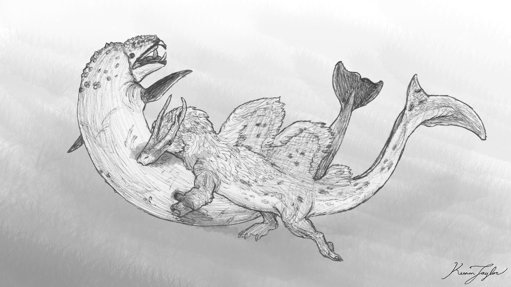
When actively searching for prey, kurajaku progress through wetlands using a highly structured pause-assess-advance behavioral sequence. Short periods of movement are followed by prolonged sensory evaluation, creating a foraging rhythm that prioritizes information acquisition over continuous locomotion. This pattern allows individuals to minimize energetic expenditure while simultaneously maximizing awareness of their surroundings. Rather than moving constantly through the environment, a hunting kurajaku functions as a mobile sensory platform, gathering and integrating vast amounts of environmental information before committing to any significant action. Movement phases are typically brief and purposeful. The animal advances through channels, flooded forests, estuarine margins, marshes, or submerged grasslands using slow, controlled locomotion. Once a favorable observation point is reached, locomotion ceases almost entirely. The predator then enters an assessment phase that may last several minutes or, under certain circumstances, considerably longer. During this interval, even subtle body movements are minimized. Water disturbances settle, suspended sediments disperse, and the surrounding environment gradually returns to its normal state. Only after sufficient information has been gathered does the animal resume movement. During these pauses, multiple sensory systems operate simultaneously. The head is often raised slightly above the water surface, allowing airborne odors to be sampled through repeated inhalations. Wind direction receives particular attention. Individuals frequently adjust body orientation to maximize exposure to incoming air currents, effectively scanning large areas of habitat through olfactory means alone. Because wetlands often channel and concentrate airborne scents, prey animals may be detected at considerable distances. Fresh blood, disturbed vegetation, nesting colonies, breeding aggregations, decaying carcasses, fish spawning events, and the scent trails of large herbivores all provide valuable information regarding potential feeding opportunities. Substrate vibrations constitute another important source of information. The shallow aquatic environments favored by kurajaku transmit mechanical disturbances exceptionally well. Large herbivores entering the water, schools of fish moving through confined channels, animals struggling in mud, or even distant intraspecific confrontations generate vibrations that travel through both substrate and water. During stationary assessment periods, the animal's immense body remains in contact with the environment over a broad surface area, allowing subtle mechanical signals to be detected and interpreted. This capability is particularly valuable in turbid habitats where visual information is limited. Water currents are monitored with equal intensity. Every moving organism generates hydrodynamic disturbances. Schools of fish alter local flow patterns. Swimming mammals create pressure waves. Wounded animals produce irregular turbulence distinct from normal locomotion. Even prey moving beyond visual range may reveal its presence through changes in current structure. Kurajaku appear capable of distinguishing between different categories of hydrodynamic disturbance and often orient toward unusual water movement before any direct visual evidence becomes available. Visual assessment remains important despite the frequent limitations imposed by wetland environments. During pauses, the eyes continuously scan for subtle indicators of biological activity. The predator rarely focuses solely upon prey animals themselves. Instead, it evaluates indirect signs that may reveal prey presence. Sudden movements of emergent vegetation, disturbances in floating plant mats, unusual concentrations of waterfowl, splashing events, sediment plumes, or changes in shoreline activity may all indicate the presence of potential prey. This reliance on indirect information allows prey detection even when direct observation is impossible. Auditory monitoring further enhances environmental awareness. Wetlands are acoustically rich environments where sound often travels considerable distances. Kurajaku routinely listen for feeding activity, splashing, alarm calls, territorial vocalizations, migratory movements, nesting colony sounds, and distress vocalizations. Many prey species inadvertently reveal their location through routine behaviors. A fish spawning aggregation, a colony of nesting waterbirds, a group of semiaquatic herbivores entering a channel, or an injured animal struggling along a shoreline may all be detected acoustically long before visual confirmation becomes possible. Importantly, these sensory streams are not evaluated independently. Evidence suggests that kurajaku integrate information from multiple sources simultaneously. A faint scent, a distant vibration, and an unusual visual disturbance may individually be insufficient to trigger investigation. Combined, however, they can produce a highly reliable indication of prey presence. This multisensory integration greatly increases hunting efficiency and reduces time wasted investigating false signals. Fish schools are among the most frequently detected targets through this process. Large schools generate distinctive hydrodynamic signatures and often attract secondary indicators such as diving birds, predatory fish, or increased surface activity. Even before visual contact occurs, a stationary kurajaku may recognize the approach of a substantial fish aggregation through changes in water movement and associated ecological cues. Similar mechanisms allow detection of seasonal spawning events that represent important feeding opportunities. Swimming herbivores produce particularly conspicuous sensory signatures. Large bodies displace significant volumes of water, generate powerful substrate vibrations, and often release strong odor plumes. Because many herbivores enter aquatic habitats reluctantly, their movements are frequently noisy and irregular. Such disturbances can be detected at substantial distances, allowing the predator to position itself advantageously before prey arrives. Wounded animals are especially valuable targets and appear to be identified with remarkable efficiency. Blood odor, erratic movement patterns, irregular hydrodynamic disturbances, distress vocalizations, and abnormal behavior combine to create a distinctive sensory profile. Kurajaku often investigate such signals immediately, reflecting the exceptionally favorable energetic economics associated with weakened prey. Nesting colonies likewise attract attention. Colonies of fish, aquatic reptiles, birds, or semiaquatic mammals produce concentrated acoustic, olfactory, and visual signals. Even when adult prey are difficult to capture, eggs, hatchlings, and weakened breeding individuals may provide abundant food resources. Experienced adults frequently monitor such sites seasonally, returning when reproductive activity reaches its peak. Carcasses represent another major focus of sensory investigation. Decomposition odors travel efficiently through wetland environments and can attract individuals from considerable distances. Visual cues such as scavenger aggregations, circling aerial fauna, or unusual shoreline activity often reinforce olfactory detection. Because large carcasses may sustain feeding for extended periods, they are rarely ignored when discovered.
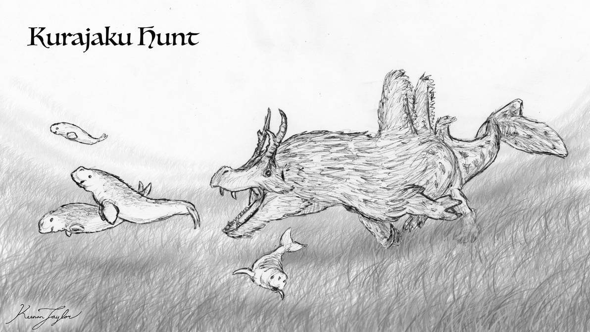
Large prey hunts typically begin with concealment rather than pursuit. The predator positions itself within submerged vegetation, beneath overhanging banks, within flooded forests, alongside channel margins, beneath floating plant mats, or within naturally occurring depressions in the substrate. Patience is a defining feature of kurajaku hunting behavior. Individuals may remain nearly motionless for hours while awaiting favorable opportunities. Because water naturally conceals portions of the body and dampens movement signatures, even extremely large adults can become surprisingly difficult to detect. In many habitats, only the eyes and nostrils remain visible above the surface, while the remainder of the animal is obscured beneath water, vegetation, shadows, and suspended sediments. This concealment strategy is particularly effective because it exploits the behavioral expectations of prey. Most large herbivores are adapted to recognize active threats. They respond readily to movement, sound, and obvious visual silhouettes. A stationary kurajaku presents none of these cues. As a result, prey frequently approach far closer than would be possible in a terrestrial environment. Individuals may enter the water to drink, feed on aquatic vegetation, cross channels, cool themselves during periods of heat stress, or escape terrestrial hazards without realizing that a predator is present nearby. During extended ambush periods, the predator exhibits remarkable physiological and behavioral restraint. Surface breathing becomes infrequent and carefully controlled. Body position is adjusted only when necessary to maintain concealment or improve attack geometry. Even minor disturbances are minimized. The tail remains motionless, limbs are held close to the body, and water displacement is reduced to the lowest practical level. In particularly favorable ambush locations, adults have been observed maintaining essentially the same position throughout entire tidal cycles or for much of a day while waiting for prey traffic to increase. Site selection is critical to the success of these hunts. Kurajaku do not simply conceal themselves wherever cover is available. Instead, they select locations where prey are likely to become biomechanically disadvantaged. Preferred ambush sites often occur at transitions between habitat types: where deep channels become shallow, where open water narrows into confined passages, where firm substrate gives way to mud, or where terrestrial pathways intersect aquatic environments. Such locations force prey to alter locomotor behavior, reducing speed and increasing vulnerability. Many attacks occur at crossing points used repeatedly by migratory herbivores. These crossings often develop over generations and become deeply ingrained within prey movement patterns. Kurajaku appear capable of memorizing these routes and timing their presence to coincide with predictable seasonal movements. Large adults may revisit the same crossing locations for decades, exploiting the accumulated experience gained through hundreds of previous hunting attempts. Flooded forests represent some of the most productive ambush environments available to the species. Here, trees, submerged roots, fallen logs, and dense vegetation create a structurally complex environment that severely restricts visibility and movement. Herbivores navigating these habitats must devote considerable attention to avoiding obstacles and maintaining footing. This divided attention reduces predator detection capability and creates numerous opportunities for close-range attacks. A concealed kurajaku may allow prey to pass within only a few meters before initiating an attack. The final approach phase is often extraordinarily subtle. If prey are detected at moderate distance, the predator may reposition incrementally over the course of many minutes or even hours. Rather than closing the distance rapidly, it exploits environmental cover and prey movement to reduce separation gradually. This slow adjustment minimizes the likelihood of detection while ensuring that the eventual attack begins from an optimal position. Once prey enters effective striking range, behavioral changes occur rapidly. The prolonged stillness of the ambush phase is replaced by explosive acceleration. Massive hindlimbs drive the body forward while the tail contributes additional stabilization and propulsion. Because the attack begins from concealment and frequently at extremely short distances, prey often have little opportunity to react before contact is made. Target selection during these hunts is highly selective. Kurajaku rarely attack the first available animal encountered. Instead, individuals evaluate group structure, body condition, behavior, and positioning before committing. Young animals, injured individuals, heavily burdened gravid females, elderly adults, or animals isolated from the main group are generally preferred. Prey already experiencing locomotor difficulties within water are especially vulnerable. The predator often waits specifically for such opportunities rather than initiating a lower-probability attack against healthier targets. The aquatic environment itself becomes an active participant in the hunt. Water impedes acceleration, reduces maneuverability, and increases energetic expenditure for prey. Animals attempting to flee may find themselves struggling against current, unstable footing, vegetation, or sudden depth changes. In contrast, the kurajaku is anatomically specialized for precisely these conditions. Its immense mass, negative buoyancy, and powerful caudofemoral musculature allow it to maintain stability and control even during violent struggles. An important aspect of this strategy is its emphasis on risk reduction. Large prey are dangerous. Even successful attacks can result in injury. Consequently, kurajaku exhibit considerable restraint before committing themselves. Ambush opportunities that do not provide favorable conditions are often abandoned. Individuals may observe potential prey for extended periods before deciding not to attack at all. This willingness to forgo uncertain opportunities reflects the species' characteristic reliance on patience and probability rather than impulsive aggression. Older adults become particularly proficient practitioners of this hunting style. With decades of experience, they accumulate extensive knowledge regarding prey habits, seasonal movements, environmental conditions, and productive ambush locations. Such individuals often appear less active than younger animals, yet their hunting success may be substantially greater. Rather than relying upon physical exertion, they rely upon prediction, positioning, and timing. In many respects, the most dangerous kurajaku are not the fastest or strongest individuals, but the most experienced—those capable of remaining perfectly still while allowing the environment itself to deliver prey into their jaws.
The preferred attack vector varies according to prey morphology, habitat structure, and the relative position of the prey within the water column. Semiaquatic herbivores, large aquatic mammals, bilaruk, giant seagrass grazers, and numerous shoreline megafauna are generally approached from below or behind. Water allows the predator to close distance while remaining concealed, masking both its visual profile and much of the hydrodynamic disturbance generated by movement. At the moment of attack, the transition from stillness to violence is abrupt. Powerful hindlimb extension and axial musculature generate rapid forward acceleration despite the animal's immense mass. The tail simultaneously contributes stabilizing and propulsive forces, allowing the predator to maintain directional control even during explosive bursts through dense vegetation, shallow mud, or cluttered aquatic environments. The initial strike is designed primarily to establish control rather than to inflict immediate fatal trauma. Unlike predators that rely upon a single overwhelming bite, kurajaku employ a sequential predatory strategy in which prey restraint is achieved before lethal damage accumulates. The enlarged anterior teeth are particularly important during this phase. These teeth are not optimized for clean slicing but instead function as powerful grappling structures capable of penetrating thick hide, dense musculature, and connective tissues. The first bite is commonly directed toward regions that maximize mechanical control of the prey's movement. Depending on prey anatomy, this may include the base of the neck, shoulders, dorsal trunk, pelvis, tail base, or proximal limbs. When targeting large semiaquatic herbivores, attacks frequently focus on the rear quarter of the body. Approaching from behind minimizes the likelihood of detection while simultaneously reducing exposure to horns, tusks, defensive forelimbs, or other dangerous structures. The predator often attempts to seize the pelvis, upper hindlimb, or caudal musculature. Such attacks interfere with propulsion and destabilize the prey before it can fully react. Once momentum is disrupted, the animal may be dragged into deeper water or forced onto unstable substrate where escape becomes increasingly difficult. Large aquatic mammals present a different challenge. These animals are often highly maneuverable within water and may possess considerable endurance. Consequently, kurajaku commonly direct initial attacks toward regions involved in swimming propulsion. Caudal musculature, flukes, hindlimbs, or posterior body regions become primary targets. Damage to these structures immediately reduces locomotor performance and limits the prey's ability to generate effective thrust. In prolonged engagements, the predator may repeatedly reposition its grip to maintain control while avoiding dangerous counterattacks. Bilaruk and giant seagrass grazers are among the most formidable prey regularly targeted. These massive herbivores often possess substantial body mass, thick integument, and powerful defensive capabilities. Attacks against such prey are rarely impulsive. Instead, the predator waits for moments when environmental conditions create vulnerability. Individuals feeding in dense seagrass, traversing shallow channels, crossing mudflats, or moving through constricted waterways are particularly susceptible. In these situations, maneuverability is already compromised before the attack begins. The kurajaku exploits this reduced mobility by striking suddenly and establishing a secure hold before the prey can build sufficient momentum to escape. Environmental conditions frequently determine attack geometry. In deep channels, upward attacks from below are common. The predator rises from the substrate with surprising speed, striking into the ventral or lateral surfaces of the prey. Such attacks exploit the fact that many aquatic animals devote most vigilance toward horizontal threats and may be poorly equipped to detect predators approaching from beneath. In shallow water, by contrast, lateral or rearward attacks dominate because the predator cannot easily maneuver vertically. Here concealment within vegetation, shadows, or turbid water becomes especially important.
Once contact is achieved, the forelimbs become the primary instruments of prey control. As in other advanced megaraptorans, the enlarged manual claws are not employed indiscriminately. Instead, they are used with remarkable precision. One forelimb often anchors against the prey while the other delivers penetrating strikes into vulnerable soft tissues. Axillary regions, cervical bases, abdominal seams, and intercostal spaces are favored targets. The objective is not merely to inflict trauma but to systematically compromise circulation, mobility, respiration, and structural integrity while maintaining positional dominance throughout the struggle. The mechanics of this process reflect millions of years of megaraptoran specialization. Unlike predators that rely primarily upon crushing bites, kurajaku employ a coordinated system in which the jaws, forelimbs, neck, trunk, and tail function as an integrated grappling apparatus. Once the initial bite secures purchase, the forelimbs immediately begin controlling the prey's movement. The enormous manual claws are capable of penetrating deeply through hide, blubber, muscle, and connective tissue, but their true value lies in their ability to establish multiple points of restraint simultaneously. Prey must therefore overcome not a single point of contact but an entire network of anchoring forces acting upon different portions of the body. One forelimb commonly functions as a stabilizing hook. The claws penetrate superficial tissues and then flex inward, securing the prey against the predator's chest and shoulder region. This anchoring limb effectively prevents rotational escape and limits the ability of the victim to use body mass as leverage. Meanwhile, the opposite forelimb remains comparatively mobile and is used to deliver repeated controlled strikes into anatomically vulnerable areas. These attacks are not random slashes. Mature individuals consistently target regions where major blood vessels, muscle groups, respiratory structures, or joint systems are concentrated. The axillary region is particularly vulnerable. Large blood vessels supplying the forelimbs pass relatively close to the surface in many megafaunal taxa. Penetrating injuries in this area can produce substantial hemorrhage while simultaneously impairing locomotor function. Even if major vessels are not directly severed, extensive tissue damage around the shoulder complex can dramatically reduce the prey's ability to generate force through the forelimbs. For semiaquatic animals dependent upon powerful strokes for swimming or wading, such injuries rapidly become debilitating. The cervical base represents another preferred target. This region contains dense concentrations of musculature, major vascular structures, and critical connective tissues linking the head to the trunk. Strikes delivered here can reduce neck mobility, interfere with posture, impair feeding behavior, and contribute to significant blood loss. In large herbivores, damage to the cervical musculature may also compromise balance, particularly when the animal is already struggling against water resistance. Abdominal seams and ventrolateral body regions are targeted whenever opportunities arise. These areas often possess thinner soft-tissue protection than the heavily reinforced dorsal trunk. Penetrating strikes can damage internal organs, produce extensive hemorrhage, and weaken the muscular support structures necessary for locomotion. In aquatic environments, such injuries are especially dangerous because weakened prey must continue expending enormous energy simply to remain mobile and upright. Intercostal spaces are likewise exploited with notable frequency. The manual claws are capable of penetrating between the ribs of many prey species, allowing damage to underlying musculature, respiratory tissues, and occasionally internal organs. Such wounds may not produce immediate collapse, but they can significantly impair breathing efficiency. As the struggle continues, oxygen debt accumulates, accelerating fatigue and reducing resistance. A defining feature of kurajaku predation is the degree of restraint displayed during these engagements. The predator rarely enters a state of uncontrolled frenzy. Instead, it continually adjusts its grip, body position, and attack angle in response to prey behavior. When a victim attempts to roll, pivot, or lunge, the forelimbs compensate accordingly. The anchoring limb shifts position to maintain control while the striking limb exploits newly exposed vulnerabilities. This dynamic adjustment creates the impression of a predator actively managing the struggle rather than merely overpowering the prey through brute force. The surrounding aquatic environment amplifies the effectiveness of these tactics. Every attempt by the prey to escape generates drag and instability. As exhaustion accumulates, resistance becomes progressively less coordinated. The predator exploits this deterioration. Forelimb strikes become more frequent, grip positions more secure, and body control increasingly complete. Over time, the prey transitions from an active combatant into a largely passive burden whose movements are dictated by the predator. Particularly large prey may require prolonged grappling episodes lasting many minutes. During such encounters, the forelimbs function less as weapons and more as tools of attritional control. Repeated wounds accumulate. Blood loss increases. Muscles fatigue. Joint function deteriorates. Respiratory performance declines. The predator continuously applies pressure while avoiding unnecessary risk. This gradual reduction of prey capability is a hallmark of advanced apeirovenatorid hunting behavior and distinguishes kurajaku from many other giant predators. The enormous caudofemoral musculature further enhances forelimb effectiveness. As the claws remain embedded, powerful movements of the hips and tail generate rotational forces that tear tissue, destabilize footing, and increase wound severity. These forces are transmitted through the forelimbs directly into the prey's body. Consequently, even relatively small movements by the predator can produce substantial mechanical damage. In effect, the manual claws serve as anchors through which the immense power of the entire body can be applied. Experienced adults demonstrate extraordinary anatomical precision during this process. Observational evidence suggests that older individuals consistently outperform younger animals when handling large prey. Rather than simply attacking more aggressively, they appear better able to identify vulnerable regions, maintain advantageous positions, and anticipate prey reactions. Decades of hunting experience likely contribute to this efficiency, transforming the forelimbs from simple weapons into highly specialized instruments of biomechanical control.
Water profoundly enhances the effectiveness of this strategy and is arguably as important to the hunt as the predator's own anatomy. In terrestrial environments, even the largest prey animals retain access to their full repertoire of defensive and evasive behaviors. They can accelerate rapidly, pivot, kick, charge, or simply outrun danger. Within shallow aquatic systems, however, these advantages are progressively eroded. Prey attempting to flee must simultaneously contend with the predator's grip and the resistance of the surrounding environment. Every movement requires additional energy, every directional change becomes slower, and every attempt at acceleration is diminished by drag. Even large herbivores capable of tremendous terrestrial acceleration may find their movements severely restricted once partially submerged. Muddy substrates further reduce traction and increase instability. Kurajaku exploit these conditions relentlessly. Hydrodynamic resistance is particularly important during the first moments following contact. Many prey species instinctively attempt explosive escape responses immediately after an attack begins. On land, such reactions may create enough momentum to break a predator's grip or generate sufficient distance to avoid a follow-up attack. In water, however, acceleration is dramatically reduced. The prey's muscles must work against both body mass and water resistance simultaneously. As a result, the initial burst of speed that might normally save the animal is often greatly diminished. This brief reduction in escape performance frequently provides the predator with the critical seconds necessary to establish a more secure hold. Water also alters the biomechanics of balance. Large herbivores depend upon stable footing to generate force effectively. In shallow wetlands, river margins, tidal flats, and marshes, footing is rarely secure. Mud may shift unexpectedly beneath the feet. Submerged vegetation can entangle limbs. Sudden changes in depth alter weight distribution and body posture. Under these conditions, maintaining equilibrium becomes increasingly difficult. Once a kurajaku establishes contact, the prey is forced to divide its efforts between resisting the predator and simply remaining upright. The resulting instability greatly increases the likelihood of stumbling, falling, or becoming trapped within soft substrate. Muddy environments are especially advantageous to the predator. Fine sediments can behave almost like a fluid under pressure, reducing traction and absorbing much of the force generated by struggling prey. Large animals attempting to flee may sink deeper into the substrate with each movement, further reducing mobility. Kurajaku, by contrast, possess anatomical adaptations specifically suited for these conditions. Their immense body mass, low center of gravity, and powerful hindlimbs provide exceptional stability during aquatic grappling encounters. What functions as a hindrance for prey becomes a platform for the predator. The depth of the water itself often determines the nature of the struggle. In very shallow environments, prey may retain some ability to run or lunge, though with greatly reduced efficiency. In intermediate depths, locomotion becomes biomechanically awkward. Limbs are partially unloaded by buoyancy while still encountering substantial drag. Animals are often forced into unfamiliar gaits that compromise both speed and balance. In deeper water, entirely different constraints emerge. Swimming animals must continuously generate lift and propulsion simply to remain mobile. Under such circumstances, even relatively minor injuries or disruptions to movement can have catastrophic consequences. Another important factor is fatigue. Water dramatically increases the energetic cost of movement for most large terrestrial and semiaquatic herbivores. Every attempt to escape requires far greater muscular effort than a comparable movement on land. Meanwhile, the predator is highly specialized for operating within precisely these environments. Consequently, prey often exhaust themselves far more rapidly than would occur during a terrestrial encounter. What begins as a contest of strength gradually becomes a contest of endurance, and in such situations the kurajaku typically possesses a substantial advantage. The aquatic environment also interferes with group defense. Many large herbivores rely upon coordinated social behavior to deter predators. Herd members may surround vulnerable individuals, collectively confront threats, or create confusion through mass movement. Water reduces the effectiveness of many of these strategies. Visibility is often limited. Group cohesion becomes more difficult to maintain. Individuals may become separated by channels, vegetation, or depth gradients. The confusion generated during an attack frequently prevents effective collective responses. As a result, prey that would normally benefit from safety in numbers may find themselves isolated at precisely the moment they become most vulnerable. For aquatic and semiaquatic prey, the environment can become equally treacherous. Although these animals are generally more comfortable in water, they are not immune to its constraints. Swimming requires continuous energy expenditure. Rapid changes in direction generate drag. Escape routes may be restricted by shoreline geometry, submerged obstacles, or vegetation. Furthermore, the kurajaku's own adaptations often allow it to maneuver more effectively near the substrate, where many prey species are least capable of responding quickly. The predator therefore transforms portions of the aquatic environment into zones of tactical superiority. The psychological effects of water should not be underestimated either. Prey often exhibit hesitation when entering unfamiliar depths, crossing channels, or moving through dense aquatic vegetation. Such hesitation creates precisely the moments of vulnerability that kurajaku seek. A brief pause before entering deeper water, a slight reduction in speed while navigating mud, or a momentary loss of balance while crossing a submerged obstacle can determine the outcome of an encounter. Experienced adults appear highly adept at recognizing and exploiting these behavioral weaknesses. During prolonged struggles, water becomes an active participant in the kill. Wounded animals lose blood into the surrounding environment. Exhausted individuals struggle to maintain posture. Damaged limbs become increasingly ineffective as drag compounds mechanical impairment. Respiratory stress accumulates as effort increases. In some cases, drowning itself may become a significant contributor to mortality, particularly when injured prey can no longer keep the head above water or maintain coordinated swimming movements. The predator does not necessarily need to inflict immediately fatal injuries; it often needs only to maintain control while the environment steadily erodes the victim's remaining capacity for resistance.
Drowning represents a particularly important mortality mechanism in kurajaku predation and distinguishes the species from most other large megaraptorans. Unlike terrestrial relatives that rely primarily upon exsanguination, traumatic tissue destruction, or prolonged shock to subdue prey, kurajaku frequently exploit the respiratory vulnerabilities created by aquatic environments. In many encounters, the objective is not merely to wound the victim but to systematically deprive it of the ability to maintain effective breathing. The surrounding water becomes a weapon every bit as lethal as the jaws or claws themselves. The effectiveness of this strategy stems largely from the predator's unusual body construction. Kurajaku possess extraordinarily dense skeletons, reduced pneumaticity, thick dermal tissues, and massive musculature. Collectively, these adaptations produce pronounced negative buoyancy. While many large vertebrates must actively resist sinking, a kurajaku naturally settles toward the substrate. During grappling encounters, this characteristic becomes a major mechanical advantage. The predator can utilize its own body weight to force prey downward while expending comparatively little energy. In essence, gravity and buoyancy become allies in the struggle. Once a secure grip has been established, the predator often attempts to alter the orientation of the prey rather than simply maintain contact. The victim may be pulled sideways, rotated, dragged into deeper water, or forced into unstable positions where maintaining respiratory access becomes increasingly difficult. Such manipulations are especially effective against large semiaquatic herbivores whose body plans are optimized for upright terrestrial locomotion. When these animals lose stable footing, their ability to resist rapidly declines. Large victims are frequently pinned against the substrate during the latter stages of a hunt. Mud, sand, submerged vegetation, and uneven terrain provide anchoring surfaces against which the predator can apply force. The immense caudofemoral musculature braces the body while the forelimbs and jaws maintain restraint. Every attempt by the prey to rise or reorient itself is met with counterforce. Because the kurajaku is naturally stable underwater, it can maintain this pressure for extended periods without experiencing the same degree of fatigue affecting the victim. Respiratory disruption often begins long before actual drowning occurs. Large prey subjected to prolonged grappling expend enormous amounts of energy attempting to escape. Heart rate increases. Oxygen consumption rises dramatically. Muscles accumulate metabolic waste products. Breathing becomes increasingly labored. Under normal circumstances, these physiological demands could be accommodated through increased ventilation. In water, however, every breath becomes more difficult to obtain. The prey must simultaneously maintain posture, avoid submersion, and resist the predator's efforts to drag it downward. Many victims enter a progressively worsening cycle of exhaustion. As fatigue accumulates, locomotor performance declines. Reduced locomotor performance impairs escape attempts. Failed escape attempts require even greater exertion. Increased exertion accelerates oxygen demand, which in turn worsens fatigue. The predator actively exploits this cycle, often appearing content to maintain restraint while the prey exhausts itself through repeated unsuccessful efforts to regain control. Particularly vulnerable are species that cannot efficiently breathe while partially submerged. Numerous shoreline megafauna, large herbivores, and semiaquatic mammals must elevate the head and neck into specific positions to ventilate effectively. Once these postures are disrupted, respiratory efficiency decreases substantially. The predator frequently targets precisely these vulnerabilities. By pulling downward on the neck, rotating the body, or pinning the thorax against the substrate, it interferes with normal breathing mechanics even before complete submersion occurs. In deeper water, drowning may become the primary cause of death. The predator repeatedly forces the prey beneath the surface, often timing these efforts to coincide with periods of maximum exhaustion. Each submersion event further weakens the victim. Water aspiration, panic responses, oxygen deprivation, and declining muscular coordination gradually erode resistance. Eventually, even prey that have sustained relatively modest physical injuries may lose the ability to maintain airway control. This phenomenon is especially apparent during encounters involving exceptionally large prey. Animals too massive to be rapidly killed through blood loss alone may nevertheless be highly vulnerable to respiratory compromise. In such cases, the hunt often becomes a contest of endurance rather than immediate destructive force. The predator maintains control while allowing exhaustion, oxygen debt, and repeated submersion to progressively weaken the victim. Mortality may ultimately occur through a combination of drowning, shock, and physiological collapse rather than catastrophic trauma. Even prey that initially escape major wounds often succumb once respiratory control is compromised. Individuals that break free after prolonged struggles may already be suffering from severe oxygen depletion, extensive muscular fatigue, and impaired coordination. Such animals frequently remain vulnerable to renewed attack. Observations suggest that kurajaku occasionally exploit this by disengaging temporarily and shadowing weakened prey. Once exhaustion reaches a critical threshold, a second attack can be launched with substantially reduced risk. The aquatic environment further amplifies these effects by limiting opportunities for recovery. On land, a wounded animal may temporarily rest, regulate breathing, or utilize terrain to create distance from a predator. In water, recovery is far more difficult. Locomotion itself remains energetically expensive, and maintaining buoyancy or posture may require continuous effort. Consequently, the physiological consequences of respiratory disruption persist long after direct contact has ceased. The importance of drowning in kurajaku predation also influences prey behavior throughout ecosystems inhabited by the species. Many herbivores exhibit pronounced caution around deep channels, steep banks, submerged depressions, and densely vegetated waterways. Drinking and crossing activities often occur in groups, and individuals frequently avoid entering water beyond certain depths whenever alternatives are available. Such behaviors reflect the immense danger posed by a predator capable of transforming an environment normally associated with safety and hydration into one of the most lethal hunting arenas on Kaimere.
Behavioral flexibility is highly developed in kurajaku and represents one of the defining characteristics of the species' predatory ecology. Unlike specialists that rely upon a narrow suite of hunting behaviors, kurajaku continuously modify their tactics according to prey type, environmental conditions, water depth, season, group composition, and their own physiological state. The species possesses a broad behavioral toolkit rather than a single optimized strategy. Individual animals may employ dramatically different hunting methods within the same day depending upon available opportunities. This adaptability allows kurajaku to exploit food resources ranging from small fish and aquatic invertebrates to some of the largest vertebrates inhabiting Kaimere's wetlands, estuaries, and coastal ecosystems. Fish migrations, for example, elicit dramatically different behavior than megafaunal hunts. During seasonal spawning events, individuals often become opportunistic piscivores. Vast concentrations of fish provide caloric opportunities that can rival those obtained through large prey kills while requiring significantly lower energetic investment. Under such conditions, the risk-reward calculations that normally favor ambush predation shift dramatically. A single large herbivore may provide enormous nutritional returns, but it also carries substantial risks of injury and may require hours of stalking, pursuit, and grappling. Dense spawning aggregations, by contrast, offer immediate access to thousands or even millions of prey items concentrated within a relatively small area. During these events, hunting behavior becomes far more active and less concealment-oriented. Rather than remaining motionless in ambush positions, kurajaku frequently patrol migration corridors, tidal channels, river mouths, and spawning grounds. Individuals move continuously through prey concentrations while snapping, lunging, and sweeping the jaws through dense schools. Fish are often captured in rapid succession with little attempt at stealth. Feeding rates during major spawning events can become extraordinary, allowing individuals to consume enormous quantities of biomass within relatively short periods. The techniques employed during piscivory differ substantially from those used against large prey. Precision grappling with the forelimbs becomes less important, while rapid jaw strikes and suction-assisted capture behaviors become more prominent. Observations suggest that some individuals intentionally herd fish schools against shorelines, submerged vegetation, tidal barriers, or shallow banks before initiating feeding attacks. Others position themselves at natural bottlenecks where migrating fish are forced through narrow passages. These behaviors demonstrate a sophisticated understanding of prey movement patterns and hydrological conditions. Particularly valuable are reproductively active fish carrying large quantities of roe. Such prey possess exceptionally high energetic value due to their elevated concentrations of lipids, proteins, and micronutrients. Kurajaku frequently exhibit selective feeding behaviors during spawning seasons, preferentially targeting larger reproductive individuals while ignoring smaller fish occupying the same schools. This selectivity suggests an ability to evaluate prey profitability rather than merely responding to prey abundance. Environmental conditions strongly influence how piscivory is conducted. In clear waters, individuals often utilize submerged approaches and exploit vegetation for concealment before attacking schools. In turbid systems, visual stalking becomes less important, and feeding behavior relies more heavily upon water disturbances, pressure waves, and prey-generated vibrations. Seasonal floods may create temporary feeding opportunities as fish become concentrated within shrinking pools, isolated channels, or receding floodwaters. Kurajaku quickly exploit such situations, often revisiting productive locations repeatedly throughout the duration of the event. Similarly flexible responses are observed during scavenging. Unlike many apex predators that treat scavenging primarily as an opportunistic supplement, kurajaku actively incorporate carrion exploitation into their foraging strategies. Large carcasses encountered along migration routes, floodplains, shorelines, and estuarine systems are rarely ignored. The energetic efficiency of scavenging is often extremely favorable, particularly for older individuals, gravid cows, or animals recovering from injury. Importantly, kurajaku appear capable of evaluating carcass condition before committing substantial feeding effort. Fresh kills receive immediate attention and are often consumed extensively. Advanced decomposition, however, may reduce feeding interest depending upon environmental conditions and available alternatives. Individuals frequently investigate carcasses through prolonged olfactory assessment before feeding. This suggests that chemical information plays a major role in determining carcass suitability and potential health risks. Behavioral flexibility is perhaps most apparent when examining prey-specific hunting traditions. Different regional populations often develop distinctive techniques adapted to local prey communities. In some estuarine systems, individuals specialize in ambushing large semiaquatic herbivores during seasonal crossing events. In others, marine resources dominate and hunting behavior becomes focused upon coastal grazers, fish runs, or marine reptiles. Certain populations appear particularly adept at exploiting nesting colonies, while others rarely engage in egg predation despite access to suitable targets. These regional specializations are not entirely instinctive. Evidence strongly suggests that many are culturally transmitted through prolonged observation and developmental learning. Juveniles raised within a particular region often acquire hunting techniques characteristic of the local population. As a result, neighboring populations may exhibit surprisingly different predatory behaviors despite possessing nearly identical anatomy. Hydrological variability further amplifies behavioral flexibility. Floods, droughts, storms, seasonal tidal changes, and shifting river channels continuously alter prey distributions. Kurajaku respond rapidly to these environmental changes. During periods of extensive flooding, individuals often expand their movements into newly accessible habitats and exploit prey species that are normally unavailable. During droughts, shrinking water bodies concentrate prey and create highly productive hunting opportunities. Rather than adhering to rigid territorial routines, individuals dynamically adjust their foraging patterns to exploit changing conditions. Age also influences behavioral decision-making. Younger adults generally pursue riskier prey and exhibit more exploratory hunting strategies. These individuals frequently experiment with novel opportunities and may attempt attacks that older animals would avoid. Mature adults tend to be more conservative and efficient. Their decisions reflect years or decades of accumulated experience regarding prey profitability, environmental hazards, and injury risk. Particularly old bulls often display remarkable selectivity, focusing on opportunities that maximize energetic return while minimizing physical danger. The ability to abandon unsuccessful strategies is another hallmark of kurajaku behavioral plasticity. Failed hunting attempts rarely result in simple repetition of the same behavior. Individuals frequently modify approach routes, ambush positions, attack timing, or prey selection following unsuccessful encounters. This capacity for adaptive adjustment allows them to respond effectively to prey that alter behavior after surviving previous attacks. Risk assessment plays a central role throughout this process. Kurajaku consistently evaluate the relationship between potential reward and potential danger. Large prey may be ignored if environmental conditions favor the victim. Strong currents, unstable substrates, excessive water depth, or the presence of defensive herd members can all discourage attack. Conversely, prey that become isolated, injured, exhausted, distracted, or environmentally constrained often trigger immediate predatory responses.
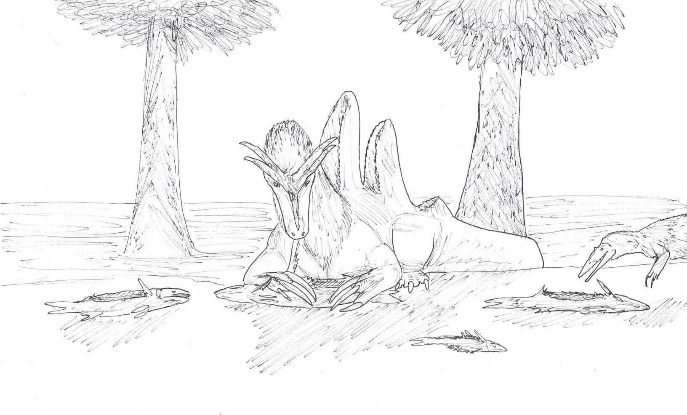
Fish hunting is frequently selective and demonstrates a degree of prey discrimination far beyond simple opportunistic feeding. Although enormous schools of fish may be available during seasonal migrations, kurajaku rarely feed indiscriminately. Instead, individuals often focus their efforts on particular segments of the population that provide the greatest energetic return for the least expenditure of effort. This selectivity becomes especially apparent during spawning migrations, when prey abundance reaches extraordinary levels and predators can afford to be highly choosy in their feeding decisions. Large reproductively active individuals are among the most frequently targeted fish. These animals possess substantially greater caloric value than smaller conspecifics, not merely because of their larger body size but because reproductive investment dramatically alters body composition. Females carrying substantial roe are particularly valuable prey. The developing eggs represent concentrated stores of lipids, proteins, minerals, and micronutrients that can exceed the energetic density of ordinary muscle tissue. In some spawning species, reproductive tissues may account for a significant proportion of total body mass, effectively transforming gravid females into highly nutritious packages of concentrated energy. Kurajaku appear remarkably adept at identifying such individuals. Visual cues associated with abdominal distension, swimming behavior, body condition, and reproductive coloration likely play important roles. Chemical signals released during spawning may also assist in locating reproductively active fish. Once identified, gravid females are often pursued preferentially even when surrounded by hundreds of less valuable alternatives. This behavior suggests that kurajaku are not merely responding to prey abundance but are actively assessing prey quality. Similarly, injured, diseased, exhausted, or post-spawning individuals are disproportionately represented among captured prey. Long-distance migrations impose enormous physiological stress on many fish species. Individuals may arrive at spawning grounds with depleted energy reserves, damaged fins, parasite burdens, fungal infections, or injuries sustained during migration. Such animals often exhibit reduced swimming performance, impaired reaction times, and diminished ability to evade predators. Kurajaku readily exploit these vulnerabilities. Post-spawning fish are particularly vulnerable. Many species experience severe physiological deterioration following reproduction. Muscle tissue may be catabolized to support reproductive investment, immune function frequently declines, and overall body condition deteriorates rapidly. These weakened individuals often become concentrated within predictable areas near spawning grounds, creating seasonal feeding opportunities that experienced kurajaku exploit with remarkable efficiency. During major migration events, feeding rates may increase dramatically. Individuals that ordinarily devote considerable time to stalking, ambush preparation, and prey assessment can instead feed almost continuously. Hunting becomes less dependent upon concealment and more focused upon efficient prey interception. Large adults may consume extraordinary quantities of fish over relatively short periods, allowing rapid accumulation of energy reserves. These seasonal resource pulses are of considerable ecological importance. The energy acquired during spawning runs may support growth, migration, reproduction, molt, or recovery from periods of reduced prey availability. In some regions, particularly productive fish migrations function as critical energetic foundations for local populations. Individuals may travel considerable distances to exploit these predictable seasonal events. Mature bulls are especially known for incorporating major fish migrations into their annual movement patterns, repeatedly visiting the same spawning rivers, estuarine channels, and coastal waterways over many decades. The consistency of these migrations allows the development of highly specialized hunting behaviors and extensive ecological knowledge regarding local hydrological conditions and prey movements. Egg predation forms another important component of the feeding ecology. Fish spawning grounds, nesting colonies, and reproductive aggregations represent extraordinarily concentrated nutritional resources. Whereas adult fish require pursuit, capture, and handling, eggs provide dense packages of nutrition that can often be consumed with minimal effort. Large spawning beds may contain millions of eggs concentrated within relatively small areas, creating temporary food sources of exceptional productivity. Kurajaku routinely exploit such opportunities whenever they become available. Individuals may move slowly through spawning grounds while systematically consuming egg masses deposited among vegetation, sediments, submerged roots, or rocky substrates. Feeding behavior during these events differs markedly from ordinary predatory activity. Rather than relying upon explosive attacks, the animal engages in deliberate harvesting behavior, using its jaws to gather large quantities of eggs directly from spawning sites. The nutritional value of these resources is substantial. Fish eggs contain concentrated stores of lipids, proteins, fatty acids, vitamins, and minerals necessary for embryonic development. Relative to the effort required for acquisition, few food sources provide greater energetic efficiency. Consequently, egg predation often becomes particularly important during periods when large prey are scarce, environmental conditions are unfavorable for hunting, or individuals are attempting to rapidly accumulate fat reserves. Hatchlings and newly emerged juvenile fish are similarly exploited. Following hatching, enormous numbers of vulnerable young fish often remain concentrated near spawning habitats before dispersing into broader aquatic systems. These dense aggregations can attract multiple kurajaku simultaneously. Although individual prey items are small, their abundance can compensate for reduced prey size, creating highly profitable feeding opportunities. Reproductive tissues themselves are frequently targeted whenever available. When adult fish are captured, roe sacs are often consumed early during feeding. Similar preferences are observed when scavenging fish carcasses. Reproductive organs, fatty visceral tissues, and nutrient-rich internal structures are commonly removed before less valuable portions of the body. Such feeding patterns indicate a sophisticated capacity to prioritize the most profitable anatomical components of available prey.
Scavenging contributes significantly to annual caloric intake and represents a far more important component of kurajaku feeding ecology than is often appreciated. Although fully capable of killing enormous prey, kurajaku are fundamentally opportunistic predators whose behavioral strategies emphasize energetic efficiency rather than adherence to a strict predatory lifestyle. Whenever a substantial carcass becomes available, the energetic advantages of scavenging often exceed those associated with active hunting. Consequently, carrion exploitation is not merely an emergency food source but a routine and highly profitable component of the species' foraging repertoire. Unlike many apex predators that preferentially avoid carrion or are behaviorally specialized toward live prey capture, kurajaku readily exploit dead animals encountered during migrations, territorial patrols, exploratory movements, or routine hunting activities. The enormous energetic demands imposed by their size favor any behavior capable of providing substantial nutrition while minimizing injury risk and metabolic expenditure. A carcass cannot fight back, flee, drown the predator, or inflict crippling wounds. As a result, scavenging frequently represents one of the safest feeding opportunities available. Their acute olfactory capabilities play a central role in this behavior. Kurajaku possess a highly developed ability to detect decomposition-related chemical compounds across large distances. Airborne odors associated with blood, ruptured viscera, bacterial activity, tissue decay, and marine decomposition products can be identified long before visual confirmation becomes possible. Individuals often raise the head above the water surface while traveling and repeatedly sample air currents. These behaviors allow them to detect potential food sources hidden within dense vegetation, obscured by terrain, or located several kilometers away along prevailing wind directions. Floods, storms, strandings, disease outbreaks, drought mortality events, territorial conflicts, reproductive die-offs, and predation events frequently generate scavenging opportunities throughout the species' range. Seasonal flooding is particularly important. Large floodplain systems periodically concentrate dead and dying animals along shorelines, levees, debris accumulations, and isolated high-ground refugia. Floodwaters may drown terrestrial herbivores, separate juveniles from parents, or trap animals within shrinking water bodies. Following major flood events, kurajaku often intensify exploratory movements specifically to locate such resources. Coastal populations similarly benefit from marine strandings. Large marine reptiles, aquatic mammals, fish schools, and even massive offshore grazers occasionally become trapped within tidal systems or wash ashore following storms. Such carcasses may provide enough food to sustain multiple kurajaku for extended periods. Individuals frequently revisit known stranding locations where oceanographic conditions repeatedly generate carrion accumulations. Disease outbreaks represent another significant source of carrion. Wetland ecosystems often support dense concentrations of herbivores, fish, and semiaquatic animals. Epidemics, parasitic infestations, algal blooms, hypoxic events, and environmental contamination can produce sudden mortality events affecting hundreds or thousands of individuals simultaneously. Kurajaku rapidly exploit these temporary food bonanzas, often altering movement patterns to remain within affected regions until carcass availability declines. Large carcasses are processed systematically and with considerable anatomical precision. Feeding typically begins with access to soft tissues and major body cavities. The predator's powerful jaws and enlarged anterior teeth are highly effective at opening the abdominal wall, enlarging existing wounds, or exploiting naturally vulnerable regions around the pelvis, neck, and thorax. Once entry is achieved, feeding behavior becomes highly selective. Organ systems are generally consumed first because they provide exceptional nutritional value relative to their mass. The liver is particularly prized due to its concentration of fats, glycogen reserves, vitamins, and minerals. Hearts and major vascular tissues provide dense protein resources and are often removed early during feeding. Lungs are readily consumed when accessible, especially in large terrestrial prey where pulmonary tissue can constitute a substantial biomass resource. Abdominal fat reserves are among the most valuable tissues encountered within large carcasses. Lipid-rich deposits provide concentrated energy that can be metabolized efficiently and converted into long-term fat storage. During periods preceding migration, reproduction, or seasonal resource shortages, individuals appear especially attracted to carcasses containing substantial adipose reserves. Reproductive tissues likewise receive preferential attention. Gonadal structures often contain extraordinarily high concentrations of nutrients, particularly during breeding seasons. Ovarian tissues, developing eggs, testes, and associated fat deposits may be consumed before many larger muscle groups despite representing only a small fraction of total carcass mass. This pattern reflects the exceptional nutritional density of reproductive organs rather than their absolute size. Marrow-rich skeletal regions become increasingly important as feeding progresses. Although kurajaku are not specialized bone crushers in the manner of some mammalian scavengers, they possess sufficient bite force and manipulative ability to access marrow-containing structures. Limb articulations, fractured bones, vertebral joints, and exposed skeletal elements are frequently targeted after soft tissues have been depleted. Bone marrow provides highly concentrated fat reserves that remain nutritionally valuable long after other tissues begin to deteriorate. Only later are major muscle groups consumed extensively. While skeletal muscle constitutes the majority of carcass biomass, it is often less nutritionally rewarding on a per-unit basis than organs, fat deposits, and reproductive tissues. Consequently, feeding typically progresses from the most nutrient-dense tissues toward increasingly less profitable anatomical regions. This sequence maximizes nutritional gain while minimizing the time required to obtain critical resources. Competition around carcasses can be intense. Large carcasses often attract numerous scavengers, predators, and opportunistic consumers. Kurajaku generally dominate such feeding sites through sheer size and physical capability, but dominance is rarely absolute. Individuals must balance feeding opportunities against the risks posed by rival kurajaku, ba'khar, large aquatic predators, and aggressive scavengers. As a result, feeding intensity is often greatest during the earliest stages following carcass discovery when the highest-value tissues remain available. Interestingly, experienced adults appear capable of evaluating carcass quality before committing substantial feeding effort. Fresh carcasses are typically investigated aggressively, whereas advanced decomposition may elicit more cautious responses. Chemical assessment likely provides information regarding tissue condition, pathogen loads, contamination risks, and remaining nutritional value. This ability allows kurajaku to allocate feeding effort efficiently and avoid potentially hazardous food sources. For older individuals, gravid cows, injured animals, and migrating bulls, scavenging may account for a surprisingly large proportion of annual caloric intake. Rather than representing a secondary feeding strategy, carrion exploitation functions as a major pillar of the species' energetic economy. The combination of exceptional olfactory sensitivity, opportunistic behavior, anatomical versatility, and advanced spatial memory allows kurajaku to exploit carcass resources with remarkable efficiency. In many ecosystems, they function not only as apex predators but also as some of the most important large scavengers, rapidly recycling enormous quantities of biomass and linking mortality events directly into the broader food web.
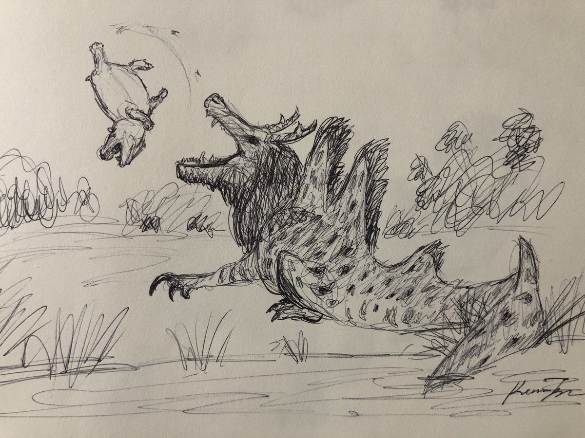
Prey size strongly influences feeding behavior and determines not only how food is acquired but also how carcasses are processed, consumed, defended, and ultimately utilized. Kurajaku do not apply a uniform feeding strategy across all prey categories. Instead, feeding behavior scales predictably with prey mass, structural defenses, tissue composition, and the environmental context in which feeding occurs. This flexibility allows individuals to maximize energetic return while minimizing wasted effort and exposure to competitors. Small prey are generally consumed with minimal processing. Fish, aquatic reptiles, juvenile mammals, waterfowl, and similarly sized animals may be swallowed largely intact following brief manipulation. The enlarged anterior teeth secure the prey while rapid repositioning movements orient it head-first whenever possible. Consumption is typically swift, often lasting only seconds. Such prey are especially important for juveniles and subadults, although adults readily exploit them whenever opportunities arise. During periods of fish abundance, individuals may consume dozens or even hundreds of small prey items in rapid succession without significant interruption. Intermediate-sized prey require more extensive processing. Animals weighing from several tens to several hundreds of kilograms are commonly dismembered before consumption. Feeding begins with the establishment of secure control over the carcass. The jaws grip and stabilize the body while the forelimbs perform highly coordinated manipulative actions. Unlike the indiscriminate tearing often associated with large predators, kurajaku employ their forelimbs with considerable precision. The enlarged manual claws anchor tissues, create tension within muscle groups, and expose vulnerable anatomical seams. Sections of flesh are removed through coordinated pulling motions involving the neck, jaws, forelimbs, and body mass. Large tendons, limb joints, and connective tissues are frequently targeted first because they provide natural points of mechanical weakness. By exploiting these structures, individuals can separate major body sections while expending relatively little energy. Once dismemberment begins, feeding generally proceeds according to tissue profitability rather than simple accessibility. Nutrient-dense organs and fatty deposits are consumed before less valuable tissues whenever possible. The feeding ecology associated with megafaunal prey is substantially different. Large herbivores may provide thousands of kilograms of edible biomass and represent feeding opportunities that can persist for days or even weeks. Once such prey are killed, the event frequently transitions from predation into carcass management. Individuals often remain near the carcass for extended periods, feeding intermittently while resting nearby between feeding bouts. The carcass effectively becomes a temporary resource center around which local activity is organized. During these prolonged feeding events, aggressive defense becomes increasingly important. Large carcasses attract a wide variety of scavengers and competing predators. Rival kurajaku, ba'khar, smaller carnivores, scavenging birds, and numerous opportunistic consumers may converge upon the resource. Consequently, feeding behavior often alternates between consumption and territorial defense. Mature adults frequently position themselves directly beside carcasses and react aggressively toward approaching competitors. Threat displays, vocalizations, scent marking, and physical intimidation are commonly employed to maintain feeding access. The aquatic environment profoundly influences how large prey are handled. Due to the exceptional length and strength of their hindlimbs, kurajaku frequently utilize the posterior portion of the body as an anchoring platform during feeding. Once prey have been subdued and forced onto the substrate, the predator often braces itself above the carcass while using the hindfeet to pin portions of the body against the bottom. This behavior is particularly common when feeding in rivers, estuaries, flooded forests, and shallow coastal environments where currents or buoyancy might otherwise complicate carcass manipulation. The hindfeet effectively function as stabilizing anchors. By securing the carcass against the substrate, the forelimbs remain free to manipulate tissues while the jaws perform tearing actions. This arrangement greatly increases feeding efficiency and prevents large carcasses from drifting away during processing. The behavior is especially important when feeding upon large semiaquatic herbivores whose bodies retain substantial buoyancy after death. Some of the most dramatic examples of this feeding strategy occur when kurajaku prey upon large amphibious megaherbivores analogs. Such animals possess exceptionally thick skin and dense connective tissues that can represent significant barriers to feeding. Rather than attempting to consume these defenses directly, kurajaku systematically remove them. Initial feeding efforts are often concentrated along naturally thinner regions around the abdomen, neck, limb insertions, and ventral surfaces. Once access is achieved, the forelimbs and jaws work together to separate extensive sections of hide from the underlying tissues. The removal of thick skin is not random. Individuals frequently strip large portions of hide away from the carcass before intensive feeding begins. These detached sheets are often left floating in the water or resting on nearby substrates while feeding proceeds on exposed tissues beneath. By eliminating the external barrier first, the predator gains direct access to the most nutritious components of the carcass. As with other large prey, feeding begins with the highest-value tissues. Internal organs are generally consumed first. The liver, heart, lungs, kidneys, digestive-associated fat deposits, reproductive organs, and major vascular tissues provide concentrated nutrition and are rapidly removed. These tissues contain exceptionally high levels of proteins, lipids, vitamins, minerals, and other essential nutrients. Their consumption allows individuals to acquire substantial nutritional benefits before decomposition or scavenger competition reduces carcass quality. Following removal of the major organ systems, attention shifts toward large muscle groups. The shoulders, neck, thighs, tail base, and other heavily muscled regions contain enormous quantities of protein-rich tissue. These areas often represent the majority of biomass consumed during extended feeding events. Feeding may continue for many hours each day as progressively deeper muscle layers are exposed and removed. Interestingly, kurajaku rarely attempt to completely consume very large carcasses. Once the most profitable tissues have been extracted, feeding efficiency declines rapidly. Thick skin remnants, heavily degraded muscle, low-fat connective tissues, portions of the skeleton, and other nutritionally marginal components provide diminishing returns. Rather than expending additional effort on these materials, individuals frequently abandon them. In aquatic environments, this abandonment often takes a distinctive form. After the most valuable tissues have been consumed, the remaining portions of the carcass are commonly discarded into deeper water or allowed to drift away with currents. Some remains sink and become available to benthic scavengers, while others may be transported considerable distances before further decomposition occurs. This behavior effectively transfers nutrients from large terrestrial and semiaquatic prey into aquatic food webs.
Resource abundance occasionally produces temporary feeding aggregations that represent some of the largest social gatherings observed within the species. During major fish runs, marine strandings, flood-driven mortality events, seasonal spawning events, mass drownings, or the discovery of exceptionally large carcasses, numerous kurajaku may converge upon the same feeding area within a relatively short period. Such concentrations can include individuals that would ordinarily remain separated by hundreds of kilometers. Mature bulls, territorial cows, subadults, dispersing juveniles, and even family groups may all become temporarily concentrated around a single resource pulse. In particularly productive environments, dozens of individuals may occupy the same river system, estuary, lagoon, or coastal feeding zone simultaneously. These gatherings do not represent true cooperative feeding, coordinated hunting, or stable social organization. Rather, they are resource-driven concentrations resulting from the temporary abundance of food. The social dynamics observed during such events differ substantially from those seen during breeding interactions or territorial disputes. Food abundance fundamentally alters the economic costs and benefits of aggression. When resources are effectively unlimited relative to immediate consumption demands, the energetic advantages of fighting decline dramatically. Consequently, behaviors that would normally provoke conflict often result only in mild displays or temporary displacement. The largest aggregations typically occur during major fish migrations. Seasonal spawning runs may concentrate immense quantities of biomass within narrow aquatic corridors. Under these conditions, prey density becomes so high that individual hunting success is virtually guaranteed. Competition shifts away from prey acquisition itself and instead becomes focused on access to particularly productive microhabitats within the feeding area. Deep channels, spawning bottlenecks, river mouths, tidal constrictions, and current breaks often attract the greatest concentrations of both fish and predators. Marine strandings can generate similar social phenomena. The carcass of a massive marine grazer, aquatic mammal, or giant marine reptile may contain enough edible tissue to sustain multiple adult kurajaku simultaneously. Such resources often attract individuals from considerable distances. Because carcass abundance greatly exceeds the consumption capacity of any single predator, temporary tolerance frequently develops among otherwise antagonistic individuals. Several adults may feed upon different portions of the same carcass while maintaining relatively stable spacing and avoiding direct confrontation. Flood-driven mortality events produce some of the most dramatic examples of feeding aggregation behavior. Seasonal floods occasionally drown large numbers of herbivores, trap aquatic animals within isolated pools, or concentrate weakened prey within shrinking refugia. The resulting resource pulse may persist for weeks. During these periods, local predator density can increase substantially as individuals repeatedly return to profitable feeding locations. Entire sections of floodplain may become temporary centers of predator activity. Despite these concentrations, social interactions remain highly structured. Individuals maintain personal space whenever possible. Direct physical contact is generally avoided. Feeding positions are established through assessment, display, and spatial negotiation rather than cooperation. Animals continuously monitor one another while feeding, remaining aware of the location, posture, and behavior of nearby competitors. Social hierarchy strongly influences feeding order and resource access. Larger adults generally dominate prime feeding locations and obtain first access to the most profitable portions of carcasses or prey concentrations. Mature bulls, particularly exceptionally large individuals, occupy the highest positions within these temporary hierarchies. Prime-aged territorial cows are similarly dominant and frequently outrank younger adults or dispersing subadults despite being smaller than some males. However, dominance within feeding aggregations differs from dominance during territorial disputes. The objective is rarely exclusion. Instead, dominant individuals secure access to the most profitable feeding opportunities while tolerating subordinate animals at greater distances. This distinction is important because the economics of resource abundance favor coexistence rather than monopolization. A dominant kurajaku may displace another individual from a preferred carcass opening, spawning channel, or shoreline position without attempting to drive it entirely from the feeding area. Hierarchy is communicated primarily through nonviolent means. Postural displays are especially important. Dominant individuals elevate the torso, expand the cervical plumage, raise the dorsal sail, and orient broadside toward competitors. These displays emphasize body size, physical condition, and confidence. Vocalizations further reinforce status relationships. Deep growls, resonant bellows, booming calls, and low-frequency rumbles communicate dominance while minimizing the need for direct combat. Displacement behavior is common. A dominant individual may simply advance toward a subordinate while maintaining an elevated posture. In most cases, the subordinate withdraws voluntarily before physical contact occurs. Such interactions often last only a few seconds and result in the reorganization of feeding positions rather than overt aggression. This behavioral system allows hierarchies to remain stable while minimizing injury risk. Actual fighting is surprisingly uncommon given the size and weaponry of the participants. The costs associated with serious injury are immense. A damaged limb, infected wound, or impaired hunting ability can have profound consequences for future survival and reproductive success. Consequently, even highly dominant individuals generally avoid unnecessary escalation. Resource abundance further reduces incentives for conflict because alternative feeding opportunities remain readily available. Tolerance levels are significantly greater than those observed in many related apex predators. Several ecological factors likely contribute to this phenomenon. Aquatic ecosystems often produce extraordinarily large seasonal resource pulses capable of supporting numerous predators simultaneously. Fish migrations, spawning aggregations, carcass accumulations, and flood mortality events frequently generate more food than any individual can reasonably consume. Under such circumstances, aggressive exclusion becomes inefficient and energetically wasteful. This increased tolerance is particularly evident among mature bulls. Outside the breeding season, multiple adult males may feed within relatively close proximity for extended periods. Individuals often maintain stable spacing while exploiting the same resource. Although dominance relationships remain evident, overt hostility is limited. Such tolerance contrasts sharply with reproductive contexts, where competition for mates can produce much more intense interactions. Family groups also benefit from these resource concentrations. Cows accompanied by offspring frequently exploit major feeding events to accelerate juvenile growth. Older offspring often feed alongside their mother with minimal conflict. In some cases, multiple generations may be present simultaneously, creating temporary feeding assemblages that resemble social groups despite lacking formal cooperative organization. As resources decline, however, tolerance typically decreases. When prey concentrations disperse, carcasses become depleted, or seasonal migrations conclude, competition intensifies. Hierarchical interactions become more frequent, spacing increases, and individuals gradually resume their usual patterns of territoriality or solitary movement. The aggregation dissolves not because of social breakdown but because the ecological conditions that permitted coexistence no longer exist.
Ontogenetic Differences
Ontogenetic behavioral change in kurajaku is among the most pronounced known within Apeirovenatoridae. Individuals do not merely increase in size as they mature; they undergo a series of profound ecological, locomotor, cognitive, and social transitions that effectively place different age classes into distinct functional roles within the ecosystem. From hatchling to senescent bull, virtually every aspect of behavior changes. Hunting strategy, habitat preference, locomotion, risk tolerance, social interactions, movement patterns, territorial behavior, and feeding ecology all shift as body size increases and the animal's relationship with aquatic environments becomes progressively more specialized.
Newly hatched chicks are highly exploratory animals characterized by intense curiosity and relatively poor threat discrimination. Although heavily dependent upon maternal protection, they spend much of their waking hours investigating the environment. Vegetation, floating debris, water currents, insects, small fish, unfamiliar odors, and moving shadows all attract attention. Young chicks routinely interact with objects and organisms that provide little immediate nutritional value, suggesting that exploration itself serves an important developmental function.
Play behavior is particularly common during this stage. Chicks chase one another through shoreline vegetation, pounce on floating objects, wrestle with siblings, snap at insects, and engage in mock ambushes against small animals. These activities often appear inefficient or purposeless from a feeding perspective, yet they play a critical role in developing motor coordination, sensory integration, depth perception, and prey-handling skills. Many adult hunting behaviors first emerge in exaggerated and often comical form during these early developmental periods.
Unlike adults, hatchlings and young juveniles are relatively buoyant. Their skeletons have not yet achieved the extraordinary density characteristic of mature animals, and their overall body proportions remain considerably lighter. Consequently, young kurajaku are substantially better swimmers than their parents. They readily traverse deeper water, utilize floating vegetation, and exploit habitats that would be difficult or energetically inefficient for large adults. In many respects, their ecology more closely resembles that of generalized semiaquatic predators than the highly specialized benthic hunters they will eventually become.
During the first several years of life, juveniles function primarily as terrestrial and shoreline predators. Small fish, amphibians, aquatic invertebrates, nesting birds, juvenile reptiles, carrion fragments, and other easily subdued prey dominate the diet. Hunting behavior remains highly opportunistic. Individuals often pursue prey impulsively, abandoning concealment prematurely or committing to attacks before optimal positioning has been achieved. Failed hunting attempts are frequent, but these failures form the foundation of later behavioral competence.
As juveniles increase in size, a gradual ecological transition begins. Skeletal density increases steadily. Pneumatic spaces become progressively reduced. Muscle mass expands. The tail becomes more powerful. Sail structures enlarge. The body acquires the heavy proportions that define mature individuals. These changes fundamentally alter locomotor performance. Swimming efficiency declines while benthic mobility improves. Individuals increasingly spend time on the bottoms of waterways rather than near the surface.
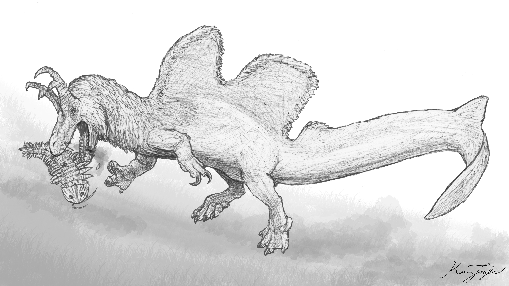
Subadults occupy one of the most challenging phases of the life cycle. Ecologically, they exist between worlds. They have largely outgrown the small-prey niches that sustained them during early development but remain too small to compete effectively with mature adults for large prey resources or prime feeding territories. Consequently, subadults often exhibit the greatest behavioral flexibility of any age class.
During this period, individuals exploit a wide range of food sources including fish runs, spawning aggregations, carrion, nesting colonies, medium-sized herbivores, semiaquatic vertebrates, and opportunistic scavenging opportunities. Resource diversity is often greater than that observed in mature adults. Subadults frequently travel extensively and may experiment with a variety of hunting strategies before settling into more specialized behavioral patterns later in life.
Learning reaches exceptional importance during this stage. Subadults possess the physical capability to exploit increasingly dangerous prey but lack the experience necessary to do so consistently. Many injuries occur during these years as confidence outpaces judgment. Failed attacks, territorial encounters, environmental hazards, and competition with larger predators all contribute to elevated mortality rates. Individuals that survive this phase often emerge with highly refined behavioral repertoires shaped by personal experience.
Dispersal behavior typically occurs during late juvenile or subadult development and represents one of the most important transitions in the life cycle. The timing of dispersal varies enormously. Some individuals depart maternal territories relatively early, while others remain associated with family groups for many years. This extended period of parental tolerance is characteristic of many advanced apeirovenatorids and contributes significantly to the success of the lineage.
Adult cows undergo another substantial behavioral shift following reproductive maturity. Their movements become increasingly localized and predictable. Exploration declines while territorial fidelity increases. Suitable nesting habitats, productive feeding areas, flood-safe refugia, and reliable aquatic access points become the central organizing features of daily life. Behavioral priorities increasingly revolve around territory maintenance, reproductive success, offspring protection, and resource stability.
Maternal behavior becomes one of the defining features of adult female ecology. Cows invest extraordinary amounts of time and energy into offspring defense and development. Their behavioral flexibility remains high, but much of it becomes directed toward brood management rather than personal growth or exploration. As females age, they often become increasingly territorial and less tolerant of unrelated adults, particularly other reproductive females.
Adult bulls experience perhaps the most dramatic behavioral transformation of any age class. Unlike females, whose movements gradually contract around stable territories, males become progressively more mobile throughout life. As body size increases, opportunities for long-distance movement expand. Larger bulls can exploit broader ranges of prey, travel greater distances, and tolerate environmental conditions that would challenge smaller individuals.
Migration becomes increasingly important. Mature bulls may move between major wetland systems, estuaries, inland seas, river networks, and breeding territories separated by hundreds or even thousands of kilometers. Their lives become organized around large-scale resource tracking rather than local territorial stability. Spatial memory reaches extraordinary levels during this period. Individuals repeatedly revisit the same waterways, feeding grounds, migration corridors, and breeding regions over spans of decades.
The largest mature bulls become highly specialized megafaunal predators. Their prey spectrum shifts toward the largest available herbivores, marine grazers, semiaquatic mammals, and other high-biomass resources. Risk assessment becomes increasingly conservative. These animals possess enormous reproductive value and cannot afford unnecessary injuries. Hunting decisions become highly selective and remarkably calculated. Old bulls represent the behavioral extreme of the species. These colossal individuals often function as ecological nomads, traversing continental waterways and exploiting resources unavailable to smaller predators. Their movements may connect distant populations separated by immense geographic barriers. Through both migration and reproduction, they facilitate gene flow across much of the species' range. Behaviorally, old bulls are characterized by extraordinary patience and efficiency. They rarely engage in impulsive actions. Hunting becomes increasingly selective. Conflicts are resolved through display whenever possible. Movement is purposeful and deliberate. Decades of accumulated experience allow them to interpret environmental information with remarkable precision. Their immense size grants near-total ecological dominance within shallow aquatic ecosystems. Few animals are capable of challenging them directly. Consequently, many of the behavioral constraints imposed upon younger age classes disappear. They can exploit prey resources inaccessible to smaller individuals, occupy habitats that would be contested by lesser predators, and travel through ecosystems with a degree of freedom unmatched by any other predatory vertebrate on Kaimere.
07 · FEEDING ECOLOGY
Diet
The kurajaku is an obligate hypercarnivore whose feeding ecology is among the most specialized of any known megaraptoran. Unlike terrestrial apex predators that primarily exploit migratory herbivore herds or ambush prey along forest margins, the kurajaku is fundamentally adapted for the exploitation of large-bodied aquatic and semi-aquatic vertebrates inhabiting wetlands, estuaries, inland seas, coastal shallows, drowned forests, river systems, and seagrass meadows. Its entire anatomy—from its dense skeleton and negatively buoyant body to its grappling forelimbs and fluked tail—is optimized for securing prey within shallow aquatic environments. Consequently, dietary composition is governed less by taxonomic preference than by habitat accessibility and the mechanical advantages provided by water.
Throughout its range, the species occupies the terminal predatory niche within shallow-water ecosystems. Adult kurajaku routinely consume prey weighing several tons and are among the few predators capable of regularly subduing the largest herbivores inhabiting the Trakaiam Sea, major wetland basins, and extensive floodplain systems. In ecological terms, the species functions as the aquatic equivalent of a terrestrial megatheropod, exerting top-down regulation upon entire herbivore guilds occupying submerged grasslands, marshes, river corridors, and coastal lagoons. The immense productivity of the Trakaiam seagrass megameadows and continental wetland systems provides the energetic foundation necessary to sustain such enormous body size. Dietary composition varies considerably between sexes. Territorial cows generally exploit local prey communities and derive most of their caloric intake from freshwater and estuarine fauna within established home ranges. Bulls, by contrast, often roam across multiple ecosystems and regularly exploit marine resources unavailable to resident females. As a result, mature bulls exhibit broader dietary breadth and frequently consume prey substantially larger than those typically taken by cows.
Primary Dietary Components
The dietary foundation of adult kurajaku consists of large aquatic and semi-aquatic herbivores inhabiting shallow-water environments. Within the Trakaiam Sea, the most important prey species are the numerous seagrass-grazing megaherbivores supported by the Prairie Below the Waves ecosystem. The extraordinary productivity of these meadows sustains dense populations of sirenians, marine sloths, desmostylians, and other large herbivorous vertebrates that form the primary caloric base for roaming bulls.
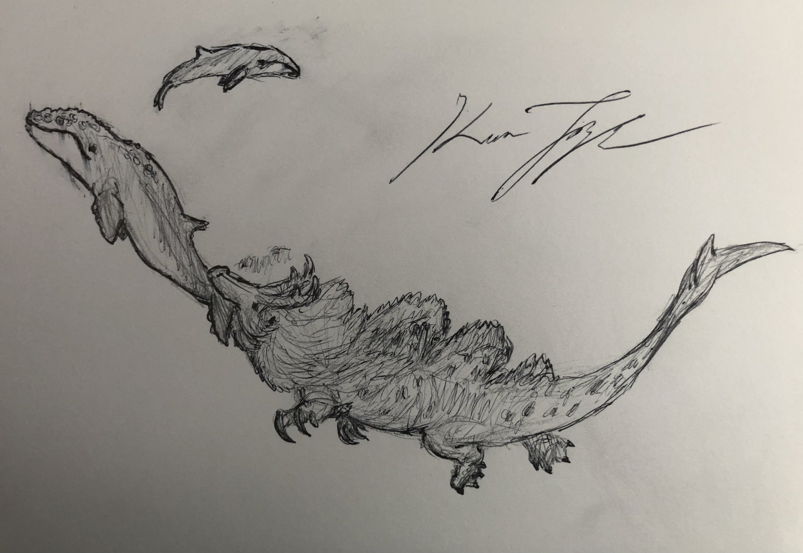
Particularly important are cetaceans, large sirenians, marine sloths, desmostylians, and other bottom-feeding megafauna whose feeding behavior concentrates them within predictable grazing grounds. Among the most prestigious and energetically valuable prey are bilaruk, commonly known as Kaimeran leviathans. These massive multituberculate grazers represent one of the highest-calorie prey resources available to any predator on Kaimere. Successful predation upon a mature bilaruk can sustain an adult bull for extended periods and may provide nutritional reserves sufficient to support long-distance migrations between breeding populations.
Within inland wetlands and floodplain systems, prey composition shifts toward large freshwater herbivores. Hippos constitute particularly important prey throughout much of the species' range. Their tendency to remain close to water aligns perfectly with kurajaku hunting strategies.
In the Known World, this prey base is extend toward sirenians, cetaceans, sloths, shield drakes, bovids, and spirit drakes. Likewise on Kairul, swamp rhinos, swamp drakes, elk drakes, deer charitheres, turtleheads, and numerous other wetland-associated herbivores are taken opportunistically when circumstances permit.
Juvenile and subadult megafauna represent especially important prey classes. Young titanosaurs, immature oliphaunts, juvenile beraphaunts, and various wetland-associated dinosaurian herbivores are frequently targeted because they provide substantial caloric return while presenting considerably lower injury risk than fully mature adults. Seasonal concentrations of young herbivores within floodplains create particularly productive hunting opportunities.
Fish constitute a secondary but ecologically important component of the diet. During most of the year, piscivory contributes relatively little to adult energy budgets. However, seasonal fish migrations can temporarily transform local feeding behavior. Voyager trout, dalejad'ha, and other large migratory fishes may be consumed in substantial quantities during spawning congregations. Predation during these events is strongly selective, with weakened, injured, diseased, senescent, or reproductively exhausted individuals disproportionately represented among captures. Particularly notable is the species' preference for gravid fish. Kurajaku frequently tear open egg-bearing females and consume the roe-rich reproductive tissues first. Such tissues possess exceptionally high concentrations of lipids, proteins, and micronutrients and represent one of the most nutrient-dense food sources available during seasonal fish runs.
Carrion is exploited readily when encountered. Large carcasses floating in wetlands, stranded along shorelines, or deposited within seagrass meadows are seldom ignored. Nevertheless, carrion remains a supplemental resource rather than a dietary foundation. The species is anatomically and behaviorally optimized for active predation, and fresh kills generally provide greater nutritional value than decomposing remains.
Smaller prey including reptiles, birds, turtles, amphibians, crustaceans, and medium-sized mammals are occasionally consumed but contribute minimally to adult caloric intake except among younger age classes.
Fluid Intake
Like most large carnivorous archosaurs, kurajaku derive a substantial proportion of their water requirements directly from prey tissues. Blood, muscle, viscera, adipose tissue, reproductive organs, and body fluids collectively provide large quantities of metabolically available water. This source is particularly important for migratory bulls traversing saline coastal environments, where access to freshwater may be intermittent. Nevertheless, direct drinking remains common.
Cows inhabiting freshwater wetlands frequently drink from rivers, lakes, marsh channels, and floodplain pools. Bulls occupying estuarine and marine environments often travel considerable distances to access freshwater inflows, spring-fed channels, or river mouths. Although capable of tolerating incidental saltwater ingestion, they are not physiologically adapted for sustained reliance upon marine water as a primary hydration source. During periods of intense feeding, especially after consuming large herbivores, fluid requirements may be almost entirely satisfied through prey-derived moisture.
Conversely, prolonged fasting, territorial defense, nesting activity, and seasonal droughts increase reliance upon direct drinking. Chicks and juveniles exhibit proportionally greater dependence upon freshwater sources due to their higher surface-area-to-volume ratios and elevated metabolic demands associated with rapid growth.
Ontogenetic Differences
Diet changes profoundly throughout the life history of the species. Newly hatched chicks function primarily as opportunistic mesocarnivores. Their small size, limited bite force, and underdeveloped grappling capabilities restrict them to insects, crustaceans, amphibians, small fish, carrion fragments, mollusks, aquatic invertebrates, and small vertebrates captured within the mother's territory. Maternal provisioning remains important during this stage, with chicks frequently feeding on scraps derived from the cow's kills.
As juveniles grow, they begin actively hunting increasingly large prey. Fish become particularly important during this period because they are abundant, relatively easy to capture, and rich in protein necessary for rapid growth. Juveniles also consume turtles, waterfowl, small mammals, juvenile drakes, amphibians, and various wetland reptiles.
Subadults occupy a transitional dietary niche. Individuals between approximately three and ten years of age increasingly target medium-sized vertebrates and begin participating in hunts involving larger prey. However, they remain mechanically incapable of reliably subduing the multi-ton herbivores routinely taken by adults. Consequently, scavenging, opportunistic predation, and exploitation of seasonal fish runs contribute disproportionately to subadult energy budgets. Young bulls frequently spend years following migratory fish concentrations and exploiting productive estuarine ecosystems before reaching sufficient size to specialize on megafauna. Others will also follow migratory prey routes of other prey items.
Adult cows derive most of their nutrition from medium- to large-bodied herbivores inhabiting their territories. Because territorial constraints limit movement, cows generally exhibit narrower prey spectra than bulls but often possess greater familiarity with local prey behavior. Adult bulls display the greatest dietary specialization toward megafaunal prey. Their immense body size permits exploitation of food resources inaccessible to virtually all other predators. Mature bulls frequently ignore smaller prey entirely when larger herbivores are available.
Old bulls represent the extreme endpoint of this progression. Some individuals become highly specialized hunters of leviathans, sea hippos, bilgarobi, and other gigantic prey whose body masses may exceed several tens of tonnes.
Mineral Supplementation and Incidental Intake
The vast majority of mineral requirements are obtained directly from prey tissues. Blood supplies iron, sodium, potassium, and numerous trace elements. Muscle tissue provides phosphorus and magnesium. Organ tissues, particularly liver and kidneys, supply essential micronutrients. Cartilage, tendons, and connective tissues contribute additional calcium and phosphorus.
Although kurajaku lack specialized bone-crushing dentition, incidental ingestion of skeletal material is common. Bone fragments are frequently consumed while dismembering carcasses, especially when feeding on young herbivores or fish. Such material likely contributes significantly to calcium acquisition.
Eggs and fish roe constitute particularly valuable nutritional resources due to their exceptionally high concentrations of vitamins, fatty acids, and developmental minerals. Their disproportionate nutritional value likely explains the species' repeated targeting of gravid fish and nesting aggregations.
Incidental sediment ingestion occurs regularly during benthic feeding. Because prey are often subdued and consumed on muddy substrates, substantial quantities of sand, silt, organic detritus, shell fragments, and plant material may enter the digestive tract. While generally accidental, such material may contribute trace minerals unavailable through soft tissues alone. Geophagy has not been conclusively documented. However, some populations occasionally visit mineral-rich shoreline deposits and exposed evaporite margins. Whether these visits serve nutritional purposes or simply coincide with prey concentrations remains uncertain.
Seasonal Dietary Dynamics
Seasonality exerts profound influence upon prey availability throughout the kurajaku's range. In the great wetland basins of eastern Arvel, the wet season produces a dramatic expansion of aquatic habitat. Flooded forests, submerged floodplains, and newly connected waterways disperse prey across vast areas. During this period, kurajaku increasingly target herbivores moving through inundated landscapes, including hippos, beraphaunts, oliphaunts, and juvenile megaherbivores. Flooding also generates abundant opportunities for ambush predation as animals navigate unfamiliar channels and submerged terrain.
As waters recede during the dry season, prey becomes progressively concentrated around permanent channels, lakes, and wetlands. This concentration dramatically increases hunting efficiency. Herbivores are forced into predictable movement corridors, while fish become trapped within shrinking pools and channels. Predation rates often increase substantially during this period.
The Sheklat riverlands exhibit a more pronounced wet — dry cycle. During the wet season, floodwaters expand across the floodplain, dispersing herbivore populations but simultaneously increasing their vulnerability. Saturated substrates reduce mobility in large ungulates, elephant sloths, and ceratopsians, while newly inundated forests create ambush opportunities unavailable during drier months. Kurajaku frequently patrol flooded forest margins and submerged grasslands during this period, targeting prey forced to navigate unfamiliar aquatic terrain. Juvenile herbivores born during the seasonal pulse of primary productivity contribute substantially to annual food intake. As waters recede, prey become increasingly concentrated along permanent channels and shrinking wetlands. This compression dramatically improves hunting efficiency, and large prey such as water buffalo, aurochs, elephant sloths, and hippopotamuses become more predictable in both movement and distribution.
The greatest seasonal dietary specialization occurs within the Seridic wetlands, one of the most productive freshwater systems in the Known World. The hydrological stability of the Seridic basin prevents complete seasonal drying, but annual fluctuations in water level nevertheless restructure prey communities on a continental scale. During the wet season, floodwaters expand into immense marshes, drowned forests, and shallow floodplain lakes, creating an explosion of biological productivity. Fish disperse into flooded woodlands to spawn, aquatic vegetation proliferates, and herbivorous megafauna move widely across the basin. During this phase, kurajaku increasingly exploit aquatic and semi-aquatic prey. Elephant sloths, water buffalo, hippopotamuses, crocodilians, giant fish, and juvenile wetland dinosaurs become particularly important food sources. Flooded forests also permit close approach to large prey, allowing kurajaku to use submerged ambush tactics while remaining concealed beneath turbid water and dense aquatic vegetation. Massive seasonal fish runs further contribute to dietary diversity, especially among subadults and resident bulls inhabiting major river systems. These fish concentrations attract large numbers of predators, but the immense body size of kurajaku allows dominant individuals to monopolize particularly productive spawning sites. As the Seridic dry season progresses, the wetlands contract into a network of permanent rivers, lakes, channels, and marsh basins. This contraction produces one of the largest seasonal concentrations of vertebrate biomass anywhere in the Known World. Vast herds of water buffalo, aurochs, hippopotamuses, and elephant sloths aggregate around persistent water sources, while fish become trapped within shrinking waterways. Kurajaku hunting success rises dramatically during this period. Prey movement becomes highly predictable, escape routes are restricted, and weakened individuals accumulate as competition for resources intensifies. Adult bulls often establish temporary feeding territories around major channels, exploiting repeated opportunities to ambush herbivores entering the water. Large leviathans inhabiting the deeper waterways may also become more vulnerable as reduced water volume increases encounter frequency. Consequently, many Seridic kurajaku accumulate substantial fat reserves during the late dry season, enabling them to withstand subsequent periods of prey dispersal. The seasonal concentration of prey additionally explains why the largest resident bulls known from the species frequently originate from the Seridic basin, where annual pulses of concentrated biomass can support unusually rapid growth and exceptional longevity.
Within the Trakaiam Sea, seasonal changes are less extreme but remain ecologically significant. Migratory movements of seagrass grazers, reproductive aggregations, and shifting productivity gradients alter prey distributions throughout the year. Bulls frequently adjust migration routes to coincide with these predictable concentrations of biomass. Fish spawning migrations represent one of the most important seasonal dietary events. During voyager trout and comparable spawning runs, large numbers of kurajaku temporarily shift from megafaunal specialization toward opportunistic piscivory. Although fish rarely dominate annual caloric intake, these events provide enormous quantities of easily acquired energy at minimal risk. Reproductive cycles also influence dietary patterns. Nesting cows often increase feeding intensity prior to oviposition, accumulating substantial energy reserves to support prolonged nest defense. During incubation, feeding becomes more localized and opportunistic. Bulls exhibit a different seasonal pattern. Prior to breeding movements, many individuals enter periods of intensive feeding characterized by the pursuit of exceptionally large prey. Accumulated energy reserves support long-distance migrations between breeding populations and sustain the elevated metabolic demands associated with courtship, competition, and territorial display.
In Kairul, seasonal dynamics differ again. There, immense wetland networks, interconnected rivers, and kurajaku-dug channels create an environment more analogous to a continent-scale floodplain than a conventional river system. Seasonal rainfall alters water levels but rarely produces the extreme contractions observed in the Crescent. Consequently, prey remains relatively available year-round. Seasonal changes primarily affect prey composition rather than abundance. During wetter periods, aquatic herbivores and fish become more prominent dietary components as expanded waterways facilitate underwater pursuit. During drier intervals, grazing mammals, swamp drakes, pachycephalosaurs, neomynodont rhinos, and other terrestrial herbivores increasingly utilize exposed floodplain corridors, creating additional hunting opportunities. Because prey remains abundant throughout the annual cycle, Kairulan kurajaku exhibit less pronounced seasonal specialization than populations elsewhere.
Across all regions, reproductive cycles of prey species introduce additional seasonal variation. Calving seasons among buffalo, aurochs, elephant sloths, ceratopsians, and numerous wetland herbivores produce predictable surges of vulnerable juveniles. These periods are exploited heavily by females raising offspring, whose energetic demands are elevated during chick provisioning. Similarly, mating seasons among leviathans, large fish, and aquatic mammals generate temporary increases in aggressive behavior, distraction, and injury rates among prey populations. Experienced kurajaku routinely exploit these conditions, targeting weakened individuals whose defensive capabilities are compromised by reproductive activities.
08 · ECOLOGY
Niche
The kurajaku occupies one of the most unusual apex predator niches known within the modern Kaimeran biosphere. Although taxonomically a megaraptoran theropod, ecologically it functions less as a conventional terrestrial dinosaur and more as a gigantic benthic ambush predator occupying the interface between terrestrial, freshwater, estuarine, and shallow marine ecosystems. Across much of its range, particularly within the Trakaiam Sea, the great wetlands of Ni'Khar, the wetland basins of Arvel, and the western wetland systems of Kairul, the species serves as the terminal regulator of large-bodied aquatic and semi-aquatic herbivores.
Unlike apex terrestrial predators such as the zentaur, whose influence is centered upon megaherbivore movement corridors and upland landscapes, the kurajaku is fundamentally a predator of ecological bottlenecks. Its dominance emerges wherever geography, hydrology, or behavior force large animals into constrained aquatic spaces. River crossings, estuarine channels, floodplain bottlenecks, submerged grazing grounds, seagrass meadows, wetland migration routes, and shoreline feeding areas all represent focal points of predatory activity. The species therefore occupies a niche best described as a macrofaunal aquatic regulator. Rather than controlling prey populations primarily through numerical suppression, kurajaku regulate how large animals utilize water itself.
In ecosystems where the species is abundant, water ceases to function as a universal refuge. Instead, aquatic habitats become zones of elevated predation risk that restructure movement patterns, habitat selection, reproductive behavior, and even evolutionary trajectories of entire herbivore communities. At ecosystem scales, the kurajaku functions simultaneously as apex predator, ecological engineer, migratory facilitator, carrion producer, and community stabilizer.
Habitat Specialization and Ecosystem Position
The kurajaku is unusual among large predators in that it occupies an enormous diversity of aquatic and semi-aquatic habitats while maintaining a remarkably consistent ecological function. Most apex predators exhibit substantial niche divergence across environmental gradients, often shifting prey preferences, hunting strategies, or trophic positions in response to local conditions. Kurajaku, by contrast, display extraordinary ecological conservatism. Whether inhabiting freshwater floodplains, estuarine marshes, coastal lagoons, mangrove forests, inland seas, or marine seagrass ecosystems, they remain fundamentally the same animal: a massive benthic ambush predator specialized for dominating shallow-water environments and exploiting large vertebrate prey constrained by aquatic terrain.
This specialization is rooted not in any single habitat type but in a particular set of environmental conditions. Across their entire range, kurajaku consistently select ecosystems where water depth permits substrate contact, where prey movement is predictably constrained by aquatic features, and where visibility is sufficiently limited to facilitate ambush predation. The species is therefore best understood not as a freshwater predator, marine predator, wetland predator, or estuarine predator individually, but as a predator of shallow-water structural environments. The physical characteristics of these systems vary enormously, yet they create remarkably similar ecological opportunities.
In the freshwater wetlands of Arvel and the Crescent Basin of Ni'Khar, kurajaku occupy an ecological position comparable to that held by large terrestrial apex predators in upland environments. River channels, oxbow lakes, flooded forests, marsh corridors, and seasonally inundated floodplains serve as the primary arenas of predatory activity. Within these systems, large herbivores are repeatedly forced into aquatic environments to access food resources, migration routes, mineral deposits, breeding grounds, or dry-season refugia.
The transition from land to water immediately alters the balance of power between predator and prey. Many herbivorous species capable of impressive terrestrial locomotion become dramatically less effective once submerged. Running speeds decline. Maneuverability decreases. Visibility becomes limited. Group cohesion deteriorates. Individuals become separated by vegetation, channels, submerged obstacles, and variable water depths. Kurajaku exploit precisely these vulnerabilities. Rather than competing directly with terrestrial predators in open landscapes, they dominate the ecological boundary between terrestrial and aquatic ecosystems, intercepting animals at moments when environmental conditions reduce the effectiveness of conventional anti-predator strategies.
The extensive freshwater systems of Arvel are particularly important because they support large populations of semiaquatic megaherbivores. Here kurajaku function as ecosystem regulators, influencing movement patterns, habitat selection, and population dynamics across vast wetland networks. Their presence creates landscapes of fear extending far beyond actual kill sites. Herbivores frequently alter migration routes, feeding schedules, shoreline use, and breeding behavior in response to predator activity. Consequently, the ecological influence of kurajaku extends well beyond direct predation.
Within the Seridic Wetlands of Ni'Khar and the immense marsh complexes of Kairul, the species occupies a similar trophic position but under conditions of substantially higher biological productivity. These systems contain some of the most extensive aquatic vegetation communities on Kaimere and support extraordinary concentrations of fish, aquatic invertebrates, semiaquatic mammals, and shoreline herbivores. The resulting abundance of prey allows kurajaku populations to reach densities rarely observed elsewhere. Unlike many apex predators that require enormous territories to secure sufficient food resources, individuals inhabiting highly productive marsh ecosystems may maintain relatively compact home ranges while still acquiring substantial energetic returns. This increased resource availability also promotes greater residency, particularly among adult females. Territories remain stable for decades, nesting success improves, juvenile survival increases, and population turnover slows. The species thus reaches some of its highest local abundances within these environments despite remaining fundamentally solitary in social organization. The structural complexity of marsh systems further enhances the effectiveness of their hunting strategy. Dense emergent vegetation fragments visibility. Water depths fluctuate over short distances. Floating plant communities create concealed travel corridors. Muddy substrates reduce prey mobility. Every aspect of the environment amplifies the advantages conferred by the kurajaku body plan. Consequently, these wetlands function as some of the most favorable habitats available anywhere within the species' range.
The Trakaiam Sea represents the ultimate expression of kurajaku ecological specialization and serves as the evolutionary center of gravity for the largest members of the genus. Here the species transcends its role as a freshwater wetland predator and becomes a dominant force within one of the most productive marine ecosystems on the planet. The Prairie Below the Waves, an immense complex of seagrass meadows extending across shallow continental shelves, supports extraordinary levels of primary productivity. Vast fields of marine vegetation sustain enormous populations of grazing vertebrates, filter feeders, fish, and associated megafauna. Within these marine grasslands, mature bulls achieve ecological conditions unavailable anywhere else in Kaimere. The sheer abundance of food allows individuals to maintain body masses that would be impossible within freshwater systems alone. Large marine herbivores, giant seagrass grazers, migratory aquatic megafauna, and seasonal fish concentrations provide an almost continuous supply of potential prey. As a result, the largest bulls become increasingly specialized marine predators while retaining the same fundamental hunting strategies employed by their freshwater relatives. Remarkably, even at these enormous sizes, their ecological role remains largely unchanged. They continue to function as benthic ambush predators. They continue to exploit shallow-water environments. They continue to rely on concealment, substrate stability, and environmental constraints that limit prey mobility. The prey species become larger and the ecosystems more expansive, but the underlying niche remains recognizable.
This ecological consistency is one of the defining characteristics of the genus. Most large predators occupying such diverse environments would be expected to exhibit substantial morphological divergence, behavioral specialization, or trophic partitioning. Kurajaku instead demonstrate extraordinary niche fidelity. A marsh-dwelling female in Kairul and a forty-ton marine bull in the Trakaiam Sea differ dramatically in body size, movement patterns, and prey preferences, yet both occupy essentially the same ecological position within their respective ecosystems.
At the community level, kurajaku function as apex regulators of shallow-water vertebrate biomass. They influence the abundance, distribution, behavior, and habitat use of countless prey species. Their effects propagate throughout aquatic food webs through both consumptive and non-consumptive pathways. Direct predation removes individuals from populations. Indirect behavioral effects alter feeding patterns, migration routes, reproductive behavior, and habitat selection. Entire ecological communities may be structured around avoiding locations where kurajaku are likely to occur.
Unlike pursuit predators that primarily influence prey through direct mortality, kurajaku exert much of their ecological influence through environmental dominance. They effectively monopolize high-risk aquatic corridors. River crossings, estuarine bottlenecks, seagrass channels, floodplain passages, and shoreline access points become zones of elevated predation risk. Herbivores must continually weigh the nutritional benefits of accessing these habitats against the danger posed by resident predators.
The species also occupies an important role as both predator and scavenger. Carcasses abandoned after feeding events provide resources for numerous smaller consumers. Large kills may support entire scavenger communities for days or weeks. Nutrients transported from marine systems into freshwater environments—or vice versa through migratory individuals—further connect ecosystems that might otherwise remain relatively isolated.
The Aquatic Apex Predator Paradigm
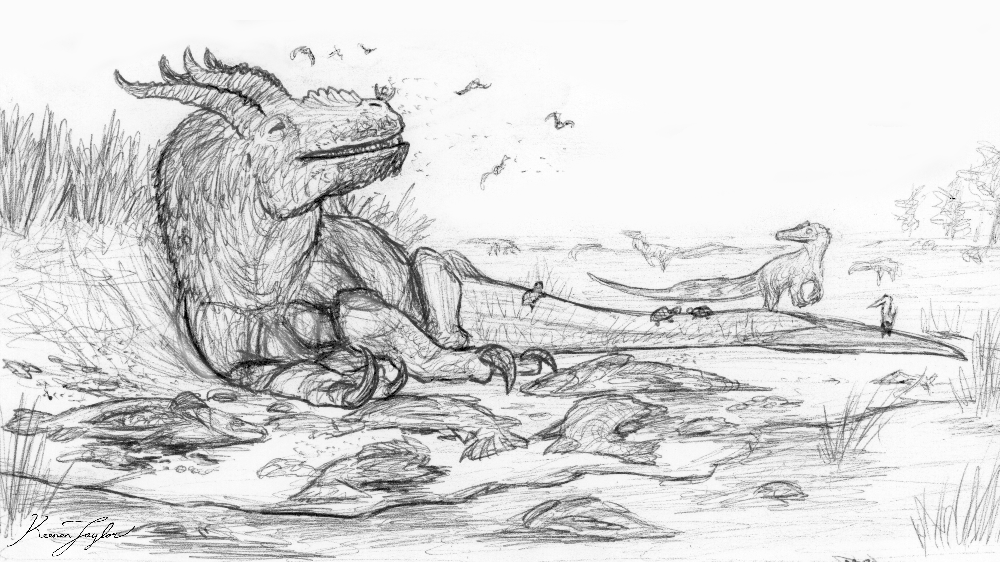
The ecological role of the kurajaku is best understood through what may be termed the Aquatic Apex Predator Paradigm, a niche strategy fundamentally different from that employed by most terrestrial or marine superpredators.
Across Kaimere, apex predators generally operate within a single environmental framework. Terrestrial hunters dominate landscapes above the waterline, while marine predators dominate fully aquatic ecosystems. Kurajaku occupy neither category completely. Instead, they specialize on the biological and physical interface between them. They are predators of transition zones, ecological boundaries, and habitat crossings. This position grants access to prey resources that are unavailable, inaccessible, or prohibitively dangerous for most competitors.
Unlike terrestrial apex predators, kurajaku rarely rely upon pursuit across open ground. Their immense density, specialized locomotor anatomy, and physiological dependence upon aquatic support make prolonged terrestrial activity inefficient. Yet they are equally distinct from pelagic marine predators. They do not roam open oceans in pursuit of distant prey schools, nor do they exploit the deep-water food chains that support leviathans, giant squid analogues, and other oceanic specialists. Instead, they concentrate almost exclusively within shallow aquatic systems where substrate contact can be maintained and where prey behavior becomes constrained by environmental structure.
This specialization places them in direct control of one of the most important ecological bottlenecks on the planet: the transition between land and water. Throughout evolutionary history, countless vertebrate lineages have been forced to exploit both environments simultaneously. Herbivores enter wetlands to access aquatic vegetation, mineral resources, breeding sites, thermal refugia, and migration corridors. Marine animals enter estuaries to reproduce or feed. Freshwater species migrate into coastal systems. Large vertebrates congregate around river mouths, floodplains, tidal channels, and seagrass meadows. These movements generate predictable concentrations of biomass that are extraordinarily attractive to predators. Kurajaku have evolved specifically to exploit this phenomenon. Their prey are united less by taxonomy than by ecological circumstance. From the predator's perspective, the critical factor is not whether an animal is a mammal, reptile, fish, bird, or leviathan. What matters is whether that animal regularly enters shallow aquatic environments where mobility, visibility, and escape options become restricted. Any species forced to navigate these environments becomes a potential target. This allows kurajaku to exploit an extraordinarily broad range of prey categories while remaining highly specialized. In a single region, an adult may hunt giant seagrass grazers feeding in marine meadows, semiaquatic herbivores traversing estuarine channels, migratory fish ascending rivers, shoreline foragers utilizing tidal flats, and floodplain megafauna moving through seasonal wetlands. These prey species may share little evolutionary relationship with one another, yet all become vulnerable through the same ecological mechanism.
The species therefore functions as a predator of environmental constraints rather than merely a predator of particular organisms. Semi-aquatic herbivores provide perhaps the clearest example of this strategy. Many large herbivores utilize water as protection against terrestrial predators. Dense vegetation, deep channels, mudflats, and flooded forests often reduce the effectiveness of pursuit hunters. What serves as refuge from terrestrial predators, however, simultaneously places these animals within the primary hunting environment of kurajaku. The ecological refuge of one predator guild becomes the killing ground of another. This reversal profoundly influences habitat use across numerous ecosystems. Entire herbivore populations may alter feeding schedules, migration routes, and breeding behaviors to minimize exposure to high-risk aquatic zones.
Marine grazers experience similar pressures. The vast seagrass ecosystems of the Trakaiam Sea support enormous concentrations of herbivorous vertebrates. These animals are among the most productive sources of biomass available anywhere on Kaimere. Yet the very shallow waters required for grazing also place them directly within the optimal hunting range of mature kurajaku. The predator's ability to exploit benthic locomotion, negative buoyancy, and concealment among submerged vegetation transforms these highly productive meadows into landscapes of persistent predation risk.
Migratory fish represent another major component of the paradigm. Many aquatic species undertake seasonal migrations between freshwater and marine systems. During these movements, fish populations become concentrated within narrow channels, estuaries, river mouths, and spawning corridors. Such bottlenecks dramatically increase local prey density while simultaneously reducing escape opportunities. Kurajaku often position themselves at these locations weeks before peak migrations occur, demonstrating a sophisticated understanding of recurring seasonal events. The resulting feeding opportunities can rival those generated by large megafaunal kills while requiring only a fraction of the energetic expenditure.
Even some of Kaimere's largest animals become vulnerable under this framework. Giant leviathans, marine megafauna, and other enormous vertebrates may spend much of their lives beyond the practical hunting range of any predator. However, biological necessities occasionally force these animals into predictable locations. Breeding migrations, nursery grounds, shallow feeding habitats, respiratory requirements, freshwater access, and navigational bottlenecks all create moments of vulnerability. Kurajaku specialize in identifying and exploiting precisely these moments. This emphasis on ecological transitions also explains the remarkable consistency of their niche across vastly different environments. Whether operating in a freshwater floodplain, estuarine delta, mangrove complex, inland sea, or marine grassland, the predator is fundamentally performing the same ecological function. It is controlling the movement of biomass between habitats.
From an ecosystem perspective, kurajaku are not merely apex predators; they are regulators of ecological connectivity. They influence which animals move between environments, when those movements occur, where crossings take place, and how often such transitions are attempted. The effects ripple outward through entire food webs. In freshwater systems, their presence influences how terrestrial herbivores utilize aquatic resources. In marine environments, they influence grazing pressure within seagrass meadows. In estuaries, they affect nutrient transport between marine and freshwater ecosystems. During fish migrations, they alter the distribution of reproductive biomass. Across continental scales, their activities help shape the movement patterns of some of the largest vertebrate communities on the planet. This role differs substantially from that of most apex predators. Lions, tyrannosaurs, megaraptorans, sharks, mosasaurs, and giant crocodilians generally exert influence within particular ecosystems. Kurajaku instead exert influence at the boundaries between ecosystems. They occupy the points where biological communities intersect and where energy flows from one environment into another.
Consequently, their ecological significance extends beyond simple predator-prey relationships. They function as gatekeepers of aquatic transitions. Every major movement of biomass into shallow-water environments carries the potential for interaction with a kurajaku. Over evolutionary timescales, this pressure has shaped the behavior, morphology, migration patterns, reproductive strategies, and habitat preferences of countless species.
Ontogenetic Partitioning
Ontogenetic partitioning is among the most important mechanisms underlying the ecological success of the kurajaku lineage. Despite belonging to a single species, hatchlings, juveniles, subadults, mature cows, and giant migratory bulls occupy dramatically different ecological roles. Competition between age classes is minimized through progressive shifts in habitat use, prey preference, locomotor strategy, hunting technique, and energetic requirements. The result is a predator whose life history encompasses a succession of ecological niches rather than a single static trophic role. In many respects, a newly hatched kurajaku has more in common ecologically with a large heron, otter, or monitor lizard than with the colossal megafaunal hunter it will eventually become.
The earliest life stages are characterized by extraordinary ecological flexibility. Chicks inhabit densely vegetated shoreline environments, marsh margins, flooded reed beds, mangrove roots, and shallow wetland edges where concealment opportunities are abundant and predator densities are comparatively low. At this stage, body mass is measured in kilograms rather than tons, and survival depends upon avoiding detection as much as obtaining food. The dense down covering, mottled coloration, and relatively lightweight body proportions of young chicks permit them to exploit microhabitats entirely inaccessible to adults. Foraging behavior during this period is opportunistic and generalized. Young individuals consume virtually any prey item they can overpower safely. Aquatic insects, crustaceans, mollusks, amphibians, small fish, carrion fragments, hatchling reptiles, and juvenile mammals all contribute to the diet. Predation attempts are frequent but often inefficient. Much of early feeding behavior functions as developmental training rather than optimized resource acquisition. Chicks spend considerable time pursuing prey they cannot successfully capture or handling prey inefficiently after capture. Nevertheless, these interactions are critical for the development of coordination, strike accuracy, prey recognition, and environmental awareness. At this stage, the ecological impact of individual chicks is negligible. They contribute little to vertebrate mortality at the community level and function primarily as consumers of small prey populations already subject to intense predation pressure from numerous other species. Their niche largely overlaps with medium-sized wetland carnivores rather than apex predators. In effect, the youngest kurajaku occupy mesocarnivore roles despite belonging to one of the largest predatory lineages on the planet.
As individuals enter the juvenile phase, ecological specialization begins to emerge. Increasing body size allows exploitation of larger prey resources while still maintaining relatively efficient swimming abilities. Juveniles possess lower skeletal density and less extreme negative buoyancy than mature adults, enabling them to maneuver more effectively through open water. During this stage they become increasingly associated with fish-rich environments and often concentrate around highly productive aquatic systems. Seasonal fish migrations become particularly important. The great spawning runs of the Seridic wetlands, the Sheklat River drainage, the wetlands of the Spine in Pakardia, and the vast waterways of Kairul provide predictable pulses of biomass capable of supporting large numbers of growing juveniles simultaneously. These events function as developmental bottlenecks within the species' life history. Juveniles frequently establish temporary concentrations around spawning grounds, estuarine channels, and migration corridors where prey density compensates for their relative inexperience. Fish hunting during this phase is often remarkably sophisticated. Juveniles learn to exploit current patterns, channel geometry, and fish behavior long before they become capable of hunting megafauna. Many of the ambush techniques later employed against giant herbivores first emerge in simplified form during these early piscivorous stages. Individuals that successfully master fish exploitation often exhibit accelerated growth rates compared to conspecifics occupying less productive environments. This period is also marked by extensive behavioral learning. Juveniles observe maternal hunting strategies, investigate carcasses, experiment with different prey types, and gradually develop regionally specific feeding traditions. In many populations, local hunting cultures emerge during this phase. Individuals inhabiting coastal systems may become highly proficient fish specialists, while those raised in floodplain environments may focus more heavily on semiaquatic vertebrates. These differences often persist throughout adulthood.
Subadulthood represents the most difficult and dangerous phase of the kurajaku life cycle. By this stage individuals have outgrown many juvenile prey resources and can no longer rely solely upon fish, small vertebrates, and opportunistic scavenging. Yet they remain too small to consistently dominate the large herbivores targeted by mature adults. This creates a prolonged period of ecological instability. Subadults occupy an intermediate trophic position characterized by intense competition. Across much of their range, they overlap extensively with crocodilians, ba'khar, zhen, large mammalian carnivores, medium-sized apeirovenatorids, giant aquatic birds, and numerous other predators. Unlike adults, which dominate most ecological interactions, subadults frequently encounter competitors capable of injuring or killing them. This overlap generates some of the highest mortality rates observed anywhere in the life history of the species. Competition for carcasses becomes particularly severe. Subadults often arrive at kills only to be displaced by larger predators. Hunting attempts become riskier as prey size increases. Injuries accumulate. Starvation becomes a genuine threat for individuals unable to successfully transition toward larger prey resources. Behaviorally, subadults are often highly opportunistic. Fish remain important dietary components, but larger prey increasingly dominate feeding attempts. Medium-sized herbivores, waterfowl colonies, nesting aggregations, stranded marine animals, and carrion all contribute substantially to caloric intake. Many individuals become temporary specialists on particular resources depending upon local conditions. This stage also serves as a critical testing period for future adult strategies. Subadults experiment extensively with hunting methods, habitat use, and prey selection. Failed attacks, territorial conflicts, and competitive encounters generate the experience necessary for later success. Individuals that survive this phase emerge with highly refined behavioral repertoires and extensive ecological knowledge.
The transition to adulthood fundamentally alters the animal's position within the ecosystem. Once body mass reaches several tons, the balance of ecological interactions shifts dramatically. Predators that once represented serious threats become increasingly irrelevant. Competition declines. Access to larger prey increases. Hunting success improves substantially. Adult cows occupy a specialized ecological role centered on territorial control of productive wetland systems. Their behavior emphasizes efficiency, predictability, and long-term habitat familiarity. Rather than pursuing the largest possible prey, females typically focus on maximizing energetic return while minimizing risk. Reproductive demands favor consistency over spectacle. Consequently, adult cows often become highly effective predators of medium to large semiaquatic herbivores, aquatic mammals, and wetland megafauna. The largest mature bulls occupy an even more extraordinary ecological position. Continued growth throughout much of life gradually opens prey resources unavailable to any other predator. As body mass increases, so too does the range of animals that can be attacked successfully. Giant seagrass grazers, enormous wetland herbivores, marine megafauna, and even juvenile leviathans become potential prey.
Old bulls represent the ultimate expression of ontogenetic specialization. These colossal animals no longer compete directly with most predators because virtually no other species occupies the same trophic space. Their immense size allows exploitation of prey resources beyond the capabilities of younger individuals. They function as ecological nomads moving between continental-scale feeding systems, marine grasslands, estuarine complexes, and major migratory corridors. At this stage, the predator has effectively escaped the competitive frameworks governing earlier life stages. The largest bulls may influence entire ecosystems through their feeding behavior alone. Their kills provide resources for countless scavengers. Their movements connect distant populations. Their predatory pressure shapes the behavior of some of the largest vertebrates on Kaimere.
Ecosystem Engineering and Landscape Modification
Ecosystem engineering by the kurajaku represents one of the most extraordinary examples of predator-driven habitat modification known from Kaimere. While most apex predators influence ecosystems primarily through top-down regulation of prey populations, kurajaku exert a second and equally important form of ecological influence through direct physical alteration of landscapes. Their immense size, semi-aquatic lifestyle, repeated use of established movement corridors, and tendency to concentrate around predictable hydrological features allow them to reshape environments on scales normally associated with major herbivores, geological processes, or climatic events. Consequently, the species functions simultaneously as predator, ecosystem engineer, nutrient redistributor, and landscape architect. This engineering role, while prominent in the Known World, especially in the Seridic wetlands, is most pronounced throughout Kairul, where the species has interacted with wetland systems for millions of years. Across much of the continent, generations of kurajaku have excavated, maintained, expanded, and interconnected extensive channel networks linking marshes, rivers, floodplains, oxbow lakes, and shallow inland seas.
What may initially begin as a simple movement corridor used repeatedly by a single individual can, over decades and centuries, develop into a permanent hydrological feature. Repeated passage through soft sediments deepens depressions, removes vegetation, destabilizes root systems, and alters local drainage patterns. Seasonal flooding subsequently enlarges these depressions further. Over time, narrow pathways become shallow channels, channels become distributaries, and distributaries become permanent aquatic corridors. The cumulative effects of these processes are immense. Many wetland systems occupied by dense kurajaku populations exhibit channel networks whose geometry cannot be fully explained by hydrology alone. Instead, they represent the combined product of water flow and biological excavation.
These corridors increase connectivity between otherwise isolated aquatic habitats, allowing movement of fish, amphibians, aquatic reptiles, invertebrates, and countless other organisms. During droughts, they often serve as critical refugial pathways linking shrinking water bodies. During floods, they function as dispersal routes through which species can colonize newly inundated regions. Over evolutionary timescales, these modifications have likely contributed to the formation and maintenance of some of Kairul's most extensive wetland mosaics. The relationship between kurajaku and these ecosystems is therefore reciprocal. The wetlands support the predator, but the predator simultaneously helps maintain the wetlands. In certain regions, the species functions as a keystone hydrological engineer whose absence would fundamentally alter patterns of water movement and habitat connectivity.
Physical movement by mature bulls produces particularly dramatic effects. The largest individuals often exceed forty metric tons and repeatedly travel along established migratory routes spanning hundreds or even thousands of kilometers. Such movement concentrates enormous mechanical forces into relatively narrow corridors. Repeated passage compresses sediments, suppresses vegetation growth, widens channel margins, and creates long disturbance corridors extending across entire landscapes. These structures are analogous in some respects to elephant trails, hippopotamus pathways, or migratory ungulate corridors, but occur on a much larger scale and within predominantly aquatic environments. Vegetation within these routes often differs substantially from surrounding habitats. Frequent disturbance favors colonization by opportunistic aquatic plants, pioneer species, and disturbance-tolerant organisms. In many locations, kurajaku corridors function as ecological transition zones characterized by elevated biodiversity and unusual species assemblages.
The effects extend beneath the water surface as well. Repeated benthic locomotion disturbs sediments, redistributes organic material, and modifies substrate composition. Fine sediments may be suspended and transported into adjacent habitats, while coarser materials become concentrated within heavily used pathways. These alterations influence water clarity, nutrient availability, plant establishment, and invertebrate community structure. Entire benthic ecosystems may develop in response to chronic disturbance generated by migratory populations.
Nesting behavior produces additional engineering effects. Territorial cows repeatedly utilize elevated nesting areas located above seasonal flood levels. Through generations of reuse, these sites often accumulate substantial quantities of organic material, eggshell fragments, prey remains, fecal deposits, and sediment modifications. Mature nesting mounds may persist for decades and become important habitat features in their own right. Small vertebrates frequently utilize abandoned nesting structures as refugia, while nutrient enrichment promotes distinctive plant communities. In some regions, nesting sites function as localized biodiversity hotspots long after reproductive activity has ceased.
Feeding behavior contributes perhaps the most significant engineering influence of all. Kurajaku consume enormous quantities of biomass and routinely transport nutrients between habitats. Prey captured in one location may be consumed in another. Carcasses are frequently dragged, dismembered, and redistributed across substantial distances. These movements create powerful nutrient transfer mechanisms linking terrestrial, freshwater, estuarine, and marine ecosystems. Large carcasses are especially important. A single giant seagrass grazer, wetland megaherbivore, or juvenile leviathan may contain many tons of organic material. When such animals are killed within shallow aquatic environments, they become focal points for complex ecological succession.
Scavengers arrive first, including smaller theropods, crocodilians, fish, aquatic birds, and opportunistic mammals. Detritivores subsequently exploit remaining tissues. Microbial decomposition accelerates nutrient release. Sediment chemistry changes. Plant productivity increases. Entire food webs reorganize around the sudden concentration of resources. The ecological influence of a large carcass often persists long after visible remains disappear. Nutrients released through decomposition become incorporated into aquatic vegetation, microbial communities, and sediment systems. Elevated productivity may continue for months or even years. Fish densities often increase around former kill sites. Invertebrate communities shift. Primary production rises. Thus, a single successful predation event can generate cascading ecological effects extending far beyond the immediate interaction between predator and prey.
Kaimeran leviathan and whale kills represent the extreme expression of this phenomenon. The death of one enormous marine vertebrate may introduce tens of tons of biomass into a localized ecosystem. Such events create nutrient hotspots comparable to whale falls on Earth, though occurring within shallow-water environments. Entire communities may assemble around these resources. Opportunistic predators, scavengers, microorganisms, aquatic plants, and detritivores all benefit from the sudden influx of energy. The ecological consequences may persist for many months and occasionally influence local community structure for years.
The species also functions as an important agent of nutrient redistribution across ecosystem boundaries. Marine-derived nutrients consumed in coastal seagrass systems may later be deposited through waste products in freshwater wetlands hundreds of kilometers away. Likewise, nutrients acquired from inland prey populations may eventually be transported into estuarine or marine environments. Migratory bulls are particularly important in this regard. Their continent-scale movements effectively connect distant ecosystems through biological transport of organic material. Defecation contributes significantly to these processes. Large quantities of partially digested organic matter, minerals, microbial communities, and nutrients are deposited throughout the landscape. In aquatic environments, these deposits often stimulate localized productivity and support complex decomposer communities. Along migration routes, repeated deposition creates nutrient-enriched corridors that may influence vegetation composition and ecosystem productivity.
Even unsuccessful hunting attempts generate engineering effects. Struggling prey frequently uproot vegetation, disturb sediments, alter channel margins, and create temporary depressions. Repeated predatory interactions can transform shoreline structure, influence plant community composition, and modify habitat complexity. Over decades, these cumulative disturbances become significant components of ecosystem dynamics. Consequently, the kurajaku cannot be understood solely as a consumer occupying the highest trophic levels. It is simultaneously a constructor of habitat, a modifier of hydrology, a transporter of nutrients, a creator of disturbance regimes, and a generator of ecological heterogeneity. Its influence extends well beyond direct predation. Through movement, feeding, nesting, migration, and simple daily activity, it continuously reshapes the environments upon which countless other organisms depend.
Interspecific Interactions and Partitioning
Despite their immense size, kurajaku do not exist in isolation. Their ecological interactions vary substantially among habitats. Within freshwater systems, the most significant competitors are large crocodilians, fish, cetaceans, and theropods compete with the kurajaku. Meanwhile in marine environments, sharks, cetaceans, and mosasaurs are the resident dominant competition them must content with. Throughout all these interactions the ecosystems of Kaimere all balance with one another in respect to the dominant ecological niche that the kurajaku and other animal that live alongside it contend with.
The ecological relationships surrounding the kurajaku in eastern Arvel are among the most complex predator interactions documented anywhere on Kaimere. Unlike many apex predators that dominate relatively simple trophic systems, kurajaku exist within an extraordinarily diverse predator guild shaped by seasonal flooding, immense herbivore biomass, shifting wetland mosaics, and the continual interaction between aquatic and terrestrial environments. The eastern slopes of the Arvelith Highlands and the basin wetlands below them support one of the highest concentrations of large predators in the Known World. Rivers descending from the mountains feed vast floodplain systems, drowned forests, marshes, oxbow lakes, and seasonal wetlands that attract enormous numbers of herbivores and, consequently, the predators that depend upon them. Within this landscape, kurajaku occupy a highly specialized ecological position. They are neither purely terrestrial apex predators like the zentaur nor fully aquatic predators like the zhen. Instead, they dominate the ecological boundary between water and land. Their interactions with other predators therefore revolve less around direct dietary overlap and more around access to the transitional habitats where prey vulnerability is greatest. River crossings, flooded forests, wetland margins, oxbow lakes, shallow channels, and seasonally inundated floodplains become centers of both predation and competition.
The most significant competitor encountered by kurajaku in eastern Arvel is unquestionably the zentaur. Unlike most competitors, zentaurs overlap with kurajaku not merely in prey selection but in body size, ecological influence, and trophic status. Both are apex megaraptorans capable of killing some of the largest animals within the basin ecosystem. Yet despite their similarities, they rarely exploit identical hunting opportunities. The distinction emerges from habitat use. Zentaurs dominate terrestrial environments. They control forest margins, titan garden corridors, upland basins, dry-season floodplains, and woodland mosaics throughout eastern Arvel. Their ambush strategies are optimized for structurally complex terrestrial environments where vegetation, terrain irregularities, and predictable herbivore movements can be exploited. They are particularly effective against large herbivores traveling through forest corridors, feeding clearings, and migratory routes. Kurajaku dominate aquatic interfaces. They target the same herbivore populations only after those animals enter water. A toxodont drinking at a riverbank, an oliphaunt crossing a flooded basin, or a young keratoderm moving through marsh channels may encounter entirely different predators depending upon whether it remains on land or enters the water. Consequently, prey species often experience a predator transition zone. The terrestrial landscape belongs primarily to zentaurs. The aquatic landscape belongs primarily to kurajaku. This partitioning substantially reduces direct competition. Nevertheless, overlap occurs frequently within floodplain environments. During the wet season, when much of the basin becomes submerged, terrestrial corridors shrink dramatically. Large herbivores are forced onto elevated ridges, levees, and islands that remain above floodwaters. These same locations frequently serve as access points to aquatic feeding grounds. Such environments create narrow zones where both predators can operate simultaneously. Competition here is indirect but intense. Zentaurs often influence prey behavior in ways that benefit kurajaku. Herbivores fleeing terrestrial predators frequently enter waterways where kurajaku are waiting. Likewise, repeated kurajaku attacks may discourage prey from utilizing aquatic refuges, forcing them back into terrestrial environments where zentaurs hold advantage. In effect, the two predators create reciprocal predation pressure across habitat boundaries. Occasionally, direct confrontations occur. Most documented interactions involve mature zentaurs attempting to access carcasses partially consumed by kurajaku. Because kurajaku generally feed within shallow water, these encounters often occur along shorelines. Neither predator possesses a decisive advantage under such conditions. A zentaur enjoys greater terrestrial mobility, while a kurajaku gains increasing leverage as water depth rises. As a result, confrontations are usually resolved through intimidation rather than combat. Both species possess sufficient weaponry that physical conflict carries substantial risk. Mature individuals frequently engage in prolonged visual assessment, vocalization, and postural display before one eventually withdraws. Actual fatalities appear rare.
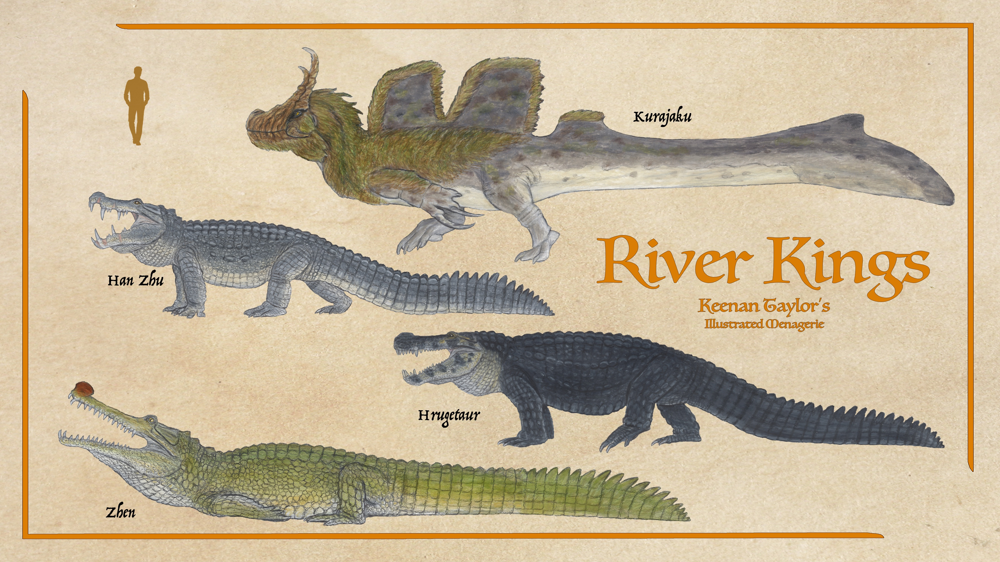
The relationship between kurajaku and zhen is fundamentally different. Whereas zentaurs represent ecological counterparts occupying adjacent environments, zhen occupy the aquatic realm itself. These enormous gharial-like predators dominate river channels, major waterways, and deeper aquatic habitats throughout eastern Arvel. At first glance, substantial competition might be expected. In reality, niche partitioning is extensive. Zhen specialize primarily on aquatic prey. Large fish, aquatic reptiles, smaller vertebrates, and migratory aquatic fauna constitute the majority of their diet. Their elongated jaws, sensory systems, and locomotor adaptations are optimized for capturing prey within open water. Kurajaku target large vertebrates entering shallow aquatic environments. Thus, although both predators occupy water, they often hunt entirely different prey communities. Competition becomes most intense during seasonal fish migrations. Massive spawning runs draw both predators into the same channels and floodplain corridors. During these events, kurajaku temporarily abandon megafaunal specialization and become opportunistic piscivores. Large reproductively active fish, exhausted migrants, and spawning aggregations represent exceptionally profitable resources. This brings them into direct competition with zhen. Even here, however, partitioning persists. Zhen generally remain within deeper channels where fish density remains highest. Kurajaku exploit shallower margins, spawning grounds, flooded forests, and shoreline concentrations. The result is a vertical partitioning of aquatic space. Zhen control the channel. Kurajaku control the margins. Large adult zhen are generally avoided by all but the largest kurajaku. Similarly, mature zhen rarely attempt to attack adult kurajaku. Both animals possess sufficient size and weaponry to make such encounters hazardous. Juveniles, however, are a different matter. Young kurajaku are vulnerable to large zhen, while juvenile zhen may occasionally be preyed upon by adult kurajaku. Consequently, much of the interaction between the two species occurs through predation on younger age classes rather than adults.
If zhen represent aquatic specialists, hrugetaur represent opportunistic generalists. These giant caiman-like predators dominate many wetland environments throughout Eastern Arvel. Their ecological role overlaps substantially with juvenile and subadult kurajaku. Among mature adults, competition is highly asymmetrical. Large kurajaku routinely displace hrugetaur from kills, feeding sites, and productive hunting locations. The reverse is almost never observed. The relationship therefore resembles that between lions and crocodiles on Earth, albeit at far larger scales. However, the interaction changes dramatically for younger kurajaku. Subadult kurajaku frequently experience intense competition from large hrugetaur. Both target similar prey, occupy similar habitats, and utilize comparable ambush strategies. Many of the risks faced during the subadult stage arise directly from this overlap. Large hrugetaur are also important nest predators. Kurajaku nesting territories are concentrated around elevated wetland refugia and stable floodplain ridges. These same environments attract hrugetaur seeking nesting sites of their own. Competition for nesting space can therefore become severe. Female kurajaku aggressively exclude hrugetaur from nesting regions, often killing intruders outright. The result is a persistent territorial conflict extending across much of the basin system.
The ecosystems of Ni'Khar support some of the most diverse predator assemblages on Kaimere, and consequently represent one of the most important arenas for understanding the ecological role of the kurajaku. While Eastern Arvel is characterized by extensive floodplains, river basins, and inland wetlands, Ni'Khar contains a far greater diversity of aquatic environments. Massive river systems descend from interior highlands into sprawling marsh complexes. Seasonal monsoons create enormous flood pulses that transform entire landscapes. Coastal mangrove forests, estuarine labyrinths, drowned river valleys, inland seas, and the immense Seridic Wetlands generate an ecological continuum linking terrestrial, freshwater, and marine food webs. Within these systems, kurajaku occupy an ecological position unlike that of any other predator. They are not merely apex predators of wetlands. Rather, they function as dominant predators of ecological transition zones throughout the continent. Wherever large vertebrates are forced to move between land and water, freshwater and marine systems, flooded and dry habitats, or shallow and deep environments, kurajaku become major selective pressures. The complexity of Ni'Khari ecosystems means that competition rarely centers exclusively on food. Nesting territories, breeding refugia, migration bottlenecks, flood-season refuges, basking sites, channel access points, and spawning grounds are often equally important resources. Consequently, interactions between kurajaku and other large predators frequently involve spatial control rather than direct predation.
The Seridic wetlands represent perhaps the single most important stronghold of kurajaku across all of Kaimere. Stretching across vast portions of southern Ni'Khar, these wetlands comprise a nearly continuous network of marshes, flooded forests, shallow lakes, distributary channels, reed seas, and seasonally inundated floodplains. Primary productivity is immense. Fish biomass reaches extraordinary levels. Semi-aquatic herbivores occur at densities unmatched elsewhere on the continent. As a result, predator diversity is equally remarkable
Unlike Eastern Arvel, where competition is frequently structured around river corridors and basin margins, competition within the Seridic wetlands revolves around control of aquatic bottlenecks and elevated nesting terrain. Suitable nesting sites are surprisingly scarce. Although the wetlands themselves cover enormous areas, much of the landscape becomes flooded during seasonal inundation. Kurajaku cows therefore compete intensely for elevated islands, ancient levees, forest hummocks, stabilized sediment ridges, and other locations capable of remaining above floodwaters throughout incubation. Competition for these sites frequently exceeds competition for prey. Numerous species seek the same refugia. Giant hrugetaur establish nesting colonies on elevated ridges. Large aquatic herbivores congregate on dry islands during flood seasons. Various apex predators use these refuges as resting locations and hunting platforms. Consequently, mature female kurajaku function not merely as territorial predators but as ecosystem engineers defending critical reproductive real estate. Many nesting territories remain occupied for decades or even centuries through successive generations. The resulting territorial stability creates localized centers of ecological influence that shape predator distributions throughout surrounding wetlands. No competitor exerts greater pressure upon kurajaku nesting behavior in the Seridic wetlands than the giant hrugetaur.
Unlike Arvelith populations, where hrugetaur primarily function as subordinate aquatic predators, Seridic hrugetaur reach extraordinary sizes and densities due to abundant prey resources. Large individuals frequently exceed several tons in mass and dominate extensive portions of the marsh network. Dietary overlap between mature adults remains limited. Hrugetaur focus heavily upon fish, aquatic reptiles, smaller herbivores, carrion, and opportunistic ambushes. Kurajaku specialize on larger vertebrates. The greatest source of conflict therefore emerges from nesting space. Both species require elevated substrates safe from flooding. Both favor levees, stabilized islands, and sediment ridges. Both exhibit strong site fidelity. This overlap produces persistent territorial warfare between nesting females. Female kurajaku are generally dominant in direct confrontations, but hrugetaur compensate through numbers. Entire hrugetaur nesting colonies may occupy suitable terrain, forcing kurajaku to either displace them through repeated aggression or establish territories elsewhere. The result is a constantly shifting mosaic of reproductive territories shaped by competition between two of Ni'Khar's most formidable wetland predators.
The rivers and drowned forests of Ni'Khar support some of the largest zhen populations anywhere in the world. Unlike hrugetaur, zhen compete with kurajaku primarily through habitat overlap rather than nesting conflict. Both predators depend heavily upon major waterways. Both utilize ambush predation. Both exploit migratory fish runs. Both concentrate around seasonal bottlenecks. Yet their ecological roles remain distinct. Zhen dominate deeper aquatic environments. Kurajaku dominate shallow-water interfaces. This distinction creates one of the clearest examples of vertical niche partitioning among Kaimere's apex predators. In major channels, zhen function as the primary predators. Along shorelines, flooded forests, marsh margins, and estuarine shallows, kurajaku assume dominance. Competition intensifies during fish migrations. Massive spawning events attract enormous concentrations of predators. Even then, however, spatial segregation remains remarkably consistent. Zhen patrol deep channels. Kurajaku control spawning grounds. Both exploit the same resource pulse while minimizing direct interference.
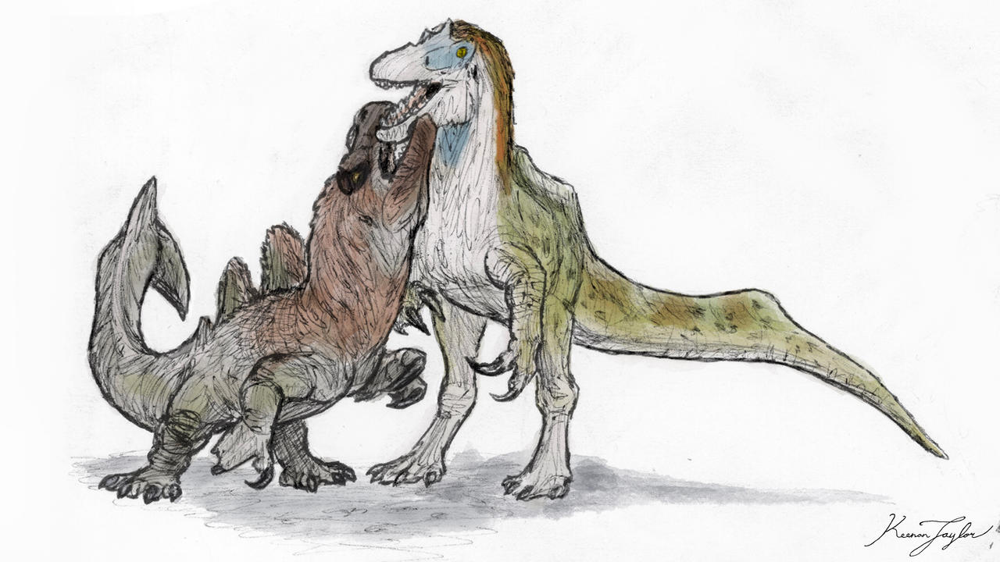
Perhaps the most dangerous terrestrial competitors encountered by kurajaku in southern Ni'Khar are the ba'khar. Within this setting, the ba'khar occupies a central but highly specialized role. It is a fish-specialist theropod, but not a narrow one. Its prey base includes fish above all, yet it also takes turtles, birds, mammals, reptiles, crocodilians, and other dinosaurs when conditions permit. This flexibility is important because Ni'Khar's hydrological systems are highly seasonal, and no single prey class remains equally available throughout the year. The ba'khar persists precisely because it can shift between prey types while remaining anchored to a shallow-water hunting strategy. It is, however, not the largest or most dominant predator in these ecosystems. In the Seridic wetlands, that role is shared and sometimes overshadowed by kurajaku, whose much greater size and stronger specialization on large vertebrate prey place it at the apex of the shallow-water predator guild. What makes Ni'Khar especially interesting is that competition among large predators is often not structured primarily by prey scarcity. In the Seridic wetlands, fish stocks are so abundant that population limits are often imposed not by food but by nest space. This is a critical point. It means that many of the major predators of the basin can feed successfully without directly excluding one another from food resources. Instead, they are forced to segregate through habitat choice, nesting site selection, body size, and access to protected breeding ground. In such a system, the true limiting resource is often safe reproduction rather than feeding opportunity. The result is a predator guild in which competition is displaced from the feeding niche to the nesting niche. In the Seridic wetlands, female ba'khar are highly territorial and aggressive toward one another, and nesting sites are heavily contested. Males are more mobile and do not maintain stable territories in the same way. Where the environment is especially crowded, related females may even form small shared territories of two to five individuals, but this is a response to competition rather than a sign of broad social tolerance. The same pressure on nesting space applies to kurajaku, whose own female territories are likewise centered on stable, flood-safe reproductive ground. Because both taxa require secure nesting locations near productive aquatic habitat, competition between them often intensifies around elevated banks, marsh islands, levees, and other sites that remain usable through seasonal flooding. This is why ba'khar competition in Ni'Khar is best understood as spatial rather than simply trophic. Food is broadly available, but safe reproduction is not. A female ba'khar can feed in the same landscape as a kurajaku without necessarily coming into direct conflict over prey. What she cannot do easily is find an unoccupied, secure nest site in a wetland system crowded with other large predators, seasonal floodwater, and high predator densities. The same applies to small allied females or sisters attempting to establish a territory together. In the most crowded wetlands, nesting space becomes the bottleneck that determines population structure, reproductive success, and local distribution. The habitat mosaic of Ni'Khar intensifies this pattern. The habitat mosaic of Ni'Khar intensifies this pattern. The Seridic wetlands are not merely open marshes, but a complex sequence of dense flooded forest, reed marsh, shallow lake, distributary channel, riverbank, and coastal transition zone. The Sheklat riverlands add broad floodplains, gallery forests, seasonal wetlands, and grassland corridors that support enormous herbivore and fish movements. These landscapes create many feeding opportunities but comparatively fewer safe nesting opportunities. For a large predator that must rear precocial chicks in a defended territory, the limiting factor is therefore the availability of elevated, drainable, and defensible nesting ground rather than the abundance of prey. Within this framework, kurajaku and ba'khar partition food more thoroughly than their body sizes might suggest. Ba'khar focus heavily on fish, and kurajaku, although capable of fish predation, are much more strongly associated with larger vertebrate prey, carcass feeding, and seasonal exploitation of megafaunal concentrations. This means that the two species can coexist within the same wetland system without one completely excluding the other from feeding opportunities. Their true ecological tension lies in access to suitable nesting elevations, safe shoreline pockets, and stable margins that can survive seasonal flood cycles. In a basin where water and biomass are abundant, the most valuable territory is often the ground that does not disappear when the water rises. That spatial competition is reinforced by body size. Kurajaku are the larger and more physically dominant predators, and mature bulls can outsize even the largest ba'khar by a substantial margin. Yet size does not solve the problem of nesting. The larger the animal, the more difficult it becomes to access compact or elevated nesting refugia. Smaller female ba'khar therefore retain an important advantage in nest placement, because they can use sites unavailable to kurajaku and larger conspecifics. This flexibility is one reason the species remains successful in the Seridic system despite intense competition. The same ecological principle applies more broadly across Ni'Khar: where food is plentiful, the decisive question is often not who can eat, but who can reproduce safely.
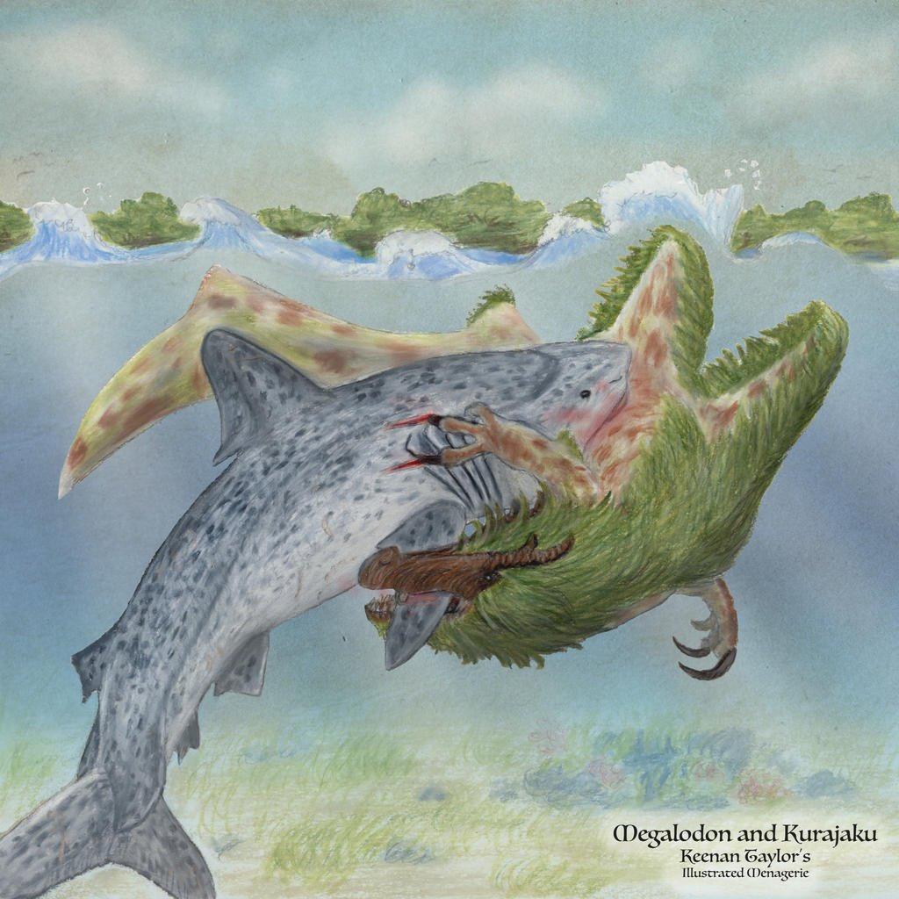
The Trakaiam Sea represents perhaps the most complex competitive environment occupied by the kurajaku anywhere on Kaimere. Unlike the freshwater wetlands of Arvel or the river systems of Ni'Khar, where competition is often structured around nesting territories and access to flood-resistant breeding sites, the Trakaiam Sea is defined by overwhelming biological productivity. The Prairie Below the Waves alone supports herbivore biomass on a scale unmatched elsewhere in the Known World, with immense populations of marine sloths, sirenians, desmostylians, bilaruk, mogao, spirit drakes, giant trilobites, fish, ammonites, and countless smaller organisms. In such an environment, direct competition for food is often surprisingly weak. Instead, the dominant ecological pressures emerge from competition over habitat, reproductive space, migratory corridors, nursery grounds, and access to particularly productive sectors of the seagrass prairie. The result is a predator community structured less by simple prey limitation than by spatial partitioning. Numerous large predators coexist within the Trakaiam system, including kurajaku, megalodon, motomazor, katabo, panther sharks, wolverine sharks, dragon turtles, and crocodilians. Many consume overlapping prey species, yet direct exclusion rarely occurs because each predator exploits different portions of the habitat mosaic. The Trakaiam Sea is not a single ecosystem but an interconnected complex of seagrass prairies, channel systems, reefs, floating mattes, estuaries, mangroves, and coastal wetlands. Competition is therefore multidimensional, occurring simultaneously across geography, depth, life stage, and reproductive strategy. For kurajaku, the most important ecological arena is the Prairie Below the Waves. The immense seagrass meadows support concentrations of large herbivores that rival terrestrial megafaunal systems. Here, kurajaku occupy the role of dominant benthic macropredator. Their unique locomotor adaptations allow them to run directly across the seabed while exploiting prey species that few other predators can reliably capture. Marine sloths, sirenians, juvenile bilgarobi, spirit drakes, and young bilaruk all fall within the predatory envelope of mature individuals. Yet despite this apparent dominance, kurajaku do not monopolize these prey resources. Instead, they share the prairie with a suite of other apex predators whose ecological strategies differ substantially.
The most significant competitor is undoubtedly the megalodon. Adult megalodon occupy the apex of the Trakaiam pelagic and channel systems, specializing in large cetaceans, marine reptiles, and open-water prey. At first glance, overlap with kurajaku appears limited. One is primarily a pursuit predator operating through the water column while the other is a benthic ambush predator dependent upon substrate contact. However, the distinction is not absolute. Both predators target sirenians, marine sloths, juvenile leviathans, and occasionally one another's kills. Along meadow margins where channels intersect seagrass plains, overlap becomes substantial. These ecotones support some of the highest prey densities in the entire sea and consequently become focal points for competition. Mature megalodon frequently patrol above meadow systems while kurajaku hunt beneath them. In many cases both species are exploiting the same prey populations through entirely different methods. Competitive interactions are therefore usually indirect. Each species suppresses prey abundance in ways that influence the hunting success of the other. Direct encounters between adult kurajaku and mature megalodon appear uncommon but potentially consequential. The two predators operate within different physical domains. Megalodon possess overwhelming advantages in open water, where their speed, maneuverability, and three-dimensional mobility make them nearly untouchable. Kurajaku possess the opposite advantage. Within shallow meadows, tidal flats, shoals, and benthic feeding grounds, their extraordinary density and substrate-based locomotion allow them to exert control over prey that even giant sharks struggle to manipulate. As a result, neither species fully excludes the other. Instead, an unstable equilibrium emerges in which habitat structure determines dominance. The prairie belongs largely to kurajaku. The channels belong largely to megalodon. The boundary between the two remains one of the most intensely contested ecological zones in the sea.
Motomazor represent a different form of competition altogether. Unlike megalodon, they are not primarily benthic or ambush predators. They are highly mobile pelagic pursuit hunters capable of traversing enormous distances. Their relationship with kurajaku is therefore largely spatial rather than trophic. Motomazor rarely remain within dense seagrass systems for extended periods because vegetation restricts maneuverability and reduces the effectiveness of their hunting strategy. Nevertheless, they frequently pass through productive prairie regions while pursuing migratory prey. When this occurs, their presence can dramatically alter prey behavior. Entire herds of marine herbivores may relocate, disperse, or abandon feeding grounds. Kurajaku subsequently experience indirect consequences despite little direct interaction with the predator itself. In this way, motomazor function as ecosystem-wide disturbance agents whose influence extends far beyond the prey they directly consume.
Competition with katabo is structured almost entirely through habitat partitioning. Katabo dominate reef systems. Their elongated bodies and maneuverability allow them to exploit coral environments inaccessible to large kurajaku. Reef channels, coral labyrinths, and barrier reef complexes provide ideal hunting terrain for katabo while simultaneously restricting benthic locomotion. Kurajaku generally avoid penetrating deep reef interiors because substrate complexity interferes with their preferred hunting methods. Consequently, the two predators interact primarily at reef margins where coral systems merge with seagrass meadows. Here prey species move regularly between habitats, creating overlap zones. Yet even in these regions, partitioning remains pronounced. Katabo typically focus on reef-associated fauna while kurajaku continue targeting larger meadow herbivores. The result is coexistence with relatively little direct conflict.
Among sharks, panther sharks and wolverine sharks are perhaps the most important mesocompetitors. These species occupy intermediate trophic positions between smaller reef predators and giant apex forms such as megalodon. Their prey frequently overlaps with juvenile and subadult kurajaku. Young sirenians, sloths, reptiles, and medium-sized fish are consumed by both groups. Consequently, juvenile kurajaku experience significantly greater competition than adults. In many meadow systems, the transition from fish-specialist juvenile to megafaunal predator occurs under intense ecological pressure. Panther sharks and wolverine sharks can exploit prey resources more efficiently in open water than immature kurajaku. This contributes to the elevated mortality observed during subadult development. Only after achieving sufficient size can kurajaku escape this competitive bottleneck and move into ecological roles inaccessible to most shark species.
Dragon turtles represent a uniquely different competitor. Unlike sharks or marine reptiles, they function as large omnivorous opportunists capable of both predation and scavenging. Their ecological overlap with kurajaku is strongest around carcasses. Both species readily exploit dead leviathans, stranded herbivores, and large marine mortality events. Because carrion constitutes an important nutritional resource in the Trakaiam system, access to carcasses can become a major source of competition. Yet even here, partitioning occurs. Dragon turtles often arrive earlier due to their broad foraging behavior and tendency to patrol grazing corridors. Kurajaku frequently dominate later stages of carcass utilization due to their size and ability to dismantle massive remains. A single leviathan carcass may support dozens of scavenging species over weeks or months, reducing the likelihood of outright exclusion.
Perhaps surprisingly, the most intense and persistent competition experienced by kurajaku in the Trakaiam Sea is often not for food at all. It is for reproduction. Female territories within the Prairie Below the Waves are constrained by a severe shortage of suitable nesting sites. Unlike feeding habitat, which may extend across thousands of square kilometers of seagrass meadow, nesting habitat is concentrated within specific coastal margins, elevated islands, mangrove systems, levees, and stable shoreline environments. Every breeding female requires access to these sites. Simultaneously, the same habitats are coveted by spirit drakes, odaga, giant crocodilians, marine sloths, large shorebirds, and countless smaller species. Competition for nesting terrain therefore shapes population density more strongly than prey availability in many regions. Productive meadows may support sufficient food for numerous females, yet only a fraction of those individuals can breed successfully because nesting ground remains limited. Territorial aggression among female kurajaku becomes particularly intense around elevated islands and coastal ridges that remain above seasonal storm surges. These sites may be occupied continuously for generations. Competition is further intensified because successful nesting locations frequently become traditional nesting locations. Females return repeatedly to areas that have produced surviving offspring, creating strong site fidelity and increasing the value of already limited reproductive habitat. This reproductive bottleneck has important ecosystem consequences. While prey abundance largely determines the size of adult males, nesting habitat determines the distribution of breeding females. The result is a population structure in which enormous transient bulls range across vast portions of the Trakaiam basin while reproductive females remain concentrated around comparatively small clusters of suitable nesting terrain. Thus, despite inhabiting one of the largest ecosystems on Kaimere, kurajaku reproduction is ultimately anchored to a surprisingly limited resource: safe ground above the sea.
The Kairulan range of the kurajaku represents perhaps the most complex competitive environment occupied by the species anywhere in its distribution. Unlike the Trakaiam Sea, where the kurajaku largely dominates a relatively specialized shallow-marine predator guild, or Arvel where ecological relationships are primarily structured around freshwater wetland communities, Kairul contains an exceptionally diverse assemblage of large predators, semiaquatic herbivores, crocodilians, and nesting specialists. The result is an ecosystem in which competition is rarely limited to prey resources alone. Instead, interactions are structured around access to hunting grounds, nesting territories, migration corridors, channel systems, haul-out sites, seasonal refugia, and even the physical architecture of the wetlands themselves. The western coastal wetlands of Kairul are particularly important in this regard. Stretching across enormous portions of the western peninsula, these habitats consist of interconnected marshes, flooded forests, slow-moving rivers, mangrove-like coastal wetlands, shallow lakes, and extensive channel networks. Warm coastal currents and monsoonal precipitation maintain high primary productivity throughout much of the year, supporting some of the greatest concentrations of vertebrate biomass on Kaimere. Consequently, competition in these ecosystems is often driven less by food scarcity than by access to the most productive sectors of the landscape.
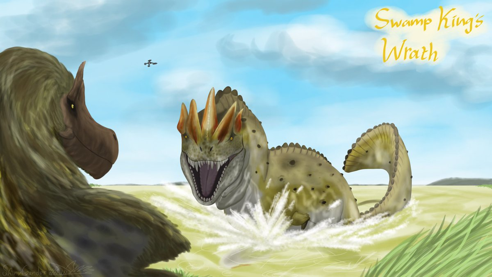
The dominant ecological relationship throughout these wetlands is the long-standing interaction between kurajaku and the giant tikakatik. This relationship is particularly significant because it represents one of the few cases anywhere on Kaimere in which a pre-existing apex predator survived the arrival of a giant apeirovenatorid rather than being completely displaced. Although both species are giant semiaquatic theropods, direct dietary overlap is surprisingly limited. Adult kurajaku specialize heavily on large fish, estuarine megafauna, semiaquatic herbivores, seagrass grazers, and aquatic prey that utilize deeper channels and more permanently inundated habitats. The tikakatik, by contrast, remains focused primarily upon wetland rhinos, swamp drakes, crocodilians, leptoceratopsids, and large freshwater herbivores inhabiting shallower environments. This partitioning is driven largely by locomotor mechanics. Mature kurajaku are optimized for deep-water benthic locomotion. Their immense density, reduced pneumaticity, and specialized tail-driven propulsion system allow them to dominate channels and waterways inaccessible to most competitors. Tikakatik, while also capable of underwater pursuit, remains more effective within shallower wetlands where its shorter body, immense bite force, and rapid acceleration provide advantages against large terrestrial herbivores forced into water. Competition therefore centers less on prey and more on space. Deep rivers, major channels, and permanent waterways are overwhelmingly dominated by mature kurajaku bulls. Tikakatik rarely remains within such habitats for extended periods. Numerous observations indicate that adult abelisaurids actively avoid waterways known to support large transient males. This avoidance behavior is not surprising. Mature bulls commonly exceed twenty tons and occasionally reach several times that mass. Even large male tikakatik are physically incapable of challenging such giants directly. Female kurajaku, however, represent a more immediate competitive threat. Unlike the enormous transient males, females overlap extensively with tikakatik in both habitat preference and body size. Mature females typically occupy the same weight class as large abelisaurids and frequently exploit identical nesting islands, elevated levees, and flood-resistant ridges. As a result, nesting-site competition between the two species is intense. Suitable nesting habitat is surprisingly scarce within much of western Kairul. Both species require elevated terrain above seasonal flood levels. Both prefer proximity to productive feeding grounds. Both require substrates capable of supporting large nesting structures. Consequently, nesting islands become valuable ecological real estate. During nesting seasons, interactions between female kurajaku and female tikakatik may become extraordinarily aggressive. Evidence suggests that direct territorial displacement is common. Female kurajaku frequently destroy abandoned or poorly defended abelisaurid nesting sites during territory establishment. Conversely, experienced female tikakatik occasionally prevent younger kurajaku cows from occupying traditional nesting islands through repeated harassment. These conflicts rarely involve outright predation but often result in substantial reproductive losses through nest abandonment, egg destruction, or displacement into inferior nesting locations.
Competition with crocodilians is structured differently. The Kairulan fisher crocodiles of the genus Philoichthys are among the most abundant large vertebrates throughout Kairulan wetlands. Although individual crocodiles pose little competitive threat to adult kurajaku, their enormous abundance creates significant ecological interactions. Juvenile and subadult kurajaku frequently compete directly with large crocodilians for fish resources, spawning aggregations, carrion, and sheltered nursery habitats. The overlap is particularly pronounced during early ontogeny. Young kurajaku often occupy ecological roles remarkably similar to those of giant crocodilians. Both exploit shallow channels. Both target fish and small vertebrates. Both rely heavily on ambush predation. Mortality during this stage can be substantial, with crocodilians acting as both competitors and occasional predators of very young individuals. As kurajaku increase in size, however, this relationship becomes increasingly asymmetrical. Large juveniles and subadults routinely prey upon crocodilians, while mature adults regard them as opportunistic food sources rather than competitors. Competition with herbivores frequently revolves around nesting habitat rather than predation. The swamp drakes, wetland rhinos, and other semiaquatic herbivores of Kairul often utilize the same elevated islands favored by nesting kurajaku. These herbivores are not direct competitors for food, but they compete intensely for physical space. Large herds can trample nesting areas, consume stabilizing vegetation, compact soils, and alter hydrological conditions. Female kurajaku therefore actively exclude many herbivores from nesting territories. This behavior transforms portions of the wetland into predator-maintained refugia where herbivore activity is substantially reduced. Paradoxically, this territorial exclusion often benefits smaller species. Reduced grazing pressure allows dense vegetation to develop around nesting territories, creating habitat for fish, amphibians, invertebrates, and small vertebrates. Thus, the reproductive behavior of kurajaku indirectly generates localized biodiversity hotspots.
Among mammalian predators, the most significant interactions involve the giant entelodonts and cursorial multituberculates of Kairul. Species such as Teratotherium and the komatu rarely compete directly with adult kurajaku for prey. Their hunting strategies, habitat preferences, and locomotor adaptations differ too substantially. Competition instead centers on carcasses. Large kills made by kurajaku represent concentrated nutrient resources capable of attracting enormous numbers of scavengers. Entelodonts, in particular, are frequent visitors to abandoned feeding sites. Their powerful jaws allow efficient exploitation of skeletal material that kurajaku often leave behind after consuming preferred tissues. This relationship is generally commensal rather than antagonistic. Adult kurajaku rarely defend partially consumed carcasses once nutritional value declines below a certain threshold. Consequently, entelodonts often function as secondary processors within the ecosystem, extracting resources unavailable to the original predator.
The arrival of kurajaku has also fundamentally altered predator guild structure throughout western Kairul. Prior to their expansion approximately 1.5 million years ago, Ziphonodon occupied the role of dominant wetland predator across much of the region. The spread of kurajaku reorganized these communities without fully replacing the resident fauna. Instead, competitive pressures drove increasingly specialized niche partitioning. Modern Kairulan wetlands therefore exhibit a remarkably layered predatory hierarchy. At the deepest aquatic level, giant transient kurajaku bulls dominate major channels, estuarine systems, and marine-connected waterways. Female kurajaku control nesting territories, medium-depth wetlands, and complex marsh systems. Ziphonodon dominates many shallow-water megafaunal hunting niches and remains the principal predator of large freshwater herbivores. Large crocodilians control fish-rich microhabitats and juvenile prey resources. Entelodonts, multituberculate carnivores, fishcocks, and numerous smaller predators exploit terrestrial and semiterrestrial niches largely inaccessible to the giant aquatic theropods.
Nutrient Redistribution and Carcass Ecology
Selective predation is one of the most important ecological forces exerted by kurajaku and extends far beyond simple predator–prey dynamics. Although the species possesses the physical capability to kill healthy adult members of many large vertebrate taxa, such opportunities are not always pursued. Like most successful apex predators, kurajaku operate according to a risk–reward calculus in which energetic return is balanced against the possibility of injury. Because even relatively minor injuries can compromise future hunting success, reproductive output, or migratory capability, individuals preferentially target prey exhibiting some degree of vulnerability whenever such opportunities exist. As a result, predation pressure is highly non-random. Kurajaku function not merely as consumers of biomass but as selective biological filters that continuously remove particular phenotypes, behaviors, and life-history strategies from aquatic and semi-aquatic ecosystems.
Throughout much of their range, the majority of successful kills involve individuals already experiencing physiological or behavioral disadvantages. During seasonal fish migrations, adults disproportionately target exhausted fish that have traveled long distances, individuals weakened by disease, fish carrying heavy parasite burdens, and reproductively active females laden with roe. Such animals are often slower, less maneuverable, and less capable of responding effectively to sudden attacks. The predator's preference for these individuals creates a strong selective pressure favoring endurance, disease resistance, and efficient migration strategies. Over evolutionary timescales, populations subjected to persistent kurajaku predation experience continual filtering of compromised individuals before reproduction can be completed.
The same process occurs among wetland herbivores. Large semiaquatic mammals, swamp rhinos, swamp drakes, leptoceratopsids, pachycephalosaurs, and numerous other prey species experience heightened vulnerability during specific life stages or physiological conditions. Pregnant females frequently represent preferred targets because the energetic demands of gestation often reduce maneuverability and increase fatigue. Animals suffering from drought stress, nutritional deficiencies, or injury similarly experience elevated predation risk. Even minor locomotor impairments can become fatal when crossing deep channels or navigating muddy substrates occupied by waiting kurajaku.
Young animals entering aquatic environments for the first time are particularly vulnerable. Many herbivorous species must cross waterways as part of seasonal migrations, dispersal events, or routine feeding movements. Juveniles lacking experience with aquatic predators often fail to recognize danger cues that older animals interpret immediately. They may remain too close to shorelines, choose poor crossing locations, or respond incorrectly when confronted. Kurajaku frequently exploit this inexperience. Consequently, predation acts as a powerful developmental filter, favoring individuals capable of rapidly learning appropriate anti-predator behaviors.
The ecological consequences extend well beyond direct mortality. Prey species modify their behavior extensively in response to persistent predation pressure. Wetland herbivores inhabiting regions with dense kurajaku populations often display dramatically elevated vigilance whenever approaching water. Herds pause more frequently before entering channels. Individuals spend less time feeding in exposed shoreline zones. Group cohesion increases during crossings, and many species exhibit strong preferences for traditional crossing locations where generations of prior experience have identified areas of reduced risk.
These behavioral adjustments alter landscape utilization across entire ecosystems. Areas supporting high densities of kurajaku frequently experience reduced herbivore grazing intensity near water margins. Vegetation in these regions may therefore become denser and structurally more complex than would otherwise occur. Shoreline plant communities often differ substantially between areas experiencing intense predation pressure and those where predators are absent or uncommon. Over time, predator-driven grazing redistribution can influence plant succession, sediment stabilization, nutrient cycling, and habitat availability for countless smaller organisms.
Marine grazers exhibit similar responses. Within the Trakaiam Sea and other shallow marine systems, seagrass-feeding megafauna often modify feeding behavior to reduce exposure to ambush attacks. Individuals may favor slightly deeper feeding grounds, avoid certain channel systems, or alter daily activity schedules. Large grazing herds frequently become more cohesive when utilizing areas known to support mature kurajaku bulls. Rather than dispersing broadly across productive feeding grounds, animals may aggregate into tighter groups that improve collective detection of approaching predators.
Leviathans demonstrate some of the most dramatic examples of predator-mediated behavioral modification. Although adult leviathans are rarely preyed upon under normal circumstances, reproductively active individuals can become vulnerable during specific periods. Animals exhausted by migration, weakened by prolonged mating competition, recovering from injuries sustained during dominance battles, or distracted by reproductive behavior are at substantially greater risk than healthy individuals. Kurajaku exploit these circumstances whenever opportunities arise.
Consequently, leviathan populations in regions of intense predation pressure often exhibit stronger social cohesion than populations elsewhere. Pods remain together for longer periods. Injured individuals receive greater protection from companions. Mating aggregations become more synchronized. Migration timing may shift to reduce overlap with peak predator abundance. In some cases, reproductive behaviors themselves appear modified by predator presence.
The cumulative effect is the emergence of predator-mediated community filtering. Kurajaku are not simply reducing prey numbers. They are systematically influencing which individuals survive, reproduce, migrate successfully, and contribute genetically to future generations. Traits associated with vigilance, endurance, coordination, disease resistance, efficient locomotion, social cohesion, and environmental awareness are consistently favored because individuals possessing these characteristics experience lower mortality.
Importantly, this filtering process extends beyond prey species alone. Smaller predators, scavengers, and competitors are also affected. Fish schools alter movement patterns in response to predator presence, influencing the hunting success of piscivorous birds, crocodilians, and smaller aquatic carnivores. Herbivore distribution shifts modify grazing intensity, which affects vegetation structure and habitat availability for numerous secondary consumers. Carcasses generated by kurajaku predation create localized nutrient hotspots that support scavengers, decomposers, and opportunistic predators. Thus, a single predation event may influence dozens of species simultaneously.
Because kurajaku occupy the interface between terrestrial, freshwater, and marine ecosystems, these effects propagate across ecosystem boundaries. Behavioral changes initiated in aquatic environments influence terrestrial feeding patterns. Modifications to herbivore movements alter vegetation dynamics. Changes in fish migration behavior affect nutrient transport between marine and freshwater systems. Predator pressure on leviathans influences the distribution of grazing activity within seagrass meadows. Through these interconnected pathways, selective predation generates cascading ecological effects that extend far beyond the immediate predator–prey interaction.
Keystone Effects and Long-Term Community Stability
The keystone influence of the kurajaku extends far beyond the direct consumption of prey. Although predation represents the most visible component of its ecological role, the species functions as a regulator of entire ecosystem processes operating across multiple trophic levels, habitat types, and temporal scales. Throughout much of Kaimere's freshwater wetlands, estuarine complexes, shallow marine environments, and coastal floodplains, the presence or absence of stable kurajaku populations fundamentally alters community structure. Ecological systems containing healthy populations differ measurably from those where the species is rare, locally absent, or temporarily suppressed. In this sense, the kurajaku functions not merely as a dominant predator but as a true keystone species whose influence is disproportionately large relative to its abundance.
One of the most important consequences of kurajaku predation is the regulation of large herbivore populations. Across much of the species' range, primary productivity is extraordinarily high. Vast seagrass meadows, floating vegetation communities, marsh plants, aquatic macrophytes, riparian forests, and floodplain grasslands generate enormous quantities of plant biomass. Without substantial herbivory, these systems would become structurally simplified through unchecked vegetative expansion. Conversely, without effective predator regulation, herbivore populations would often exceed the carrying capacity of local environments. Kurajaku occupy the critical position between these opposing ecological forces.
By selectively removing large herbivores, they prevent chronic overgrazing while simultaneously preventing herbivore populations from expanding to ecologically destabilizing levels. This effect is particularly visible within the Prairie Below the Waves of the Trakaiam Sea. Here, giant marine grazers consume immense quantities of seagrass. In regions where kurajaku densities remain high, grazing pressure is distributed across large areas because herbivores cannot safely remain within any single meadow indefinitely. Constant movement reduces localized overexploitation and allows vegetation recovery. Where predator pressure declines, grazing animals often become more sedentary, concentrating feeding activity and increasing the likelihood of habitat degradation.
Similar processes occur within the freshwater wetlands of Arvel and Ni'Khar. Large semiaquatic herbivores frequently modify vegetation structure through feeding, trampling, and channel formation. Kurajaku predation limits the ecological dominance of these species, preventing any single herbivore lineage from monopolizing available resources. The result is greater habitat heterogeneity and increased opportunities for smaller herbivores, omnivores, and specialized feeders.
The effects extend beyond population regulation into behavioral ecology. Many of the most significant ecological consequences of kurajaku presence arise not from animals that are killed, but from animals that survive. Herbivores living within active kurajaku ecosystems cannot utilize aquatic environments without considering predation risk. This transforms behavior at both individual and population scales. Large grazers often alter feeding schedules to reduce exposure during periods of peak predator activity. Herds may avoid productive seagrass meadows despite abundant food resources if predation risk becomes excessive. River crossings are selected according to visibility, water depth, current strength, and predator abundance. Wetland herbivores frequently abandon otherwise favorable feeding grounds after repeated predator encounters.
These decisions create what ecologists describe as a landscape of fear: a spatial mosaic in which habitat quality is determined not only by resource abundance but also by predation risk. The consequences of this risk landscape are profound. Areas experiencing heavy herbivore use are periodically abandoned, allowing vegetation recovery. Other regions experience temporary grazing release and accumulate biomass. The resulting patchwork of heavily grazed, moderately grazed, and lightly grazed habitats increases environmental complexity and supports greater biodiversity than would otherwise occur.
This process is particularly important in shallow aquatic systems, where water might otherwise function as a refuge from terrestrial predators. Throughout evolutionary history, countless herbivorous lineages have sought safety in wetlands, floodplains, rivers, estuaries, and coastal shallows. The kurajaku fundamentally disrupts this strategy. By transforming aquatic environments into zones of significant predation risk, it prevents water from serving as a universal sanctuary. Consequently, prey species must balance competing risks. Remaining on land may expose them to terrestrial predators. Entering water may expose them to kurajaku. This dual-pressure system promotes behavioral sophistication, habitat diversity, and niche differentiation across entire communities.
The species also exerts powerful top-down effects on community composition through selective predation. Kurajaku do not remove prey randomly. Vulnerable individuals are disproportionately targeted. The elderly, injured, diseased, inexperienced, exhausted, distracted, and physiologically stressed experience elevated mortality rates relative to healthy adults. Over evolutionary timescales, this filtering process improves population resilience. Fish migrations become more efficient because weaker individuals are consistently removed. Wetland herbivores evolve enhanced vigilance and locomotor performance. Marine grazers develop improved group coordination and habitat selection behaviors. Leviathans experiencing chronic kurajaku predation often exhibit stronger social structures, more synchronized movement patterns, and increased protective behaviors toward vulnerable pod members. Because the predator selectively removes compromised individuals, prey populations frequently become healthier than would be expected under purely density-dependent regulation. Disease transmission may decline. Genetic quality may improve. Behavioral competence increases through persistent selection pressure. Thus, the kurajaku contributes simultaneously to prey mortality and prey population stability.
The species also stabilizes ecosystem structure through suppression of ecological dominance. In highly productive environments, a small number of herbivore species often possess the capacity to monopolize resources and outcompete less abundant taxa. By focusing predation pressure on the largest and most abundant prey populations, kurajaku reduce this monopolization effect. This creates ecological space for smaller herbivores, mixed feeders, omnivores, and habitat specialists. Community diversity consequently increases. Rather than permitting a few dominant species to control ecosystem dynamics, predator-mediated regulation distributes resources more evenly across the broader biological community.
These stabilizing effects are amplified through carcass production. Every large kill initiates nutrient redistribution processes that influence dozens or hundreds of species. Scavenger guilds depend heavily upon carcasses generated by kurajaku predation. Numerous fish, reptiles, birds, pterosaurs, mammals, crustaceans, and decomposers derive substantial portions of their annual energy budgets from carrion resources. In some ecosystems, the abundance of certain scavengers appears directly linked to kurajaku population density. Declines in predator abundance often produce corresponding declines among specialized scavenging species. Thus, the predator indirectly supports entire communities that never interact with it directly except through carcass availability.
Long-term community stability is further enhanced through the species' role as a connector between terrestrial and aquatic food webs. Most predators operate primarily within one ecosystem. Terrestrial predators influence terrestrial communities. Marine predators influence marine communities. Kurajaku routinely integrate both. A single individual may consume a marine grazer within a seagrass meadow, transport tissues into an estuarine channel, leave remains within a freshwater wetland, and subsequently fertilize terrestrial nesting habitats through excretion. Nutrients, energy, and biomass are therefore redistributed across ecosystem boundaries that would otherwise remain relatively isolated. This integration is especially important in regions such as the Trakaiam Sea, Kairul, and the great wetland basins of Arvel and Ni'Khar, where ecological productivity depends heavily upon exchanges between aquatic and terrestrial environments. Kurajaku serve as major biological vectors facilitating these exchanges.
Perhaps most importantly, the species creates predictability within otherwise highly dynamic ecosystems. Wetlands, floodplains, estuaries, and shallow marine environments are inherently unstable systems. Water levels fluctuate. Productivity shifts seasonally. Migration routes change. Storms, floods, droughts, and sediment movement continually reshape habitats. Within this environmental uncertainty, the kurajaku imposes a consistent selective pressure. Prey species must always account for predation risk. Competitors must account for carcass redistribution. Scavengers must account for carrion availability. Vegetation communities respond to altered grazing pressure. Nutrient cycles incorporate predator-generated biomass transfers.
The result is a form of ecological order emerging from persistent biological regulation. Rather than dominating ecosystems through sheer numerical abundance, the kurajaku shapes them through influence. Its effects propagate through food webs, behavioral systems, nutrient cycles, habitat structure, evolutionary pathways, and community interactions simultaneously.
09 · CULTURAL HISTORY
Human and Sophont Interaction
Among all large predators of the Kaimere, few occupy such a contradictory position in Kaimeran culture as the kurajaku. It is simultaneously feared and admired, dreaded and celebrated, regarded as a natural disaster by some communities and as a sacred voyager by others. Unlike most apex predators, whose influence remains largely confined to a particular watershed, mountain range, or biome, kurajaku routinely cross cultural boundaries. Their immense range brings them into contact with dozens of civilizations, languages, and traditions over the course of a single lifetime. Consequently, no single cultural perception of the species exists. Instead, the kurajaku occupies a unique position as a transcontinental ecological and mythological presence.
This phenomenon is especially pronounced among large transient bulls. Whereas cows generally remain associated with specific watersheds and nesting territories, mature bulls may travel thousands of kilometers throughout their lives, moving between estuaries, inland seas, marshes, river deltas, and coastal shallows. Individual bulls therefore become recognizable entities in their own right. Particularly large individuals accumulate names, stories, and reputations among distant peoples who may have no direct cultural contact with one another.
The most famous documented example is the immense Pakardiant-born bull known in Pakardia as Baal Dasharoq, "The Great Voyager." Among the Seridic peoples he is called Maduervo. The Kentarim know him as Gashubilite, the Whale-Eater. Along the northern shores of Qajar he is remembered as Enkhitus. In the Free-States he appears in folklore as Rasha. Numerous Maku communities possess additional names for the same animal, reflecting centuries of sporadic encounters across eastern Kairul. Despite these different identities, osteological markings, pigmentation patterns, horn morphology, and movement records indicate these names refer to the same individual. At approximately 23 meters in length and 48 tons in mass, he ranks among the largest kurajaku currently known and remains actively growing despite approaching four decades of age. Such animals become living landmarks. Entire generations may know a particular bull by name, tracking his arrival and departure much as agricultural societies elsewhere track seasonal floods or migratory whales. Because transient bulls may survive for nearly a century, they often outlive multiple generations of human observers, creating the impression of semi-immortal wanderers that periodically return from distant horizons.
Ecological Knowledge and Risk Management
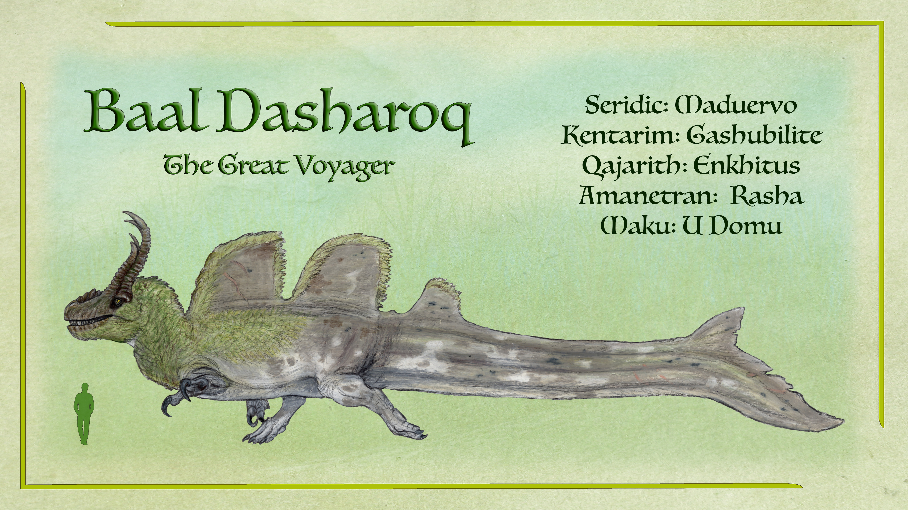
Throughout the Seridic Wetlands, coexistence with kurajaku depends upon an extensive body of ecological knowledge accumulated over thousands of years of direct observation. The species is neither actively persecuted nor casually tolerated. Instead, local populations regard kurajaku as dangerous but fundamentally predictable components of the wetland ecosystem, no more inherently malicious than a flood, wildfire, or tropical storm. Survival depends not upon eliminating the animal, but upon understanding it. Consequently, knowledge of kurajaku behavior occupies a prominent place within Seridic traditional education, oral history, and practical fieldcraft.
From an early age, Seridic children are taught to recognize the subtle indicators of kurajaku presence. Much of this instruction occurs informally during fishing trips, hunting expeditions, and seasonal migrations through the wetlands. Young children learn that the animal is often encountered indirectly long before it is ever seen. Among the most important signs are the broad furrows left by the ventral surface and tail as a kurajaku traverses shallow channels, distinctive claw gouges carved into muddy banks where individuals have hauled themselves partially onto land, and scent-marking sites where bulls repeatedly deposit excreta, glandular secretions, and territorial scratches.
Experienced observers can frequently determine not only the presence of a kurajaku but its approximate sex, size, and recent direction of travel from such evidence. Particularly valued is the ability to distinguish fresh signs from old ones. A channel excavated by generations of kurajaku may persist for centuries, but newly disturbed sediment, crushed vegetation, uprooted reeds, or recently collapsed banks often indicate that an animal passed through within hours or days. Such observations can dramatically alter travel plans. Entire fishing parties may reroute around a single fresh track if evidence suggests a large bull remains nearby.
The wetlands themselves often reveal a predator's presence through indirect biological signals. Fresh kills commonly attract dense assemblages of scavengers well before the predator becomes visible. Circling pterosaurs, congregations of ibis, unusually large numbers of crocodilians, or concentrations of scavenging fish frequently indicate a carcass somewhere nearby. Experienced fishermen are often capable of reading these patterns from remarkable distances. Similarly, abrupt changes in the behavior of prey species can reveal the recent passage of a kurajaku. Fish schools may abandon favored channels, waterfowl may become unusually concentrated in isolated refugia, and semi-aquatic herbivores frequently alter movement patterns when a resident predator begins actively hunting within an area.
Among the most respected skills within traditional Seridic ecological knowledge is the interpretation of animal behavior as an early warning system. Crocodilians are particularly useful indicators. While large crocodilians do not necessarily fear kurajaku, they generally avoid direct encounters whenever possible. The sudden disappearance of crocodiles from an otherwise favorable basking site is often treated as evidence that a large predator recently moved through the area. Likewise, certain birds are known to follow feeding kurajaku in search of scraps and parasites. The appearance of these species far from their usual feeding grounds may signal the presence of a nearby bull.
Knowledge of seasonal patterns is equally important. Seridic communities recognize that not all kurajaku present the same level of danger. Resident cows are generally predictable, occupying relatively stable territories for years or even decades. Their nesting sites, preferred hunting grounds, and travel routes often become well known to local populations. Villages may coexist with such individuals for generations, adjusting fishing routes and grazing locations accordingly. While cows can be extraordinarily dangerous when defending nests or chicks, their behavior is sufficiently consistent that serious conflicts are comparatively uncommon.
Transient bulls represent a different challenge entirely. These immense wanderers are responsible for the majority of uncertainty associated with the species. Particular caution is exercised during the final months of the wet season, when breeding migrations reach their peak. This period corresponds with the arrival of large males moving between female territories across the wetlands. Many of these individuals have spent months feeding in coastal environments, estuaries, inland seas, and shallow marine habitats where prey biomass is exceptionally high. Consequently, they often enter freshwater systems carrying enormous fat reserves accumulated from marine mammals, giant fish, crocodilians, and other large prey.
At the same time, circulating reproductive hormones reach annual maxima. Bulls become increasingly responsive to the booming vocalizations of receptive cows, often traveling great distances through unfamiliar waterways in pursuit of mating opportunities. Although kurajaku generally remain intelligent and deliberate predators, reproductive activity introduces a degree of unpredictability not normally present. Animals may abandon established routes, enter channels rarely used by the species, or remain in locations where local communities do not expect them.
The arrival of a major breeding bull can transform the behavior of an entire region. Resident cows may become more aggressive toward intruders. Rival males occasionally converge upon the same territories. Hunting activity increases as transient bulls attempt to replenish energy reserves depleted during travel. Local wildlife often responds accordingly, producing noticeable ecological disturbances that experienced Serid can readily detect.
For this reason many fishing communities maintain seasonal travel restrictions that have been passed down for centuries. Certain waterways become informally closed during periods of heightened kurajaku activity. Temporary camps are relocated to higher ground or alternative channels. Frequently used river crossings may be abandoned altogether until local observers determine that the animals have moved on. In some regions these restrictions are so deeply embedded within local tradition that they function almost as unwritten laws.
Particularly dangerous are exceptionally large transient bulls. Individuals such as the famous Maduervo, known elsewhere as Baal Dasharoq, can exceed the dimensions of most resident animals by extraordinary margins. Such giants often spend months at sea before entering the wetlands to breed. Their sheer size creates hazards even in the absence of aggressive behavior. A forty- or fifty-ton bull moving through a narrow channel may collapse banks, uproot vegetation, overturn small boats, or completely alter local water flow simply through routine locomotion. Consequently, reports of such individuals spread rapidly between settlements through messenger networks, fishing communities, and river traders.
Despite these dangers, the relationship between the Serid and kurajaku remains notably pragmatic. Unlike cultures that portray large predators primarily as monsters, the Serid generally view kurajaku as natural forces that can be anticipated and accommodated through knowledge. Most incidents occur not because the animals are unusually aggressive, but because humans fail to recognize warning signs or disregard established precautions. As a result, ecological literacy is considered one of the most important survival skills within wetland society. A knowledgeable fisherman can often navigate within a few kilometers of a massive predator with little risk. An ignorant traveler, by contrast, may unknowingly enter a nesting territory, disturb a feeding animal, or establish camp along a frequently used migration route.
Interactions with the Serid
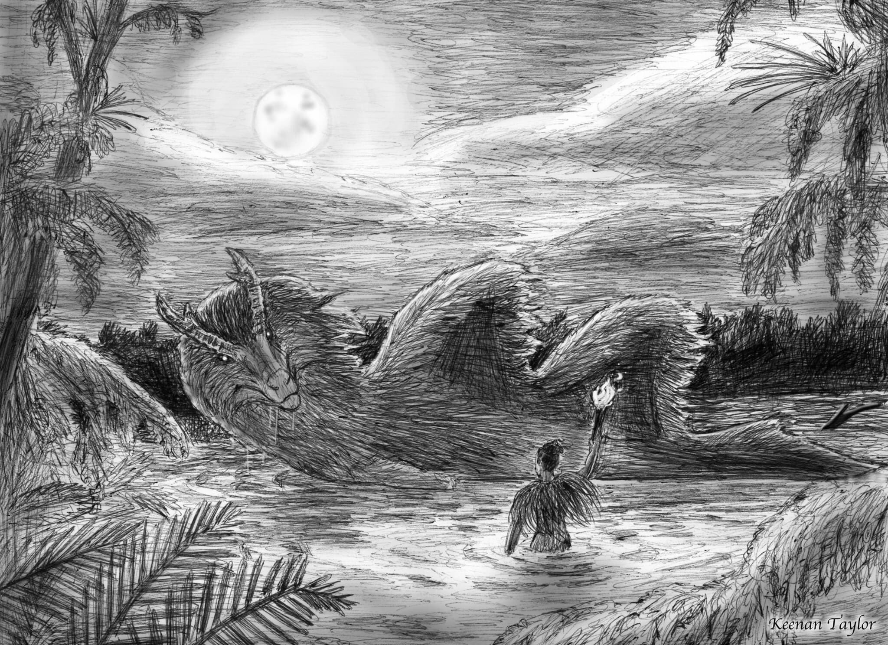
The Serid possess perhaps the longest continuous history of coexistence with kurajaku anywhere in the Known World. Their civilization developed within precisely the type of habitat most favored by resident populations: extensive marshlands, slow rivers, oxbow lakes, floodplain forests, shallow freshwater basins, and seasonally inundated grasslands.
Unlike many peoples who view kurajaku primarily through rare encounters or the retelling of distant stories, the Serid interact with them routinely as an unavoidable component of everyday life. This familiarity has produced a nuanced relationship characterized less by terror than by practical respect. Kurajaku are understood not as aberrations within the landscape but as integral elements of it, occupying a place in Seridic thought comparable to floods, storms, droughts, or the great migrations of fish. They are dangerous, certainly, but they are also expected.
This familiarity begins early in life. Seridic children are taught to identify kurajaku sign almost as soon as they learn to navigate the waterways. They learn to recognize fresh claw marks on muddy banks, scent posts along frequently traveled channels, feeding remains left among reeds, and the distinctive bottom furrows created by the passage of massive bodies through shallow waterways. The ability to distinguish between the tracks of a resident cow, a recently dispersed subadult, and a transient breeding bull is considered valuable practical knowledge. Entire sections of oral tradition serve as ecological instruction disguised as folklore, preserving information about animal behavior, seasonal movements, and danger signs across generations. To many outsiders these stories appear mythical, but experienced wetland inhabitants recognize them as repositories of accumulated field knowledge refined over centuries.
Most Seridic folklore portrays kurajaku not as monsters but as embodiments of the wetlands themselves. They represent age, persistence, patience, inevitability, and continuity. Their immense size and extraordinary longevity make them symbols of forces that existed before humanity and will continue long after individual settlements vanish.
Stories frequently emphasize their role as ancient travelers whose routes predate human occupation. Villages are often described as temporary guests along waterways that truly belong to the kurajaku. A common Sishewic saying roughly translates to, "The channel remembers the kurajaku before it remembers the boat." Such expressions reflect a worldview in which human habitation is understood as transient relative to the immense temporal scale embodied by these animals.
Many traditional stories describe the waterways themselves as having been shaped by kurajaku over countless generations. Particularly in Kairul and the greater Seridic wetlands, where extensive channel networks have been modified by centuries of animal movement, legends often attribute the creation of specific rivers, lakes, and marsh passages to the passage of colossal ancestral bulls.
While modern ecological studies demonstrate that kurajaku do indeed contribute significantly to wetland engineering through excavation and repeated use of migration corridors, folklore generally magnifies this influence into mythic proportions. Some stories describe ancient bulls digging entire rivers in pursuit of mates, while others claim that isolated lakes were formed when exhausted kurajaku collapsed and rested for centuries.
Particularly large bulls frequently acquire individual identities within oral traditions. Unlike many large predators, which remain anonymous within folklore, famous kurajaku are often remembered as distinct personalities. Their immense size, unusual coloration, longevity, and predictable seasonal appearances allow them to become recognizable individuals to multiple generations of observers. Some become so well known that they effectively transcend the boundary between animal and cultural figure.
Maduervo represents perhaps the most famous example among the Sishewa. In numerous stories he appears not merely as a large predator but as a wandering giant whose arrival marks the turning of the seasons. Elder fishermen describe recognizing him by his immense stature, distinctive piebald markings, unusually tall horns, and the persistent scent of saltwater that lingers around him even after months in freshwater. Oral traditions record appearances separated by decades, with some accounts describing grandparents, parents, and children all encountering the same individual at different stages of life. The result is a creature that occupies a role somewhere between a known animal and a legendary figure. For many communities, Maduervo is less a member of a species than a recurring presence within local history. His arrival is frequently interpreted as a seasonal event. In portions of the central wetlands, the appearance of large transient bulls traditionally signals the approaching end of the wet season and the beginning of reproductive activity among resident kurajaku populations. Older fishermen sometimes speak of listening for the distant booming vocalizations of incoming bulls in the same manner that agricultural societies elsewhere watch for migratory birds or seasonal weather changes. In practical terms these observations possess genuine ecological value, as the arrival of transient males often coincides with broader seasonal shifts in water levels, fish distributions, and animal movements.
Remarkably, many Seridic accounts distinguish individual bulls with a degree of detail that modern zoologists have found surprisingly reliable. Certain animals are remembered for unusual coloration, characteristic scars, missing digits, horn asymmetries, or distinctive behavioral tendencies. This reflects both the exceptional observational skills of wetland communities and the fact that some kurajaku survive long enough to become genuinely familiar to local populations. A fisherman may encounter the same bull repeatedly over the course of several decades, creating a continuity of observation rarely possible with other large predators.
Interestingly, Seridic folklore often portrays resident cows as more dangerous than transient bulls. While the immense males are larger, more dramatic, and visually impressive, territorial cows defending nests are responsible for a disproportionate number of aggressive encounters. This perception aligns closely with observed behavior. Resident females possess fixed territories, intimate knowledge of local waterways, and a strong investment in defending nesting sites. Consequently, they are far more likely to perceive humans, boats, livestock, or other disturbances as threats.
Many cautionary tales center on cows rather than bulls. Stories frequently describe fishermen who ignored warning signs near nesting territories, travelers who ventured into reed beds occupied by brooding females, or hunters who accidentally crossed active nesting channels. These narratives emphasize vigilance, humility, and respect for territorial boundaries. In contrast, transient bulls are often portrayed as aloof wanderers whose attention is focused on travel, feeding, or reproduction rather than active aggression toward humans. While capable of immense violence when provoked, they are generally depicted as forces that pass through rather than forces that remain. This distinction extends into spiritual symbolism. Bulls often represent movement, distance, and the broader interconnectedness of the world's waterways. Cows, meanwhile, symbolize territory, protection, motherhood, and the dangerous consequences of violating established boundaries. In some traditions, the two sexes collectively embody the dual nature of the wetlands themselves: the ever-changing currents that connect distant regions and the fiercely defended places that remain rooted in one location.
Interactions with Coastal Peoples
Across the shores of the Trakaiam Sea, Pakardia, the Free States, Qajar, northern Ni'Khar, and much of western Kairul, kurajaku occupy a cultural position remarkably similar to that held by great whales in many human societies. Unlike inland populations, whose interactions with the species are usually confined to rivers, marshes, and nesting territories, maritime peoples most often encounter the largest and most spectacular members of the species: transient bulls that spend much of their lives roaming coastal shallows, seagrass meadows, estuaries, inland seas, and continental shelves.
These ocean-ranging males differ markedly from the resident bulls of interior wetlands. Many spend years feeding primarily on marine mammals, giant crocodilians, leviathans, sea-going beraphaunts, large fish, and other high-calorie aquatic prey. Freed from the energetic constraints imposed by permanent territoriality, they often attain immense proportions. Consequently, coastal peoples are disproportionately exposed to the largest kurajaku in existence. A fisherman in Pakardia or a sailor crossing the Trakaiam may reasonably witness an animal exceeding twenty meters in length and weighing several dozen tons, a scale difficult to comprehend until observed directly. Because these encounters frequently occur in relatively open waters, observers gain a far greater appreciation for the animal's true size than is possible within confined rivers or marsh channels. A kurajaku surfacing beside a vessel reveals itself gradually. First comes the crest of the dorsal keels breaking the surface, followed by the immense skull and shoulders, then the long body extending beneath the water. Many historical accounts note that inexperienced sailors often mistake distant bulls for islands, floating logs, sandbars, or surfacing leviathans before recognizing them as living animals. Particularly large individuals have repeatedly entered maritime folklore as "walking reefs" or "living capes," owing to the impression their bulk creates when viewed across calm water.
The species occupies a unique position in seafaring traditions because its presence frequently correlates with biological productivity. Kurajaku are apex predators with enormous energetic demands. Their occurrence therefore tends to indicate areas supporting substantial concentrations of prey. Fishermen throughout the Trakaiam have long observed that feeding bulls are commonly associated with large fish schools, marine mammal congregations, spawning events, and seasonal migrations. As a result, many fishing cultures deliberately monitor kurajaku activity when deciding where to deploy nets or establish temporary camps.
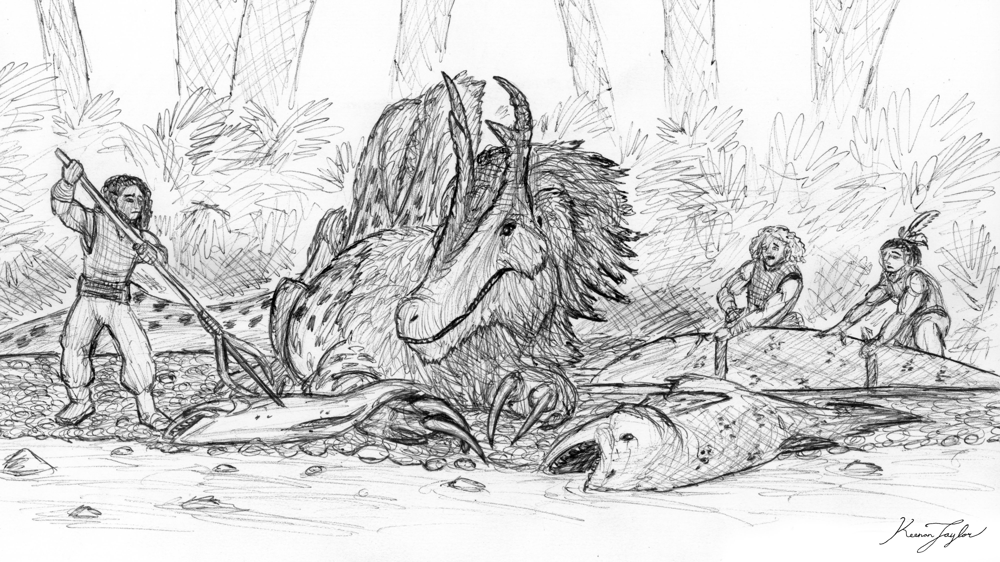
Among several Pakardiant coastal communities, the appearance of feeding bulls is regarded as an exceptionally favorable sign. Traditional fishermen describe kurajaku as "herdsmen of the sea," believing that fish naturally congregate beneath their shadow. While this interpretation is anthropomorphic, it reflects a genuine ecological relationship. Large prey concentrations attract kurajaku, and those same prey concentrations are often economically valuable to humans. Consequently, generations of fishermen learned that locating kurajaku frequently led to locating food. This relationship has given rise to a wide range of folk practices. Some sailors deliberately shadow feeding bulls at a respectful distance, waiting for prey driven to the surface during hunting events. Others interpret the direction of travel of migrating bulls as indicators of seasonal fish movements.
Certain coastal communities even maintain traditional songs and mnemonic devices describing the arrival times of famous individuals, integrating their movements into local calendars alongside weather patterns and spawning runs. The largest transient bulls often become famous across entire maritime regions. Their immense ranges bring them repeatedly into contact with coastal settlements separated by hundreds or even thousands of kilometers. In some cases, individual animals become so recognizable that they acquire reputations comparable to those of legendary ships or famous captains. Sailors exchange stories regarding distinctive bulls, comparing scars, coloration, horn shape, or unusual behaviors. Over decades, these accounts accumulate into extensive bodies of folklore that blur the distinction between natural history and mythology.
No individual better exemplifies this phenomenon than Baal Dasharoq. Known by numerous names across the Known World, he has spent much of his life traversing coastal waters and shallow seas. His immense size, unusual piebald markings, and repeated appearances throughout multiple regions have made him one of the few non-sapient animals recognizable to cultures that otherwise share little contact. To fishermen in one region he may be a harbinger of whale migrations. To sailors elsewhere he may represent a favorable omen for long voyages. To others still he serves as a cautionary reminder of the dangers lurking beneath apparently calm waters.
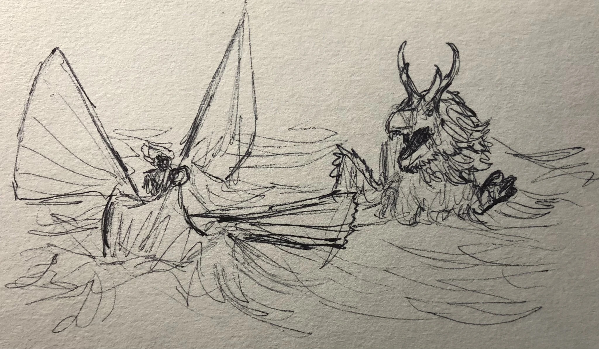
Among the Kentarim, perhaps the people most closely associated with marine kurajaku traditions, the species is frequently referred to as "Whale-Eaters." This title reflects both direct observation and cultural interpretation. Kentarim sailors regularly witness kurajaku attacking prey that would challenge nearly any other predator in the shallow seas. Accounts describe bulls grappling multi-ton marine mammals, overpowering giant crocodilians, and occasionally engaging leviathans in prolonged struggles. Such observations have contributed to the widespread perception that kurajaku occupy the highest predatory tier of nearshore ecosystems. Importantly, this perception extends beyond simple fear. In many maritime traditions, the kurajaku represents mastery over an environment that humans can never fully control. Sailors may navigate the seas, fish their waters, and establish settlements along their shores, but the shallow marine realm ultimately belongs to the great predators that evolved within it.
The kurajaku therefore frequently appears as a symbol of endurance, self-sufficiency, and ancient authority. Coastal myths often depict enormous bulls as guardians of migration routes, judges of sailors, or embodiments of the sea's will. Among some Qajari and Free States communities, old bulls are even described as "sea kings" or "lords beneath the tides." Such titles do not imply divinity but rather acknowledge their ecological dominance. These animals are viewed as ancient powers whose lives unfold on scales that exceed ordinary human experience. A transient bull may travel across multiple nations, survive for nearly a century, and witness generations of sailors come and go while continuing the same migrations year after year.
As a result, maritime peoples rarely view kurajaku solely as predators. Instead, they are perceived as living components of the seascape itself. Much as mountains define terrestrial horizons, the appearance of a great wandering bull defines certain coastal waters. They are landmarks, omens, ecological indicators, and subjects of folklore simultaneously. Their movements connect distant cultures, their feeding activities reveal hidden concentrations of marine life, and their sheer scale inspires a sense of awe that few other living creatures can match. In many coastal traditions, the shallow seas are not truly empty wildernesses but domains traversed by ancient wanderers whose routes were established long before the first boat ever touched the water.
Interactions with the Maku
In western Kairul, kurajaku occupy a particularly important place within Maku traditions. Unlike the more settled societies of the Crescent Basin, many Maku groups historically practiced highly mobile lifestyles that brought them into frequent contact with large predators. Seasonal migrations, coastal travel, river expeditions, and long-distance raiding routes regularly carried Maku communities through habitats frequented by resident and transient kurajaku alike. As a result, the species became deeply integrated into Maku conceptions of endurance, movement, destiny, and survival.
Where many cultures regard the kurajaku primarily as an apex predator, the Maku more often view it as a fellow traveler. Both species inhabit landscapes defined by movement. The Maku traditionally traversed vast distances across marshes, floodplains, coastal salt flats, mangrove forests, and river systems, while kurajaku bulls undertook migrations that could span entire continents. This ecological parallel appears repeatedly throughout Maku oral traditions, which frequently depict the great bulls as spiritual counterparts to wandering clans.
Numerous Maku legends describe colossal bulls crossing immense distances between sacred waters. In these stories, rivers, lakes, estuaries, and shallow seas are not merely habitats but stations along ancient pilgrimage routes established long before the arrival of humanity. The greatest bulls are said to know pathways hidden beneath the water that connect distant lands together. Some traditions claim that the channels dug by kurajaku were not created accidentally through generations of movement, but deliberately carved by primordial bulls seeking roads through the wilderness.
Unlike Seridic traditions, which often focus upon the relationship between particular wetlands and their resident animals, Maku narratives emphasize movement itself. The journey matters more than the destination. The kurajaku becomes an embodiment of persistence, a creature that never truly settles and whose life is defined by continual motion between distant places.
This perspective is likely influenced by Maku cultural memory surrounding pilgrimage and migration. Numerous Maku legends describe their ancestors wandering across immense distances in search of a lost homeland. Within these stories, kurajaku often appear not as obstacles or predators, but as guides, witnesses, or companions encountered along the route. Certain myths even suggest that the first Maku migrations followed ancient kurajaku channels through the marshes of Kairul. Whether these stories preserve genuine historical memories of travelers utilizing waterways maintained by generations of kurajaku or merely represent symbolic associations remains uncertain.
The extraordinary longevity of large bulls further reinforces their importance within Maku traditions. A mature transient bull may survive for nearly a century, traveling repeatedly between the same regions over the course of its life. For communities that preserve history primarily through oral tradition, such animals can appear almost immortal. Stories recorded generations apart may describe encounters with what is, in fact, the same individual.
Consequently, distinctions between specific animals and archetypal figures frequently blur. A particularly famous bull may become associated with events spanning decades or even centuries. The same kurajaku appears in stories of migrations, battles, famines, marriages, and natural disasters. Over time these accounts merge, producing legendary figures that exist simultaneously as real animals and mythological entities.
This phenomenon is particularly evident in traditions surrounding exceptionally large transient bulls. One of the most famous examples is the immense wanderer known elsewhere as Baal Dasharoq. Among various Maku groups he is known by numerous names, many of which translate approximately as "The One Who Returns," "The Ancient Voyager," "He Who Knows the Sea Roads," or "The Wanderer of Saltwater." Oral histories describing these figures often correspond remarkably well with known movement patterns of documented transient bulls.
The immense size of such individuals further contributes to their mythological status. A bull exceeding twenty meters in length and weighing tens of tons is capable of leaving an unforgettable impression upon observers. Entire communities may remember a single sighting for decades. When that same animal returns years later, larger than before and still actively traveling, it becomes easy to understand how legends emerge.
Several Maku pilgrimage traditions include ceremonial observation points overlooking known kurajaku channels. These locations often occupy elevated ridges, ancient river terraces, or promontories overlooking major wetlands. Some have been used continuously for centuries. Travelers undertaking important journeys may stop at these sites to observe the waterways below and watch for signs of passing bulls.
The appearance of a famous kurajaku during such occasions is generally interpreted as a favorable omen. In particular, transient bulls moving confidently along established migration routes are associated with successful travel, safe passage, and the completion of difficult undertakings. Historical accounts describe warbands delaying departures to await sightings of known bulls, while traders sometimes interpreted the direction of a bull's travel as guidance regarding which routes would prove safest or most profitable.
The symbolic connection between kurajaku and successful journeys extends into Maku military culture as well. Certain raiding traditions regarded the sighting of a large bull before departure as evidence that the expedition possessed spiritual favor. Warriors sometimes painted stylized kurajaku motifs upon shields, boats, and armor, particularly designs emphasizing the distinctive dorsal keels and immense horns of mature males.
Unlike many predator-associated symbols that emphasize ferocity or aggression, kurajaku imagery within Maku culture more commonly emphasizes perseverance. The admired quality is not the animal's ability to kill, but its ability to continue moving despite age, injury, distance, and hardship. A successful leader is sometimes compared to a wandering bull—not because he is violent, but because he remains steadfast regardless of obstacles.
This symbolism extends into Maku concepts of aging and wisdom. Elderly transient bulls are often regarded with particular reverence. Their scarred hides, broken horns, and immense size serve as visible records of survival. In folklore, an old bull is portrayed as a living archive carrying memories of distant places and forgotten ages. Some stories claim that sufficiently ancient kurajaku remember routes traveled by the First Children or witnessed events from the Age of Demons, reflecting the tendency of Maku mythology to associate extreme age with accumulated knowledge.
Perhaps most revealing is the contrast between Maku and Seridic perceptions of the species. For the Serid, who live permanently within the wetlands, kurajaku are often viewed as forces of place. They belong to specific rivers, lakes, and marshes. Their significance derives from their integration into local ecosystems and daily life.
For the Maku, however, the defining characteristic of the species is not its connection to a place but its refusal to remain in one. Kurajaku are creatures of transition rather than residence. They move between freshwater and saltwater, between nations and cultures, between familiar and unknown lands. They appear, disappear, and return again years later, carrying with them the mystery of distant horizons.
Kurajaku as Cultural Icons
Few non-domesticated animals appear as frequently in Kaimeran storytelling. Their immense size, longevity, intelligence, and continental movements make them ideal narrative subjects. Stories featuring kurajaku occur throughout Pakardia, Serid, Arvel, Qajar, Ni'Khar, Kairul, and numerous island cultures. Remarkably, these narratives often focus on identifiable individuals rather than generic members of the species. This tendency stems from the unusual lifespan of large bulls. A kurajaku may remain recognizable for decades, allowing stories about specific animals to spread and accumulate across regions. In effect, certain individuals become historical actors whose lives intersect with human events.
Baal Dasharoq represents the most thoroughly documented example. Accounts attributed to him span multiple nations and numerous decades. He appears in folklore, travelers' journals, fishing records, and Assembly observations alike. While most apex predators exist primarily as ecological entities, exceptional kurajaku bulls often achieve something closer to celebrity status. This phenomenon is virtually unparalleled among terrestrial predators. A large zentaur, hrugetaur, or zhen may become locally famous within a particular region, but their influence rarely extends beyond the ecosystems they inhabit.
Kurajaku are different. The wandering bulls traverse immense geographic distances and routinely move between civilizations that otherwise possess little contact with one another. As a result, stories about individual animals often spread farther than the people who tell them. A fisherman in the Seridic Wetlands may describe an enormous green-maned bull scarred along the shoulder, only for travelers arriving from Pakardia months later to realize they are speaking about the same animal known there by an entirely different name. Over time, independent traditions merge into a single narrative lineage, transforming a living predator into a recognizable figure across continents.
Among the peoples who share their waterways with kurajaku, particularly the Serid, Kentarim, Maku, and Pakardiants, the distinction between history and folklore often becomes blurred when discussing famous bulls. The animals are real, their movements documented, their scars and coloration recognizable, yet the stories surrounding them accumulate embellishments with each retelling. A bull that survives a leviathan attack may later be described as having slain the leviathan outright. An animal observed crossing a dangerous estuary during a storm may eventually be credited with causing the storm itself. Because many bulls survive long enough for several generations of humans to encounter them, there is rarely a clear dividing line between witnessed behavior and legendary accomplishment. Particularly large bulls frequently become associated with major events. Floods, migrations, wars, famines, and notable voyages are often anchored in memory by reference to the appearance of a famous kurajaku. Oral histories may describe a battle occurring "during the year Rasha crossed the northern delta" or a village relocation occurring "three seasons after Maduervo devoured the river leviathan." In this capacity the animals function almost as living chronological markers. Their movements provide reference points around which local histories are organized. Some scholars have compared this role to the use of monarchs or dynasties as temporal markers in other civilizations.
The tendency to as sign names to famous bulls is nearly universal. These names vary dramatically between cultures but often emphasize similar characteristics. Some refer to size, others to coloration, behavior, scars, or notable feats. Many cultures regard the naming of an especially famous bull as a privilege earned through repeated encounters. Once a name becomes established locally it is often retained for centuries in folklore, even if the original individual eventually dies. In some cases later bulls may inherit the same title, creating lineages of legendary names that further blur the distinction between individuals.
No kurajaku better illustrates this phenomenon than Baal Dasharoq. Born in Pakardia and first documented by Assembly naturalists as a relatively ordinary subadult, he gradually transformed into one of the most recognizable animals in the Known World. Over nearly four decades of life he has accumulated a remarkable collection of names and identities. To the Serid he is Maduervo. To the Kentarim he is Gashubilite, the Whale-Eater. Along the northern shores of Qajar he is remembered as Enkhitus. The peoples of the Free States know him as Rasha. Among numerous Maku communities he possesses additional names, some of which scholars have been unable to translate consistently. Each culture views him through a different lens, emphasizing different aspects of his behavior, appearance, and significance. His fame stems not only from his immense size but from the nature of his lifestyle. Unlike resident bulls that spend most of their lives within a particular watershed, Baal Dasharoq is a consummate wanderer. He has spent decades moving between the Trakaiam Sea, the Seridic wetlands, the northern coasts of Ni'Khar, the salt marshes of western Kairul, and countless intermediate waterways. Entire generations of fishermen have watched him appear from the sea, remain for weeks or months, and then vanish once more beyond the horizon. His movements are so extensive that many communities possess stories describing his arrival but no memory of his departure, while others remember his departure but not his arrival. Because his travels connect distant populations, Baal occupies a unique position in Kaimeran culture. He is one of the few animals whose life can be reconstructed through a combination of folklore, historical records, and biological observation. Fishermen record his sightings. Travelers describe encounters. Poets compose verses about him. Children hear cautionary tales involving him. Naturalists measure him. Assembly scholars track his movements. As a result, he exists simultaneously as an ecological reality and a cultural figure. Many stories emphasize his role as a voyager. Unlike cows, which remain tied to territories and nesting grounds, he spends much of his life answering the calls of distant females. This behavior resonates strongly with numerous Kaimeran traditions concerning pilgrimage, wandering heroes, exploration, and duty. In many cultures he has become an archetype of the eternal traveler: a being that belongs nowhere and everywhere simultaneously. He leaves no permanent home, yet entire regions recognize him. He is welcomed in some stories, feared in others, but always remembered.
The longevity of kurajaku further amplifies this effect. A bull may remain active for nearly a century, creating an unusual circumstance in which the same individual can appear in the childhood stories of a grandparent, the journals of their children, and the direct observations of their grandchildren. Few wild animals live long enough to become multigenerational acquaintances. Kurajaku do. Consequently, many communities speak of famous bulls not as wildlife but almost as distant neighbors—dangerous, unpredictable, and wholly untamed neighbors, yet familiar enough that their absence is noticed. For this reason, exceptional kurajaku occupy a cultural space rarely achieved by non-domesticated animals. They are not merely predators, nor merely symbols. They become personalities. Their scars, habits, migrations, victories, injuries, and disappearances become matters of public interest. While most apex predators are remembered only as representatives of their species, the greatest kurajaku are remembered as individuals. Long after their deaths, their names persist in folklore, literature, songs, navigation traditions, and local histories, ensuring that their influence extends far beyond the ecosystems they once inhabited.
Economic Significance
Although direct exploitation of kurajaku is uncommon, the species exerts an outsized influence on the economies of numerous wetland and coastal civilizations through its role as an ecosystem engineer. In many regions, particularly western Kairul and portions of the Seridic Wetlands, the hydrological landscape itself bears the imprint of countless generations of kurajaku activity.
Unlike most large predators, whose influence on ecosystems is exerted primarily through predation, kurajaku physically reshape their environment through movement alone. The immense mass of adult bulls, combined with their preference for repeatedly traversing the same routes between feeding grounds, breeding territories, and seasonal refugia, gradually excavates channels through marshes, floodplains, and shallow wetlands. Individual passages may begin as little more than submerged trails, but over decades these routes deepen and widen. Over centuries, and particularly in regions continuously occupied by the species for hundreds of thousands of years, they develop into extensive networks of permanent waterways. These channels profoundly alter local hydrology. During flood seasons they serve as conduits that distribute water across broad floodplains, reducing stagnation and promoting nutrient exchange between otherwise isolated wetlands. During dry seasons they retain water long after surrounding marshes have receded, creating refugia for fish, amphibians, aquatic invertebrates, and numerous other organisms. The result is a dramatic increase in habitat complexity. Areas occupied by long-established kurajaku populations typically support higher aquatic biodiversity and greater overall biological productivity than comparable wetlands lacking the species.
The economic consequences of this engineering are substantial. Many fisheries throughout Kairul and the Seridic Wetlands depend heavily upon the seasonal movement of fish through ancient kurajaku channels. Migratory species utilize these waterways as spawning routes, juvenile nursery grounds, and dispersal corridors. Fishermen often concentrate their efforts along major channels, where fish densities remain high even during periods of drought. Some settlements owe their locations directly to the presence of particularly productive kurajaku-created waterways. In several regions, local maps, navigation traditions, and fishing rights are organized around channels whose origins ultimately trace back to generations of theropod activity.
The species also contributes indirectly to agriculture. Seasonal flooding facilitated by kurajaku channels transports nutrient-rich sediments into surrounding floodplains, replenishing soils and supporting the growth of both wild vegetation and cultivated crops. Many marsh grasses, including those harvested by wetland peoples for food, construction materials, and livestock forage, achieve their greatest productivity in landscapes shaped by long-term kurajaku engineering. Water buffalo herding, fishing, reed harvesting, and floodplain agriculture all benefit from hydrological regimes that the species helps maintain.
In Kairul, the influence of kurajaku engineering reaches even greater scales. There, generations of resident and transient populations have collectively produced vast interconnected wetland systems stretching across enormous portions of the western coastal lowlands. Some Assembly ecologists have argued that these landscapes cannot be fully understood without viewing kurajaku as geomorphological agents comparable to beavers, elephants, or even river systems themselves. In this sense, the species functions not merely as a predator inhabiting the wetland, but as one of the processes responsible for creating the wetland.
Kurajaku also generate important economic opportunities through their feeding behavior. Large kills often attract concentrations of scavengers, fish, and invertebrates that can persist for weeks. Fishermen in some regions intentionally monitor known feeding areas, recognizing that the remains of a leviathan, giant crocodilian, or other megafaunal prey item can create temporary hotspots of aquatic productivity. Although dangerous to approach directly, these locations frequently support elevated fish abundance long after the kurajaku has departed.
The death of a mature bull represents an even more significant ecological event. Such occurrences are extraordinarily rare. Large bulls may survive for many decades, and their immense size renders them nearly invulnerable to predation. When one eventually dies—whether from age, disease, injury, or intraspecific combat—the resulting carcass becomes a concentrated pulse of nutrients unlike almost anything else in the ecosystem. A single adult bull may contain tens of tons of biomass. The decomposition of such a carcass supports a succession of scavengers that unfolds over months or even years. Large carnivores, crocodilians, turtles, fish, birds, insects, and countless microorganisms exploit the resource. Nutrients released from the carcass enrich surrounding waters and sediments, stimulating algal growth, invertebrate abundance, and ultimately higher trophic productivity. Entire localized food webs may temporarily reorganize around the remains.
The ecological effects often persist long after the carcass itself has vanished. Vegetation surrounding former carcass sites frequently exhibits enhanced growth for years. Fish populations may remain elevated due to increased nutrient availability. In some cases, channels partially obstructed by skeletal remains alter local water flow patterns, creating new pools, sandbars, or microhabitats that persist for decades. Because such deaths are so uncommon, they frequently acquire cultural significance. Many communities remember the locations of famous carcasses for generations. Historical records, oral traditions, and local place names often reference the death sites of particularly notable bulls. In some regions, the discovery of a deceased giant kurajaku is treated almost as a natural disaster, pilgrimage site, and economic opportunity simultaneously. Scavengers converge from vast distances, fishermen exploit temporary increases in productivity, scholars arrive to document the event, and local populations incorporate the occurrence into folklore.
Conflict and Predation Upon Humans
Despite their fearsome reputation, kurajaku generally do not regard humans as preferred prey. From an energetic perspective, humans represent an unusually poor food source for an animal capable of regularly consuming prey weighing several tons. Even a large adult Kaimeran provides only a fraction of the caloric return available from the aquatic megafauna upon which kurajaku primarily depend. Consequently, deliberate predation upon healthy adult humans remains relatively uncommon and is best understood as opportunistic rather than specialized behavior.
Most interactions between humans and kurajaku occur without violence. Fishermen, traders, ferrymen, hunters, and travelers routinely observe individuals at distances ranging from a few dozen meters to several kilometers. In many regions, particularly throughout the Seridic Wetlands and portions of Kairul, encounters are so frequent that local communities regard the animals as an expected component of daily life. The majority of kurajaku simply ignore nearby humans unless their activities intersect directly with feeding, nesting, or territorial behavior.
Human attacks occur primarily under four circumstances: territorial defense by nesting cows, mistaken identity during aquatic ambushes, opportunistic predation upon isolated individuals, and accidental encounters involving large transient bulls navigating restricted waterways.
The greatest danger comes from reproductive females. A nesting cow represents one of the most aggressive large predators in Kaimere. During incubation and the first several years of chick rearing, females exhibit an extremely low threshold for perceived threats. Boats approaching a nesting island, fishermen establishing camps too close to brood-rearing habitats, livestock wandering near nesting territories, or even unfamiliar noises may trigger defensive responses. Unlike transient aggression displayed by many predators, a charging cow is often fully committed to eliminating the perceived threat. Numerous accounts describe females pursuing boats through reed channels, overturning watercraft, and attacking repeatedly until the target has either escaped the territory or been killed. Such encounters account for the overwhelming majority of documented human fatalities attributable to the species. Importantly, these attacks are not predatory. Examination of attack sites consistently reveals that victims are rarely consumed. Instead, the behavior is best interpreted as territorial elimination of potential nest predators. Humans are treated much as the cow would treat a competing theropod, large crocodilian, or other dangerous intruder. Once the threat is neutralized, interest usually ceases.
Mistaken identity represents the second major source of conflict. Kurajaku are ambush predators that frequently attack prey from below or from heavily vegetated shorelines where visibility may be limited. Under certain conditions, swimmers, small boats, floating livestock, or individuals crossing channels can trigger predatory responses normally directed toward aquatic mammals. Such incidents are most common in turbid water during dawn, dusk, or periods of heavy rainfall when visual confirmation is difficult. Fortunately, these attacks often terminate once the predator realizes the target is not typical prey. Unfortunately, the initial strike from an animal weighing tens of tons is frequently catastrophic regardless of intent.
Opportunistic predation upon humans does occur but remains relatively rare. Such events are most frequently associated with juveniles, subadults, elderly individuals, or unusually food-stressed populations. Solitary travelers, children, and isolated fishermen are disproportionately represented among confirmed predatory attacks. In these cases, humans appear to be treated similarly to medium-sized terrestrial mammals encountered along shorelines. Nevertheless, even in regions with dense human populations, such incidents remain infrequent compared to predation on naturally available prey.
Transient bulls present a fundamentally different hazard. Whereas cows actively defend territories, large nomadic males are dangerous primarily because of their extraordinary size. The largest individuals function almost as moving geological features. A bull weighing forty to fifty tons can displace tremendous volumes of water while traversing narrow channels. Boats may capsize simply from wake generation. Shorelines can collapse beneath their weight. Reed structures, docks, fish traps, and even portions of levees may be destroyed unintentionally during routine movement. In many cases the animal may never acknowledge the presence of humans at all. Particularly famous bulls occasionally become associated with localized legends of destruction. Baal Dasharoq, for example, has been recorded overturning fishing vessels, destroying floating reed platforms, and collapsing embankments throughout his travels. Yet detailed investigation of such events consistently indicates accidental rather than aggressive behavior. At nearly fifty tons, his simple passage through shallow waterways can generate disturbances sufficient to damage infrastructure designed around animals less than half his size. Interestingly, the largest transient bulls are often less dangerous than resident cows from a behavioral perspective. Having spent much of their lives moving between territories, they generally exhibit greater tolerance toward nearby animals and humans. Many have learned to ignore fishing activity, boats, and settlements entirely. Their danger arises not from hostility but from scale. A bull that can swallow a small boat whole is not necessarily interested in doing so.
Human responses to kurajaku vary considerably across cultures. Inexperienced travelers often view them as indiscriminate man-eaters, while communities that coexist with them regularly tend to adopt a more nuanced perspective. The Serid, Maku, Kentarim, and various coastal peoples possess extensive bodies of ecological knowledge concerning kurajaku behavior. They recognize warning signs, understand seasonal movement patterns, avoid nesting territories, and modify travel routes when transient bulls are present. Consequently, many regions with the highest kurajaku densities do not necessarily experience the highest rates of human mortality. Indeed, statistical analyses conducted by the Assembly suggest that the species is significantly less dangerous than popular folklore would suggest. Millions of people coexist with kurajaku throughout their range, and serious incidents remain relatively uncommon compared to the enormous number of annual encounters. In many regions, humans are more likely to be killed by flooding, crocodilians, venomous animals, or accidents involving domesticated livestock than by kurajaku. The animal's immense size amplifies every incident in cultural memory, creating an impression of constant danger that is not reflected by observed mortality rates.
This discrepancy between perception and reality has profoundly influenced the species' cultural image. Kurajaku are remembered not because they kill frequently, but because when conflict does occur, it is often spectacular. A crocodilian may kill a fisherman without witnesses. A kurajaku attack may destroy boats, uproot vegetation, scatter entire camps, and leave evidence visible for months. Consequently, rare events assume an outsized role in folklore, reinforcing the image of the species as a monstrous predator despite the relatively low frequency of lethal encounters.
Relationship with the Assembly
The Assembly regards the kurajaku as one of the most scientifically important megafaunal species in modern Kaimere. While its immense size and status as the largest theropod ever known have attracted public fascination for centuries, professional interest in the species stems less from its sheer mass than from its role as a continent-spanning ecological connector.
Few animals in the modern world move biomass, genetic material, pathogens, parasites, behavioral traditions, and ecological influence across such extraordinary distances. In many respects, the kurajaku functions not merely as a predator, but as a biological infrastructure species whose movements help integrate otherwise isolated ecosystems into a larger ecological network.
For this reason, long-term Assembly monitoring programs devote considerable resources to tracking major bulls, particularly the largest transient individuals. Resident populations are comparatively straightforward to study. Cows occupy relatively stable territories associated with nesting grounds, and smaller resident bulls often remain within a single watershed or wetland complex for most of their lives.
The giant wanderers are different. Some individuals spend decades moving between continents, crossing inland seas, estuaries, coastal marshes, river systems, and shallow marine environments in journeys that can span thousands of kilometers.
The Assembly's understanding of these migrations has expanded dramatically over the last several centuries. Early scholars often regarded reports of enormous bulls appearing in distant regions as folklore or cases of mistaken identity. It seemed improbable that a single animal could disappear from the Seridic wetlands only to reappear years later in northern Ni'Khar, the Trakaiam coast, or the salt marshes of eastern Kairul.
However, repeated observations of distinctive individuals gradually overturned this assumption. Unique horn configurations, characteristic scar patterns, unusual pigmentation, injuries, and later magical tagging studies confirmed that some bulls routinely travel distances comparable to the migrations of oceanic cetaceans.
Among the most extensively documented examples is the Pakardiant-born bull Baal Dasharoq. Few individual animals in Assembly records have generated such sustained scientific interest. His unusual piebald coloration, exceptionally tall horns, and enormous size make him readily identifiable even at great distances.
Historical records suggest that he has been observed throughout much of the Known World and beyond over the course of nearly four decades. Although currently estimated at approximately twenty-three meters in length and forty-eight tons in mass, osteohistological modeling indicates that he remains in an active growth phase and has not yet reached somatic asymptote. Consequently, many researchers believe he may ultimately rank among the largest kurajaku ever documented.
Baal's scientific value extends far beyond his dimensions. Because he has repeatedly been observed mating with resident populations across multiple continents, he provides one of the clearest examples of how transient bulls maintain genetic continuity between geographically separated groups.
In most regions, cows exhibit strong site fidelity and rarely abandon established nesting territories. This creates the potential for local populations to become genetically isolated over time. The movements of transient bulls counteract this tendency.
By traveling between distant watersheds and breeding with multiple resident populations, they facilitate gene flow across enormous geographic scales. Genetic studies conducted on populations throughout the Seridic Wetlands, Trakaiam Basin, northern Ni'Khar, and western Kairul reveal surprisingly low levels of regional divergence despite substantial geographic separation.
Much of this continuity appears attributable to the movements of large migratory bulls. Indeed, some Assembly researchers have argued that the kurajaku should be viewed less as a collection of isolated populations and more as a vast interconnected metapopulation maintained through the periodic movements of these giant males.
The ecological effects of such journeys extend beyond genetics. Every transient bull functions as a mobile biological reservoir. Parasites acquired in one region may be transported to another. Microbial communities associated with the skin, digestive tract, and feather structures move alongside the animal.
Nutrients accumulated through feeding in one ecosystem are deposited elsewhere through excretion, shedding, and eventual mortality. The magnitude of this transfer is difficult to overstate. A bull such as Baal may consume many tons of marine mammal tissue while feeding in coastal waters before entering freshwater systems where those nutrients are gradually redistributed throughout entirely different food webs.
This nutrient transport has attracted increasing scientific attention. Stable isotope studies indicate that marine-derived nutrients can be detected within freshwater ecosystems long after transient bulls have passed through them. In effect, the animals function as living conveyors linking marine and freshwater productivity. Similar ecological roles are known among salmon, whales, and certain migratory birds, but few terrestrial vertebrates operate on a comparable scale.
Behavioral transmission represents another emerging area of study. Assembly researchers have increasingly recognized that kurajaku exhibit significant behavioral plasticity and localized hunting traditions. Different populations employ distinct techniques when targeting particular prey species, navigating specific waterways, or exploiting seasonal resource pulses. Because transient bulls move between populations, they may facilitate the spread of such learned behaviors. Several well-documented examples support this possibility. Hunting strategies first recorded among Kairulan populations have subsequently appeared in distant wetland systems following visits by known transient bulls. While definitive proof of cultural transmission remains elusive, the pattern has become sufficiently consistent that many researchers now consider it likely. If confirmed, this would position transient bulls as vectors not only of genetic exchange but of information exchange as well.
For these reasons, Assembly scholars frequently describe the great wanderers as living currents moving through the world's wetlands and shallow seas. The analogy is particularly apt. Just as ocean currents connect distant marine ecosystems through the transport of nutrients, organisms, and energy, transient kurajaku connect otherwise isolated ecological communities through their movements. They carry genes between continents, redistribute nutrients across habitats, transport parasites and microorganisms between populations, and potentially facilitate the spread of learned behaviors. Their influence extends far beyond the immediate effects of predation. Indeed, some researchers argue that the ecological importance of transient bulls may exceed that of resident individuals despite their comparatively lower abundance. Resident cows stabilize local populations and anchor reproductive territories. They define the structure of individual ecosystems.
The great migratory bulls, by contrast, define the relationships between ecosystems. Without them, regional populations would gradually diverge genetically, nutrient transfer would diminish, and ecological connectivity across the species' range would weaken substantially.
Consequently, the Assembly increasingly views the conservation of migratory corridors as essential to maintaining healthy kurajaku populations. Protecting nesting territories alone is insufficient. The vast network of rivers, estuaries, wetlands, shallow seas, and coastal marshes used by transient bulls represents a critical component of the species' biology. Interruptions to these pathways could fragment populations that have remained connected for hundreds of thousands of years.
Symbolism and Cultural Legacy
Ultimately, the kurajaku occupies a unique position within Kaimeran civilization. It is neither merely predator nor merely symbol. Rather, it exists at the intersection of ecology, history, mythology, and lived experience in a manner achieved by very few organisms.
For the Serid, it embodies the ancient power of the wetlands: a force older than villages, older than kingdoms, and in many places older than the waterways themselves. For the Maku, it represents pilgrimage without end, the eternal traveler moving from one horizon to another. For the maritime peoples of the Trakaiam Sea, the Gulf of Kairul, and the northern coasts of Qajar, it is the giant of the shallows, a ruler of coastal waters whose arrival is as significant as the coming of a storm or the migration of whales. For Assembly scholars, it represents one of the most extraordinary evolutionary trajectories ever produced by Earth-origin life, a theropod that abandoned the terrestrial constraints of its ancestors and became something entirely unique. For storytellers, however, it is something else entirely: the perfect voyager, a creature capable of spending nearly a century wandering from one end of the world to the other, accumulating legends wherever it goes.
Few animals are recognized across as many cultures. Fewer still are known not merely as species but as individuals. The largest wandering bulls achieve precisely that status. They become characters in history. They appear in journals, folktales, shipping records, oral traditions, and sometimes even political correspondence. Their movements are discussed by fishermen, merchants, travelers, and scholars alike. Children grow up hearing stories of them and may encounter the very same individual decades later as adults. By the time a particularly famous bull dies, three or four generations of people may have known its name.
The most famous examples transcend even this. Baal Dasharoq is perhaps the greatest illustration of the phenomenon. In Pakardia, where he first hatched, he is remembered as Baal Dasharoq, the immense wanderer born in distant marshes and destined for greater things. Among the Serid he is Maduervo, a familiar giant whose arrival marks the changing seasons and whose passage through the wetlands is recorded almost as carefully as floods and fish migrations. The Kentarim know him as Gashubilite, the Whale-Eater, a title earned through years of hunting marine leviathans in coastal waters. Along the northern shores of Qajar he becomes Enkhitus, a mysterious colossus emerging from the fog-laden shallows. In the Free States he is Rasha. Among the Maku he possesses numerous names, each emphasizing different aspects of his character and travels.
Remarkably, many of the peoples who tell these stories have little direct contact with one another. Yet through the movements of a single animal their traditions become connected. A fisherman in Serid, a sailor in Pakardia, a hunter in Qajar, and a Maku elder may all be speaking of the same individual despite living thousands of kilometers apart and belonging to entirely different civilizations. In this way, the great bulls become threads woven through the cultural fabric of Kaimere itself.
This role is reinforced by the extraordinary lifespan of the species. Most apex predators are fleeting presences. They live, reproduce, and die within spans short enough that individual recognition rarely persists beyond local memory. The kurajaku is different. A large bull may wander for nearly a century. Entire nations can rise and fall while the same individual continues following ancient routes between estuaries and inland seas. Human generations pass beneath its shadow. Children who once watched a famous bull surface beside their father's fishing boat may later tell the same stories to grandchildren who witness the animal's return decades afterward.
This longevity gives the species an almost mythological quality even when viewed through a completely rational lens. Unlike dragons, sea monsters, or spirits, the kurajaku is undeniably real. It leaves tracks, kills prey, mates, sheds feathers, and can be studied scientifically. Yet it possesses many of the qualities traditionally associated with legendary beings. It is immense beyond normal comprehension. It appears unpredictably from distant lands. It survives long enough to become familiar across generations. It acquires names, personalities, reputations, and histories. It travels farther than most people ever will. Consequently, the boundary between zoology and folklore becomes unusually porous.
Even among scholars this duality is acknowledged. Assembly researchers may discuss growth curves, dispersal ecology, and hydrodynamic biomechanics during the day, then spend the evening exchanging stories about particularly famous bulls they have encountered during fieldwork. Scientific understanding does not diminish the animal's cultural significance; if anything, it enhances it. The knowledge that a bull documented in Kairul may later appear in Pakardia, then in Ni'Khar, then in Serid decades afterward only deepens appreciation for the scale of its journeys.
The species has also become a powerful symbol of connectivity. Kaimere is a vast world composed of many peoples, languages, and ecosystems. Mountains divide cultures. Deserts isolate civilizations. Oceans separate continents. Yet the wandering kurajaku ignores these boundaries. It moves between wetlands, estuaries, inland seas, and coastal shallows with little regard for the political or cultural distinctions that humans construct. Its routes bind together environments that might otherwise seem unrelated.
The same bull may hunt whales in marine shallows, court females in freshwater marshes, cross inland seas, and rest in estuaries thousands of kilometers apart. Through its movements, nutrients, genes, parasites, learned behaviors, and ecological influences are transported across continental scales. Many cultures consequently view the kurajaku as a living embodiment of the world's interconnectedness.
The animal's journeys remind observers that distant places are not truly separate. Watersheds connect to seas, seas connect to coastlines, coastlines connect to rivers, and rivers eventually lead back to wetlands. The kurajaku traverses these connections continuously throughout its life.
When a particularly famous bull finally dies, its death often becomes a historical event. Stories spread rapidly through local communities. Fishermen report the discovery. Scholars document the remains. Artists create depictions. Oral traditions adapt and expand. The carcass itself becomes an ecological monument, feeding entire communities of scavengers and enriching the surrounding habitat.
Yet culturally, the animal's influence rarely ends there. Its routes remain part of local memory. Its encounters become stories. Its name enters folklore. In some cases, descendants hatched from territories it visited continue to appear generations later, extending the narrative beyond the lifespan of the original individual.
In this regard, the kurajaku is not merely a predator of the world's waterways. It is one of the few truly pan-Kaimeran animals, a living bridge between ecosystems, civilizations, and histories. Its passage links distant peoples who may never meet, connects habitats separated by entire continents, and transforms individual animals into figures remembered across centuries.
Long after a great bull vanishes beneath the water for the final time, the stories remain, carried onward through countless languages and cultures. Few creatures leave such tracks upon the landscape. Fewer still leave them upon civilization itself.
10 · SYSTEMATICS
Taxonomy and Phylogeny
The phylogenetic history of Tectopotamus hydrofax/thalattanax must be understood as part of the broader evolutionary history of megaraptorans on Kaimere, a history shaped by repeated harvests, ecological turnovers, and the long-term persistence of two major megaraptoran lineages. On Earth, megaraptorans have long occupied an uncertain position within theropod phylogeny, having at various times been interpreted as carnosaurs, coelurosaurs, or tyrannosauroid relatives. On Kaimere, that uncertainty is compounded by the fragmentary fossil record and by the fact that two distinct megaraptoran radiations are recognized: one derived from later Earth megaraptorids, and another endemic clade that arose from much more basal megaraptoran stock. Both ultimately trace to the broader megaraptoran condition, but they followed different evolutionary pathways once introduced to Kaimere.
The older endemic lineage appears to have arrived during the Age of Tremor and Travel, when small, agile megaraptorans entered Kaimere from a harvest that likely favored Laurasian taxa, though the exact composition of that harvest remains debated. Basal megaraptorans on Kaimere were not immediately large apex predators. Instead, they were small to moderate-sized generalists occupying unstable predator guilds alongside other theropods and competing with much more powerful animals. Their early success was therefore not based on size, but on a combination of sharp senses, strong forelimbs, and a versatile predatory toolkit inherited from their megaraptoran ancestry. This long interval of ecological subordination likely proved important, because it selected for flexibility rather than rigid specialization.
These ancestral megaraptorans persisted through the Mesozoic dynasties as relatively small generalists. Even when later, more derived megaraptorids from Earth arrived during the Red Spring Dynasty, they initially occupied subordinate roles beneath larger carcharodontosaur apex predators. That pattern of vassalage is important because it shows that megaraptorans did not begin as dominant giants. They first evolved under strong ecological pressure, as medium-bodied predators that had to be alert, mobile, and adaptable in order to survive. Their senses, reflexes, and weaponry were therefore established long before the rise of modern Kaimere’s megaraptoran giants.
The next great phylogenetic turning point occurred during the Tyrant Dynasty and its aftermath. Around 68 million years ago, rapid aridification and ecosystem collapse triggered another major harvest from late Maastrichtian Asia. Those newcomers were pre-adapted to arid and semi-arid conditions and became the dominant megafauna of the ensuing age. Throughout that dynasty, megaraptorans remained subordinate apex predators, a position that nonetheless preserved them through the long interval of ecological stability that followed. When the Tyrant Dynasty ultimately ended in volcanic catastrophe and biodiversity collapse, the resulting ecological emptying created opportunities for megaraptoran diversification in the Known World and adjacent regions.
The modern phylogenetic structure of Kaimere's megaraptorans is usually framed as a division between the slender barons, or Styraconychidae, and the robust monarchs, or Apeirovenatoridae, both united under Agnostornia, the “wondrous birds.” The barons and monarchs represent not simply size differences, but divergent predatory philosophies. Styraconychids tend toward more gracile, flexible, and often more specialized forms, while apeirovenatorids emphasize robustness, strong social systems, and greater postorbital expansion in adults. Ontogenetic change is especially important in the apeirovenatorids: juveniles retain more gracile skulls, whereas adults develop the massive cranial reinforcement and expanded postorbital regions characteristic of their mature predatory role. The kurajaku belongs within this broader agnotorn context, but as an extreme phylogenetically early offshoot of the robust monarch grade whose life history pushed the group into a specialized aquatic niche.
Within the styraconychids, the teratociconines, or monstrous storks, are the closest and most useful comparative context for understanding kurajaku ancestry because they illustrate how megaraptorans on Kaimere repeatedly adapted to aquatic and semi-aquatic predation. The teratociconine radiation split into at least two major lineages between roughly 6 and 10 million years ago. One remained in Arvel and ultimately gave rise to the alar, which later spread widely across the Known World and beyond. The other lineage moved into Ni'Khar and produced the ba'khar, the last surviving member of that clade in the Known World after the faunal turnover 1.5 million years ago. These fish-specialist lineages demonstrate that megaraptorans repeatedly converged on shallow-water hunting, but they also show how habitat specificity and body density shaped the limits of that specialization. The alar remained relatively flexible and broadly successful, whereas the ba'khar became more restricted and buoyant, wading rather than operating fully within the water column. The kurajaku stands phylogenetically distinct from both, but its later evolution clearly belongs to the same broader ecological pattern of megaraptoran exploitation of aquatic prey.
The ba'khar are particularly important in this context because they illustrate the ancestral ecological template from which more extreme aquatic megaraptorans could diverge. Compared to alar (Alar spp.), ba'khar possess lower bone density and therefore more positive buoyancy, which restricts them to wading and knee-deep water rather than more fully aquatic foraging. They are fish specialists but remain versatile enough to take turtles, birds, mammals, reptiles, and even other dinosaurs. Their range was once broader, but after the major turnover 1.5 million years ago they were largely displaced by alar except in the Seridic wetlands, where abundant fish stock preserved their largest refuge population. The kurajaku does not descend from the ba'khar directly, but the phylogenetic and ecological relationship between the two is crucial: both occupy wetland predator roles, both depend on large prey concentrations, and both illustrate how megaraptorans can be shaped by aquatic habitat structure. The kurajaku, however, carries this trend far further toward giant submerged grappling predation than any ba'khar lineage did.
The alar demonstrate the other side of this adaptive spectrum. They are the most successful megaraptorans in terms of range and abundance, having erupted across the Known World and beyond only after the major turnover around 1.5 million years ago. Their success was driven in part by small size, flexibility, and high saltwater tolerance. In the Seridic wetlands, where fish are abundant and competition remains fierce, the smallest alar subspecies persists alongside larger ba'khar and kurajaku. Females of alar can nest in places that larger species cannot, and this territorial flexibility allows them to remain successful even in the presence of stronger competitors. The alar therefore represents the generalist, relatively light-bodied end of the megaraptoran aquatic spectrum, while the kurajaku represents the giant, dense, territorially constrained end. Both are part of a broader evolutionary story of megaraptoran success in shallow-water systems, but they reached that success through very different morphologies.
The robust monarchs are the clade within which the kurajaku is most properly situated at the family level of ecological interpretation. Apeirovenatorids are the top predators of Kaimere in both the Known World and beyond. They are characterized by large, reinforced skulls in adults, elongated pseudo-canine teeth, reduced but powerful first digits, and a stronger tendency toward more complex social and longer multi-generational reproductive systems. Their evolutionary success depends in part on prolonged parental care and extended juvenile association. Mothers allow offspring from previous generations to remain within territories until they become competitive, and older siblings may aid in territory defense and nest protection. This social structure has helped apeirovenatorids become the dominant large terrestrial predators of Kaimere. The kurajaku inherits this robust monarch framework but modifies it profoundly by shifting into a semiaquatic, highly mobile, negatively buoyant mode of life. It is therefore best understood not as an aberrant side branch detached from apeirovenatorid history, but as one of the clearest demonstrations of how the robust monarch body plan can be retooled for a completely different medium.
The closest large-scale ecological comparison among robust monarchs is the contrast between the kurajaku and terrestrial apex forms such as the zentaur and uktan. The zentaur remains a large terrestrial predator of forest and savanna systems, with a role focused on megaherbivore regulation across corridors and titan-dominated landscapes. The uktan, by contrast, is an endurance-oriented monarch adapted to fire-grass prairies and long pursuit over open terrain. The kurajaku differs from both by abandoning ground-based cursorial dominance in favor of aquatic substrate locomotion. Yet the underlying robust monarch traits remain visible: enlarged adults, strong cranial and cervical reinforcement, prolonged growth, and a predatory strategy centered on restraint, endurance, and repeated wound infliction. In that sense, the kurajaku is phylogenetically closest not to the fish-specialist styraconychids in direct ancestry, but to the broader apeirovenatorid experiment in giganticity and prolonged ontogeny.
The origin of the kurajaku itself lies in Arvel, where during the Anchored Period it existed as a modest predator roughly 8 — 12 meters long, occupying swamps and estuaries and occasionally venturing into inland waters. This ancestral form likely hunted in the shallow margins of wetlands rather than in the open marine environment. Its later expansion was triggered by the turnover of the inland sea about 1.5 million years ago. When that seaway returned and seagrass grazers exploded in abundance, the lineage found itself in the presence of a tremendous prey base with relatively little competition. The evolutionary response was rapid and dramatic: body size increased, range expanded, and the lineage spread not only into the inland sea but also into wetlands across the Known World and beyond. This is the most important species-level transition in kurajaku history, because it marks the point at which the lineage ceased to be a local wetland predator and became a world-spanning semiaquatic giant.
The species complex recognized today under the kurajaku name reflects this expansion. The common kurajaku of the Known World, the northern Ni'Khari forms, and the Kairulan populations are often treated as distinct species or subspecies by different scholars, yet they remain connected by the movement of large transient bulls between basins and coastlines. Some researchers argue for a single broadly distributed species, while others retain multiple species designations based on size, color pattern, and regional ecology. The evidence for gene flow is strong enough that any strict division is somewhat artificial. The animals themselves do not respect such taxonomic boundaries: bulls traverse freshwater wetlands, coastal shallows, inland seas, and marine margins across enormous distances. This vagabond behavior means that the kurajaku should probably be treated phylogenetically as a regionally differentiated superspecies complex within the apeirovenatorid radiation, with local populations held together by intermittent male-mediated connectivity.
That same phylogenetic structure helps explain the extraordinary sexual dimorphism of the group. Female kurajaku remain constrained by nesting requirements and therefore stay within a more conventional giant theropod size range, while males continue growing throughout their lives and can become among the largest theropods ever to evolve. This is not merely a reproductive detail; it is an evolutionary signature. The male bull phenotype represents the full realization of a lineage that has fused robust monarch social biology with aquatic gigantism and long-distance dispersal. Resident bulls in wetlands are large but more constrained, while transient bulls that feed in shallow seas can become truly colossal. One documented bull, Baal Dasharoq, measured 23 meters and weighed roughly 48 tons, yet was still growing and still far from somatic asymptote. Such body size is not an incidental exaggeration; it is the product of a long phylogenetic trajectory favoring large-bodied, mobile males capable of connecting distant female territories and exploiting marine megafaunal resources.
Viewed in evolutionary context, then, the kurajaku is best understood as the end point of several intersecting megaraptoran trends. From the earliest basal megaraptorans it inherited speed, sensory acuity, and grasping forelimbs. From the endemic Kaimere radiation it inherited ecological flexibility and the capacity to survive repeated turnover events. From the robust monarch lineage it inherited prolonged parental systems, strong adult cranial reinforcement, and the capacity for gigantism under sustained ecological opportunity. From aquatic and semi-aquatic megaraptoran relatives such as alar and ba'khar it inherited the relevance of shallow-water predation, wetland habitat use, and prey specialization in flooded systems. The kurajaku does not merely sit at the top of this history; it condenses it. Its phylogeny is a record of Kaimere itself: a world repeatedly reshaped by harvests, climate shifts, and ecological opportunity, where a theropod lineage survived by becoming ever more capable of turning water into hunting ground.
For more information, see Megaraptorans .
Social Behavior and Organization
Kurajaku are neither fully solitary in the strictest sense nor conventionally social in the manner of gregarious terrestrial predators. Their social organization is best described as facultative, context-dependent, and strongly structured by reproductive investment, kinship, resource availability, and life stage. The species does not form permanent packs, coordinated hunting parties, or stable mixed-sex groups comparable to those of highly social carnivores. At the same time, kurajaku are far from behaviorally isolated. They maintain prolonged maternal associations, temporary male aggregations, flexible bachelor associations, and highly consequential territorial interactions that together create a socially complex but non-cooperative system. The social world of the kurajaku is therefore built around tolerance thresholds, spatial familiarity, reproductive timing, and the selective persistence of kin-linked relationships rather than generalized group cohesion.
The primary and most stable social unit is the maternal family. A cow and her dependent offspring may remain associated for a period approaching a decade, with the exact duration determined by environmental productivity, maternal condition, clutch size, and the pace of juvenile independence. This association is the closest kurajaku come to a true family group. It is not rigidly synchronized across all individuals, but it is persistent enough to shape the species' early social development in profound ways. A maternal unit may consist of the cow and a single chick, a small clutch of siblings, or in productive habitats a succession of overlapping age cohorts from multiple breeding seasons. In such cases the family group may include newborn chicks, older juveniles, and occasionally subadults that have not yet fully dispersed. Although the adult female remains the dominant social anchor, the group becomes internally differentiated by age, size, and dependency.
Within these family units, social order is structured primarily by developmental stage. Neonates cluster closest to the mother, both for protection and for thermoregulation. Older chicks and juveniles occupy increasingly peripheral positions and may serve as both observers and, in some cases, active participants in defense. This arrangement produces a layered family architecture in which younger offspring receive preferential access to warmth, protection, and provisioning, while older siblings contribute incrementally to nest defense and environmental awareness. The result is not cooperative parenting in a mammalian sense, but rather a graded system of maternal investment and sibling function that becomes more elaborate as offspring age. In territories where food is abundant and multiple broods overlap, the family unit may function almost as a multigenerational cohort with distinct roles, though the relationship remains fundamentally maternal rather than truly communal.
Maternal tolerance is extraordinarily important during this prolonged developmental period. Cows do not merely permit offspring to remain nearby; they actively regulate their presence. Young chicks are tolerated unconditionally, while larger juveniles remain acceptable only so long as they do not impede feeding, nest defense, or future reproductive investment. Eventually, as older offspring become competitors for prey, space, or territorial stability, the mother increasingly restricts access to the core territory. Dispersal is therefore not always abrupt. In many cases it develops through gradual exclusion, increasing spatial marginalization, and progressive reduction in maternal tolerance rather than immediate expulsion. This process allows young animals to remain in proximity long enough to complete essential learning while still ensuring that the territory does not become permanently crowded with oversized offspring.
Among bulls, the social structure is very different. Adult males are typically solitary outside of temporary resource concentrations and breeding activity. However, their solitude is not absolute. Mature bulls often tolerate one another far more readily than is commonly assumed for giant apex predators. This tolerance is highly conditional and depends upon prey abundance, reproductive context, and relative size. When food is plentiful, several bulls may occupy the same river reach, coastal feeding zone, or seasonal prey aggregation without significant conflict. Under these circumstances, individuals maintain spatial spacing rather than direct social affiliation. They are not cooperating, but neither are they aggressively excluding one another. Such temporary coexistence can last days or even months, particularly during large fish runs, marine mammal concentrations, or other episodic biomass pulses.
The most stable male social formations are bachelor associations. These groups are not true packs and do not exhibit coordinated hunting or fixed hierarchy in any strict sense, but they do represent recurring social patterns among adult males, especially subdominant bulls and younger adults. Bachelor groups may contain as few as two individuals or as many as a dozen, though most are small and fluid. They are most commonly observed in resource-rich or migratory environments where the benefits of mutual tolerance outweigh the energetic costs of solitary travel. Within such groups, social order is generally loose. Larger bulls tend to displace smaller ones at feeding sites, and older individuals may dominate access to the best resting or travel positions, but prolonged violent conflict is uncommon unless prey is scarce or a receptive female becomes involved. These male associations may persist for extended periods because they provide several indirect benefits. They can reduce the risk of surprise attack from rivals or ambush predators, particularly in unfamiliar waters. They may also improve navigational efficiency during long-distance movement, as multiple bulls following the same corridor can reinforce route memory and identify safe passages more quickly than an isolated individual. In addition, large concentrations of bulls can overwhelm smaller scavengers and opportunistic competitors at major carcasses or feeding events. Even so, no evidence suggests organized cooperative hunting. When bulls feed together, they do so as independent participants converging on the same resource rather than as a coordinated unit.
Female social organization is more spatially rigid. Adult cows are strongly territorial, and this territoriality sharply limits the formation of stable female-female groups. Neighboring females may tolerate one another at the margins of their ranges, especially in highly productive wetlands where territory compression is unavoidable, but close association is rare and often unstable. When multiple adult females occupy adjacent regions, the social relationship is best understood as one of boundary recognition rather than affiliation. Each female maintains her own nesting and feeding core, and interaction with neighbors is usually limited to scent exchange, vocal advertisement, and occasional boundary confrontation. In especially productive systems, territories may be close enough that females are regularly aware of one another without ever forming a true social cluster. This territorial exclusivity has significant social consequences. Because reproductive investment is so substantial, cows cannot afford broad social tolerance at the expense of nest security. Their disposition is consequently more severe than that of bulls. Female interactions are often shaped by direct competition for suitable nesting sites and prey-rich refugia. Even when no active aggression occurs, neighboring cows remain socially distant. There is little evidence for female alliances beyond the temporary tolerance of close kin or mother-daughter overlap during juvenile dispersal. The species therefore lacks the broad female philopatry and cooperative territorial structures seen in some mammalian predators. Instead, the female social system is built around exclusivity, spatial memory, and long-term reproductive site fidelity.
The role of kinship is particularly important in shaping the more tolerant aspects of kurajaku social life. Closely related individuals are more likely to coexist peacefully, especially during juvenile and subadult stages. Siblings raised within the same maternal territory often show prolonged tolerance, and even after dispersal may continue to avoid immediate conflict when their ranges overlap. This is most evident among young males, which may form temporary associations with related or familiar individuals during the dispersal phase. Such relationships are not stable enough to constitute enduring social bonds, but they can reduce conflict during periods of high environmental risk. Kin tolerance appears strongest when food is abundant and weakest when prey is scarce or reproductive opportunities are present. The social behavior of juveniles differs markedly from that of adults. Young kurajaku engage in substantial play, mock combat, chasing, body wrestling, and exploratory tactile behavior. These interactions are essential for the development of motor control, bite inhibition, balance, and social evaluation. Juvenile sociality is therefore more flexible and less territorial than adult sociality. Nevertheless, it is not egalitarian. Larger juveniles often dominate smaller siblings, and early hierarchies may persist within the maternal unit. Such hierarchies are generally based on size and age rather than formal rank, but they have real consequences for access to food and resting sites. Over time, these early interactions likely contribute to the development of the adult social disposition, particularly the species' strong emphasis on assessment before escalation.
Temporary aggregations represent another important aspect of kurajaku social organization. Major food sources, spawning migrations, and reproductive bottlenecks may draw large numbers of individuals into close proximity. During such events, social density can increase dramatically. Dozens of kurajaku may occupy the same waterways, coastal shelves, or wetland basins simultaneously. These gatherings can persist for days or even weeks, but they are not cooperative assemblies. Rather, they are resource-driven convergences held together by ecological opportunity. Individuals maintain spacing discipline, and direct aggression remains limited so long as food remains abundant. Once the resource pulse declines, the aggregation rapidly disperses. The social dynamics of these temporary gatherings are nonetheless important. They provide opportunities for bulls to encounter receptive females, for juveniles to observe adult foraging strategies, and for individuals to exchange chemical and acoustic information over broad spatial scales. They also create conditions under which social tolerance is tested and refined. Bulls that can remain calm in crowded feeding environments may gain access to greater reproductive opportunity, while females that can defend crowded nesting or feeding grounds may better preserve territory stability.